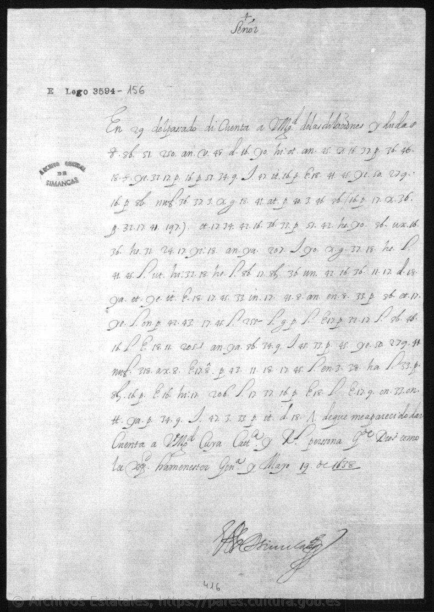
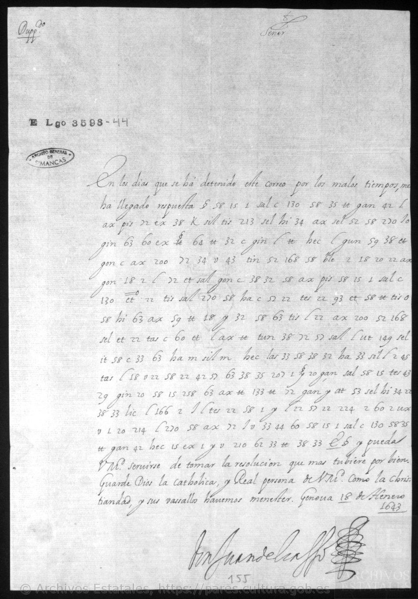
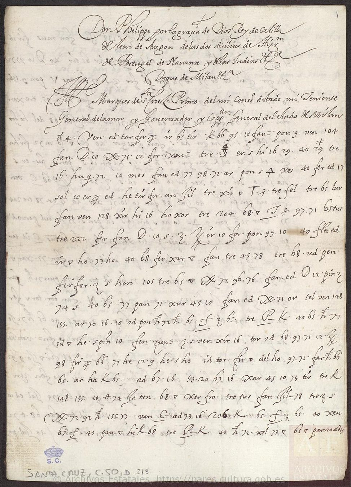

Marie de Médicis · 1610 · Légat Sega · 1593 · Ferducci · 1532 · Charles XII · 1710 · Høeg · Meyercrone · 1675 · Duplessis-Mornay · 1593 · Vila Flor · 1663 · Puebla · 1506 · Everett · 1825 · Dana · 1783 · Wąsowicz · 1663 · Henri II · 1547 · João IV · 1644 · Crawford · 1813 · Lope Hurtado · 1520 · Philippe IV · 1648 · Jourdan · 1812 · Raince · 1526 · Winslow · 1918 · Partyet · 1721 · D’Orvilliers · 1761
Les documents, au plus près du texte.
Trente-deux documents chiffrés, présentés comme des fiches : date, expéditeur et destinataire, trajet, fac-similé, lecture proposée et lecture moderne. Les deux lettres de Marie de Médicis à Brèves (1610) ne comptent que cinq lignes chiffrées ; l’instruction de Rome au légat Sega (1593) en compte douze pages ; la lettre de Niccolò Ferducci à Ferdinand Iᵉʳ (Fiume, 19 juillet 1532) ne chiffre que huit mots, qui révèlent un projet d’enlèvement de l’ambassadeur de France ; deux copies chiffrées d’une lettre de Charles XII (Bender, 26 avril 1710) montrent le roi prêt à négocier avec le Danemark et à conclure un armistice ; dix-huit dépêches de Copenhague à Just Høeg, envoyé à La Haye, et dix-neuf à Henning Meyercrone, envoyé à Paris (janvier–juin 1675), lues en entier avec une clé retrouvée dans les archives, montrent le Danemark inquiet de l’invasion suédoise du Brandebourg, puis négociant en secret sa neutralité avec la France ; enfin, huit passages chiffrés de lettres de l’été 1593 à Duplessis-Mornay, imprimés en 1824 sans traduction faute de clé, se lisent avec un alphabet « replié » : « le roy est trahi ». Enfin, trois lettres chiffrées d’Afonso VI au comte de Vila Flor (Lisbonne, 13, 15 et 26 mai 1663) annoncent la cavalerie envoyée en renfort, puis ordonnent de secourir Évora assiégée « à tout risque », fût-ce au prix d’une bataille. S’y ajoute une lettre du docteur de Puebla au secrétaire Almazán (Londres, 21 avril 1506), qui, lue avec la table reconstruite par Satoshi Tomokiyo, défend en chiffre la maison de Catherine d’Aragon contre « la cupidité de certaines personnes ». Enfin, six lignes chiffrées d’Alexander H. Everett, ministre des États-Unis à Madrid (25 septembre 1825), que le Département d’État avait coupées en 1826 : Everett n’y croit pas le refus de Zea de reconnaître les nouveaux États d’Amérique, « un langage que lui imposent pour le moment des circonstances particulières ». Et huit lignes de Francis Dana, envoyé du Congrès à Saint-Pétersbourg (6/17 avril 1783), que Wharton laissait en chiffres : lues avec la table de Dana retrouvée dans les archives du Congrès, elles disent qu’à la cour de Catherine II, « à proprement parler, il n’y a pas de ministre ». Enfin, six lettres de Ludwik Wąsowicz à Aleksander Michał Lubomirski (novembre 1662 – décembre 1663), lues avec une table reconstituée au XIXᵉ siècle : la cour surveille « le maréchal », Jerzy Sebastian Lubomirski, frère du destinataire, et se demande s’il détachera ses bannières de l’armée confédérée « comme il l’a promis ». Enfin, trois lettres d’Henri II à Soliman le Magnifique (1547), copiées en latin et chiffrées par Malvezzi, le résident de Ferdinand Iᵉʳ à Constantinople : le roi dénonce les « lettres trompeuses et ridicules » de Charles Quint, demande que les Suisses soient compris dans la trêve et que la flotte ottomane se tienne prête. Et quatre lignes chiffrées de João IV au marquis de Nisa (Lisbonne, 21 septembre 1644), seule pièce de son registre sans déchiffrement d’époque : l’ambassadeur rappelé ne confiera « ni au Marquis, ni à aucune autre personne » le secret des mariages du prince Teodósio et des infantes. Enfin, la lettre entièrement chiffrée de William H. Crawford, ministre des États-Unis à Paris, à James Monroe (15 août 1813) : Napoléon reste à Dresde, Crawford refuse de l’y suivre, et il découvre l’arrangement secret de son prédécesseur Barlow avec des capitalistes autour d’un « plan d’indemnités ». Enfin, une lettre entièrement chiffrée de Lope Hurtado de Mendoza à Charles Quint (Tordesillas, 10 décembre 1520), écrite cinq jours après la reprise de la ville sur les Comuneros, dont nous avons reconstruit la clé sur le texte même : l’Amiral hésite à gouverner, le marquis de Denia est haï, l’armée « très mal commandée » est « le plus grand de nos soucis ». Et la lettre de Jourdan à Soult (Madrid, 28 mai 1812), interceptée et traduite en espagnol, dont les nombres du Grand Chiffre de 1812 restaient sans déchiffrement : que d’Erlon batte Hill sur la Guadiana, ou passe le Tage au pont de l’Arzobispo pour couvrir Madrid. Et la dépêche du consul Partyet au Conseil de Marine (Cadix, 7 avril 1721), dont six lignes chiffrées étaient restées « non transcrites » : la querelle de Pedro de los Ríos, de Patiño et de Dormay, commandant des gardes de la marine, sera « décidée incessamment » à Madrid.
Les caractères entre crochets restent probables ou non confirmés. Le bleu signale les valeurs numériques corroborées par Satoshi Tomokiyo ; leur application à la clé de Marie reste proposée. Lire la synthèse.
Marie de Médicis à Brèves, 15 septembre 1610


Date 15 septembre 1610
Trajet France → Rome
Expéditeur Marie de Médicis, reine régente (régente depuis la mort d’Henri IV, le 14 mai 1610)
Destinataire François Savary de Brèves, ambassadeur de France à Rome
Cote BnF, Français 3789, no 11 · f17r · Gallica, vue 32
Chiffre quelques lignes chiffrées insérées dans le français : lettres, syllabes et signes numériques ; table très proche de celle d’Henri IV (BnF Français 3462, vue 112)
Mots clés malice · ambition · imprudence · foiblesse · Espagnolz · Espagne
État de la lecture. Premier déchiffrement à notre connaissance. Lecture suivie ; les caractères entre crochets restent probables mais non confirmés. Quatre valeurs numériques sont corroborées par Satoshi Tomokiyo (en bleu).
Conventions : [b?] = caractère probable, non confirmé ; bleu = valeur numérique corroborée par Satoshi Tomokiyo, dont l’application à la clé de Marie reste proposée.
Ligne chiffrée · f17 L1

Lecture proposée
ce sera trop manifester leurs malice et am[b?]ition que
Ligne chiffrée · f17 L2

Lecture proposée
acompagne[z?] d’imprudence et
Ligne chiffrée · f17 L3

Lecture proposée
[de?] foi[b?]lesse
Le passage dans son contexte (en clair, partie chiffrée surlignée)
« […] si avec cela ilz y apportent encore de la difficulté, ce sera trop manifester leurs malice et am[b?]ition que j’estime, s’il en falloit venir à l’effet, devoir estre acompagne[z?] d’imprudence et [de?] foi[b?]lesse, selon la constitution présente de leurs affaires. »
Lecture moderne
S’ils (les Espagnols, nommés juste avant dans la lettre) y apportent encore de la difficulté, ce sera trop manifester leur malice et leur ambition ; s’il fallait en venir à l’exécution, j’estime qu’elles seraient accompagnées d’imprudence et de faiblesse, selon l’état présent de leurs affaires.
Marie de Médicis à Brèves, 10 novembre 1610

Date 10 novembre 1610
Trajet France → Rome
Expéditeur Marie de Médicis, reine régente (régente depuis la mort d’Henri IV, le 14 mai 1610)
Destinataire François Savary de Brèves, ambassadeur de France à Rome
Cote BnF, Français 3789, no 12 · f19r · Gallica, vue 36
Chiffre quelques lignes chiffrées insérées dans le français : lettres, syllabes et signes numériques ; table très proche de celle d’Henri IV (BnF Français 3462, vue 112)
Mots clés pape · arogance · timidite · désarmement · duc de Savoye
État de la lecture. Premier déchiffrement à notre connaissance. Lecture suivie ; les caractères entre crochets restent probables mais non confirmés. Quatre valeurs numériques sont corroborées par Satoshi Tomokiyo (en bleu).
Conventions : [b?] = caractère probable, non confirmé ; bleu = valeur numérique corroborée par Satoshi Tomokiyo, dont l’application à la clé de Marie reste proposée.
Ligne chiffrée · f19 L1

Lecture proposée
que Sa Sainteté recognoi
Ligne chiffrée · f19 L2

Lecture proposée
ssant leurs arogance et sentant sa timidite
Le passage dans son contexte (en clair, partie chiffrée surlignée)
« Aussi vois-je bien que Sa Sainteté recognoissant leurs arogance et sentant sa timidite ne les pressera jusques à l’extrémité du désarmement, pour recevoir enfin la honte d’un refus absolu […] »
Lecture moderne
Aussi vois-je bien que Sa Sainteté, reconnaissant leur arrogance et sentant sa propre timidité, ne les pressera pas jusqu’à l’extrémité du désarmement, pour recevoir enfin la honte d’un refus absolu.
Le légat Sega, 14 mai 1593
Instruction de Rome au cardinal-légat, BnF Français 3984, no 6 : douze pages entièrement chiffrées. Chaque page est donnée avec son image, la lecture proposée en italien, une lecture moderne et le texte déchiffré intégral. Lire l’article →


Date 14 mai 1593 (duplicata : « Dup.to 14 Maggio 1593 » en marge du premier feuillet)
Trajet Rome → Paris
Expéditeur Rome, au nom du pape Clément VIII (rédacteur non nommé ; le texte parle de « Sa Sainteté » à la troisième personne)
Destinataire Filippo Sega, cardinal-légat à Paris (« cardinal de Plaisance » ; au pied : « Al sig. Card.le di Piacenza »)
Cote BnF, Français 3984, no 6 · ff. 12r–17v · Gallica, vues 24–35
Chiffre chiffres continus : nuls 3 et 8, paires pour les lettres, nomenclature encadrée de nuls
Mots clés Navarra · Infanta · scisma · legge salica · finta conversione · terzo partito
État de la lecture. Déchiffrement probable et partiel. Relecture n° 3 des signes faite sur l’image par Claude (Opus 5.5, contre-relecture Claude Fable), pas encore confirmée par Brice Dudout. Mise à jour du 23 octobre 2026 : confrontation avec la lecture préliminaire de Satoshi Tomokiyo (2019) ; 27 chiffres corrigés et deux valeurs de lettres (97 = s, 61 = b) repris d’après lui.
Conventions : [Navarra] = nombre de la nomenclature valué ([x?] faible, [02] non valué) ; ‹x› = restitution ; « … » = passage non lu. Dans le texte déchiffré intégral, sans coupure de mots, 4? signale un chiffre isolé (rupture). Souligné en pointillé : chiffres corrigés d’après Satoshi Tomokiyo, Cryptologia 43(1), 2019.
f. 12r · Gallica 24
Lecture proposée (italien)
… [le cose] che si dimandano … La prima, che si proceda alla dechiaratione et escomunicatione di … seguaci di [Navarra] … par che si debba fare almeno hora, particolarmente in esser cosa non solo inutile, ma anco nociva, stimando la scomunica che sin hora … participatione non stimeranno ; né anco la dechiaratione, come pur troppo chiari sono gli esempi che sin qui ne habbiamo, essendosi visto il poco conto che si è fatto della sentenza data contro [Navarra] et del monitorio emanato da Gregorio decimo tertio [sic], et ultimamente della bolla della legatione nel [077] Piacenza ; onde, vedendosi manifestamente che le censure sono neglette, … da costoro non saria ‹stimata›, oltre al non far frutto alcuno, altro che un far schernire più l’autorità apostolica. Et pur si sa che, essendo la sentenza delle censure medicinale, come dicono li canonisti, si deve operare dove non
Lecture moderne
Première demande des ligueurs : déclarer l’excommunication des partisans de Navarre. Rome la juge inutile, et même nuisible pour le moment. On a fait peu de cas de la sentence contre Navarre, du monitoire de Grégoire (« XIII » dans le chiffre, sans doute pour XIV) et de la bulle de légation. Les censures sont méprisées ; une nouvelle déclaration ne ferait que tourner davantage l’autorité apostolique en dérision.
Texte déchiffré intégral de la page (sans coupure de mots)
r5?esaan2?deltsriqhegifedibimandaseisonolecosechesidimendanolaprimachesiprocedaaaladechiarationeetescom0?entcationedi{21}atiseguacieNavarraaFrancia?parchesidebafarealmenonhoraparticolarmentainesercosanonsoloinutieemaanconociuailestimandoil·la·lelascomunicachesincoreinldparticipationenonstimeranoneancoladechiarationecomepurtropgachiarisonogliesempiesinquinehabiamcesendosiuistoilpcocontochesiefatodel·lasentenzadatacontroNavarraidel·lamonitorilmandatidagregoriodecimotertioetultimamentedel·labolabdel·lalegationenel[077]piacenzaondeuedendosimanifestamentecheacensuresononegleteetparuipesedacostorononsariail·la·leoltrealnonfarfrutoalcunoaltrocheunfarscher5?erpiulautoritaapostolicaetpursisacheesendonlasentenzadel·lacensuremedicinalecomediconlicanoni6?stiesideueopraredouenon
f. 12v · Gallica 25

Lecture proposée (italien)
‹è› speranza di frutto, anzi in rispetto, quando sono così vili … et neglette ; vogliono li canonisti che si devano tali escomunicati assolvere etiam in … ; [02] meno si deve fare hora, non essendo le censure compagnate da forze da poterle far temere … Oltra che, a far la dechiaratione giuridicamente, saria necessario citarci ciascheduno particolarmente, cosa piena di difficoltà et pericoli ; … si aggiunge che, oltra al non si veder speranza di frutto, come è detto di sopra, si va a pericolo evidentissimo di danno, poi che potriano li … traboccarsi in uno scisma … et anco causa in esser trattati … alla Sede apostolica in riconoscerla … come sono stati sentiti, cosa la quale è degna di grandissima consideratione, in ciò che, procedendo
Lecture moderne
Les censures sont « médicinales », disent les canonistes : elles ne valent que là où elles peuvent agir. Sans forces pour les faire craindre, il faut s’en abstenir. Une déclaration en forme obligerait à citer chacun personnellement, ce qui est plein de difficultés et de dangers. Surtout, on risquerait de jeter les intéressés dans un schisme.
Texte déchiffré intégral de la page (sans coupure de mots)
esperanzadifrutoanziinarispetoquandosonocosiuilipeseetnegleteuoglionolicanonistichesideuanotaliescomundcatiasoluereatiamin0?ittii[02]menosideuefarhoranonesendoil·la·lecensurecompagniatedaeorzedapoterlefartemereipiacesea?diodenedetochefoserostimatetraianiitaliattasoltrachenfaril·la·ledechiarationegiuridicamentesarianecesartocitarcichedunoparticolarmentecosapienadidi4?itantaetepericolia?il·la·lesiagiungecheoltrealnonsiuederspetanzadifrutocomedetodisoprasiuaa?pericoloeuidentisimodidanopoichepotrianoil·la·letrabocarsiainoinunoschismaetpretenaenoneancocausainesertrataticsimentreh4?enandatoalaseheapostolicainriconoscerlaneinncorasonostatisentiticosalaqualeèdegnadigrandisimaconsiderationeinciocheprocedendos
f. 13r · Gallica 26

Lecture proposée (italien)
‹al› perdersi affatto la speranza di poterli staccar mai più da [Navarra], né di far qualche cosa di buono con la negotiatione … precipitarsi, come già è detto … [Navarra] et tutti quei che lo seguitano … oltra che, essendo più salutar rimedio … riunir … l’uno et l’altro partito insieme, si leveria anco il rimedio. La seconda, che è notoriamente et manifestamente dechiarati non voler in re alcuno della casa di Borbone, per la qual cosa non si può fare … ; bisognaria citar tutti costoro et proceder con a formar processi, cose che hanno in sé infinite difficoltà, massimamente che ci ponno esser de’ quali siano [26] istessi [Navarra] tenuti come prigioni, come sa [S. S.?] che ce ne sono, et anco … li quali non hanno colpa.
Lecture moderne
On perdrait tout espoir de détacher jamais de Navarre ceux qui le suivent, et de réunir les deux partis. Deuxième demande : déclarer qu’on ne veut pour roi personne de la maison de Bourbon. Il faudrait citer tous ces gens et instruire des procès, avec des difficultés infinies. Certains sont tenus « comme prisonniers », et le pape sait qu’il y en a qui sont sans faute.
Texte déchiffré intégral de la page (sans coupure de mots)
alpeiidersiafatolasperanzadipoterlistacarmaipiudaNavarranedifarqualchecosadibuonoconlanegotiatio[100]precipitarsicomegiaedeto[24]dpichenil·la·lemodoaoseropoi[715]iNavarraitutti?echeloseguitainerooltracheeciesendopiusalutarrimedioinlisalutèe[19]ne7?uedereriuniridaliatt2?idel·launoialaltroparitttoinsiemesileueriaancoil·la·lerimediolasecondacheeanotoriamenteetmanifestamentedechiarinonuolerinrealcunodel·lacasadiborboneper·laqualcosanonsipuofarangcooresiedetobisognariacitartutti?costoroetprocederconaormarproces4?cosechehanoinainitedificoltamasimamentechecipoaonoeserdieliqualisiano[26]istesoNavarratenuticomeprigionicomesaS.S.?hcenasonoetanconadaitienaaililiqualinonhanocolpa
f. 13v · Gallica 27

Lecture proposée (italien)
… quando si tratta di levare a una famiglia la ragione d’una successione … oltra che a cose ove ‹non› è la forza che le possa eseguire non servono a niente, come vediamo in [Navarra] … nei [principi] protestanti ; le cose adunque non serviriano ad altro che a ridur in ‹ludibrio› la ‹Sede› apostolica. È ben vero che potrà far il legato con il negotiar destramente … in escluderli ; lo farà come ha anco … Borbone … in qualsivoglia accidente, dei ministri di [Spagna?] ; et non farà … approvatione senza consultarlo prima … ; deve anco considerare che, quando … l’emulatione dei capi della Lega … altri accidenti … cresce …
Lecture moderne
Ôter par sentence à une famille son droit de succession ne sert à rien sans la force pour l’exécuter : on le voit avec Navarre et avec les princes protestants. Ce serait seulement exposer le Saint-Siège à la dérision. Le légat peut, en revanche, négocier adroitement pour les exclure. Il ne doit rien approuver sans consulter Rome, et prendre garde à la rivalité des chefs de la Ligue.
Texte déchiffré intégral de la page (sans coupure de mots)
i[014]somasequandositratadileaieaeaunounacosasisenteetseneaaproceso{02}magiormentesideuefareouesitratadileuareaunafamiilialeragionedunasucesionedeeceoltracheacoseoueseèlaforzacheleposaesequirenonseruonoa?nientecomeuediamonNavarran[517]neiprincipiprotestantiil·la·lecoseadu{11}quenonseruirianoadaltrochea?ridurinl0?iibriolagnieapostolicaè?benuerocheechepotrafarillegatoconilneg{29}tardestramente[24]aqinescluderlilofaracomehaancocomesoquandobene[24]peeneon0?o[077]borboneciconcoreselauoeontainqualsiuogliaacidenteudeiministrieSpagna?enonfaratoaeta7?nocaprouationesenzaconsultariogiiencone{22}dsideueancoconsiderarechequandoo?nlemulationedeicapliolegao?naltriacidentisiacresceserolefosz
f. 14r · Gallica 28

Lecture proposée (italien)
… [Navarra] accordandosi … partito … Lega con lui, ci potriamo veder in termine che Dio … voglia che mettesse conto pigliar uno del sangue [02] et un terzo partito ; s’impedisse a costui la consecutione della cosa, che all’hora saria impossibile tentarla, giudicando tale [S. S.?] ogn’altra cosa meglio che [Navarra] … il [regno]. La terza cosa è che si debba chiarire … chi deve aspirare alla [Infanta] … non può evenir … [S. S.?] … far in modo alcuno [02], et havendo altro interesse … potendolo haver giustificato che ‹è di› religione, et essendo il catolico, non può rifiutarlo ; anzi le altre cose di sopra, evidentemente, da chi le considera senza passione saranno giudicate sempre instrumenti … a far [Navarra] padrone … La quarta cosa è che i ministri … tanto et tutti sia-
Lecture moderne
Si Navarre s’accordait avec une partie de la Ligue, il faudrait peut-être prendre un prince du sang ou un « tiers parti », pour lui barrer la couronne. Troisième point : établir qui doit prétendre à la main de l’Infante. Un prince catholique dont la religion est avérée ne pourrait être refusé. Sinon, tout ce qui précède paraîtrait, à qui juge sans passion, servir à rendre Navarre maître. Quatrième point : les ministres [espagnols]…
Texte déchiffré intégral de la page (sans coupure de mots)
eeNavarraacordan4?osi[124]partitocplegaconluicipotriamouederintermine{12}chediocheuogliachemetesecontaopigliarunodel·laasangue[02]eunterzopartitosimpediseacostuilaconsecutioneo[010]cosacheaee2?rasariaimposibileiltentarlagiudicandotaleS.S.?ognaltracosamegliohNavarraeseguise{12}regnolaterzaacosaechesidebachiarire{12}[005]hedeueaspirarealaInfantaagaitatononpuoeuenir{11}S.S.?efarinmodoalcuno[02]ehauendoaltrointeresequinepotendolohauergiustificatocheoreligioneetesendoil·la·lecatolicononpuoributarloanziil·la·leeleaetricosedisopraeuidentementedachileesiderasenzapesionesaranogiudicatesempreininstrumentil9?isimia?farNavarrapadroneo[112]laquarta?cosaecheiministrio[402]antutoetntutti?sia
f. 14v · Gallica 29

Lecture proposée (italien)
‹no› e giunti … quando i ministri di … mireranno al bene et alla salute ‹del regno›, come si spera ; i ministri … hanno espresso … congiunti con loro, et haveranno … intentione. La quinta cosa, che [S. S.?] sia pratica circa le ragioni della serenissima [Infanta] alla corona : intorno a che [S. S.?] dice che le informationi che ha visto a favore della [Infanta], mostrateli da Pegna, se bene contengono tutto …, non però tali, che ogni mediocre dottore, senza … rivoltar libri, ci potria rispondere. Dice di più che, quando bene la legge salica [di Francia?] non si trovasse scritta, è però scritta ‹nei› cuori ‹dei Francesi›, che nascono con essa in bocca ; i quali da Clodoveo in qua … non hanno mai visto donna succedere alla corona, et più d’una volta è uscito il regno d’una famiglia et passato
Lecture moderne
Les ministres doivent viser le bien et le salut [du royaume]. Cinquième point : les droits de l’Infante à la couronne. Le pape a vu les mémoires en sa faveur que lui a montrés « Pegna » (vraisemblablement Francisco Peña ; hypothèse). N’importe quel docteur médiocre, sans ouvrir un livre, pourrait y répondre. La loi salique, même non écrite, l’est dans les cœurs des Français, qui naissent avec elle à la bouche. Depuis Clovis, aucune femme n’a succédé, et le royaume est passé plus d’une fois d’une famille à une autre.
Texte déchiffré intégral de la page (sans coupure de mots)
noegiuntie[419]o[027]quandoimini6?stridieee9?reranoalbeneetalasaluteonicomesisperaaiministrioS.S.?hanoespresoosdinedesercongiunticonloro[006]haueranoatieasaintentione[040]quintacosahS.S.?siapracircaleraagionaoserenisimaInfantaaeacoronadieio6?noa?aS.S.?dicecheleinformationichehauistoafauoroInfantamostratelida{12}dapegnasebenecontengonotutti?ehisipuodirinacausanonoperotalicheognimediocredotoresenza[22]riuoltardelibricipotriarisponderediceepiuchequandobenelalegesalicaFrancia?sitaouaseeperoscrita[424]cuordide{21}g7?nasconoconesainbocaiqualidaclodoueoinquaprimoree[112]ehanomatuisto
f. 15r · Gallica 30

Lecture proposée (italien)
in un’altra ; anzi … hanno sostenuto gravissima guerra con gl’Inglesi ; onde … osservanza di consuetudine et consenso dei popoli, hanno sempre succeduto li maschi, escluse le femine, oltre una infinità di difficoltà che ci sono circa la successione, etiam secondo la dispositione della ragion comune, quando … si attendesse … il quale professa il contrario, cioè di soggiacere alla dispositione … come … riconosce l’impero. … [S. S.?] si è ‹profondato› nel pensiero [02] ; haveria creduto che se [S. S.?] havesse fidato nelle ragioni [di Francia?], havesse tentato la via … ; ma è che intento in Portogallo, et se ben desidera ogni satisfatione … lo procurerà sempre ; vede però … non solo difficilissimo … la natura dei … havesse da haver … [di Francia?] regina, et altri ri-
Lecture moderne
Les Français ont soutenu pour cela une très dure guerre contre les Anglais. La coutume et le consentement des peuples ont toujours appelé les mâles, à l’exclusion des femmes, et le droit commun soulève lui aussi bien des difficultés. Le pape a longuement réfléchi. Il est question du Portugal ; le pape désire donner à l’Espagne toute satisfaction possible, mais il voit les inconvénients qu’il y aurait à donner à la France une reine…
Texte déchiffré intégral de la page (sans coupure de mots)
toinunaltraanzinil·la·lehanosostenutograuisimagueraconglinglesiondeetnaiteeoseruanzadiesuetudinediesensodeipopolihanosempresucedutolimaschisecluselefemdneoltreunainfinitadidificoltachecisonocircalasucesioneetiamsecondoladispositionedel·laragioncomunequando[19]siatendeseineaeilqualeprofesailcontrariocioediesogiacerea?edispositionecome[19]hericonoscelimperioneS.S.?sieprofondatonil·la·lepensiero[02]haueriacredutocheseS.S.?haueseefidatonil·la·leragioniFrancia?hauesetentatalauieo[111]maecheintentoinportogaloetsebendesideraaaognietentoetognisatisfationea[46]auiloprocurerasempreuedeperoa[126]esolodifitaalisimonlanaturadei[212]aueziadhauer[566]iFrancia?reginaetnaltriri
f. 15v · Gallica 31

Lecture proposée (italien)
-spetti, che si lasciano di dire, ma pericolosissimo di far traboccar tutti … dalle mani di … vuole detrahere a [Spagna?] al partito della Lega ; dice apertamente che è il fine di [Spagna?] la difesa ‹del› [regno], ma il farlo venir in poter della figliola, et ‹mutar› in rispetto di tutti l’ordine di successione ; da che si vede manifestamente il pericolo che l’una et l’altra parte non trabocchi in qualche cosa che apporti seco la ‹ruina› della religione non solo in quel [regno], ma anco negl’altri ; … vogliono oscurar tutte le attioni sante fatte da [Spagna?] nella impresa ; dicono a piena bocca che hora si scuoprono i fini, che non sono stati di religione … poi che prima si professava … non voler cosa alcuna, et hoggi si pretende … [regno] … solo, et nel zelo per religione attribuiscono l’esclusi-
Lecture moderne
Il serait très dangereux de tout faire basculer. Les Espagnols disent ouvertement que leur but est la défense du royaume ; on les soupçonne de vouloir le mettre au pouvoir de la fille du roi et de changer, à l’égard de tous, l’ordre de succession. L’un et l’autre parti pourraient basculer, au risque de ruiner la religion en France et ailleurs. Leurs adversaires disent « à pleine bouche » qu’on découvre maintenant leurs fins, et qu’elles n’étaient pas religieuses.
Texte déchiffré intégral de la page (sans coupure de mots)
spetichesilascianodidiremapericolosisimodifarteabocartutti?lab{12}dnmanodice{02}[79]uuoledetraheraSpagna?ialpartitodel·laaagadiceapertamentecheeeilfineeSpagna?ladifesaoregnomailfarlouenirinpoterdel·lafigliolaetmuiarinarispetotutti?lordinediesucesionedalhsiuedemanifestamenteilpericolochelunaetlaltrapartenontrabochiinquaechecosacheaportisecclasuinadel·lareligionenonsoloinquelregnomaanconeglaltriuedeancocheecheuoglionooscurartutti?aationcsantafatadaSpagna?nil·la·leimpneesadiconoa?pienabocachehorasiscuoprehifininonsonostatidireligionenedieseailtioc6?oregnopoicheprimasiprofesauabieuolercosaalcunaethogisipredente{12}regnoionfail·la·lesoloetnea?zeloper?rligioneatribuisconolesclusi
f. 16r · Gallica 32

Lecture proposée (italien)
-one dei Borboni, giudicando che ciò … esclusi … accordando li capi della Lega … et loro … [regno] a [Infanta] … a fine … si sia mai voluto soccorrerla … a forze, le si potesse debellar [Navarra], ma solo staccar l’una parte et l’altra, acciò nell’ultimo gli habbino da capitar ‹nelle› mani le cose importanti … consideratione degli altri [principi], basta accennarlo. La sesta è che cosa si haveria da avvertire in evento che … sotto colore di finta ‹con›versione aderisse a [Navarra], o si pigliasse un altro del sangue, o andasse in lungo … senza concludere, o si dissolvesse … senza far niente ; … dice [S. S.?] che … potranno le deboli forze della Sede apostolica, non abbandonerà mai la causa publica, che quando
Lecture moderne
Ils attribuent au seul zèle religieux l’exclusion des Bourbons. On soupçonne l’Espagne de n’avoir jamais voulu abattre Navarre, mais seulement diviser les deux partis, pour que tout finisse entre ses mains. Sixième point : que faire si Navarre, sous couleur d’une feinte conversion, ralliait les catholiques, si l’on prenait un autre prince du sang, ou si les États traînaient ou se dissolvaient sans rien faire. Malgré ses faibles forces, le Saint-Siège n’abandonnera jamais la cause publique.
Texte déchiffré intégral de la page (sans coupure de mots)
onedeibornonesigiudicandocheciogitfaci[02]esclusi[19]igisiacordandolicapidel·lalegataielorodegacadee{12}regnoaInfantaih[400]aafine[700]sisiamaiuolutosoccrerla[112]e[02]forzeil·la·lesipotesedebelamNavarramasolostacarlunaparteetlalteaacionelultimoglihabinodacapitar[24]maniil·la·lecose[20]importinoet{11}[126]ialaesiderationedeglialtriprincipibastaacenarlolasestaechecosasihaueriadafarineuentocheol[055]sotocoloredifintaeuersioneadheriseaNavarraosipigliaseunaltrodel·lasangueoandaseinl0?enpo{12}[126]senzaconcludereo?sidisoluesel[055]senzafarnientea?acosediceS.S.?hinapotranoledeboeiforzedel·lasedeapostolicanonabandoneramailacausapublicaichequando
f. 16v · Gallica 33

Lecture proposée (italien)
ognuno farà veramente che potrà posporre gl’interessi particolari ; si ha da sperare che Dio non habbia d’abbandonar la causa sua. Le cose, dice [S. S.?], [02] … serenissima … quando fossero riuscite, … non li piaceria estremamente … [Spagna?] … eguale difficoltà et i pericoli che vi sono, et … che ha riscontri da [02] bande, che sa certissimo … che infiniti parlano più liberamente seco che [Spagna?] e i suoi … ministri … ; resterà però … di fare che potrà … che ha scritto moltissime volte al legato … di nuovo, acciò che, se si vede spiraglio di cosa riuscibile, atta a partorir la salute di [regno] et satisfatione di … giunti … i ministri di [Spagna?] aiutando la pretensione della serenis-
Lecture moderne
Chacun devra faire passer après ses intérêts particuliers ; on doit espérer que Dieu n’abandonnera pas sa cause. Le pape voit les difficultés et les dangers de la candidature de l’Infante. Il sait, de plusieurs côtés, que beaucoup lui parlent plus librement qu’à l’Espagne et à ses ministres. Il a écrit de très nombreuses fois au légat : si une issue réalisable se présente pour le salut du royaume, le légat pourra aider les ministres d’Espagne dans la prétention de l’Infante…
Texte déchiffré intégral de la page (sans coupure de mots)
ognunofaraueramenteechepotraiposporagliinieresiparticolarisihadaspeieihdiononhabidabandonarlacausasuail·la·lecosediceS.S.?e[02]{12}[126]oserenisimaInfantaquandofosereeiatntlenonlipiaceseestremamentemaacicSpagna?uegaledigicoltaetipericolicheuisonoetctmedachehariscontrida[02]bandechesacertisimoeseruereicheinfinitiparlanopiuliberamentesecocheelaSpagna?isuoi[44]ministri[976]restaraperoS.S.?n[02]aigienmentidifarechepotraiiattaideechehascritomoltisimeuolteallegatoreatcheradinuouoaciochesesiuedraspiragliodicosamaeiat1?ileataa?partorirlasaluiedieregnoesatisfationedieè?esosiaegiontiaeliministricSpagna?aiutandolapretensionedel·laserenis
f. 17r · Gallica 34

Lecture proposée (italien)
-ima [Infanta] ; sarà possibile quando … senza pericolo … come di sopra, procurando che … sia … in persona grata … [Spagna?] … cose di sopra … che si è dato in scritto … in risposta delle domande fatte [da Spagna?] intorno a cotesti … anco l’offerta che fa [S. S.?] … ; si adoprerà in servitio della serenissima [Infanta], quando si possa fare senza pericolo et disordine, et almeno … habbia [Spagna?], havendosi a venire a … , più satisfatione che sia possibile circa la persona, che giudica [S. S.?] … dovendo haver … aiuto ; né vedendosi per dove può uscire … [di Francia?] … et cose [02] importanza … non può … intende, caso che non si possa riuscire qualche cosa salutare.
Lecture moderne
Le légat ne le fera que si c’est possible sans danger ni désordre, avec une personne agréée, et en donnant à l’Espagne le plus de satisfaction possible sur le choix de la personne. Le pape renvoie à la réponse écrite donnée aux demandes espagnoles, et à l’offre qu’il fait lui-même. Il ne voit guère d’autre issue si l’on ne parvient à rien de salutaire.
Texte déchiffré intégral de la page (sans coupure de mots)
imaInfantaasaraposibilequandosimngaciopotersiaamesenzaperidoatodcomedisopraprocurandochel[111]siadtaciainpersonagrataaaSpagna?[150]{26}cosedisopraaedeechesiè?datoinscrito{12}[207]sesainrispostadel·ladomandefate{26}Spagna?ntornoa?cotesti{12}an6?deancolofertachefaS.S.?h[650]siadoperarainseruitioosenisimaInfantaquandosiposadeaesenzapericoloedisordineetalmeno[012]habiaSpagna?hauendosia?uenirea[111]erepiusatisfationechesiaposibiecircalainsona{12}chegiudicaS.S.?dbenedouendohauer[79]saraeletoneoesiiadaiutoneuedendosiper?douepuouscireseFrancia?dilaperoinecosce[02]importanzacsipeitcolosenonpuosenondirlehtutti?acos[04]leintendecasochenosariuscirequalchecosasalutare
f. 17v · Gallica 35

Lecture proposée (italien)
-ne [regno], come ha scritto infinite volte, poi che … è intento suo che la conservatione della religione per la salute di [regno] … [fin du chiffre]
Lecture moderne
Fin du chiffre, en quatre lignes : comme il l’a écrit maintes fois, l’intention du pape reste la conservation de la religion, pour le salut du royaume.
Texte déchiffré intégral de la page (sans coupure de mots)
neregnocomehascritoinfiniteuoltepoicheatti2?e[066]eintentosuochelaeseruationedel·lareligioneiper·lasauutedieregnosepi
Ferducci à Ferdinand Iᵉʳ, Fiume, 19 juillet 1532
Une lettre d’espionnage du réseau de Raguse pendant la campagne de Soliman : écrite en clair, elle chiffre huit mots seulement — des noms de personnes et de lieux, la date et la signature. Une fois ces groupes lus, elle révèle un projet : enlever en mer l’ambassadeur de France à son retour de chez le sultan.

Date 19 juillet 1532 (« a dì 19 », mois et année chiffrés ; cotes d’archives « 1532. 19/7 » et « 19. Juli 1532 » sur la lettre)
Trajet Fiume → Ljubljana (par la poste) → cour de Ferdinand Iᵉʳ
Expéditeur Niccolò Ferducci (Nicolaus Verducius), agent de Ferdinand à Fiume (signature chiffrée 543 ; l’inventaire en ligne enregistre la lettre comme « N.N. », expéditeur chiffré)
Destinataire Ferdinand Iᵉʳ, roi des Romains, de Hongrie et de Bohême (adresse au dos : « Invictissimo Ferdinando … et Boemie »)
Cote Österreichisches Staatsarchiv, HHStA, StAbt Türkei I 2-2-19, fol. 60–61
Chiffre lettre en clair (italien de Vénétie) avec un petit nomenclateur : nombres de trois chiffres (543, 547, 518, 520, 521), Q barré + nombre (Q19), D + nombre pour les mois et l’année
Mots clés ambasciatore de Francia · bregantino · peschara · Chlisa · gardinal Colona · gardinal di Medici
Voir la lettre sur l’inventaire en ligne des Archives d’État autrichiennes (AIS) ↗
Pas de fac-similé ici : les images de l’AIS ne portent pas de licence de réutilisation libre. Elles sont consultables gratuitement en ligne (3 vues).
État de la lecture. Lecture nouvelle d’une pièce sans glose. Dans ce fonds, la plupart des autres pièces chiffrées portent un déchiffrement d’époque (interlinéaire ou joint) ou du XIXᵉ siècle ; cette lettre-ci est la seule de Ferducci sans glose. Les huit groupes sont tous lus avec une table tirée des gloses d’époque de deux autres lettres de Ferducci ; aucun groupe ne reste non résolu. Les incertitudes portent sur l’écriture du texte en clair et sur l’interprétation, marquées ci-dessous. Lecture du 27 octobre 2026 par Claude (Opus 5.5), non encore relue par Brice Dudout. Texte non édité à notre connaissance (vérification du même jour).
Conventions : Martino Lucio547 = groupe chiffré et sa valeur ; {x} = lecture ou sens probable ; ‹x› = irrésolu. Abréviations développées sans marque.
Les groupes chiffrés et leur clé
La table a été établie uniquement à partir des gloses d’époque écrites au-dessus des mêmes groupes dans deux autres lettres de Ferducci (2 juin et 18 septembre 1532), puis figée avant d’être appliquée à cette lettre. Contrôle indépendant : la table tirée séparément des gloses de 1542 (catalogue Bourdeau n° 499) donne la même valeur aux six groupes communs (6/6, aucun conflit).
| Groupe | Valeur | Glose d’époque (1532) | Table de 1542 |
|---|---|---|---|
| 543 | Niccolò Ferducci | 2-2-9, 2-2-24 : « Nicolaus Verducius » | S43 = Ferducci |
| 547 | Martino Lucio | 2-2-9 : « Martino lucio Ragusa » ; 2-2-24 : « da martinolucio da Ragusa » | — |
| Q19 | Ragusa | 2-2-9 (deux fois), 2-2-24 : « Ragusa » | Q19 = Ragusa |
| 518 | S. Vito (Fiume) | 2-2-9 : « S. Veit » ; 2-2-24 : « Data a S.to Vito » | — |
| 520 | ambasciatore | 2-2-9 : « Ambasciator » | S20 = ambasciatore |
| 521 | Francia | 2-2-9 : « Ambasciator del Re di Fran[cia] » | S21 = Francia |
| D7 | luglio | règle Dn : D6 « Junij » (2-2-9), D9 « Septembre » (2-2-24) | D3, D5, D6 = mois |
| D19 | 1532 (année courante) | 2-2-9 : « D6 D19 » glosé « 1532 » | D19 glosé « 42 » en 1542 |
Texte déchiffré (italien)
Ser.me Rex atque invictissime princeps, domine colendissime, post servitiorum meorum humillimam commendationem.
L’ultima mia fu de 24 del passato, con la inchiusa dal loro servitore Martino Lucio547, sotto littere del signore Andrea {Lanbergher}. La cagion di questa sie per dinottare a vostra Maestà Serenissima come in questa hora a tardi è gionto qui el bregantino da RagusaQ19 con le presente ligatte in questa; e per esere in esse gran nove, subitto subitto ho meso un mio servo ha cavallo per le poste e mandatollo a Lubiana, e scritto al signore Andrea {Lanbergher} che senza nullo ritegnio le manda a vostra Maestà Serenissima. La cosa di Chlisa è cosa certissima; similiter di monsignore gardinal Colona.
Si vostra Maestà ha a piacere di aver nelle mane l’ambasciatore520 de Francia521 al suo ritorno, che verà per mare in qualche bregantino, io andarò in persona con 10 o 12 compagni harmati; si fengiremo d’andare {a peschara}, e secretto modo si sforzaremo di averllo, per aviso da vostra Maestà Serenissima.
El gardinal di Medici fa gente a gran furia per la Marcha e per la Romagnia; si dici per el volgo che viene {a divotione} di vostra Maestà. Staremo vigilanti, e facendo altro subitto {ve se avisarà}; el simille di altro che s’intenderà. Per hora no avemo altro. A vostra Maestà Serenissima humilmente mi richomando. Datta S. Vito518 a dì 19 luglioD7 1532D19.
De vostra Maestà Serenissima humil servo Niccolò Ferducci543.
Traduction
Sérénissime roi et très invincible prince, mon très honoré seigneur, après l’humble recommandation de mes services.
Ma dernière lettre était du 24 du mois passé, avec la lettre jointe de votre serviteur [Martino Lucio], sous pli du seigneur Andrea Lamberger. La présente a pour objet de faire savoir à Votre Sérénissime Majesté que ce soir, tard, est arrivé ici le brigantin de [Raguse] avec les lettres jointes à celle-ci ; et comme elles contiennent de grandes nouvelles, j’ai aussitôt, en toute hâte, mis à cheval un de mes serviteurs par la poste et l’ai envoyé à Ljubljana, et j’ai écrit au seigneur Andrea Lamberger de les faire parvenir sans aucun retard à Votre Sérénissime Majesté. L’affaire de Clissa est tout à fait certaine ; de même celle de Monseigneur le cardinal Colonna.
Si Votre Majesté souhaite avoir entre ses mains [l’ambassadeur] de [France] à son retour, qui se fera par mer sur quelque brigantin, j’irai en personne avec dix ou douze compagnons armés ; nous ferons semblant d’aller à la pêche, et nous nous efforcerons secrètement de le prendre, sur avis de Votre Sérénissime Majesté.
Le cardinal de Médicis lève des troupes en toute hâte dans les Marches et en Romagne ; le peuple dit qu’il vient au service de Votre Majesté. Nous resterons vigilants, et s’il se passe autre chose, vous en serez aussitôt avisé, de même pour toute autre nouvelle qu’on apprendra. Pour l’heure, nous n’avons rien d’autre. Je me recommande humblement à Votre Sérénissime Majesté. Donné à [Saint-Guy, c’est-à-dire Fiume], le 19 [juillet] [1532].
De Votre Sérénissime Majesté l’humble serviteur [Niccolò Ferducci].
Notes de lecture et notes historiques
- « a peschara » : les lettres sont sûres. Sens probable {à la pêche} (vénitien andar a pescar) : une couverture naturelle pour une dizaine d’hommes armés dans une barque. « À Pescara », port des Abruzzes, est moins probable : la ville appartenait au royaume de Naples, donc aux Habsbourg, et il n’y aurait eu aucune raison de feindre d’y aller.
- « a divotione » : la main écrit « a d », trois jambages (iu, lu iv), « o », une haute lettre bouclée lue t, puis « ione ». La lecture {a divotione} donne la formule courante venire a divotione di, « se ranger au service de ». Elle s’accorde avec les faits : le légat Hippolyte de Médicis quitta Rome le 8 juillet 1532 pour rejoindre Charles Quint et Ferdinand contre les Turcs.
- « ve se avisarà » : la main écrit « ~ose auisara », avec le v à crochet de « viene ». Lu {ve se avisarà}, « vous en serez avisé » ; notre première lecture, « vostra [Maestà] sarà avisata », supposait une abréviation absente.
- Andrea « Lanbergher » : la fin « …gher » est sûre dans les deux occurrences ; l’initiale peut se lire a ou o. Probablement un membre de la famille carniolienne des Lamberg, relais de Ferducci à Ljubljana ; sa fonction n’est pas établie.
- L’ambassadeur de France n’est pas nommé. Identification probable : {Antonio Rincon}, envoyé de François Iᵉʳ auprès de Soliman en 1532. Un rapport espagnol d’avril 1532 annonce qu’il passera par Sebenico et Raguse ; le 21 juin, le Conte da Ella écrit de Raguse que Rincon part vers Belgrade, « dicesi essere ambassatore di Re di Francia » (2-2-13). D’après Gévay, il rapporta à Venise, le 20 août 1532, une copie de la lettre de Soliman du 12 juillet : il revint donc par l’Adriatique, comme Ferducci le prévoyait. On ne connaît aucune suite au projet. Rincon sera tué en juillet 1541 près de Pavie par des hommes du marquis del Vasto.
- « La cosa di Chlisa » : Clissa (Klis), la forteresse de Petar Kružić au-dessus de Split, tenue contre les Ottomans ; la même graphie est glosée en septembre 1532 (« li turchi a presso Chlisa »). La nouvelle exacte reste ‹non établie›.
- « Monsignore gardinal Colona » : Pompeo Colonna, cardinal et vice-roi de Naples, mort le 28 juin 1532. La « chose très certaine » est probablement {sa mort}.
- Contexte : Soliman marche vers Vienne ; il sera arrêté en août devant Güns (Kőszeg). Les « grandes nouvelles » jointes sont probablement les lettres du Conte da Ella à Ferducci des 11 et 12 juillet, conservées dans le même dossier (2-2-17). La pièce voisine, 2-2-18, est la lettre de Soliman à Ferdinand du 12 juillet.
Méthode et crédits
Méthode : (1) table des groupes établie seulement à partir des gloses d’époque de 2-2-9 (2 juin 1532) et 2-2-24 (18 septembre 1532), figée avant l’application ; (2) application mécanique à 2-2-19, qui n’a aucune glose ; (3) contrôles : cohérence des deux lettres glosées (0 conflit), accord avec la table indépendante de 1542 (6/6), date confirmée par les cotes d’archives portées sur la lettre ; (4) relecture paléographique ciblée du texte en clair sur les images de l’AIS.
Antériorité, vérifiée le 27 octobre 2026 : le catalogue de Daniel Bourdeau classe le n° 498 parmi les dossiers ouverts ; rien chez Cryptiana ni dans la recherche web ; la lettre n’est pas imprimée dans les Urkunden und Actenstücke de Gévay.
Repérage : catalogue de Daniel Bourdeau, n° 498 ↗. Archives : Österreichisches Staatsarchiv, Haus-, Hof- und Staatsarchiv, StAbt Türkei I 2-2-19 (AIS ↗), gloses de 2-2-9 (AIS ↗) et 2-2-24 (AIS ↗). Contexte : Anton von Gévay, Urkunden und Actenstücke zur Geschichte der Verhältnisse zwischen Österreich, Ungern und der Pforte, Vienne, 1838–1842. Voir aussi Sources.
Charles XII au Conseil du royaume et à ses envoyés, Bender, 26 avril 1710
Réfugié à Bender, en territoire ottoman, depuis Poltava, Charles XII apprend la déroute de l’armée danoise à Helsingborg. Dans une lettre de chancellerie dont les passages sensibles sont chiffrés, il se dit prêt à faire la paix avec le Danemark sous la médiation de l’Angleterre et des Provinces-Unies, et laisse au Conseil « mains libres » pour négocier et conclure un armistice, « au besoin pour une année entière ». Deux copies chiffrées, reçues par le gouvernement suédois de Brême-Verden, sont conservées à Stade.

Date 26 avril 1710 (calendrier suédois, soit le 7 mai 1710 grégorien ; « Bender d. 26 April 1710 »)
Trajet Bender (Moldavie ottomane) → Stockholm et La Haye / Londres ; copies au gouvernement général de Brême-Verden, à Stade
Expéditeur Charles XII, roi de Suède (« Carolus » ; contreseing de Gustaf Henrik von Müllern, secrétaire de la chancellerie de campagne)
Destinataires le Rådet (Conseil du royaume, Stockholm) — « Copia till hela Rådet i Stockholm », fol. 83r–84r ; les envoyés Leijoncrona (Londres) et Palmquist (La Haye) — « Copia till Envoyerne Leijoncrona och Palmqvist mut. mutand. », fol. 85r–v
Cote Niedersächsisches Landesarchiv, Abt. Stade, Rep. 5a Nr. 670 (ancienne cote Fach 76 Nr. 38), fol. 83–85 ; dossier « Diverse chiffrierte Schreiben von und an Generalgouverneur Baron Nils Gyllenstierna », 1700–1711
Chiffre nomenclateur suédois homophone d’environ 1 100 nombres rangés dans l’ordre alphabétique : lettres (31–98, deux séries), syllabes (99–182), nombres (183–211), finales (212–304), mots et noms (310–1102) ; sigles en clair pour les puissances : B.B. = Danemark, LL = Angleterre, ddd = Hollande
Mots clés fred · Sjömakternas mediation · stillestånd · wapenhwila · fria händer · satisfaction · Drottningens i LL wänskap
Voir le dossier sur Archivportal-D (135 vues) ↗
Notice Arcinsys (NLA) ↗
État de la lecture. Lecture nouvelle des copies chiffrées de Stade. Aucune clé ni aucun déchiffrement ne les accompagne. La clé (« K1710 ») a été reconstruite à partir d’une liste de troupes chiffrée du même dossier dont le brouillon en clair est conservé, puis figée et validée sur des lettres jamais ouvertes auparavant (93 % et 96 % de mots reconnus, contre 77–80 % au plus pour des clés témoins brouillées). Sur 640 groupes, un seul reste irrésolu ; six lectures sont probables (marquées {x}) et cinq fautes du commis sont signalées (‹x›). Le texte en clair de l’original, d’une cursive rapide, est une lecture de travail. L’exemplaire en clair reçu par le Conseil est probablement conservé au Riksarkivet de Stockholm ; nous ne l’avons pas consulté, et le contenu de la lettre peut être connu des historiens par cette voie. Lecture du 27 octobre 2026 par Claude (Opus 5.5), relectures ciblées de Brice Dudout.
Conventions : texte gris = écrit en clair dans l’original (lecture de travail ; [?] = mot non lu) ; texte noir = déchiffré ; {x} = lecture probable ; ‹x› = irrésolu ou faute du commis ; B.B., LL, ddd = sigles en clair.
La clé K1710 (extrait)
Structure du nomenclateur, déduite des valeurs retrouvées (aucune table de ce chiffre n’est conservée dans le dossier) ; puis les valeurs effectivement employées dans les deux copies de la lettre. Les mots-codes retrouvés respectent l’ordre alphabétique à 99,7 % (contre 0,6 pour des permutations au hasard).
| Nombres | Contenu | Exemples |
|---|---|---|
| 31–64 | lettres, 1ʳᵉ série : a ä å b c ch ck d e f g h i k l m n o p q – r s sk sch sp st – t u w x y z | 31 a, 47 n, 52 r, 59 t |
| 65–98 | lettres, 2ᵉ série = 1ʳᵉ + 34 | 65 a, 81 n, 87 s, 93 t |
| 99–182 | syllabes consonne + voyelle, de ba à wu | 100 be, 149 ne, 163 ra, 180 wi |
| 183–211 | nombres | 183 = 1 (« en »), 210 hundra, 211 tusen |
| 212–304 | finales, ordre alphabétique | 245 en, 267 ing, 304 tion |
| 310–1102 | mots et noms, de « af » à « Wismar » (noms propres en fin de table) | 552 fred, 653 Konung, 956 stille, 1033 wapen |
Valeurs employées dans la lettre
Lettres 31 a / c · 32 ä · 33 å · 34 b · 38 d · 39 e · 40 f · 41 g · 42 h · 43 i · 44 k · 45 l · 46 m · 47 n · 48 o · 49 p · 52 r · 53 s · 57 st · 58 r · 59 t · 60 u · 61 w · 64 z · 65 a · 66 ä · 67 å · 73 e · 74 f · 77 i · 78 k · 79 l · 80 m · 81 n · 82 o · 83 p · 86 r · 87 s · 88 sk · 93 t
Syllabes 100 be · 109 da · 110 de · 111 di · 112 do · 114 fa · 116 fi · 118 fu · 119 ga · 120 ge · 121 gi · 124 ha · 125 he · 133 ka · 137 ku · 138 la · 139 le · 140 li · 141 lo · 143 ma · 144 me · 146 mo · 148 na · 149 ne · 151 no · 153 pa · 160 qui · 163 ra · 164 re · 166 ro · 168 sa · 169 ‹se› · 170 si · 171 so · 173 ta · 174 te · 175 ti · 178 wa · 179 we · 180 wi
Nombre 183 en (1)
Finales 212 ‹212› · 218 änd · 224 are · 231 dan · 232 de · 236 der · 238 det · 240 dra · 243 else · 245 en · 259 ge · 261 het · 262 heter · 267 ing · 272 leda · 274 lig · 281 ner · 282 ning · 285 ra · 289 sam · 292 ska · 293 skap · 294 sta · 299 stig · 300 tit · 303 tig · 304 tion
Mots 312 er · 319 af · 333 all · 337 allt · 345 andra · 365 att · 392 billig · 395 blifw · 473 Dansk · 478 den · 481 dess · 484 det · 495 Drottning · 499 eder · 508 eller · 512 emot · 531 fall · 548 fort · 550 för · 552 fred · 554 fri · 572 gärna · 587 hafwa · 589 hand · 612 huru · 615 hwar · 620 icke · 645 kan · 652 kom · 653 Konung · 670 led · 671 lägenhet · 672 läng · 677 lid · 692 makt · 703 med · 705 med · 710 men · 718 mindre · 720 Minist · 753 nog · 764 och · 769 om · 772 ond · 778 orsak · 783 öfwer · 796 på · 834 propo · 890 så · 891 såsom · 907 sielf · 908 sig · 910 sin · 912 sina · 913 Sjö · 934 slut · 939 som · 950 stand · 956 stille · 982 tag · 984 tanka · 986 tar · 993 tid · 997 till · 1008 tro · 1021 under · 1024 ut · 1026 ut · 1033 wapen · 1049 wilkor
Hors série 25 ak
Transcription des groupes
Chaque ligne de la copie : les nombres tels qu’écrits (le clair de l’original entre crochets, abrégé), puis la valeur de chaque groupe. Les lignes suivent la mise en page des folios.
Copie aux envoyés (fol. 85r–v)
| Ligne | Groupes | Valeurs |
|---|---|---|
| E01 | [Carl. Emedan såsom …] 180 392 59 236 319 137 47 149 121 48 163 82 53 110 984 52 365 365 | [Carl. Emedan såsom …] · wi · billig · t · der · af · ku · n · ne · gi · o · ra · o · s · de · tanka · r · att · att |
| E02 | [?brudelta] 653 169 245 481 612 939 [den rättwisa Guden …] | [?brudelta] · Konung · ‹se› · en · dess · huru · som · [den rättwisa Guden …] |
| E03 | 138 164 52 218 163 912 772 65 60 83 890 59 764 259 148 171 133 997 365 550 140 133 108 703 48 87 [altså] | la · re · r · änd · ra · sina · ond · a · u · p · så · t · och · ge · na · so · ka · till · att · för · li · ka · sig* · med · o · s · [altså] |
| E04 | 39 612 178 45 180 753 778 124 110 [will att fullfölja …] | e · huru · wa · l · wi · nog · orsak · ha · de · [will att fullfölja …] |
| E05 | 710 620 481 718 939 180 116 47 149 238 939 294 59 32 52 125 52 166 163 319 245 124 299 48 100 174 47 44 289 261 153 473 39 170 231 615 997 110 138 300 908 550 272 319 345 890 32 164 180 100 148 41 149 365 43 81 119 703 653 245 | men · icke · dess · mindre · som · wi · fi · n · ne · det · som · sta · t · ä · r · he · r · ro · ra · af · en · ha · stig · o · be · te · n · k · sam · het · pa · Dansk · e · si · dan · hwar · till · de · la · tit · sig · för · leda · af · andra · så · ä · re · wi · be · na · g · ne · att · i · n · ga · med · Konung · en |
| E06 | 43 [B.B.] 245 392 552 1021 913 692 312 47 65 53 144 111 31 304 890 40 52 31 46 59 180 769 890 231 59 395 31 164 160 164 163 110 764 550 1026 550 168 44 163 110 769 245 151 43 25 303 168 175 53 114 31 304 550 333 478 48 550 52 32 59 292 109 764 550 40 33 47 41 | i · [B.B.] · en · billig · fred · under · Sjö · makt · er · n · a · s · me · di · a · tion · så · f · r · a · m · t · wi · om · så · dan · t · blifw · a · re · qui · re · ra · de · och · för · ut · för · sa · k · ra · de · om · en · no · i · ak · tig · sa · ti · s · fa · c* · tion · för · all · den · o · för · r · ä · t · ska · da · och · för · f · å · n · g |
| E07 | [som] 180 764 178 164 1021 890 986 39 [af att så …] 587 146 57 677 31 [wil ?upstrandes att …] 653 245 43 [B.B.] 1026 240 259 [kriget och] 548 [för] 705 116 245 174 274 262 512 | [som] · wi · och · wa · re · under · så · tar · e · [af att så …] · hafwa · mo · st · lid · a · [wil ?upstrandes att …] · Konung · en · i · [B.B.] · ut · dra · ge · [kriget och] · fort · [för] · med · fi · en · te · lig · heter · emot |
| E08 | [och ?på widare …] 82 87 997 552 64 [i framtiden] 764 118 45 79 121 48 163 [sedan] 550 151 43 243 [som wij ?hafwe …] 891 1026 319 499 907 179 [och utan någon] 61 33 52 100 531 282 365 550 44 138 285 | [och ?på widare …] · o · s · till · fred · z · [i framtiden] · och · fu · l · l · gi · o · ra · [sedan] · för · no · i · else · [som wij ?hafwe …] · såsom · ut · af · eder · sielf · we · [och utan någon] · w · å · r · be · fall · ning · att · för · k · la · ra |
| E09 | [icke allenast detta] 61 66 52 93 552 32 79 292 47 232 910 149 [utan och det] 550 1008 245 232 [wij hafwe till] 495 245 53 77 [LL] 61 32 47 293 [och benägenhet till …] 550 292 114 [och] 245 125 236 274 764 87 66 44 39 86 552 705 [B.B.] [hwarmed etc. Bender …] | [icke allenast detta] · w · ä · r · t · fred · ä · l · ska · n · de · sin · ne · [utan och det] · för · tro · en · de · [wij hafwe till] · Drottning · en · s · i · [LL] · w · ä · n · skap · [och benägenhet till …] · för · ska · fa · [och] · en · he · der · lig · och · s · ä · k · e · r · fred · med · [B.B.] · [hwarmed etc. Bender …] |
![Fol. 83v, lignes entièrement chiffrées : « upprätta med [b.b.] ett stillestånd eller wapenhwila på så lång tid som på begge sidor kan kommas öfwerens… » (« conclure avec le Danemark un armistice ou suspension d’armes pour la durée dont on pourra convenir des deux côtés »). Vue 0085 (Public Domain Mark 1.0).](../assets/img/stade-1710/fol83v-stillestand.jpg)
Copie au Rådet (fol. 83r–84r)
| Ligne | Groupes | Valeurs |
|---|---|---|
| L01 | [… skall uti …] 890 137 47 149 180 [wäl] 392 59 121 48 163 82 53 110 984 52 365 | [… skall uti …] · så · ku · n · ne · wi · [wäl] · billig · t · gi · o · ra · o · s · de · tanka · r · att |
| L02 | 653 245 43 [B.B.] [lärer af en …] 31 47 57 48 53 | Konung · en · i · [B.B.] · [lärer af en …] · a · n · st · o · s |
| L03 | 218 163 912 772 65 60 83 890 59 764 259 148 | änd · ra · sina · ond · a · u · p · så · t · och · ge · na |
| L04 | 171 133 997 365 550 140 133 908 705 [och] 550 478 | so · ka · till · att · för · li · ka · sig · med · [och] · för · den |
| L05 | [skall] 39 612 178 45 180 753 778 124 110 [att fullfölja wåra …] | [skall] · e · huru · wa · l · wi · nog · orsak · ha · de · [att fullfölja wåra …] |
| L06 | 710 620 481 718 939 180 116 47 149 238 939 294 59 32 58 | men · icke · dess · mindre · som · wi · fi · n · ne · det · som · sta · t · ä · r |
| L07 | 125 52 166 163 319 245 124 299 48 100 174 47 | he · r · ro · ra · af · en · ha · stig · o · be · te · n |
| L08 | 44 289 261 153 473 39 [sedan hwartill de …] [sig] 550 272 [och] 345 337 890 [wela wij] 61 43 | k · sam · het · pa · Dansk · e · [sedan hwartill de …] · [sig] · för · leda · [och] · andra · allt · så · [wela wij] · w · i |
| L09 | 53 31 48 53 100 148 41 149 997 365 42 48 | s · a · o · s · be · na · g · ne · till · att · h · o |
| L10 | 52 31 [och] 65 81 982 31 392 39 552 64 834 | r · a · [och] · a · n · tag · a · billig · e · fred · z · propo |
| L11 | 53 43 59 43 48 281 [under] 913 692 312 47 | s · i · t · i · o · ner · [under] · Sjö · makt · er · n |
| L12 | 65 53 144 111 31 304 890 [framt och] 473 73 | a · s · me · di · a · tion · så · [framt och] · Dansk · e |
| L13 | 484 572 [willigt utan] 672 52 39 [up] 87 78 | det · gärna · [willigt utan] · läng · r · e · [up] · s · k |
| L14 | 82 74 [begiären] 764 [?] 550 1024 550 [säkra oss] | o · f · [begiären] · och · [?] · för · ut · för · [säkra oss] |
| L15 | 796 39 47 392 550 151 43 243 550 292 109 | på · e · n · billig · för · no · i · else · för · ska · da |
| L16 | 764 48 671 [som wij och …] 1021 890 986 | och · o · lägenhet · [som wij och …] · under · så · tar |
| L17 | 39 [af detta] 552 87 [brott] 764 550 [öfwade fiendtligheter på …] 587 146 57 677 | e · [af detta] · fred · s · [brott] · och · för · [öfwade fiendtligheter på …] · hafwa · mo · st · lid |
| L18 | 31 [altså wele wij …] 79 39 80 81 65 499 | a · [altså wele wij …] · l · e · m · n · a · eder |
| L19 | 997 [?strand och] 554 31 589 236 [under] [ll] 764 [ddd] | till · [?strand och] · fri · a · hand · der · [under] · [ll] · och · [ddd] |
| L20 | 87 144 111 31 304 [till att in] 670 31 499 1024 | s · me · di · a · tion · [till att in] · led · a · eder · ut |
| L21 | 183 552 64 589 45 267 705 [bb] [på så dan] | en (1) · fred · z · hand · l · ing · med · [bb] · [på så dan] |
| L22 | 1049 [för som här …] 34 48 | wilkor · [för som här …] · b · o |
| L23 | 53 982 224 77 212 59 [och imedlertid] 365 | s · tag · are · i · ‹212› · t · [och imedlertid] · att |
| L24 | 60 49 52 32 59 93 31 705 [b.b.] 73 93 956 | u · p · r · ä · t · t · a · med · [b.b.] · e · t · stille |
| L25 | 950 508 1033 42 180 138 49 33 87 67 141 | stand · eller · wapen · h · wi · la · p · å · s · å · lo |
| L26 | 47 41 993 939 83 67 100 41 120 170 112 | n · g · tid · som · p · å · be · g · ge · si · do |
| L27 | 52 645 652 143 783 245 87 769 764 66 | r · kan · kom · ma · öfwer · en · s · om · och · ä |
| L28 | 164 180 997 552 64 83 67 612 141 47 | re · wi · till · fred · z · p · å · huru · lo · n |
| L29 | 41 993 73 93 59 890 109 47 59 956 | g · tid · e · t · t · så · da · n · t · stille |
| L30 | 950 934 39 53 769 484 764 87 79 82 | stand · slut · e · s · om · det · och · s · l · o |
| L31 | 164 53 49 67 [biffé] 163 125 45 93 67 86 | re · s · p · å · [biffé] · ra · he · l · t · å · r |
| L32 | 87 993 [wij låta nu …] 61 33 164 | s · tid · [wij låta nu …] · w · å · re |
| L33 | 720 43 [ll] 764 [ddd] 365 [Uo.] 891 319 908 | Minist · i · [ll] · och · [ddd] · att · [Uo.] · såsom · af · sig |
| L34 | 907 179 88 48 139 38 66 86 550 44 138 | sielf · we · sk · o · le · d · ä · r · för · k · la |
| L35 | 285 [detta] 61 66 52 93 552 32 79 292 47 | ra · [detta] · w · ä · r · t · fred · ä · l · ska · n |
| L36 | 232 910 149 [såsom allt sådant …] 365 100 59 32 143 337 484 173 | de · sin · ne · [såsom allt sådant …] · att · be · t · ä · ma · allt · det · ta |
| L37 | 939 43 34 66 57 40 77 47 149 81 [hwarmed etc. Bender …] | som · i · b · ä · st · f · i · n · ne · n · [hwarmed etc. Bender …] |
Texte établi (suédois)
Copie aux envoyés (fol. 85r–v)
Carl. Emedan såsom wij nyligen förnummit, det Konungens i Danmarck krigsmakt, hwilken förledne höst blef skeppad in uti Skåne, skall för liten tid sedan uti en förlidne action aldeles warit öfwerwunnen, slagen och förströdd, så att wi billigt deraf kunne giöra oss de tankar, att ‹att› bemälte Konung‹se›en, dess huru som den rättwisa Guden i så måtto hafwer straffat hans trolöshet och orättmätiga förfarande emot ord och [?] Sigill, lärer ändra sina onda upsåt och ge(r)na söka till att förlika sig med oss. Altså, ehuruwäl wi nog orsak hade will att fullfölja wåra wapens lyckliga framgång emot honom och bringa honom så i trångmål, att han [?] icke kunna skada oss, då wij hafwe med andra wåra fiender att giöra, men icke dess mindre, som wi finne det, som Staterherrorna af en hastig obetänksamhet på Danske sidan, hwartill de låtit sig förleda af andra, så äre wi benägne att inga med Konungen i B.B. en billig fred under Sjömakternas mediation, så framt wi om sådant blifwa requirerade och förut försäkrade om en nöjaktig satisfaction för all den oförrätt, skada och förfång som wi och wåre undersåtare af ett så obilligt fredsbrott hafwa måst lida. (…) att ju längre Konungen i B.B. utdrage kriget och fortfar med fiendteligheter emot oss, ju (swårare) lärer det blifwa (…) att ställa oss tillfredz i framtiden och fullgiöra den förnöjelse som wij (…) af honom (…) skall såsom utaf eder sielfwe och utan någon wår befallning att förklara icke allenast detta wårt fredälskande sinne, utan och det förtroende wij hafwe till Drottningens i LL wänskap och benägenhet till att förskaffa oss en hederlig och säker fred med B.B.. Hwarmed etc. Bender d. 26. April 1710. Carolus. H. G. von Müllern
Copie au Rådet (fol. 83r–84r)
… skall uti en förlorad action aldeles warit öfwerwunnen och förströdd, så kunne wi wäl billigt giöra oss de tankar, att Konungen i B.B. lärer af en sådan anstos ändra sina onda upsåt och ge(r)na söka till att förlika sig med oss ?; för den skull, ehuruwäl wi nog orsak hade att fullfölja wåra wapens lyckliga framgång emot honom och sätta honom i det tillstånd, att han nu en annan gång ej så lätt må kunna skada oss, men icke dess mindre, som wi finne det, som Statärherrorna af en hastig obetänksamhet på Danske sidan, hwartill de låtit sig förleda af andra, alltså wela wij wisa oss benägne till att höra och antaga billige fredz propositioner under Sjömakternas mediation, så framt och Danske det gärna willigt utan längre upskof begiära, och [?] förut försäkra oss på en billig förnöjelse för skada och olägenhet som wij och wåra undersåtare af detta fredsbrott och föröfwade fiendtligheter på ett eller annat sätt hafwa måst lida. Altså wele wij här med lemna eder tillstånd och fria händer under ll och ddds mediation till att inleda eder uti en fredzhandling med bb på sådana wilkor som här ofwan till är nämndt (…) en fred och allt öfrigt, som wid ett slikt wärk (?) bo‹s‑tag‑are‑i‑212›t, och imedlertid att upprätta med b.b. ett stillestånd eller wapenhwila på så lång tid som på begge sidor kan kommas öfwerens; om och äre wi tillfredz på huru lång tid ett sådant stillestånd slutes, om det och ‹slores› på ‹…› heelt års tid. Wij låta nu och (…) till wåre Ministri i ll och ddd att [?] såsom af sig sielfwe skole där förklara detta wårt fredälskande sinne, såsom allt sådant widare (…) bilaga widare kan ses. Förlitandes wij oss uppå eder bekante dexteritet och beprofwade nit för wår tienst och interesse, att bestämma allt detta som I bäst finnen. Hwarmed etc. Bender d. 26 April 1710. Carolus. H. G. von Müllern
Traduction
Copie aux envoyés (fol. 85r–v)
Charles. Comme nous avons appris récemment que l’armée du roi de Danemark, débarquée l’automne dernier en Scanie, a été il y a peu, dans une action, entièrement vaincue, battue et dispersée, nous pouvons à bon droit en conclure que ledit roi — attendu que le Dieu juste a ainsi puni sa perfidie et sa conduite injuste contre la parole et le sceau donnés — changera ses mauvais desseins et cherchera volontiers à s’accommoder avec nous.
Ainsi, bien que nous ayons assez de raisons de poursuivre l’heureux succès de nos armes contre lui et de le réduire à une telle extrémité qu’il ne puisse plus nous nuire, alors que nous avons affaire à nos autres ennemis, néanmoins, comme nous voyons que Messieurs les États, par une précipitation irréfléchie, [se sont mis] du côté danois, à quoi ils se sont laissé entraîner par d’autres, nous sommes disposés à conclure avec le roi de Danemark une paix équitable sous la médiation des Puissances maritimes, pourvu que nous en soyons requis et assurés d’avance d’une satisfaction suffisante pour tout le tort, le dommage et le préjudice que nous et nos sujets avons dû subir d’une rupture de la paix si injuste.
[Vous ferez entendre] que plus le roi de Danemark fera traîner la guerre et poursuivra les hostilités contre nous, plus il lui sera difficile de nous satisfaire à l’avenir et d’accomplir la réparation [que nous pouvons exiger de lui]. Vous devrez, comme de vous-mêmes et sans aucun ordre de notre part, déclarer non seulement notre disposition pacifique, mais aussi la confiance que nous avons en l’amitié de la reine d’Angleterre et en sa disposition à nous procurer une paix honorable et sûre avec le Danemark. Sur quoi, etc. Bender, le 26 avril 1710. Carolus. H. G. von Müllern.
Ce que la copie au Rådet ajoute
… nous voulons nous montrer disposés à entendre et à accepter des propositions de paix équitables sous la médiation des Puissances maritimes, pourvu que les Danois le demandent de bon gré, sans plus de délai, et nous assurent d’avance une réparation équitable pour le dommage et les désagréments que nous et nos sujets avons subis de cette rupture de la paix et des hostilités commises d’une manière ou d’une autre.
Ainsi nous vous laissons par la présente permission et mains libres pour engager, sous la médiation de l’Angleterre et de la Hollande, une négociation de paix avec le Danemark aux conditions dites plus haut […], et entre-temps conclure avec le Danemark un armistice ou suspension d’armes pour la durée dont on pourra convenir des deux côtés ; nous acceptons d’ailleurs la durée, quelle qu’elle soit, pour laquelle un tel armistice sera conclu, fût-ce pour une année entière.
Nous faisons savoir à nos ministres en Angleterre et en Hollande qu’ils déclarent là-bas, comme d’eux-mêmes, notre disposition pacifique, comme on le verra plus amplement par la pièce jointe. Nous fiant à votre dextérité connue et à votre zèle éprouvé pour notre service et nos intérêts, [nous vous laissons] régler tout cela comme vous le jugerez le mieux.
Notes de lecture et notes historiques
- Deux copies, une lettre. Le 26 avril 1710, la chancellerie de Bender expédie le même ordre au Conseil du royaume, qui gouverne à Stockholm en l’absence du roi, et, « mutatis mutandis », aux envoyés Christoffer Leijoncrona à Londres et Johan Palmquist à La Haye. Le gouvernement général de Brême-Verden (Nils Gyllenstierna) en reçut des copies chiffrées, aujourd’hui à Stade. Les deux copies chiffrent souvent les mêmes mots, parfois l’une en clair et l’autre en chiffre : ces recoupements ont servi à contrôler la lecture.
- Helsingborg. L’armée danoise débarquée en Scanie en novembre 1709 fut battue par Magnus Stenbock à Helsingborg le 28 février 1710 (calendrier suédois) et rembarquée. C’est l’« action » du premier paragraphe, que la lettre présente comme un châtiment divin de la « perfidie » danoise.
- « Staterherrorna … på Danske sidan ». « Messieurs les États » sont les États généraux des Provinces-Unies. Le groupe 473 se place dans la table entre Condition (444) et dem (477) : la valeur {Dansk} donne « du côté danois » ici et « les Danois » plus loin. La copie aux envoyés chiffre « sidan » (170.231), là où le clair de la copie au Rådet semblait porter « sedan ». La phrase n’a pas de verbe : le commis ou la minute l’a omis. Il s’agit probablement des tractations de l’hiver 1709–1710, qui aboutirent à la convention de neutralité de La Haye (31 mars 1710, nouveau style). Celle-ci protégeait de fait le Danemark contre les troupes suédoises d’Allemagne ; la nouvelle de sa signature pouvait difficilement être parvenue à Bender le 26 avril.
- Groupe 238. Il s’agit d’une finale placée entre der (236) et dig (239). Nous lisons {det}, au sens de « que » : cet emploi est attesté dans la même lettre, en clair (« förnummit, det Konungens i Danmarck krigsmakt… »).
- Valeurs tirées de l’ordre alphabétique et du contexte : 345 = {andra} (« entraînés par d’autres » ; entre allt 337 et Arme 357) ; 337 = {allt} (« allt‑så », alors) ; 1049 = {wilkor} (« aux conditions dites plus haut » ; avant Winter 1054) ; 25 = {ak} (« nöjaktig ») : ce groupe est confirmé à l’image par Brice Dudout, mais se trouve hors des séries connues.
- Fautes du commis, vérifiées sur l’image par Brice Dudout : « Konung‹169›en » (une syllabe se de trop) ; « förlika 108 med oss », où 108 (cu) est écrit pour 908 = sig, que porte l’autre copie ; « satisfa‑31‑tion », avec a au lieu de c ; « Stat‑ä‑58 » pour r, que l’autre copie chiffre 52 ; « ‹slores› », fautif pour un verbe au sens sûr (« fût-il conclu »). Les deux copies portent la même graphie « ge‑na » (« gärna ») : la faute vient sans doute de la minute.
- Seul groupe irrésolu : 212, dans « bo‑s‑tag‑are‑i‑‹212›‑t » (copie au Rådet, passage absent de l’autre copie). Ce groupe est la première finale de la table ; le clair qui précède (« som wid ett slikt wärk ») est mal lu.
- Les « Puissances maritimes » (Sjömakterna) sont l’Angleterre de la reine Anne et les Provinces-Unies. Leur médiation n’amena pas de paix dano-suédoise : la guerre reprit en Allemagne du Nord, et Stenbock battit encore les Danois à Gadebusch en décembre 1712.
- Les autres chiffrés du dossier. La même clé lit une liste de troupes chiffrée et une longue lettre allemande au roi (automne 1710 : peste et famine en Suède, neutralité de l’Allemagne du Nord, Poniatowski, la Porte et le tsar). Ces pièces ne sont pas publiées ici.
Méthode, antériorité et crédits
Méthode : (1) la clé a été reconstruite par crib. Une liste de troupes chiffrée du dossier (fol. 73 et 82) a été alignée sur son brouillon en clair (fol. 74) ; les totaux et les noms d’officiers ont fixé les nombres et les premières valeurs, puis la structure alphabétique de la table. (2) La clé a été figée (empreinte SHA-256 enregistrée), puis appliquée à des pages jamais ouvertes : une lettre allemande à von Müllern (fol. 100, 93 % de mots reconnus) et deux pages d’une lettre au roi (fol. 78v et 79r, 96 %). Avec la même mesure, les clés témoins (valeurs permutées, groupes mélangés) atteignent au plus 77–80 %. (3) La lettre de Charles XII a été lue en confrontant les deux copies. (4) Brice Dudout a relu à l’aveugle, sur l’image, les nombres douteux (16 points).
Antériorité, vérifiée le 27 octobre 2026 : le catalogue de Daniel Bourdeau classe le n° 599 parmi les dossiers ouverts, sans tentative. Nous n’avons trouvé aucune édition de cette lettre : ni dans les Konung Karl XII:s egenhändiga bref (Carlson, 1893, lettres autographes seulement), ni dans les Handlingar rörande Skandinaviens historia, ni par la recherche web (suédois, anglais, allemand). Les volumes des Historiska handlingar et les registres du Riksarkivet ne sont pas consultables en ligne. Ce que nous présentons est la lecture des copies chiffrées de Stade. L’exemplaire en clair du Rådet est probablement conservé au Riksarkivet ; nous ne l’avons pas consulté.
Repérage : catalogue de Daniel Bourdeau, n° 599 ↗. Archives : Niedersächsisches Landesarchiv, Abt. Stade, Rep. 5a Nr. 670 (Arcinsys ↗ ; images : Archivportal-D / Deutsche Digitale Bibliothek ↗, numérisation NLA, Public Domain Mark 1.0 ↗). Voir aussi Sources.
Copenhague à Just Høeg, La Haye, 2 janvier – 5 juin 1675
Dix-huit dépêches de la Chancellerie allemande du roi de Danemark à son envoyé en Hollande, du 2 janvier au 5 juin 1675, recopiées dans le registre de Conrad Biermann. Les passages sensibles y sont chiffrés. Une feuille de clé sans titre, conservée dans le volume « Chiffer » du même fonds, permet de les lire en entier : l’armée suédoise vient d’entrer en Brandebourg ; Copenhague craint que l’Électeur ne lâche ses alliés, apprend que le tsar a juré d’envahir la Livonie, refuse une diversion en Scanie et laisse entendre que la France et la Suède lui font des offres « si plausibles ». Au printemps, il plaide pour une attaque de la Suède « par mer et par terre », apprend que l’Espagne tient l’invasion pour une infraction à la paix de Westphalie et voit venir la demande de « nostre princesse » par la Suède. Les dix-neuf dépêches parallèles à Meyercrone, à Paris, chiffrées avec la même clé, font l’objet de la fiche suivante.
Dates 2 janvier – 5 juin 1675 : dix-huit lettres (2, 5, 9, 12, 16, 19, 22, 26 et 30 janvier ; 6, 9 et 13 février ; 2, 6 et 30 mars ; 10 avril ; 15 mai ; 5 juin) (style julien, en usage au Danemark ; La Haye date en grégorien, d’où la double date « 1/11 » de la lettre du 9 janvier)
Trajet Copenhague → La Haye (poste ordinaire)
Expéditeur Chancellerie allemande (Tyske Kancelli) de Christian V ; copies de Conrad Biermann, secrétaire (copies au registre, pas les originaux envoyés)
Destinataire Just Høeg (1640–1694), envoyé extraordinaire du roi de Danemark en Hollande
Cotes Rigsarkivet (Copenhague), Tyske Kancelli, Udenrigske Afdeling, Almindelig del, « Conrad Biermanns kopibog over udgående skrivelser til danske ministre i udlandet », 1675 (Arkivalieronline epid 15552891), images 005, 008, 012–014, 016, 021–022, 027–028, 035, 039–040, 043, 052–055, 079–080, 084–085, 113, 128, 184, 216 (pp. 2, 4v, 9–10v, 13, 18–18v, 23v–25, 31v–32, 36–37, 39v, 47v–50v, 75–75v, 80–80v, 108v–109, 124, 180, 211v–212). Clé : TKUA, « Chiffer » 1670–1709 (epid 15553654), image 55.
Chiffre nomenclateur français : trois homophones par lettre (deux symboles et un nombre de 1 à 24), syllabaire de 312 à 692 rangé par consonne (312 ba … 692 wu), codes de noms (111 Pomponne, 212 France, 216 Suède…)
Mots clés l’entrée des Suédois · M. l’Électeur · ratification d’Espagne · Indes occidentales · flotte · M. Gioe · Livonie · negotiation fort secrette · Pomeranie · comte de Rantzau · diversion en Schone · conditions si plausibles · par mer et par terre · paix de Westphalie · l’entreveue personnelle · nostre princesse
Voir le registre sur Arkivalieronline (Rigsarkivet) ↗
Voir la feuille de clé, volume « Chiffer », image 55 ↗
Pas de fac-similé ici : nous n’avons pas trouvé de licence de réutilisation explicite pour les images de Rigsarkivet. Elles sont consultables gratuitement en ligne.
État de la lecture. Premier déchiffrement publié, à notre connaissance. Tous les passages chiffrés des onze lettres sont lus. Lettres des 2, 5 et 9 janvier : 849 groupes, dont 841 (99,1 %) lus directement avec la clé K55 et quelques ajouts justifiés. Huit lettres du 12 janvier au 9 février, ajoutées le 27 octobre 2026 : 2 308 groupes, dont environ 2 260 (98 %) donnent le mot attendu (de 97 à 99 % selon la lettre ; 12 janvier : 203 sur 205). La clé a été choisie sur la lettre du 2 janvier (32 groupes), puis appliquée sans retouche à toutes les autres. Restent un segment irrésolu de sept groupes (‹randa·642·uri›, 9 janvier), quelques codes de personnes absents de la feuille (‹38›, ‹163›/‹363›, ‹180›) et des lectures probables, signalées. Les minutes en clair de ces lettres existent probablement dans les fonds de la Chancellerie (série Pays-Bas) et les exemplaires reçus dans les papiers de Høeg ; nous n’en connaissons aucune édition. Sept lettres du 13 février au 5 juin, ajoutées le 27 octobre 2026 au soir : 1 633 groupes, dont 1 626 (99,6 %) lus (de 97,6 à 100 % selon la lettre) ; codes laissés irrésolus : ‹261›, ‹94›, ‹543›, ‹60›.
Conventions : passage chiffré ; France212 = code de nom et sa valeur ; {x} = lecture probable ; ‹x› = irrésolu ; […] = texte en clair non reproduit. Le glyphe « 9 » du copiste vaut r, t ou a selon sa forme ; le contexte tranche toujours (non marqué).
La clé K55
Feuille sans titre du volume « Chiffer » (image 55). Les noms de Pomponne (111) et de Terlon (112), ministres et diplomates français des années 1670, la datent. Trois homophones par lettre, puis un syllabaire et une liste de codes. Extrait :
| Lettre | Symbole 1 | Symbole 2 | Nombre |
|---|---|---|---|
| a | Ħ | g | 16 |
| b | Ω | Ꝛ | 2 |
| c | ε | F̄ | 18 |
| d | Ƶ | T | 19 |
| e | y | K | 5 |
| f | λ | ‡‡ | 3 |
| g | φ | ψ | 7 |
| h | ⊠ | ȝ | 4 |
| i | θ | Ж | 17 |
| k | L | O | 11 |
| l | ✱ | D | 13 |
| m | α | Γ | 8 |
| n | Ш | π | 24 |
| o | ꝗ | ff | 20 |
| p | Λ | Δ | 12 |
| q | ħ | ◊ | 6 |
| r | § | Я | 9 |
| s | W | ⊐ | 10 |
| t | Qφ | ♀ | 14 |
| u | ug | X | 15 |
| w | 7s | f̄ | 21 |
| x | b | C | 22 |
| y | n | m | 23 |
| z | m̄ | ### | 1 |
| Code | Valeur |
|---|---|
| 69 | Brandebourg (électoral) |
| 102 | le roi de France |
| 111 | Pomponne |
| 112 | Terlon |
| 212 | France |
| 213 | Espagne |
| 214 | Angleterre |
| 216 | Suède |
| 218 | Hollande |
| 276 | espagnol(s) |
| 279 | Suédois |
| 526 | Majesté |
Le chiffré transcrit
Transcription du registre, groupe par groupe, symboles rendus par des caractères proches ; [crochets] = mots écrits en clair au milieu du chiffre.
Copenhague, 2 janvier 1675 (img 005 · p. 2 · 32)
img 005, p. 2
9 ⊐ 624 m̄ 17 Ш 370 ✱ 431 24 14
579 X 9 Λ 601 π Ƶ 601 497 ε 448 624 627 9 498 516 10 516 578 y Ƶ
Copenhague, 5 janvier 1675 (img 008 · p. 4v · 165)
img 008, p. 4v
498 ε 445 π 431
516 π 9 g 9 602 671 366 π W 498 10
Ħ λ 412 17 601 10 576 9 [l'entrée des Suédois dans les Estats de M. l'Electeur de Brandenbourg] 601
π Ƶ 497 517 650 y 367 623 526 Λ 501
10 537 341 ⊐ 623 17 601 [qu'auparavant] 9
X b Ħ ✱ 499 y m̄ 17 ✱ 412 ug Ƶ
600 498 10 673 17 9 671 538 9 [et] 649 W
518 17 φ 537 9 518 17 π 10 367 α Λ
601 W 624 516 π ♀ [en toutes choses que peut estre on n'auroit fait sans cela, bien qu'asseurement]
497 343 π 370 17 649 367 213 [a l'esgard de lad. ratification est assés]
y b 9 600 20
9 368 536 17 601 [veu qu'elle] 579 X 673
17 14 [bien] Λ 601 673 17 Я 589 497 497
24 434 y K W 576 ψ 539 498 ⊐
[n'estant pas] 10 341 X y 376 [beaucoup de] 577
9 626 π 537 10 [et ainsy ne pouvant estre assés]
[bien] y π 649 π 370 y [pour cognoistre si] 497
♀ 600 370 ε 650 20 π 623 ε 343 9 367
g 671 ε 500 602 432 536 ✱ [on ne pouvoit manquer de faire difficulté de l'accepter.]
Copenhague, 9 janvier 1675 (img 012–014 · pp. 9–10v · 652)
img 012, p. 9
367 499 313 600 650 20 π W 590 624 626 π 9 649 540 y 10
[au lieu ou vous estes]
627 9 498 627 465 14 367 498 Ш ♀ 601 y 367 ⊐ 279 366 π 10 498 ⊐ K W 648
img 013, p. 9v
9 10 367 691 20 X 17 ‡ 10 ꝗ Ш 9 343
α 516 π 341 [selon le dire de M. Sb.] 600 Ш
Ƶ g 642 X 602 20 X 671 9 649 516
Ш 9 y K π 537 517 10 577 ‡ 497
π 9 10 [non seulement pour tout mais] 652 Ħ
24 9 10 Ħ X 10 625 341 X b 590 537
671 X 498 π 576 10 623 ε 343 α 518
367 Я [absolument] Ħ 498 ug 9 673 500 Ш
649 [de sorte que comme il y a encores beaucoup de]
577 9 626 π 537 10 Ħ X Λ 601 m̄ 367
8 8 498 498 ε 649 X 9 [fort] 366 π 10 498
10 17 π 649 9 y 9 10 367 497 212 [il y]
10 ‡ g ε 600 17 Ш Ƶ 601 598 625 341
582 537 10 9 Ħ W 625 ⊐ 649 Λ 603 α
649 516 Ш ‡ [et] 580 17 ⊐ 623 516 π 9
17 □ 537 Λ 601 10 649 [insensiblement] 498
10 20 601 17 ‡ 498 10 g X b 20 X
671 9 652 601 10 589 102 [et] 497 216 501
n 579 X 9 603 17 y Ш 9 412 17
601 579 X X̄ 623 X 671 9 624 10 y
⊐ 648 9 10 [particulierement si] 501 n [et]
498 10 g X 9 601 10 343 π 313 367 601
m̄ 671 539 17 y Ш 9 g 601 341 673
θ 9 589 ‡ 589 y ⊐ ε 446 X̄ y Ш Ħ
□ 623 341 341 590 624 603 17 9 340
576 ƀ 498 367 ε 445 π 431 9 [entierement] 497 412 341 367 10 Ħ λ 412 17 601
img 013, p. 10 (l. 1–15)
[On a dailleurs] 367 10 Ħ 672 W Ƶ 214
589 341 9 649 343 X 9 497 412 17
623 π 14 [de plus en plus] 576 603 17 ⊐ 9
601 626 π 577 π ε 445 Ш ♀ 579 X
9 498 ⊐ 17 π 649 9 y 9 10 367 497
212 y 10 9 627 9 498 579 17 Ш 14
367 369 Ш 537 9 367 10 343 α 517 ⊐
625 20 Ш 10 579 X 9 412 17 601 367
⊐ 601 Λ 601 627 17 ✱ 498 W 627 9
498 276 366 π 10 498 W 17 Ш 367 ⊐
20 ε 342 367 Ш 648 498 10 [et] 367
⊐ 590 Λ 577 Я X 537 419 579 X
9 498 W 649 590 672 y Ш 9 [afin de]
626 X 10 649 538 9 341 9 649 y Ш
9 601 Λ 602 624 [en cas que] 213 624 Ш
img 013, p. 10 (l. 16–fin)
673 X 501 ⊐ 9 601 ⊐ 624 Ш 650 9
366 Ш 10 498 X 603 577 [Cette affaire]
[est] 370 537 649 ‡ 498 343 Ш 625 367
600 650 20 Ш [et] 17 α 579 9 648 Ш
341 589 500 Ш 468 431 [icy] 589 498
10 Ħ □ 499 y m̄ 537 369 17 671
Ш 9 602 y Ш 20 ƀ 516 9 ‡ 601
579 X 9 y α 577 ⊐ ε 446 9 589
123 537 702 344 649 X 537 649 ‡ 498
601 626 501 650 20 Ш [et comme il est a propos que vous soyez informé de ce qui se passera] y
Ш 214 366 π 10 341 9 649 515 650 y
img 014, p. 10v
601 [Sa Majesté trouve necessaire que vous] y π
9 601 649 538 y m̄ g 671 ε α X̄
432 ff X 537 343 9 601 W 579 π 367
π 341 601 434 499 y 601 579 X 9
341 9 y λ 313 Ꞧ 9 y Ш 501 n
343 α 519 538 588 π 9 601 342 Λ
603 589 516 π 9 498 10 20 ε 344
9 601 Ш 341 10 580 ƀ 499 598 10
367 673 10 588 9 650 y X̄ 10 [M. l'Ambassadeur de Suède eust hier son audience…]
Copenhague, 12 janvier 1675 (img 016 · p. 13 · 205)
img 016, p. 13 (l. 1–11)
212 y 9 216 537 367 31 K W 577 601 24
9 576 31 [tout a fait] 367 601 330 φ 537
9 69 [du moins est il trescertain que] 341 10 367
X b 343 X 603 π 537 ⊐ 415 π 9 9
600 17 ♀ 649 X̄ 626 X ƀ 10 515 17
π Ħ 671 ε 501 n [de sorte que les affaires ayant changé de face en Alsace par la retraitte des alliés vers Strasbourg il y] ⊐ 9 Ħ ε 600 17 Ш
Ƶ 601 589 625 498 368 ♀ 69 601 515 X̄
589 589 □ 589 λ 603 17 367 X 8 Ħ
497 ⊐ 625 ⊐ 649 9 497 464 500 X 625
y [et] 498 516 343 π 649 π 649 516 Ш
14 590 ‡ Ħ [d'ailleurs] 367 10 17 α 577 602
img 016, p. 13 (l. 12–fin)
Ħ X b 537 498 579 9 649 Ш 9 [derechef]
9 589 ‡ 589 Λ 603 342 578 649 y 601
626 501 650 20 Ш [M.] 432 ꝗ y 590 y 10 9
y π 518 10 343 672 y [mande que sur les representations qu'il luy a faites touchant] 497 9 516
516 π 9 367 10 279 [il s'estoit declaré par] X π
624 9 516 π 9 [qu'en cas que] 497 216 9 9
648 588 10 9 25 67 20 X 69 [il se] 465
9 649 603 17 9 [d'abord avec toute] 10 624 ⊐?
415 9 341 10 366 π 10 497 499 673 538
y [à quoy peut estre il seroit assés facile de le porter si] 162 [vouloyent aussy contribuer de leur costé. Je suis avec passion et respect]
Copenhague, 16 janvier 1675 (img 021–022 · pp. 18–18v · 71)
img 021–022, pp. 18–18v
[Monseigneur le grand Chancellier a leu au … Estats vous ont fait faire sur le sujet de] 498
π 9 601 y 367 162 366 π 10 498 ⊐ y 10
648 9 ⊐ 367 69 [comme aussy le nouveau traitté qui a esté … que Mrs les Estats auroient prises sur] 498 Λ 601 517 y 9 579 17 π 9 [On ne vous peut point encores donner aucuns ordres, et il faudra attendre que] 162 y 9 498 X 9
10 9 ‡ 499 y m̄ n Λ 603 341 367
π 9 366 Ш 10 498 W 415 X̄ 516 ⊐
[et] 366 π 10 498 W Λ 602 9 370 9 600
17 ‡ 649 [Il y a deja quelque temps que Sa Majesté … mediation a aussy choisy M. de Klingenberg]
Copenhague, 19 janvier 1675 (img 027–028 · pp. 23v–24v · 406)
img 027–028, pp. 23v–24v
[Le Roy s'est fait lire vostre relation du 18 de ce mois et a veu par son contenu que] 497 λ 412
17 601 579 X 9 497 31 625 W 649 π 341
367 69 y W 651 17 ‡ [encores] y π 367 499
313 600 650 20 24 [sans qu'il y eust encores] 602
y Ш 367 601 626 501 [Ledt] y 498 ε 649
X 9 Ħ y 10 ε 602 ‡ g 623 526 579
X 9 501 n 539 650 414 y 9 499 π 670
625 20 Ш 367 ⊐ 279 [et] 367 515 π 367
9 626 Ш Ħ 31 625 10 648 π 341 [et nous avons avis qu'il estoit sur le point d'envoyer icy]
498 370 ε ψ 33 434 31 634 367 Λ
500 y π 579 X 9 498 516 10 516 y λ
413 ‡ 9 [Mais ce qu'il y a de plus surprenant que l'on apprend de bonne main qu'il y a] X
537 433 650 g 650 20 Ш 415 9 9 624
ε 601 9 649 y π 9 601 501 n [et] 497
216 [celuy qui mande cette nouvelle adjoutant mesme que] 500 Ш 649 539 17 9 367 464 497 λ
412 17 601 579 X X̄ 343 π ε 501 y [à quoy neantmoins il est presques impossible de donner croyance veu]
498 10 600 17 626 π 20 590
‡ Ħ 367 ⊐ 9 601 g 538 516 343 π 9
601 497 216 [et de] 624 624 9 672 8 367
[cette conjoncture] 579 X 9 600 673 17 X̄ 497
579 516 600 538 y 590 ‡ 501 n g 341
367 y Ħ 671 ε 648 π 9 367 601 n 601
9 [outre plusieurs autres considerations qui] 498
369 17 671 π 9 368 671 9 650 X̄ 370
537 649 ‡ 498 601 626 501 650 20 π [M. le Duc de Hannover a derechef envoyé un … a apporté. Au reste Monsieur on ne voit pas] 20 Ш Λ 601 24 Ƶ 648
π 9 367 464 500 X 625 y [au lieu où vous estes] 367 498 π 673 n 367 8 9
516 465 9 ε 603 π y 24 212 [aprés les]
Ħ 10 624 X 600 π 341 10 589 673 X
⊐ 498 ug 9 Ħ 671 Ш 369 π 537 y
10 627 9 341 627 465 9 498 ⊐ 589
‡ 498 10 624 603 π ‡ [assés] 468 10 650
414 y K ⊐ 576 9 498 649 α Λ ⊐
[pourveu que] 162 y 9 498 X 9 10 g ‡ 499
y m̄ 412 W 624 π 9 367 498 X X̄
343 ⊐ 649 341 590 □ 412 ug 9 g
498 π Ƶ 603 17 ‡ 367 623 526 [outre que]
498 10 517 538 10 9 601 10 [desdits]
g □ 499 y m̄ 590 626 24 9 17 ε
n [ont eux mesmes trouvé à redire de ce que]
623 526 g 673 17 9 412 17 9 601 641
538 9 [M. le] 343 α 649 367 600 π
9 710 7 [M. de Klingenberg fait tout ce qu'il peut pour partir encores cette semaine]
Copenhague, 22 janvier 1675 (img 028 · pp. 24v–25 · 122)
img 028, pp. 24v–25
[Bienque la lettre que vous avez escritte à … autre chose sinon qu'il faudra attendre] 498 λ 313 ε 14 367 341
589 180 673 X 10 Ħ 368 9 [et qu'il auroit esté à souhaitter que l'on eust] 412 17 9
Λ 501 10 367 601 λ 498 6 17 20 Ш Ħ
X 499 y ug 20 X 673 X 10 y ⊐ 649
10 [sur] 498 10 ε 448 624 ⊐ 589 673
X 10 n Ħ 671 m̄ 601 Λ 601 624 π
649 y ⊐ [il y a quelque temps] 579 X 9 Λ
601 671 538 9 341 9 Ħ ε 342 367
π 9 [mais à chose faite conseil est pris et] 623
526 537 497 17 ⊐ 624 576 10 367 343
π 650 540 y 9 366 Ш ⊐ 624 10 315
Ш 537 10 17 Ш 649 24 650 20 π 10 579
X 9 498 540 ƀ 499 ε [Le Duc Auguste de Ploen vient accompagné à M. de Knesebeck]
Copenhague, 26 janvier 1675 (img 035 · pp. 31v–32 · 169)
img 035, pp. 31v–32
[Bienque vostre relation du 25 de ce mois qui … demeureront dans cet Estat et que l'on] 537 671 9
600 579 17 24 9 366 X 9 601 10 y λ
313 Cⁿ ‡ W 367 497 601 626 501 650 20
24? 589 363 20 π 9 Λ 602 624 17 ‡
412 X 9 366 X ‡ 601 10 ε 448
624 W 589 367 ⊐ 576 603 498 ⊐ 366
π ⊐ X 537 343 π 467 Ш Cⁿ 652 601
343 α 516 341 ‡ 498 ε n [où] 623
526 577 X 9 Ħ 673 17 X̄ 367 10 g
670 π 648 431 W 625 343 π 625 367
600 ƀ 498 10 366 17 ‡ 498 X 9 10
[Lesquels Elle] 536 576 10 673 X 501 Ħ ε
341 Λ 649 9 [jusques icy] 576 X̄ X π 580
θ 518 X 671 516 π 9 367 431 485 603 625
649 [et] 367 368 π ε 499 536 650 20 π
579 X 9 499 π 649 9 y 9 367 162 [et]
367 498 ug X̄ W Ħ ‡ 499 y m̄ [Sa Majesté en consideration de M. le Lieutenant Admiral de Ruyter que la Josue de Jan van Dort soit payée...]
Copenhague, 30 janvier 1675 (img 039–040 · pp. 36–37 · 609)
img 039–040, pp. 36–37
[...la signature du Traitté avec S.A. … pour ministre mediateur. Ces deux demarches] 369 17 671 π 9 412 17
601 468 431 9 589 341 10 9 651 X ‡
367 315 π 589 162 671 X 493 π 9 Ħ
⊐ 625 W 649 X̄ 69 343 π 415 9 516
516 Ш 9 Ħ 497 601 626 501 650 20 Ш
589 163 20 Ш 14 367 464 Λ 602 624
579 X 9 498 516 W y λ 413 ε 9
515 17 10 17 □ y ⊐ 9 Ħ ε 600 17
Ш Ƶ 601 589 343 Γ 516 498 ⊐ Ħ ‡ 499
y m̄ 20 Ш 9 537 ψ 499 431 367 Λ
601 671 538 9 499 Ш 670 625 ꝗ 24 367
⊐ 279 579 X̄ 497 366 λ 314 344 □
649 590 ‡ ⊐ 20 Ш 9 412 7 649 367
415 X 9 538 X̄ Ħ 623 526 498 10 538
n y π ⊐ 537 341 ⊐ 623 17 601 10 579
X 9 Ħ ug ψ 516 π 649 9 367 315 π 537
446 X 601 626 Ш g 9 516 516 π 9
[de mesme] 498 ⊐ 500 Ш 434 X 9 10 591 20
Ш g Λ 579 9 649 [maintenant] Ħ 369 π 537
X̄ 370 624 343 X 9 ⊐ g X 368 9 y 498
ε 649 X X̄ 537 Λ 603 370 17 624 Ш 9
624 α ƀ [semblablement] 367 10 y λ 413
Cⁿ ‡ W [fort prejudiciables] 579 X 9 497 340
X 624 343 α 519 537 [tant parce qu'elles pourroient donner sujet à] 341 Λ 602 π 341 367 624
600 λ 19 603 17 368 X̄ 366 π 10 497 601
626 501 650 20 Ш 590 ‡ 624 α ƀ 498
Ħ 673 17 9 Λ 602 624 367 367 516 X 601
9 413 9 516 366 π 10 498 ⊐ 516 627 601
⊐ 590 ‡ Ħ Λ 602 624 10 Ħ 671 ε 498
10 343 π 413 367 601 m̄ [et] 367 626 Λ
579 624 X̄ 672 433 X 601 X 624 516
π 9 g 499 Ш 670 625 20 π 367 10 279
[que parce que] 341 X b ε n ꝗ ƀ 650 y
Ш 537 π 9 [par ce moyen tout] 498 649 α Λ
10 590 ‡ 498 ug 9 412 X 14 [non seulement] 579 X 9 624 415 X̄ 650 414 y X̄
366 π 10 498 ⊐ 499 y X b 590 □ ⊐
20 Ш 9 367 464 20 ε 344 577 m̄ [et]
590 ‡ 10 20 ε 344 577 603 π 9 [encores] [mais aussy] Λ ꝗ ug 8 Ħ X ψ 516 π 649
9 498 X 9 10 9 603 X 577 ⊐ 590 623
π 10 341 497 537 10 651 17 y Ш 9 576
10 415 9 ‡ 343 π 625 367 600 ƀ 498
10 589 ‡ [quelque bruit qui en ayt couru. M. le Duc … ses lettres pour estre promptement assistée] 576 9 X 537 368
671 9 625 20 π y Ш W ε 448 537 [mais on leur a fait comprendre] 589 314 y π 589 623
526 343 Ш 625 367 600 10 9 498 10 17 π
649 9 K 9 10 367 69 [comme] 498 10 625
y Ш ⊐ Λ 603 Λ 601 W [il n'y avoit] 579
X 9 648 π 9 [point d'apparence] 367 412
17 601 X 537 576 601 17 ‡ 498 ε 448
624 [dans l'estat où estoient les affaires et que] 69 501 n 516 10 516 538 Cⁿ Ħ π 9 [encores]
y b K 9 341 Ħ X 344 π g ε 649
Ƶ 448 ⊐ 650 499 649 343 Ш 9 601
216 539 π Λ 501 W 589 498 10 g X 9
601 ⊐ Ħ ‡ 499 y m̄ [on ne voyoit pas comment] 341 497 579 X 673 17 9 y 10 9
601 y b 17 431 367 623 526 [Hier Mrs les Commissaires eurent la seconde conference...]
Copenhague, 6 février 1675 (img 043 · p. 39v · 103)
img 043, p. 39v
[...Il n'est pas necessaire de vous dire … jugerez aisement que dans l'estat où sont] y π 343 601 ⊐ 498
10 Ħ λ 412 17 601 W Ħ 498 10 430
X̄ Ƶ 367 623 526 y ‡ 498 537 10
340 X 603 17 9 y ⊐ 9 601 589 368
497 651 17 601 [Sadite Altesse et M. Knesebeck] 20 Ш 9 537 g π 9 518 17 π
⊐ 649 ⊐ 518 17 ψ 517 367 576 9 650
X̄ 405 9 9 343 π 649 Ш 9 ⊐ 343
Γ? Λ 601 π 538 24 ‡ 10 Ħ ⊐ 624 m̄ 589
623 526 537 577 X 9 576 10 [encores] 412 17
601 366 670 π 648 431 [Je suis]
Copenhague, 9 février 1675 (img 052–053 · pp. 47v–48v · 623)
img 052–053, pp. 47v–48v
[Sa Majesté n'a pas esté moins surprise de voir par vostre relation du 11/1 de ce mois ce que] 38 [vous a escrit sur le sujet de] 497 515 9 F̄
446 367 10 9 603 X 577 ⊐ 589 162
367 10 650 537 π 9 Ħ ug 624 343 X
X̄ 10 367 69 589 367 497 Λ 603 516 650
652 367 [et de la] 515 538 y 601 Ħ 671
ε 497 589 ‡ 498 673 X 10 Ħ 671
m̄ y 702 344 649 498 343 π 649 540
367 623 498 9 14 601 623 π 10 Ħ 673
17 X̄ y 33 498 518 17 24 Ƶ 601 559
579 X 9 341 497 [ce que Sa Majesté m'a expressement commandé … pas plus avant dans cette matiere et que] 498 ⊐ 517 538 W
9 601 10 367 ⊐ Ħ ‡ 499 y m̄ [et particulierement] 341 501 n 367 69 537 π 9
601 y Ш 626 X Λ 343 Ш [comme si] 498
367 31 624 17 Ш 367 623 526 y ⊐ 651
17 9 367 α 577 31 Cⁿ 446 498 702 344
650 20 Ш 367 341 X b 589 162 624 α
ƀ 498 Ш 9 Ħ 673 17 9 Λ 602 ⊐ 579
X 9 498 626 X 497 431 516 Ш 9 367
626 π 515 17 ⊐ 9 601 673 X 497 Ш
9 367 Λ 501 10 589 673 ug 50 n y π 673
n y m̄ 497 498 9 ‡ 601 589 38 673
X 10 Ħ y W ε 602 9 649 [sur ce sujet. Vous aurez veu Monsieur par ma … aller rejoindre M. l'Electeur de Brandebourg] 498
589 ‡ Ħ Λ 576 601 α 516 π 9 Ħ X
600 651 X 9 627 465 9 367 10 9 601
623 650 ⊐ 412 17 9 367 498 X 9 600
Λ 579 X̄ 9 [puisqu'ils ont eux mesmes avoué qu'ils] 537 624 ⊐ 651 17 y π 14
576 ⊐ g 9 649 Ш 370 10 Ħ X 537
601 626 501 650 20 Ш g X ⊐ 625
412 673 600 ƀ 498 [et] 431 537 601 X
624 589 341 ‡ 498 590 498 X 9 Ħ y
⊐ 649 369 Ш 537 K [mais il est aisé à comprendre que] 343 α 516 370 π 343 10 649
623 526 Ħ 651 X 649 497 315 π 537 673
500 Ш 649 579 7̶ 625 ƀ 498 579 X 9
69 [aussy] 537 579 X 9 603 17 9 y ‡
498 589 650 601 X̄ 367 9 601 ⊐ 515 X
670 17 624 W 343 Ш 624 589 24 341 ⊐
579 ug 9 626 n 516 ⊐ 516 [à l'avenir] 625
y ‡ 498 498 673 n 20 17 9 Λ 501 10 500
Ш n 649 α Λ 10 g 312 π 369 π 537
367 624 10 g ‡ 499 y m̄ [et] 343 Ш 9
600 17 Ш 9 367 623 ε 343 α 518
367 9 Ħ X 649 α Λ 10 579 X 9 623
X 671 9 624 W y 10 648 9 ⊐ [et il ne faut point douter que] 497 515 538
y 601 369 π 9 498 10 Ħ ‡ 499 y m̄
y Ш X 624 603 π 9 Ħ 671 ε 341 582
537 624 9 671 367 Λ 601 467 431 Ħ
623 526 367 341 589 ‡ 498 624 369 17
9 Λ 603 516 9 14 601 367 498 ug 9
576 9 9 366 π 10 X 26 576 601 17
□ 340 10 [et que] 497 λ 603 17 367 X
9 590 ‡ 10 649 ⊐ 518 17 ψ 537 603
π 9 Ħ 626 Ш y W 430 9 Ƶ 537 626
17 9 340 576 ƀ 498 367 501 n 412
17 601 [aussy] 626 Ш 431 X̄ 623 526
Ħ 624 10 Ħ λ 412 17 601 ⊐ 366 π
⊐ X Ш 649 α Λ 10 20 X 212 y
9 216 501 n 20 λ Ħ 601 Ш 367 10
343 Ш 368 650 20 24 625 Λ 497 X
625 ƀ 498 ⊐ [J'ay parlé à Monseigneur le grand Chancellier de la ratification d'Espagne...]
Copenhague, 13 février 1675 (img 053–055 · pp. 49–50v · 858)
img 053 d., p. 49
[...troupes suedoises dans les terres de M. … et il ne faut point douter que]
625 498 ⊐ y λ 313 ε 9 W 624 π 627
17 671 Ш 9 Λ 603 α 649 516 π ‡ 341 497
537 367 ⊐ 651 X 9 537 69 367 Λ 601 W
649 X̄ 500 601 9 ‡ 498 Ħ X b Λ 603 579
625 650 20 π 10 590 501 m 626 Ш 14
412 17 649 10 370 343 W 649 367 212 [et]
367 216 [et que cette] 673 m y 537 626 17 9
497 Λ 501 10 343 X 9 649 [et] 497 Λ 501
⊐ 624 X 601 579 X̄ 9 576 9 671 538 9
Ħ 497 576 17 b 431 537 600 498 589 162
p. 49v (img 054 g.)
624 α ƀ 498 Ш 14 626 X 445 17 9 649
X̄ Ħ 671 ε 648 Ш 9 366 9 367 X X̄
9 X 499 y X 589 625 162 y X 10
624 π 9 314 9 17 624 [ou] 650 601 497 λ
412 17 601 y Ш 500 Ш 434 y ug 9 [il estoit]
Ħ ε 600 17 Ш Ƶ 601 589 69 624
ε 603 m Ħ Ш 9 Ħ 312 Ш 369 Ш 537
367 624 10 Ħ ‡ 499 y m̄ 537 624 416
10 9 Ħ ε 343 α 518 367 Ħ 671 ε 498
X 9 ⊐ y π 537 517 10 579 X 9 579 ug
X̄ 673 17 9 Ħ 623 624 X 601 649 [ce qui]
Ħ X 603 17 9 369 π 537 313 Ħ X 465
ug Ħ 497 216 579 X 9 651 ug X̄ 537 9
624 10 Ħ 9 516 ⊐ Ħ 17 ‡ 498 X 8
⊐ Ħ X ψ 600 Ш Ƶ Λ 601 467 368
341 367 ⊐ 343 Ш 413 367 601 m̄ [Car de]
ε 603 17 601 589 576 9 X Ш Ħ
F̄ 343 α 518 367 516 Ш 9 Ħ 671 ε 69
497 216 580 17 ⊐ 624 y W 9 601 y
α 577 ⊐ ε 446 y 367 579 X ⊐ 624
9 624 10 9 α 314 650 y X b 367
⊐ 624 17 Ш Λ 501 10 Ħ 670 Ш 9 341
624 603 17 9 624 9 603 α 577 9 [car outre que] 497 343 X 10 652 516 367 341
9 649 536 650 20 Ш 497 537 ⊐ 9 576
10 367 412 17 601 X 537 625 ψ 600 Ш
367 498 671 y 367 315 X ε 499 y 9 10
623 Ш 10 X Ш 367 31 624 17 Ш 415
p. 50 (img 054 d.)
9 516 367 Ш 650 601 X̄ 367 ⊐ Ħ 670
Ш 648 431 10? 9 601 ⊐ 626 499 367 W [tant]
579 X 9 ε 445 344 Ш y π 576 9 650
344 499 y X̄ 589 579 X 9 497 536 650
20 Ш y π 431 537 600 ‡ 17 ‡ m Ħ 500
Ш m 649 α Λ ⊐ 589 ‡ 498 ε 446 9 F̄
446 500 ε 340 625 20 Ш 366 ƀ 312 17
⊐ 624 9 218 589 ‡ 498 343 Ш 625 367
601 343 α 516 341 ‡ 498 590 577 X 9
516 9 14 601 498 Λ 501 10 ψ 600 π Ƶ
20 ƀ 31 648 ε 498 Ħ 627 10 670 W 649
10 672 624 y 10 627 9 651 X 649 10 498
⊐ 343 W 649 10 367 497 516 9 312 ‡ 9
467 589 [et] 627 9 498 343 α 516 9 341 590
⊐ m 412 17 9 Ħ 498 b ε 501 625 20 Ш
367 651 X 649 10 498 ⊐ 9 ug 9 601 10
536 650 ? Ħ ⊐ [A quoy il] Ш m Ħ 579 17
Ш 9 367 518 m y Ш Λ 501 10 17 Ш 412
17 ‡ 499 ƀ 498 579 X 9 m 20 ƀ 672
y 9 589 367 □ Ħ 9 648 589 9 672 433
X 601 X 624 516 Ш 9 576 9 516 9 y 9
576 9 649 9 601 577 Ш 366 Ш 9 589
214 536 Ш m 497 673 500 π 649 Ш m
498 579 X 673 17 9 367 497 ⊐ 625
⊐ 649 X̄ [et que] ‡ 498 516 ⊐ 516 537 10
9 576 ⊐ [encores] 366 π 10 497 579 W 652
601 20 X y ‡ 498 624 579 X 9 600 516
9 ‡ 601 625 20 Ш 501 m y Ш 369 π
537 498 649 α Λ 10 [On mande de Stockholm que l'on n'y a point … y a envoyé par un Exprés, bien que]
p. 50v (img 055 g.)
341 9 649 343 X 9 497 414 ⊐ 9
624 α ƀ 497 π 9 367 537 576 10 498 367 ⊐ Ħ Λ 12 603 X
671 9 y π 650 y 601 536 π 9 343 590 515
9 589 9 ⊐ 624 m̄ 589 626 Ш 367 ⊐ 624
17 Ш 537 ⊐ 9 589 367 430 ψ 537 9 649
Γ Λ ⊐ 579 X 412 17 601 [et] Ħ ε 446
671 9 624 10 Ħ Λ Δ 601 W 9 ⊐ [L'on est d'autant plus surpris de ce que … beaucoup de disposition dans les esprits de]
Λ 501 624 y X 9 ⊐ 367 539 10 517
538 ⊐ 9 601 ⊐ [Vous verrez...]
Copenhague, 2 mars 1675 (img 079–080 · pp. 75–75v · 237)
img 079 d., p. 75
[...M. de Lindenow escrit de Stockholm... le … en pust estre le porteur. Par où il paroist] ε 497 17 601 516 π 9
589 499 π 649 π 650 20 Ш 367
497 216 537 W 9 589 366 519
624 9 498 W 162 367 498 10 y α
577 W ε 446 X̄ 367 702 344 649
p. 75v (img 080 g.)
9 498 ⊐ 601 626 501 650 20 Ш W
590 ‡ ⊐ 20 9 Λ 602 624 W y
π 412 671 X 9 367 69 [aussy] 500
Ш m 649 α Λ W 590 □ 501 m
624 600 579 W 625 ƀ 498 579 X
9 Ħ 673 17 9 341 501 m 367 624
415 9 650 414 y 9 367 Λ 501 W
y π [plus] y π Ħ ‡ 498 515 ψ
537 [et] 9 ε 446 671 9 [aussy] 498 W
Λ 603 576 600 650 λ ⊐ 589 ‡ 498
412 17 9 ε 446 m̄ y □ 498 [l'on a avis que cette Cour là a envoyé … l'equippage de leur flotte, et que comme]
497 9 431 π 9 501 m 515 π 589 579 X 9 412 17
601 341 W y α Λ 498 9 649 10 y
‡ 498 415 π 367 624 W Λ 602
π 342 576 498 7̶ y W 577 600 π
341 10 627 9 497 315 X 9 341
367 341 X b 367 261 [et] 627 X̄
498 10 Λ 603 516 W 624 10 590 ‡
10 501 m 20 π 9 412 17 649 367
501 m y π 415 X 9 538 9 [M. de Lindenow adjoute encores que la … du Roy nostre Maistre s'augmente...]
Copenhague, 6 mars 1675 (img 084–085 · pp. 80–80v · 199)
img 084 d., p. 80
[Vostre Relation du 8 de ce mois a esté leue … Estats vous ont fait insinuer touchant la] 601
590 625 650 20 π 590 ‡ W 20 Ш 9
601 626 501 367 412 17 601 Ħ 623 526
343 π 9 601 216 [M. Don Juan Major, Ministre d'Espagne icy, avoit deja] 412 θ 9
497 516 W 516 ε 448 624 367 497
576 9 9 370 603 m 626 Ш 515 17 W
9 601 589 ‡ 589 ⊐ 467 X 9 10 Ħ
X 576 603 670 π 9 [en] 649 W 516 17
ψ 536 π 9 589 94 Ħ 673 17 9
367 ε 497 601 Ħ X 517 538 W 9
601 367 216 y π 213 589 □ 498
537 579 X 673 17 9 343 π 625 367
601 9 Ħ ug 9 601 516 π 9 498 Ш
9 601 y 367 10 9 603 X 577 W 279
K W 366 Ш W 498 10 y W 648 ‡
p. 80v (img 085 g.)
10 367 69 589 343 Γ? 516 X 537
17 π λ 600 ε 650 20 Ш 367 497
576 17 b 367 671 W 9 Λ 445 499
y [et se trouvoit par consequent obligée] 366
10 625 W 649 X̄ 498 368 9 y 498
ε 649 ug X̄ [Les troupes que la Suede fait assembler vers … dans l'esperence de gagner toujours temps et] 366 519 624 9 498
60 Ħ ‡ 499 y m̄ [par ce moyen. Je suis.]
Copenhague, 30 mars 1675 (img 113 · pp. 108v–109 · 143)
img 113 g., p. 108v
[Si je ne vous ay pas fait plustost la … le grand Chancellier vouloit auparavant] 412 17 601
y b K 344 649 9 Ħ Ƶ 603 17
649 516 π 9 497 Λ 603 579 625
650 20 π 589 673 X 10 501 m Ħ
p. 109 (img 113 d.)
671 m̄ 412 17 649 [La chose a reussy comme l'on pouvoit souhaitter et] 17 □ 537
412 X 9 579 17 π 9 369 X 649 X̄ 589 [M.] 498 515 17 601 537 π Ħ m 9 367
464 369 π 537 9 672 10 576 9 367
497 [Pour ce qui est de] 498 π 9 601 671
X y 577 9 626 π 537 ‡ 498 673
ug 467 431 601 m̄ 314 y Ш 589 [en seulement] K □ 498 537 10 9 579 17 π
9 Λ 602 650 340 ƀ 498 [mais aussy]
343 π 9 601 497 314 y π 624 Ħ π
341 ꝗ X 9 601 499 π 341 9 650 652
367 367 498 671 537 516 π 9 [Quand au second point de vostre lettre...]
Copenhague, 10 avril 1675 (img 128 · p. 124 · 87)
img 128 d., p. 124
[Sa Majesté ayant veu par vostre Relation du … l'on estime encores assés seure pour cela.] ‡ 292 367
216 537 624 343 π 649 Ш 649 576
W 367 576 9 498 X̄ Ħ X b 9 X
9 601 W 370 367 10 624 17 Ш 589
498 603 m 626 π 515 17 10 9 601
Ħ 579 X 9 539 W 9 601 543 [mais en a mesme aussy] 576 9 498 Ħ 39 366
π 10 X π y Ш 9 601 650 y π 590
□ K X 10 14 Ħ 670 Ш 9 447 y
X̄ Ħ 671 ε 501 m [Je suis]
Copenhague, 15 mai 1675 (img 184 · p. 180 · 67)
img 184 d., p. 180
[...Vous verrez aussy Monsieur par les choses … la pensée que Sa Majesté a de vous faire] 576 W 624 9 Ħ X Λ 601 m̄ 367
69 579 X 9 X̄ 601 W 649 X̄ 589
‡ 589 649 α Λ W Ħ X Λ 601
m̄ 367 501 m [La chose n'est pas encores entierement … on ne manquera pas de vous faire tenir les] ε 601 368 650 671 W [et]
17 Ш 10 9 604 ε 650 20 π W
537 341 W 623 17 601 W 579
X 9 341 9 y α Λ 500 m [Je suis]
Copenhague, 5 juin 1675 (img 216 · pp. 211v–212 · 42)
img 216, pp. 211v–212
[Il faut que pour toute reponce à celle que … et particulierement sur le sujet de] 497 601 ε
446 9 ε 446 589 412 17 9 ‡
297 367 216 367 539 W 9 601 Λ 602
π 341 W 624 [Il y a long temps que l'on a] Λ 601 671 X 590 □ y
π 672 y Ш Ƶ 603 17 9 514 [et vous aurez ce que j'ay eu l'honneur de vous en mander cy devant. Je suis.]
Texte établi (français de 1675)
Copenhague, 2 janvier 1675
[…] Le Prince d’Anhalt, gouverneur des Estats de Brandenbourg en l’absence de M. l’Électeur, a envoyé icy un exprès avec une lettre pour notifier à Sa Majesté l’entrée des Suédois dans la Marche et demander son assistance contre cette invasion ; mais comme les Suédois ne la veulent pas faire passer pour un acte d’hostilité, parce qu’ils y prennent seulement leur subsistence, à ce qu’ils disent, et n’attaquent point de place, et qu’on ne sçait pas si M. l’Électeur sera assez indulgent pour prendre la chose sur le mesme pied, on ne luy a pû repondre qu’en termes fort generaux. […]
Copenhague, 5 janvier 1675
[…] et pour vous dire quand à la ratification d’Espagne que comme le changement arrivé dans les affaires par l’entrée des Suédois dans les Estats de M. l’Électeur de Brandenbourg rend l’amitié de Sa Majesté526 plus necessaire qu’auparavant aux alliez, il faudra les voir venir et tesmoigner moins d’empressement en toutes choses que peut-estre on n’auroit fait sans cela, bien qu’asseurement la conduite de l’Espagne213 à l’esgard de lad. ratification est assés extraordinaire, veu qu’elle pouvoit bien prevoir que la langue espagnole n’estant pas sceue {de} beaucoup de personnes, et ainsy ne pouvant estre assés bien entendue pour cognoistre si la traduction s’accorde avec l’original, on ne pouvoit manquer de faire difficulté de l’accepter. […]
Copenhague, 9 janvier 1675
Le Roy s’est fait lire vostre Relation du 1/11 de ce mois et a veû par son contenu les deliberations qui se sont tenues au lieu où vous estes sur le sujet de l’entrée des Suédois279 dans les Estats de {Brandebourg}69, où ils ont commencé, selon le dire de M. Sb., ‹randa·642·uri› ouvertement en ennemis, {pillans} non seulement partout mais {tuans} aussi ceux qui ne veulent pas s’accommoder absolument à leur volonté ; de sorte que comme il y a encores beaucoup de personnes auprès de M. l’Électeur fort dans les interests de la France212, il {est} à craindre que si ce {prince}582 n’est assisté promtement et puissamment, il ne preste insensiblement les oreilles aux ouvertures que le roi de France102 et la Suède216 luy pourroient faire pour sauver ses Estats, particulierement si luy et les autres {confederez} venoient à recevoir quelque esche{c} en Alsace, ce qui seroit capable de changer entierement la face des affaires.
On a d’ailleurs des avis d’Angleterre214 que cette cour la faisant de plus en plus paroistre son penchant pour les interests de la France212, est sur le point de donner des commissions pour faire des {represailles} sur les Espagnols276 dans les Indes occidentales et d’esquipper une ‹419› {flotte} pour l’esté qui vient afin de soustenir cette entreprise en cas que l’Espagne213 s’en voulust ressentir dans l’Europe. Cette affaire est d’une telle consideration et importance que l’on {ju}ge icy que les alliez ne doivent rien obmettre pour empescher que ‹123› {le roi d’Angleterre} n’‹702›{exé}cute une telle resolution ; et comme il est à propos que vous soyez informé de ce qui se passera en Angleterre214 dans cette matiere, Sa Majesté trouve necessaire que vous entreteniez avec M. Gioe une correspondence reguliere pour cet effet, en luy communiquant reciproquement les occurrences publiques de vos quartiers. M. l’Ambassadeur de Suède eust hier son audience […]
Copenhague, 12 janvier 1675
[…] Il semble que la France212 et la Suède216 ne desesperent pas tout à fait de re{ga}gner Brandebourg69 ; du moins est-il trescertain que ces deux couronnes font traitter soubs main avec luy ; de sorte que les affaires ayant changé de face en Alsace par la retraitte des alliés vers Strasbourg, il {est} à craindre que si ledit Brandebourg69 remarque quelque froideu{r} à l’assister, la jalousie et le mecontentement qu’il a d’ailleurs des Imperiaux ne le portent derechef à quelque {pré}cipitée resolution.
M. Gioe qui est en Moscovie mande que sur les representations qu’il luy a faites touchant l’armement des Suédois279, il s’estoit declaré par un serment qu’en cas que la Suède216 attaquast ‹25› l’Empereur67 ou Brandebourg69, il se jetteroit d’abord avec toutes ses forces dans la Livonie, à quoy peut-estre il seroit assés facile de le porter si les États généraux162 vouloyent aussy contribuer de leur costé.
Copenhague, 16 janvier 1675
[…] Sa Majesté a veu la proposition que Mrs les Estats vous ont fait faire sur le sujet de l’entrée des États généraux162 dans les Estats de Brandebourg69, comme aussy le nouveau traitté qui a esté entamé avec l’Ambassadeur de Suède à La Haye […], aussy bien que des resolutions que Mrs les Estats auroient prises sur le premier point. On ne vous peut point encores donner aucuns ordres, et il faudra attendre que les États généraux162 et leurs alliez y procedent dans les formes et dans les pri‹9› du traitté. Il y a deja quelque temps que Sa Majesté, ayant jugé à propos de nommer des Ambassadeurs pour la mediation, a aussy choisy M. de Klingenberg […]
Copenhague, 19 janvier 1675
Le Roy s’est fait lire vostre relation du 18 de ce mois et a veu par son contenu que l’affaire pour l’assistence de Brandebourg69 estoit encores en deliberation sans qu’il y eust encores rien de resolu. Ledit electeur a escrit à Sa Majesté526 pour luy notifier l’invasion des Suédois279 et demander son assistance, et nous avons avis qu’il estoit sur le point d’envoyer icy le duc {Auguste} de Ploen pour le mesme effect. Mais ce qu’il y a de plus surprenant, que l’on apprend de bonne main, qu’il y a une negotiation fort secrette entre luy et la Suède216, celuy qui mande cette nouvelle adjoutant mesme que l’on tenoit deja l’affaire pour conclue, à quoy neantmoins il est presques impossible de donner croyance, veu les raison{s} qu’il a d’estre animé contre la Suède216 et de se servi{r} de cette conjoncture pour ravoir la Pomeranie qu’il luy a cedée avec tant de re{g}ret, outre plusieurs autres considerations qui le doivent divertir d’une telle resolution.
M. le Duc de Hannover a derechef envoyé un exprez icy […]. Au reste, Monsieur, on ne voit pas on prend tant de jalousie au lieu où vous estes de l’envoy de Mr Meyercrone en France212 aprés les asseurances que vous leur ave{z} données sur ce sujet, lesquelles seront assés {ju}stifiées par le temps, pourveu que les États généraux162 et leurs alliez fassent de leur costé ce qu’il faut à l’endroit de Sa Majesté526 ; outre que les ministres desdits alliez qui sont icy ont eux-mesmes trouvé à redire de ce que Sa Majesté526 avoit fait re{te}nir M. le comte de Ran{tzau}. M. de Klingenberg fait tout ce qu’il peut pour partir encores cette semaine. […]
Copenhague, 22 janvier 1675
[…] je n’y puis neantmoins repondre autre chose sinon qu’il faudra attendre l’ef{fe}ct de ce que ‹180› vous a dit, et qu’il auroit esté à souhaitter que l’on eust fait plus de refle{x}ion au lieu où vous estes sur les choses que vous y avez representées il y a quelque temps pour prevenir cet accident ; mais à chose faite conseil est pris, et Sa Majesté526 ne laisse pas de continuer dans ses bonnes intentions pour le {pu}blic. […]
Copenhague, 26 janvier 1675
[…] vous jugerez neantmoins aisement qu’on n’y peut rien repondre tant que les choses demeureront dans cet Estat et que l’on ne verra point d’autres effects de la resolution que ‹363› ont prise. Il faut d’autres choses que des paroles dans une conjuncture comme celle-cy, où Sa Majesté526 peut avoir des avantages si considerables d’ailleurs, lesquels Elle n’a pas voulu accepter jusques icy par un pu{r} mouvement de gé{né}rosité et d’inclination pour l’interest des États généraux162 et de leurs alliez. […]
Copenhague, 30 janvier 1675
[…] Ces deux demarches doivent faire {ju}ger que c’est tout de bon que les États généraux162 veu{le}nt assister Brandebourg69 conformement à la resolution que ‹163› ont deja prise pour le mes{me} effect ; mais il est à craindre que comme les alliez ont negligé de prevenir l’invasion des Suédois279 po{u}r la {diffi}culté qu’ils ont fa{i}te de fournir à Sa Majesté526 les {mo}yens necessaires pour augmenter de bonne heure son armement, de mesme les longueurs qu’on apporte maintenant à donner du secours audit electeur ne produisent semblablement des effects fort prejudiciables pour la cause commune, tant parce qu’elles pourroient donner sujet à ce prince de se {re}froidir dans la resolution qu’il semble avoir prise de demeurer ferme dans les mesures qu’il a prises avec les confederez et de s’opposer vigoureusement à l’invasion des Suédois279, que parce que ceux-cy obtiennent par ce moyen tout le temps qu’il leur faut non seulement pour se fortifier dans les lieux qu’ils ont deja occupez et qu’ils occuperont encores, mais aussy pou{r} augmenter leurs troupes, qui sans cela n’estoient pas fort considerables, quelque bruit qui en ayt couru.
M. le Duc Auguste de Holstein-Ploen et M. de Knesebeck […] ont repeté la demande que Son Alt. El. avoit deja faite dans ses lettres pour estre promptement assistée par une diversion en Schone ; mais on leur a fait comprendre que bien que Sa Majesté526 considerast les interests de Brandebourg69 comme les siens propres, il n’y avoit pourtant point d’apparence de faire une pareille chose dans l’estat où estoient les affaires, et que Brandebourg69 luy-mesme {n’ay}ant encores exercé aucun acte d’hostilité contre la Suède216, non plus que les autres alliez, on ne voyoit pas comment cela pouvoit estre exigé de Sa Majesté526. […]
Copenhague, 6 février 1675
[…] Il n’est pas necessaire de vous dire, Monsieur, en quoy consiste la resolution que ledit Duc et M. de Knesebeck, aussy bien que le Courrier Imperial, ont emportée, puisque vous jugerez aisement que dans l’estat où sont encores les affaires à l’esgard de Sa Majesté526, elle ne sçauroit estre que dilatoire. Sadite Altesse et M. Knesebeck ont neantmoins tesmoi{gné} de partir {fo}rt contents, compre{na}nts assez que Sa Majesté526 ne peut pas encores faire d’avantage. […]
Copenhague, 9 février 1675
Sa Majesté n’a pas esté moins surprise de voir par vostre relation du 11/1 de ce mois ce que ‹38› vous a escrit sur le sujet de la marche des troupes que les États généraux162 destinent au secours de Brandebourg69, que de la promtitude et de la maniere avec laquelle vous avez executé le contenu de sa lettre sans avoir eu le moindre ‹559› {ordre} pour cela ; ce que Sa Majesté m’a expressement commandé de vous faire sçavoir afin que vous ne vous engagiez pas plus avant dans cette matiere et que les ministres des alliez et particulierement celuy de Brandebourg69 n’entrent en soupçon comme si le dessein de Sa Majesté526 estoit d’empescher l’execution de ceux que les États généraux162 semblent avoir pris pour le soulagement de son maistre, voulant de plus que vou{s} y envoyez la lettre que ‹38› vous a escritte sur ce sujet.
Vous aurez veu, Monsieur, par ma precedente que M. le Duc Auguste de Ploen et M. de Knesebeck s’en retournerent ce jour-là pour aller rejoindre M. l’Electeur de Brandebourg, lequel apparemment aura tout sujet d’estre satisfait de leur rapport, puisqu’ils ont eux-mesmes avoué qu’ils ne s’estoient pas attendus à une resolution aussi favorable et genereuse que celle qui leur a esté donnée. Mais il est aisé à comprendre que comme d’un costé Sa Majesté526 a toute la bonne volonté possible pour Brandebourg69, aussy ne pourroit-elle que tirer de tres mauvaises consequences pour soy-mesme à l’avenir si elle le voyoit plus lon{g}temps abandonné de ses alliez et contraint de s’accommoder au temps pour sauver ses Estats ; et il ne faut point douter que la maniere dont les alliez en useront avec ce {prince}582 ne serve de prejugé à Sa Majesté526 de ce qu’elle se doit promettre de leur part dans un pareil cas et que la froideur qu’ils tesmoigneront à son esgard ne soit capable de luy faire aussy songer Sa Majesté526 à ses affaires dans un temps où la France212 et la Suède216 luy o{f}frent des conditions si plausibles.
Copenhague, 13 février 1675
[…] les troupes suedoises dans les terres de M. l’Electeur de Brandebourg […] sont tresconsiderables, et il ne faut point douter que si les effects s’ensuivent promtement, cela ne destourne Brandebourg69 de prester l’oreille aux propositions qui luy sont faites du costé de France212 et de Suède216, et que cette voye ne soit la plus courte et la plus seure po{ur} parvenir à la paix générale, que les États162 semblent souhaitter avec tant d’ardeur ; au lieu que si les États162 eussent biaisé ou tiré l’affaire en longueur, il estoit à craindre que Brandebourg69, se croyant abandonné de ses alliez, ne se fust accommodé avec leurs ennemis pour pourvoir à sa seureté, ce qui auroit donné beau jeu à la Suède216 pour tourner ses armes ailleurs au grand prejudice des confederez. Car de croire que par un accommodement avec Brandebourg69 la Suède216 puisse estre empeschée de pousser ses ambitieux desseins plus avant, ce seroit se tromper ; car outre que la coustume de cette nation-là n’est pas de faire une si grande levée de boucliers sans un dessein formé d’en tirer des avantages tres solides tant pour chacun en particulier que pour la nation en general, il y a longtemps qu’elle cherche l’occasion d’abbaisser la Hollande218, qu’elle considere comme celle qui peut mettre le plus grand obstacle à ses vastes visées sur toutes les costes de la mer Baltique et sur le commerce qui s’y fait, à l’exclusion de toutes les autres nati{on}s. À quoy il n’y a point de moyen plus infaillible pour y obvier que de l’attaquer vigoureusement par mer et par terre, pendant que l’Angleterre214 n’a ny la volonté ny le pouvoir de l’assister, et qu’elle-mesme n’est pas encores dans la posture où elle se pourra mettre si on luy en donne le temps.
On mande de Stockholm que l’on n’y a point encores pris de resolution sur le projet que l’Ambassadeur Ehrenstein y a envoyé par un exprés, bien que cette cour la fist semblant de ne pas le desapprouver entiere{me}nt, {ce} qui marque assez que son dessein n’est que de gagner temps pou{r} faire et achever ses apprests. […] Cependant leur Ambassadeur qui est icy continue de presser sa negotiation […], à quoy il est aisé à juger qu’il ne manque pas de rencontrer beaucoup de disposition dans les esprits de plu{si}eurs de nos ministres.
Copenhague, 2 mars 1675
[…] Par où il paroist clairement que l’intention de la Suède216 n’est que d’amuser les États162 et de les empescher d’executer les resolutions qu’ils o{n}t prises en faveur de Brandebourg69, aussy longtemps qu’il luy sera possible, pour avoir celuy de se fortifier de plus en plus en Allemagne et achever aussy les p{re}paratifs qu’elle fait chez elle. L’on a avis que cette Cour-là a envoyé diverses personnes pour achetter des toiles et autres choses necessaires pour l’equippage de leur flotte, et que comme l’argent luy manque pour faire ces emplettes, elle fonde ses principales esperances sur la bourse de ceux de ‹261› et sur les promesses qu’ils luy ont faite de luy en fournir.
Copenhague, 6 mars 1675
Vostre Relation du 8 de ce mois a esté leue à Sa Majesté, qui y a veu ce que Mrs les Estats vous ont fait insinuer touchant la requisition qu’ils ont resolu de faire à Sa Majesté526 contre la Suède216. M. Don Juan Major, Ministre d’Espagne icy, avoit deja fait la mesme chose de la part du Roy son maistre quelques {jo}urs aupa{ra}vant, en tes{mo}ignant que ‹94› avoit declaré au ministre de Suède216 en Espagne213 qu’elle ne pouvoit considerer autrement l’entrée des troupes suédoises dans les Estats de Brandebourg69 que comme une infraction de la paix de Westphalie, et se trouvoit par consequent obligée d’assister ledit electeur. […] la signature du projet […] n’a pour bout que de laisser et maintenir toujours les choses en negotiation dans l’esperance de gagner toujours temps et d’amuser les alliez par ce moyen.
Copenhague, 30 mars 1675
Si je ne vous ay pas fait plustost la reponce […], c’est que Son Excellence Monseigneur le grand Chancellier vouloit auparavant faire executer adroitement la proposition que vous luy avez faite. La chose a reussy comme l’on pouvoit souhaitter, et il ne faut point douter que M. le Maire n’en ayt deja donné avis par delà. Pour ce qui est de l’entreveue personnelle, vous jugerez bien que non seulement elle n’est point p{ra}ticable, mais aussy contre la bienseance, outre l’incertitude de l’evenement. […]
Copenhague, 10 avril 1675
[…] laquelle l’on estime encores assés seure pour cela. L’{ambassadeur} de Suède216 ne se contente pas de parler aux autres du dessein que le Roy son maistre a pour nostre ‹543›, mais en a mesme aussy parlé à Griffenfeld39 dans un entretien qu’il eust avant hier avec luy.
Copenhague, 15 mai 1675
[…] Vous verrez aussy, Monsieur, par les choses que j’ay eu ordre d’escrire par cette poste à Monsieur de Klingenberg, la pensée que Sa Majesté a de vous faire passer auprez de Brandebourg69 pour rester quelque temps auprez de luy. La chose n’est pas encores entierement resolüe, mais qu’elle le sera, on ne manquera pas de vous faire tenir les creditives et instructions necessaires pour cet employ.
Copenhague, 5 juin 1675
[…] particulierement sur le sujet de la recherche que fait l’ambassadeur297 de Suède216 de nostre princesse. Il y a long temps que l’on a preveu qu’il en viendroit ‹514›{là}, et vous aurez ce que j’ay eu l’honneur de vous en mander cy devant.
Traduction en français moderne
Copenhague, 2 janvier 1675
Le prince d’Anhalt, gouverneur des États de Brandebourg en l’absence de l’Électeur, a envoyé ici un courrier avec une lettre pour notifier à Sa Majesté l’entrée des Suédois dans la Marche et demander son aide contre cette invasion. Mais comme les Suédois ne veulent pas la faire passer pour un acte d’hostilité – ils n’y prennent, disent-ils, que leur subsistance et n’attaquent aucune place – et qu’on ignore si l’Électeur [sera assez indulgent pour voir la chose de la même façon], on ne lui a répondu qu’en termes très généraux.
Copenhague, 5 janvier 1675
Quant à la ratification espagnole : [le changement survenu dans les affaires] avec l’entrée des Suédois dans les États de l’Électeur de Brandebourg [rend l’amitié de Sa Majesté plus nécessaire] qu’auparavant [aux alliés ; il faudra donc les voir venir] et [montrer moins d’empressement] en toutes choses qu’on ne l’aurait peut-être fait autrement. Il est vrai que [la conduite de l’Espagne] dans cette ratification est assez [extraordinaire] : elle [pouvait bien prévoir que la langue espagnole], n’étant pas [sue] de beaucoup de [personnes], ne serait pas assez bien [comprise] pour vérifier si [la traduction s’accorde avec l’original], et qu’on ferait donc forcément difficulté de l’accepter.
Copenhague, 9 janvier 1675
Le roi s’est fait lire votre relation du 1ᵉʳ/11 de ce mois ; il y a vu les [délibérations tenues] là où vous êtes [au sujet de l’entrée des Suédois dans les États de Brandebourg, où ils ont commencé], selon M. Sb., [à se conduire (?) ouvertement en ennemis, pillant] non seulement partout, mais [tuant aussi ceux qui ne veulent pas se plier] entièrement [à leur volonté]. Comme il y a encore beaucoup de [personnes auprès de l’Électeur] très [attachées aux intérêts de la France], il [est à craindre que si ce prince n’est pas secouru promptement et puissamment, il ne prête] peu à peu [l’oreille aux ouvertures que le roi de France et la Suède pourraient lui faire pour sauver ses États], surtout si lui et [les autres confédérés venaient à subir quelque échec en Alsace, ce qui pourrait changer] entièrement [la face des affaires].
On apprend en outre [d’Angleterre que cette cour, montrant] de plus en plus [son penchant pour les intérêts de la France, est sur le point de délivrer des commissions pour exercer des représailles contre les Espagnols aux Indes] occidentales, et [d’équiper une flotte pour l’été prochain] afin de [soutenir cette entreprise] au cas où [l’Espagne voudrait s’en venger en Europe]. L’affaire [est d’une telle importance qu’on juge] ici [que les alliés ne doivent rien négliger pour empêcher que (le roi d’Angleterre ?) n’exécute une telle résolution]. Et comme il convient que vous soyez informé de ce qui se passera [en Angleterre en cette matière], Sa Majesté juge nécessaire que vous [entreteniez à cet effet une correspondance régulière avec M. Gjøe, en vous communiquant mutuellement les nouvelles publiques de vos postes]. L’ambassadeur de Suède a eu hier son audience…
Copenhague, 12 janvier 1675
Il semble que [la France et la Suède ne désespèrent pas] tout à fait [de regagner le Brandebourg] ; du moins est-il très certain que [ces deux couronnes négocient en sous-main avec lui]. Les affaires ayant changé de face en Alsace avec la retraite des alliés vers Strasbourg, [il est à craindre que, si l’Électeur constate quelque froideur à l’assister, la jalousie et le mécontentement qu’il éprouve] par ailleurs [envers les Impériaux ne le poussent] de nouveau [à quelque résolution précipitée].
M. [Gioe, qui est en Moscovie,] écrit qu’à la suite des représentations qu’il lui (au tsar) a faites au sujet [de l’armement des Suédois], celui-ci s’est engagé par [serment], au cas où [la Suède attaquerait l’Empereur ou le Brandebourg], à [se jeter] aussitôt avec [toutes ses forces sur la Livonie] ; il serait peut-être assez facile de l’y pousser si [les États généraux] voulaient aussi y contribuer de leur côté.
Copenhague, 16 janvier 1675
Sa Majesté a vu la proposition que les États vous ont fait faire au sujet de [l’entrée des troupes des États généraux dans les États de Brandebourg], ainsi que le nouveau traité entamé avec l’ambassadeur de Suède à La Haye et les résolutions que les États auraient prises sur [le premier point]. On ne peut encore vous donner aucun ordre : il faudra attendre que [les États généraux et leurs alliés y procèdent dans les formes] et [selon les termes (?) du traité]. Sa Majesté a par ailleurs choisi M. de Klingenberg parmi ses ambassadeurs pour la médiation.
Copenhague, 19 janvier 1675
Le roi s’est fait lire votre relation du 18 de ce mois et y a vu que [l’affaire de l’assistance au Brandebourg était] encore [en délibération], sans [rien de résolu]. L’[Électeur a écrit à Sa Majesté pour lui notifier l’invasion des Suédois] et [demander son assistance], et nous apprenons qu’il était sur le point d’envoyer ici [le duc Auguste de Plön dans le même but]. Mais le plus surprenant est ce que l’on apprend de bonne source : il y a [une négociation très secrète entre lui et la Suède], et celui qui en donne la nouvelle ajoute même que [l’affaire passait déjà pour conclue]. On a peine à le croire, vu [les raisons qu’il a d’être animé contre la Suède] et de [profiter de] cette conjoncture [pour ravoir la Poméranie qu’il lui a cédée avec tant de regret], outre plusieurs autres considérations qui [doivent le détourner d’une telle résolution].
Le duc de Hanovre a de nouveau envoyé ici un exprès […]. Au reste, on ne voit pas [pourquoi l’on s’alarme tant], là où vous êtes, [de l’envoi de M. Meyercrone en France], après [les assurances que vous leur avez données à ce sujet, et que le temps justifiera] assez, pourvu que [les États généraux et leurs alliés fassent de leur côté ce qu’il faut envers Sa Majesté] ; d’ailleurs [les ministres] de ces [alliés présents ici] ont eux-mêmes trouvé à redire à ce que [Sa Majesté ait fait retenir] M. le [comte de Rantzau]. M. de Klingenberg fait tout son possible pour partir encore cette semaine.
Copenhague, 22 janvier 1675
Je ne puis rien répondre, sinon qu’il faudra attendre [l’effet de ce que ‹180› vous a dit]. Il eût été souhaitable qu’on [réfléchît davantage, là où vous êtes,] aux [choses que vous y avez représentées] il y a quelque temps [pour prévenir cet accident] ; mais ce qui est fait est fait, et [Sa Majesté n’en persiste pas moins dans ses bonnes intentions pour le bien public].
Copenhague, 26 janvier 1675
Vous jugerez aisément qu’on ne peut rien répondre tant que les choses resteront en cet état et qu’on [ne verra pas d’autres effets de la résolution que ‹363› ont prise. Il faut autre chose que des paroles dans une conjoncture comme celle-ci], où [Sa Majesté pourrait obtenir ailleurs des avantages si considérables] — avantages qu’Elle [n’a pas voulu accepter] jusqu’ici [par pur mouvement de générosité] et [par attachement aux intérêts des États généraux] et [de leurs alliés].
Copenhague, 30 janvier 1675
Ces deux démarches [doivent faire juger que les États généraux veulent sérieusement assister le Brandebourg, conformément à la résolution que ‹163› ont déjà prise dans ce but. Mais il est à craindre que, de même que les alliés ont négligé de prévenir l’invasion des Suédois par la difficulté qu’ils ont faite à fournir à Sa Majesté les moyens d’augmenter à temps son armement], [les lenteurs qu’on apporte] maintenant [à secourir l’Électeur ne produisent] à leur tour [des effets] très préjudiciables [à la cause commune] : d’une part elles pourraient amener [ce prince à se refroidir dans la résolution qu’il semble avoir prise de rester ferme dans ses engagements avec les confédérés] et [de s’opposer vigoureusement à l’invasion suédoise] ; d’autre part [les Suédois gagnent] ainsi tout [le temps qu’il leur faut], non seulement [pour se fortifier dans les places qu’ils ont déjà occupées] et [qu’ils occuperont] encore, mais aussi [pour augmenter leurs troupes, qui sans cela n’étaient pas très considérables], quoi qu’on en ait dit.
Le duc Auguste de Holstein-Plön et M. de Knesebeck ont renouvelé la demande, déjà faite par lettre par Son Altesse Électorale, d’être promptement secourue [par une diversion en Scanie]. On leur a fait comprendre [que, bien que Sa Majesté considère les intérêts du Brandebourg] comme [les siens propres], il n’y avait [pourtant] aucune apparence [de faire une telle chose] dans l’état des affaires, et que, [le Brandebourg lui-même n’ayant] encore [commis aucun acte d’hostilité contre la Suède, pas plus que les autres alliés], on ne voyait pas comment [on pouvait l’exiger de Sa Majesté].
Copenhague, 6 février 1675
Inutile de vous dire ce que contient la résolution emportée par le duc, M. de Knesebeck et le courrier impérial : vous jugerez aisément que, dans l’état où sont [encore les affaires de Sa Majesté, elle ne pouvait être que dilatoire]. Son Altesse et M. Knesebeck [ont néanmoins paru partir très satisfaits, comprenant bien que Sa Majesté ne peut pas] encore [faire davantage].
Copenhague, 9 février 1675
Sa Majesté n’a pas été moins surprise de voir, par votre relation du 1ᵉʳ/11 de ce mois, ce que [‹38›] vous a écrit au sujet de [la marche des troupes que les États généraux destinent au secours du Brandebourg, que de la promptitude] et de la [manière dont vous avez exécuté le contenu de sa lettre sans avoir reçu le moindre ordre pour cela]. Sa Majesté m’a expressément commandé de vous le faire savoir, afin que vous ne vous engagiez pas plus avant dans cette affaire et que [les ministres des alliés], en particulier [celui du Brandebourg, n’en viennent pas à soupçonner] que [Sa Majesté cherche à empêcher l’exécution des desseins que les États généraux semblent avoir formés pour soulager son maître ; elle veut en outre que vous lui envoyiez la lettre que ‹38› vous a écrite] à ce sujet.
Vous aurez vu par ma précédente que le duc Auguste de Plön et M. de Knesebeck sont repartis ce jour-là rejoindre l’Électeur de Brandebourg, [qui aura apparemment tout lieu d’être satisfait de leur rapport], puisqu’ils ont eux-mêmes avoué qu’ils [ne s’attendaient pas à une résolution aussi favorable et généreuse que celle qui leur a été donnée]. Mais on comprend aisément que, [si Sa Majesté a toute la bonne volonté possible pour le Brandebourg], [elle ne pourrait que tirer de très mauvaises conséquences pour elle-même] à l’avenir [si elle le voyait plus longtemps abandonné de ses alliés et contraint de s’accommoder aux circonstances pour sauver ses États]. Il ne faut pas douter que [la manière dont les alliés en useront avec ce prince servira de précédent à Sa Majesté pour juger de ce qu’elle peut attendre d’eux en pareil cas], et que [la froideur qu’ils lui témoigneront pourrait] aussi [l’amener à songer à ses propres affaires, à un moment où la France et la Suède lui offrent des conditions si plausibles].
Copenhague, 13 février 1675
Les mouvements des troupes suédoises dans les terres de l’Électeur de Brandebourg sont très considérables. Il ne faut pas douter que, si l’aide suit promptement, l’Électeur cessera de prêter l’oreille aux propositions qu’on lui fait du côté de la France et de la Suède, et que c’est la voie la plus courte et la plus sûre vers la paix générale que les États semblent souhaiter avec tant d’ardeur. Si les États avaient biaisé ou fait traîner l’affaire, il était à craindre que l’Électeur, se croyant abandonné de ses alliés, ne s’accommodât avec leurs ennemis pour sa sûreté, ce qui aurait laissé à la Suède beau jeu pour tourner ses armes ailleurs, au grand préjudice des confédérés. Croire qu’un accommodement avec le Brandebourg empêchera la Suède de pousser plus loin ses ambitieux desseins, ce serait se tromper : cette nation n’a pas coutume de faire une si grande levée de boucliers sans le dessein formé d’en tirer des avantages très solides, pour chacun en particulier comme pour la nation ; elle cherche depuis longtemps l’occasion d’abaisser la Hollande, qu’elle tient pour le plus grand obstacle à ses vastes visées sur toutes les côtes de la Baltique et sur le commerce qui s’y fait, à l’exclusion de toutes les autres nations. Le moyen le plus sûr d’y parer est de l’attaquer vigoureusement par mer et par terre, tant que l’Angleterre n’a ni la volonté ni le pouvoir de l’assister et qu’elle-même n’est pas encore dans la posture où elle se mettra si on lui en laisse le temps.
On écrit de Stockholm qu’aucune résolution n’y est prise sur le projet que l’ambassadeur Ehrenstein y a envoyé par un exprès, bien que cette cour feigne de ne pas le désapprouver entièrement : preuve qu’elle ne cherche qu’à gagner du temps pour achever ses préparatifs. Leur ambassadeur à Copenhague continue de presser sa négociation, et il est aisé de juger qu’il trouve beaucoup de bonnes dispositions chez plusieurs de nos ministres.
Copenhague, 2 mars 1675
Il paraît clairement que la Suède ne veut qu’amuser les États et les empêcher, aussi longtemps qu’elle le pourra, d’exécuter les résolutions qu’ils ont prises en faveur du Brandebourg, pour avoir le temps de se fortifier de plus en plus en Allemagne et d’achever ses préparatifs chez elle. On apprend que cette cour a envoyé plusieurs personnes acheter des toiles et d’autres fournitures pour équiper sa flotte, et que, l’argent lui manquant pour ces emplettes, elle fonde ses principales espérances sur la bourse de ceux de ‹261› et sur leurs promesses de lui en fournir.
Copenhague, 6 mars 1675
Le roi a vu dans votre relation du 8 ce que les États vous ont fait entendre de la réquisition qu’ils ont résolu de lui adresser contre la Suède. Don Juan Major, ministre d’Espagne à Copenhague, avait déjà fait la même démarche au nom de son roi quelques jours plus tôt, en indiquant que ‹94› (la reine régente ?) avait déclaré au ministre de Suède à Madrid qu’elle ne pouvait considérer l’entrée des troupes suédoises dans les États de Brandebourg que comme une infraction à la paix de Westphalie, et qu’elle se trouvait donc obligée d’assister l’Électeur. La signature du projet suédois n’a d’autre but que de maintenir les choses en négociation pour gagner du temps et amuser les alliés.
Copenhague, 30 mars 1675
Si je ne vous ai pas répondu plus tôt, c’est que le Grand Chancelier (Griffenfeld) voulait d’abord faire exécuter adroitement la proposition que vous lui aviez faite. La chose a réussi comme on pouvait le souhaiter, et M. Le Maire en a sans doute déjà informé La Haye. Quant à l’« entrevue personnelle », vous jugerez bien qu’elle n’est pas seulement impraticable, mais contraire à la bienséance, outre l’incertitude du résultat.
Copenhague, 10 avril 1675
[Vous pouvez envoyer la ratification d’Espagne par la poste ordinaire,] que l’on juge encore assez sûre pour cela. L’ambassadeur de Suède ne se contente pas de parler aux autres du dessein que le roi son maître a pour notre ‹543› : il en a même parlé à Griffenfeld lors d’un entretien avant-hier.
Copenhague, 15 mai 1675
Vous verrez par ce que j’écris par cette poste à M. de Klingenberg que Sa Majesté pense à vous envoyer auprès de l’Électeur de Brandebourg pour y rester quelque temps. Ce n’est pas encore tout à fait décidé ; dès que ce le sera, vous recevrez les lettres de créance et les instructions nécessaires.
Copenhague, 5 juin 1675
[Je vous renvoie à ma lettre à M. de Klingenberg,] en particulier au sujet de la demande que l’ambassadeur de Suède fait de notre princesse. On avait prévu depuis longtemps qu’on en viendrait là.
Notes de lecture et notes historiques
- Contexte. Fin décembre 1674, l’armée suédoise de Poméranie, sous Carl Gustaf Wrangel, entre dans la Marche de Brandebourg : la Suède, alliée et subventionnée de la France, veut obliger l’Électeur Frédéric-Guillaume, qui combat Turenne en Alsace avec les Impériaux, à rentrer chez lui. Les Suédois prétendent n’y prendre que leurs quartiers d’hiver, sans acte d’hostilité : c’est l’objet de la lettre du 2 janvier. L’Électeur reviendra et les battra à Fehrbellin (28 juin 1675) ; le Danemark entrera en guerre contre la Suède en septembre 1675 (guerre de Scanie, 1675–1679).
- Les alliés : l’Empereur, l’Espagne, les Provinces-Unies et le Brandebourg, coalisés contre Louis XIV dans la guerre de Hollande. Just Høeg avait négocié à La Haye l’alliance du Danemark avec l’Empereur, l’Espagne et les Provinces-Unies (1674) ; la « ratification d’Espagne » de la lettre du 5 janvier est celle de ce traité, envoyée en espagnol.
- « quelque eschec en Alsace » : la lettre du 9 janvier précède de peu la nouvelle de la bataille de Turckheim (5 janvier 1675, grégorien), après laquelle les alliés repassent le Rhin. La lettre du 12 janvier (ci-dessous, passage en clair) parle déjà de « la retraitte des alliés vers Strasbourg ».
- L’Angleterre : Charles II, sorti de la guerre par la paix de Westminster (février 1674), reste proche de Louis XIV. Les « commissions » sont des lettres de représailles (course) contre les Espagnols aux Indes occidentales ; la dépêche rapporte un avis reçu à Copenhague, pas un fait établi.
- M. Gioe : Marcus Gjøe, envoyé du roi de Danemark à Londres, destinataire d’autres lettres du même registre (chiffrées avec une autre clé). Un autre « M. Gioe », résident en Moscovie, apparaît le 12 janvier (voir plus bas). M. Sb. n’est pas identifié.
- {prince}582 : code de mot (582 est hors du syllabaire, entre 580 pu et 588 qua) ; le sens impose un masculin désignant l’Électeur. ‹123› {le roi d’Angleterre} : code de la zone des personnes (100 ambassadeur, 102 roi de France, 111 Pomponne, 169 prince d’Orange), sujet de « exécuter une telle résolution » ; probable, non prouvé. ‹702› {exé} : « ne ‹702›cute » donne « n’exécute ».
- ‹419› {flotte} : une seule occurrence ; lecture par le sens (« esquipper une ___ pour l’esté »). {Brandebourg}69 : le registre porte 691 (syllabe « wo », sans sens) ; 69 est le code de Brandebourg électoral, le « 1 » est sans doute une faute de copie. {pillans}, {confederez}, {represailles}, {ju}ge, {de} : fautes de copie d’un chiffre voisin ou inversé (577 pour 578, 313 pour 413, 627 pour 623, 468 pour 467, 376 pour 367). esche{c} : X barré, ailleurs r, ici c. il {est} : le registre porte « il y » en clair suivi du chiffre « st ».
- ‹randa·642·uri› : sept groupes (600 Ш Ƶ g 642 X 602) qui précèdent « ouvertement en ennemis » ; les valeurs de la clé ne donnent pas de mot français et 642 n’est pas sur la feuille. Le sens attendu est « à agir » ou équivalent ; nous laissons le segment irrésolu.
- Pomponne et Terlon, présents dans la clé : Simon Arnauld de Pomponne, secrétaire d’État aux Affaires étrangères de Louis XIV (1671–1679), et Hugues de Terlon, ambassadeur de France à Copenhague. La même clé sert à partir du 16 février 1675 pour les lettres à Henning Meyer (Meyercrone), envoyé à Paris ; elles font l’objet de la fiche suivante.
- Le serment du tsar (12 janvier) : un « M. Gioe » résident en Moscovie (le registre distingue ce poste de celui de Londres) rapporte que le tsar Alexis Mikhaïlovitch s’est engagé par serment à se jeter sur la Livonie suédoise si la Suède attaquait l’Empereur ou le Brandebourg ; il serait « assés facile » de l’y pousser si les Provinces-Unies y contribuaient. C’est un avis rapporté, non un traité : la Russie n’entrera pas en guerre contre la Suède pendant la guerre de Scanie, et Alexis meurt au début de 1676. ‹25›, avant l’Empereur67, n’est pas sur la feuille (sans effet sur le sens).
- La négociation secrète Brandebourg–Suède (12 et 19 janvier) : dès le 12, Copenhague croit que la France et la Suède « font traitter soubs main » avec l’Électeur ; le 19, il apprend « de bonne main » une négociation très secrète, qu’on dit même conclue — nouvelle jugée presque incroyable, vu la Poméranie que le Brandebourg a dû laisser à la Suède (Poméranie occidentale, traités de Westphalie, 1648). L’Électeur ne fera pas défection : il reviendra battre les Suédois à Fehrbellin (28 juin 1675).
- Le comte de Rantzau (19 janvier) : les ministres des alliés présents à Copenhague ont eux-mêmes blâmé le roi d’avoir fait « retenir » ce comte. Nous n’avons pas identifié l’épisode ni la personne ; le nom est lu « Ran » + t + deux groupes absents de la feuille (710, 7), {tzau} par le sens.
- La diversion en Scanie (30 janvier) : les envoyés de l’Électeur, le duc Auguste de Holstein-Plön et M. de Knesebeck, demandent au Danemark d’attaquer la Scanie suédoise pour soulager le Brandebourg. Christian V refuse tant que l’Électeur lui-même n’a commis aucun acte d’hostilité contre la Suède ; le 6 février, la réponse est « dilatoire », le 9 elle est dite « favorable et genereuse ». Le Danemark déclarera la guerre à la Suède en septembre 1675 ; il débarquera en Scanie en 1676.
- « des conditions si plausibles » (9 février ; cf. 26 janvier) : la dépêche reconnaît que la France et la Suède font au Danemark des offres avantageuses et laisse entendre que le roi pourrait les écouter si les alliés abandonnaient le Brandebourg ; le 26 janvier déjà, il dit avoir refusé jusqu’ici, « par un pur mouvement de générosité », des avantages « si considerables ». Le 30 janvier rappelle le grief danois : les alliés ont tardé à lui fournir les moyens (subsides) d’armer à temps.
- Høeg retenu (9 février) : l’envoyé avait, sans ordre, agi auprès des États sur la marche des troupes hollandaises vers le Brandebourg ; Copenhague l’arrête, de peur que le ministre brandebourgeois ne soupçonne le Danemark de vouloir freiner ce secours, et réclame la lettre de ‹38›. Le 19 janvier répond aux soupçons de La Haye sur la mission de Meyercrone à Paris ; le 22, « cet accident » est l’invasion suédoise que les représentations de Høeg auraient dû prévenir.
- Codes non résolus : ‹38›, ‹180›, ‹163› et ‹363› sont des codes de la zone des personnes et des corps (162 = les États généraux) absents de la feuille. ‹163› (30 janvier) et ‹363› (26 janvier) apparaissent dans la même formule (« la resolution que ___ ont prise ») : sans doute un même code, sujet pluriel (les alliés ? les Provinces ?), non tranché.
- Valeurs hors de la feuille, retenues parce qu’elles reviennent au moins deux fois avec le même sens : 702 = xe (« executé », « l’execution » ; cf. 9 janvier), 33 = u (« eu », « Auguste »), Cⁿ = c (« effects », « conjuncture », « empescher »), 26 = n (« un »), 7̶ (7 barré) = s (« possible »), ainsi que 31 = s, X̄ = r et ƀ = b déjà relevés. {prince}582 : seconde occurrence (« avec ce prince », l’Électeur), qui confirme la lecture du 9 janvier.
- Lectures ponctuelles {x} : fautes de copie d’un chiffre voisin (330 pour ga, 313 pour fe, 468 pour ju, 493 pour le, 485 pour né, 538 pour mo, na ou n’ay, 540 pour pu, 603 pour pré, 641 pour te, 517 pour gné, 405 pour fo) ; « 8 » pour r (confusion 8/9) ; « n » (= y) pour g ; 6 pour x ; θ pour r ; 7 pour i ; Ħ pour f ; 50 pour s ; 600 pour re ; ‹559› {ordre} par le sens (une occurrence) ; {Auguste} (le copiste mêle des signes hors feuille) ; {s} final de « raisons » ; « il {est} » (12 janvier : « il » en clair suivi du chiffre « st »). « dans les pri‹9› du traitté » (16 janvier) et « on ne voit pas on prend tant de jalousie » (19 janvier) sont laissés tels que le chiffre les donne.
- « par mer et par terre » (13 février) : la plus longue dépêche chiffrée à Høeg (858 groupes) plaide pour que les alliés attaquent la Suède sans attendre, tant que l’Angleterre ne peut l’aider : la Suède viserait la domination des côtes et du commerce de la Baltique, et la Hollande serait sa première cible. La même lettre avoue que l’ambassadeur de Suède à Copenhague trouve des esprits bien disposés chez « plusieurs de nos ministres ». Ehrenstein est l’ambassadeur de Suède à La Haye.
- La Suède à crédit ; l’Espagne et la paix de Westphalie (2 et 6 mars) : Stockholm achète à crédit de quoi équiper sa flotte, sur la promesse de ‹261› (une place marchande ou un groupe de financiers ; code absent de la feuille, non tranché). Le 6 mars, le ministre d’Espagne à Copenhague rapporte que ‹94› a déclaré au ministre de Suède à Madrid que l’entrée en Brandebourg rompait la paix de Westphalie : le verbe au féminin (« elle ne pouvoit… ») fait penser à la reine régente Marie-Anne d’Autriche, qui gouverne pour Charles II mineur ; lecture proposée, non prouvée. ‹60›, devant « alliez », est superflu.
- Le Maire, l’« entreveue personnelle » et la mission en Brandebourg (30 mars, 15 mai) : M. Le Maire est le résident des Provinces-Unies à Copenhague ; le registre ne dit pas qui devait se rencontrer. Le 15 mai, le roi songe à envoyer Høeg auprès de l’Électeur de Brandebourg ; à partir de juin, les lettres à Høeg sont écrites avec une autre clé.
- « nostre princesse » (10 avril, 5 juin) : Ulrique-Éléonore (1656–1693), sœur de Christian V, demandée pour Charles XI de Suède. Le 5 juin, Høeg est renvoyé, pour le détail, à la lettre écrite à Klingenberg ; la lettre à Meyercrone du même jour donne la réponse danoise (fiche suivante). Le 10 avril, l’ambassadeur de Suède parle « du dessein que le Roy son maistre a pour nostre ‹543› » : le code n’est pas sur la feuille ; « princesse » serait cohérent, mais 543 tombe dans le syllabaire, et nous le laissons irrésolu. ‹514› {là} (5 juin) : par le sens.
- Lectures ponctuelles (lettres du 13 février au 5 juin) : fautes de copie d’un chiffre voisin (313 pour fe, 627 pour se, 467 pour i et pour jo, 536 pour me, 343 pour ce, 603 pour re et pour ra, 516 pour mo, 602 pour ra) ; « 8 » pour r ; X̄ pour ur ; 624 (se) pour si dans « plu{si}eurs » ; un groupe illisible dans « nati{on}s » ; 9 pour nt dans « o{n}t » ; 292 (alliance) pour 297 (ambassadeur) le 10 avril. Valeurs hors de la feuille retenues : 416 = fu, F̄ = c, ug = u, m̄ = z, 31 = s, 39 = Griffenfeld, 297 = ambassadeur (voir la fiche suivante).
Méthode, validation et crédits
Méthode : (1) inventaire du registre (255 images, environ 150 lettres, au moins neuf clés différentes selon le destinataire) ; (2) recherche, dans le volume « Chiffer » (309 images), d’une table dont les signes et les plages de nombres correspondent au chiffre des lettres à Høeg : la feuille de l’image 55 est choisie sur la lettre du 2 janvier (32 groupes, contrôlée par une lettre parallèle en clair du même jour à Gjøe, « la question sera si M. l’Électeur et ses alliés la prendront de la mesme manière ») ; (3) clé figée (empreinte SHA-256 10bb44c8…) puis appliquée sans retouche à des passages tenus à l’écart : 9 janvier, p. 9 et p. 10 (189 groupes sur 190), puis 5 janvier, fin du 9 et 12 janvier (704 groupes sur 741 lus avec la clé seule, 731 avec des ajouts justifiés : signes absents de la feuille mais attestés plusieurs fois, et fautes de copie) ; (4) contrôle de spécificité : la lettre à Meyercrone du 2 janvier, chiffrée avec une autre clé, ne donne aucun sens (9 groupes sur 30 dans K55) ; à l’inverse, trois lettres à Meyercrone de février à avril, tenues à l’écart, se lisent avec K55 (208 groupes sur 213). (5) Les huit lettres du 12 janvier au 9 février ont été lues ensuite avec la même clé gelée (2 308 groupes, environ 98 %) ; une valeur absente de la feuille n’est retenue que si elle revient au moins deux fois avec le même sens (702 = xe, 33 = u, Cⁿ = c, 26 = n, 7̶ = s, 582 = {prince}) ; 38 et 163 restent irrésolus. Les lectures probables sont des décisions de lecture, jamais des valeurs ajoutées à la clé.
(6) Les lettres du 13 février au 21 juin (sept à Høeg, dix-neuf à Meyercrone) ont été lues avec la même clé gelée (7 736 groupes, 7 694 lus, 99,5 %). Les codes de noms absents de la feuille ne sont retenus que s’ils reviennent au moins deux fois avec le même sens (39 = Griffenfeld, 42 = Høeg, 46 = Klingenberg, 77 = duc de Gottorp, 260 = la Haye, 297 = ambassadeur, 308 = article, 531 = ministre, 559 = ordre) ; 154, lu « ambassadeur d’Espagne » sur la feuille (lecture probable), vaut cinq fois sans ambiguïté « ambassadeur de Suède ».
Repérage : catalogue de Daniel Bourdeau, n° 465 ↗ (« not yet attempted », vérifié le 27 octobre 2026). Archives : Rigsarkivet, Tyske Kancelli, Udenrigske Afdeling, Alm. del, copiebook de Conrad Biermann 1675 (Arkivalieronline ↗) ; TKUA « Chiffer » 1670–1709, image 55 (Arkivalieronline ↗). Antériorité vérifiée le 27 octobre 2026 : catalogue de Daniel Bourdeau, recherche web (Høeg, Meyercrone, Biermann 1675), Danske Magazin, Fridericia, Aktstykker : aucune édition de ces passages ni de leur chiffre trouvée. Revérifiée le même jour pour les huit lettres du 12 janvier au 9 février (fiche n° 465 toujours « open », dépôt cyphersolver, recherche web sur le serment du tsar, la diversion en Scanie et la négociation Brandebourg–Suède) : rien. Revérifiée le 27 octobre 2026 au soir pour les lettres du 13 février au 21 juin (Høeg et Meyercrone) : fiche n° 465 toujours « open » ; Fridericia, Danmarks ydre politiske Historie, s’arrête en 1660 ; les biographies de Griffenfeld lues en texte intégral — F. W. Vaupell, Rigskansler Grev Griffenfeld (1880–1882), A. D. Jørgensen, Peter Schumacher Griffenfeld (1893–1894), K. Fabricius, Griffenfeld (1910) — racontent la négociation Griffenfeld–Terlon d’après les rapports de Meyercrone et de Terlon et les résolutions du conseil, sans imprimer ces lettres ni leur chiffre (Jørgensen résume d’une phrase celle du 11 mai) ; recherche web : rien.
Copenhague à Henning Meyercrone, Paris, 16 février – 21 juin 1675
Dix-neuf dépêches du même registre de Conrad Biermann à Henning Meyer, dit Meyercrone, envoyé du roi de Danemark auprès de Louis XIV, chiffrées avec la même clé K55 (voir la fiche précédente). Elles montrent l’autre face de la politique danoise : pendant que Høeg négocie à La Haye avec les alliés, Griffenfeld marchande en secret avec l’ambassadeur de France, Terlon, le prix de la neutralité danoise (six cent mille écus réduits à deux ans, puis trois cent mille écus par an pendant trois ans), consent au mariage de Charles XI de Suède avec la princesse Ulrique-Éléonore par égard pour Louis XIV, avoue que l’accord de La Haye a été conclu contre les ordres du roi et remet à Terlon, le 11 juin, un engagement provisionnel — trois mois avant que le Danemark n’entre en guerre contre la Suède.
Dates 16 février – 21 juin 1675 : dix-neuf lettres (16 et 23 février ; 6, 16, 23 et 30 mars ; 6, 13, 20, 24 et 27 avril ; 4, 11 et 22 mai ; 1ᵉʳ, 5, 8, 11 et 21 juin) (style julien)
Trajet Copenhague → Paris (poste ordinaire)
Expéditeur Chancellerie allemande (Tyske Kancelli) de Christian V ; copies de Conrad Biermann, secrétaire (copies au registre, pas les originaux envoyés)
Destinataire Henning Meyer, dit Meyercrone (1645–1707), ancien secrétaire de Griffenfeld, envoyé du roi de Danemark en France (1674–1679)
Cotes Rigsarkivet, même registre (Arkivalieronline epid 15552891), images 061, 067, 083–084, 099, 109, 114, 124–125, 134–137, 146–147, 149–150, 158–159, 169, 181–182, 191, 208–209, 213–215, 222–224, 231–232, 240–241 (pp. 56v, 62v, 79–79v, 94v, 104v–105, 110, 120–120v, 129v–132v, 141v–142v, 145–145v, 154–154v, 164v, 177–178, 186v–187, 203v–204v, 209–211, 217v–220, 227–227v, 235v–236v). Clé : la même feuille K55.
Chiffre la clé K55 de la fiche précédente ; quelques codes de noms s’y ajoutent après l’envoi à Meyercrone, le 3 avril 1675, d’un chiffre « augmenté de quelques mots »
Mots clés Pomponne · Terlon · articles pour une alliance avec la France · six cent mille escus · trois cent mille escus par an · Gottorp · duc de Lorraine · nostre princesse · ce mariage · contre ses ordres · un legitime sujet de les quitter · engagement provisionel
Voir le registre sur Arkivalieronline (Rigsarkivet) ↗
Pas de fac-similé ici : nous n’avons pas trouvé de licence de réutilisation explicite pour les images de Rigsarkivet. Elles sont consultables gratuitement en ligne.
État de la lecture. Premier déchiffrement publié, à notre connaissance. Tous les passages chiffrés des dix-neuf lettres sont lus : 6 103 groupes, dont 6 068 (99,4 %) donnent le mot attendu (de 98,6 à 100 % selon la lettre), avec la clé K55 gelée et sans retouche. Les lettres en clair du même canal (20 et 27 février, 9 mars, 3 avril, 25 mai) ne sont pas reproduites ; la première lettre à Meyercrone (2 janvier) est écrite avec une autre clé. Restent des codes de personnes absents de la feuille (‹35›, ‹37›, ‹53›, ‹29›), quelques codes compris par le sens et marqués ({la princesse}, {roi de Suède}, {Paris}, {Strasbourg}, {commissaires}) et deux codes irrésolus (‹163›, ‹254›).
Conventions : passage chiffré ; France212 = code de nom et sa valeur ; {x} = lecture probable ; ‹x› = irrésolu ; […] = texte en clair non reproduit. Le glyphe « 9 » du copiste vaut r, t ou a selon sa forme ; le contexte tranche toujours (non marqué).
La clé est celle de la fiche précédente (clé K55) ; la méthode, la validation et les crédits y sont donnés.
Le chiffré transcrit
Transcription du registre, groupe par groupe, symboles rendus par des caractères proches ; [crochets] = mots écrits en clair au milieu du chiffre.
Copenhague, 16 février 1675 (img 061 · p. 56v · 117)
img 061 g., p. 56v
[...Monseigneur le grand Chancellier m'a … dessus, et que cependant vous n'aviez qu'à] 343 π 650 540 y X̄ Ħ 671 ε 497 516
W 516 516 9 448 367 589 673 X 10 Ħ 671
Ш 343 α 516 π 341 [Sa Majesté estant demeurée fort satisfaite de] 651 X 9 341 589 673
X 10 9 671 Ш 368 ‡ [et] 601 579 π 370
Ħ 111 [et] 367 625 600 Ш 9 589 Ħ 431
W 625 y m̄ [toujours] 627 9 341 578 y
Ƶ 366 π 10 497 627 17 649 367 673 ⊐
14 601 537 433 650 9 650 20 Ш [en conformité de] 341 590 y 10 9 579 X̄ 649
Λ 501 ⊐ 9 α Λ 498 516 π 9 576 9
673 W 17 π 10 9 604 ε 650 20 Ш ⊐ [M. l'Ambassadeur extraord. de Suede n'ayant pas donné...]
Copenhague, 23 février 1675 (img 067 · p. 62v · 61)
img 067 g., p. 62v
[...M. de Terlon a aussy derechef receu des … avec luy et qu'il estoit maintenant aprés à] Ħ Ƶ 672 624 9 9 671 ε
673 X W 370 π 649 α 577 600 516 π
9 576 X 9 601 576 603 X̄ 497 368 λ
414 344 ‡ 649 589 [vous] 412 17 625 y
m̄ 367 369 π 537 9 498 W 515 17 π
W Ħ 9 X 344 537 625 ψ 536 652 601
Copenhague, 6 mars 1675 (img 083–084 · pp. 79–79v · 67)
img 083 d., p. 79
[...que Monseigneur le Grand Chancellier m'a fait lecture à Sa Majesté. On] y W 9 515 17 π 649 536 Ш 9 Ħ
Λ 601 10 9 Ƶ 601 W 624 9 589 ‡
p. 79v (img 084 g.)
589 W 308 10 579 X 9 X 537 292
Ħ 671 ε 497 212 590 624 603 π
9 367 499 X 601 m̄ Ħ 112 Ħ 414
Ш 367 W 340 673 17 9 624 W
624 π 650 516 Ш 9 W [là dessus. Je avoue luy mesme que la Suede … troupes vers les frontieres de Norvegue...]
Copenhague, 16 mars 1675 (img 099 · p. 94v · 139)
img 099 g., p. 94v
[...On ne doit point douter] y π 212 589 623 526 537 432
W 624 366 π 10 341 W 343 π 467
Ш ε 652 601 W y π 412 671
X 9 370 102 651 X 9 341 589 ‡
448 π 537 ug 501 m 579 X 9 600
Ħ X 344 537 516 π 9 577 30 517
9 ‡ 601 367 592 m 112 y π Ħ
601 341 X [encores ce matin comme il estoit venu au chasteau pour tesmoigner] Ħ 623 526 497 623 650 W 412 ε
650 20 Ш 589 498 603 m 626 π
515 17 W 9 601 Ħ 673 17 9 Ƶ X
y 367 673 W 9 601 Ħ X 368
y π 341 651 X 649 W 498 10
Ħ ⊐ 624 X 600 π 341 W 590
‡ 579 X 673 17 9 626 X 445 17
9 649 9 [Aussy verrez vous par la copie cy jointe du … à M. l'Ambassadeur extraord. de Suede...]
Copenhague, 23 mars 1675 (img 109 · pp. 104v–105 · 263)
img 109 g., p. 104v
[...Monseigneur le grand Chancellier a fait … avec la France à l'avenir. Nonobstant quoy] 623 526 671 X 9 589
673 10 537 497 17 W 625 y m̄
576 ⊐ 367 343 π 650 540 y 9 [toujours] 9 497 343 X X̄ [ou] 673
X W y W 649 ⊐ 498 W 516 ⊐
516 W 600 17 626 π 537 516 Ш
p. 105 (img 109 d.)
9 W 589 673 ug m Ħ 671 m̄ 649
540 10 468 W 589 10 17 ε m [et particulierement que] 673 X 10 501 m
412 W 625 y m̄ 343 π 539 17 W
9 601 498 577 X 367 600 Λ 579 8
‡ 592 20 Ш 9 498 10 367 515 π
367 W 367 ‡ 154 Ħ 671 ε 498 W
ʳ 604 17 9 W Ħ 670 Ш 648 431 X
b 590 ‡ Ħ 673 17 ‡ 412 17 ‡ 343
X 9 602 X̄ Ħ ug 576 600 670 Ш
‡ 367 623 343 α 517 W 625 20
π [et] 498 10 600 17 626 π W y 672
367 24 649 W [et] 626 499 367 W
589 623 526 Ħ 367 ε 603 17 601
589 497 9 367 X X̄ 589 498 368
9 154 412 17 9 576 603 17 10 9
601 579 X 9 343 π ε 501 601
589 ‡ 589 657 468 W 649 [et] 600
17 626 π 536 ƀ 498 17 ε m 537
10 9 [guerres] 625 π 341 601 [veu le peu d'apparence qu'il y a que] 623 526
580 17 W 624 343 π 367 W 343
π Ƶ 601 Ħ ug b 343 π 368 650
20 Ш W 590 □ Λ 603 579 624 [Vous aurez veu Monsieur par mes precedentes...]
Copenhague, 30 mars 1675 (img 114 · p. 110 · 53)
img 114 d., p. 110
[...Le dernier (l'Ambassadeur de Suede) a … injurieuses à Sa Majesté. Il me semble que] 111 579 X 9 603 17 14 Ħ
673 17 9 X 24 577 X 517 y ug
b 516 536 431 341 589 673 X 10
501 m Ħ 671 m̄ 368 9 627 9 341
627 465 9 [puisque] 497 ε 448 624
576 9 498 [assés] 367 ‡ 498 516 W
516 [Monseigneur le grand Chancellier rendit avant hier une visite aud. Ambassadeur de Suede...]
Copenhague, 6 avril 1675 (img 124–125 · pp. 120–120v · 142)
img 124 d., p. 120
[...J'espere que par l'ordinaire prochain je … consisté et les suites qu'elle aura eue.] 213 y 9 163
20 π 9 576 m y 498 X 9 576
9 14 367 497 9 431 24 9 Λ 603
517 10 576 9 498 9 602 17 ‡
649 343 π ε 501 Ħ 671 ε 623
526 517 17 10 [outre que] 498 10 Ħ X
p. 120v (img 125 g.)
9 601 10 Λ 603 672 π 341 10 626
π 9 [encores en arriere, et que] 162
415 π 9 368 λ 414 344 □ 649
367 π 9 601 X̄ y X b 516 W
516 10 y π 604 Λ 652 601 343
π 9 601 497 216 [vous jugerez bien que les choses] 539 π ‡ 434 y 601 10 ε
445 π 431 367 412 341 579 X 9
341 497 [et que par consequent] 673 X
31 537 367 671 m̄ [aussy] 602 y π
ε 445 Ш 431 X̄ 366 π 10 673 10
9 601 343 π 370 17 649 [au lieu où vous estes. M. von Stöcken m'a dit...]
Copenhague, 13 avril 1675 (img 134–137 · pp. 129v–132v · 1 451)
img 134, pp. 129v–130
[Le Roy s'est fait lire celle dont vous … point on n'a pas jugé autrement sinon que] 341 9 649 343 π 368
650 20 π 537 579 X 673 17 ‡ y
W 9 601 589 9 601 W Ħ ψ 601 9
ƀ 498 9 X 102 [parceque l'on presuppose qu'il est] 343 π 9 601 626 Ш ψ
601 590 ‡ 624 10 14 20 ƀ 499 431
367 537 602 y Ш 412 17 601 Ħ 671
ε 623 526 589 370 343 Ш 624 π
649 516 π 9 Ħ 671 ε 497 216 [comme une chose qui en effect n'est guerres] Ħ 670
π 648 431 X 624 Ħ 497 212 497
589 □ 498 367 X 603 17 9 626 X 445
17 9 649 X̄ 367 536 673 17 9 464 515
17 W 412 17 9 X π 649 □ 657 [Quant au Traitté que la Suede a fait avec M. … sont, et constitués soubs un regime commun] 497
589 W 650 20 π y W [encores] 415 9
9 369 X 649 X 624 624 498 368 9
370 ε y 10 9 y π Ƶ 603 17 9
367 412 17 601 367 10 292 W 623
π 10 497 576 9 650 342 576 650 20
π 367 623 526 [du moins a-on veu que] 497 212 537 497 576 W 673 X 501 626
X λ λ 602 9 370 370 ε 367 500 9
p. 130v (img 135 g.)
600 17 537 [bienqu'on ne] 501 m Ħ m y [jamais] 540 368 W 540 649 9 497 626
X 671 600 17 533 649 367 497 500
X̄ 600 17 537 [Mais parceque Sa Majesté n'a point d'autre dessein que de] 412
342 499 649 9 497 537 433 650 9
650 20 π 367 297 367 216 Ħ X 648
π 9 590 ‡ 501 m 624 600 579 W
625 ƀ 498 [Elle] 501 m Ħ 412 17 9 Λ
603 579 624 9 [il y a deja quelque temps qu'elle] 624 343 π 649 Ш 649 603 17
9 624 9 X 599 y X 367 497 340
W 623 650 ‡ π 370 368 9 657 77 m
601 539 π 343 17 9 576 9 X 537 367
ε 497 600 650 20 π 415 9 516 ‡ 498
590 □ 415 X 9 538 603 17 9 579
X 9 341 9 y λ 313 Cⁿ 9 [ce que] ‡ 297 Ħ 501 m 516 W 516 9 603 X
671 600 17 626 π 536 ƀ 498 [Il se] 650 y π Ƶ 600 y π 577 X 367
467 X 9 W X 537 539 ug 671 □
498 343 π 413 601 π 341 Ħ 671 ε
501 m 366 π 10 497 589 ‡ 498 20 π
671 9 600 [jusques] 20 X ‡ π 579 X
9 600 579 X̄ 649 9 498 W ε 448
624 10 [Vous ne pouviez pas cependant Monsieur repondre plus prudemment que vous avez fait à] 111 627 9 497 9 648
p. 131 (img 135 d.)
589 590 □ [vous a] 369 π 537 y Ħ X
627 465 9 367 497 537 433 650 Ħ 650
20 π 367 42 y π 218 20 498 10 ε
448 624 α ƀ 498 π 9 624 368 10
579 624 9 y π 649 ‡ 498 626 9 649
590 ‡ m [beaucoup de] Ħ Λ 576 601 π
341 589 623 526 536 X 600 576 W 313
626 17 Ш 367 ε 446 9 ε 446 X̄ 367
10 Λ 601 649 b 649 ⊐ 579 ug 9
412 17 601 341 589 497 212 367 625
601 367 ‡ 498 366 π 10 498 W Λ
601 624 π 649 ⊐ 343 Ш 467 Ш ε
652 601 W 671 X 589 498 ⊐ 367 515
9 ε 446 W 367 10 Ħ □ 499 y
m̄ 501 m y π 415 X 9 538 603 π
9 366 10 624 m̄ Λ 497 ug 625 ƀ
498 10 [C'est ce que] 39 Ħ y π 343 601
10 412 17 9 343 ψ 539 17 W 9
601 Ħ 112 [cette apres disnée, apres luy avoir donné part d'un entretien que] 626 π y b
341 ‡ 498 π 341 Ħ y X y Ħ 671
ε □ 297 367 216 498 589 ‡ 501 m
Ħ m 9 π 9 412 17 ‡ 367 φ 600
π 367 10 17 Ш ⊐ 648 π 341 ⊐ 579
X 9 500 517 W 625 20 Ш 367 ‡
308 [touchant le] 9 600 17 9 649 370 603
23 626 π 515 θ W 9 601 Ħ 671 ε
77 Ħ 671 ε 9 W 624 X 600 π 341
367 π 673 X 500 17 9 Λ 603 344
p. 131v (img 136 g.)
601 9 497 340 W 623 650 20 Ш 367
### 590 □ 624 603 17 9 Ħ 9 602
671 9 254 39 501 m Ħ 601 579 π 370
589 623 526 y W 648 π 9 625 415
9 649 516 π 9 577 9 X Ħ 367 y [comme] y □ 498 K 10 14 367 497 467
⊐ 650 341 367 623 367 515 π 367 Ħ
341 9 y W 430 9 Ƶ 17 ‡ 501 m 624
603 17 9 368 λ 414 342 498 Ħ 501
m 624 X ‡ 367 497 579 9 649 X̄
Ħ 341 589 ‡ 297 626 X 445 17 9
651 17 9 515 17 10 590 ‡ 413 603
17 ‡ 673 500 π 650 y 9 ⊐ 341 590
y W 651 17 9 y π 626 Ш 579 X
673 17 9 [jugeant neantmoins à propos] 590 ‡ 672 10 9 [aussy] 589 □ 589 10
9 X 9 601 ⊐ 517 538 W 9 601 ⊐
627 9 498 516 W 516 627 465 9 39 [a donc] Λ 602 y 112 367 673 X 500
17 9 343 π 624 17 ‡ 498 9 Ħ [M.] 498 343 α 649 ƀ 600 446 367 673
17 X̄ 37 [comme] X 537 577 9 626
π 537 415 9 9 314 y π 17 π 649
Ш 650 20 π 537 K 367 592 m 112
624 10 9 [aussy] 673 500 π 650 y 9
10 ε 45 9 431 [et à reciproquement] 343 α 519 538 589 9 39 [que] 498
p. 132 (img 136 d.)
603 m 626 π 515 17 ⊐ 9 601 Ħ 673 17
9 343 Ш 624 π 650 367 601 370 17
601 498 10 625 b 341 π 9 517 □ 498
y ⊐ 344 10 20 λ 313 9 9 10 579
X X̄ 9 603 17 10 Ħ π 10 9 367
ug b 9 π 537 y 10 [c'est à dire] 9 603
17 ⊐ 341 π 9 517 □ 498 y W 344
10 ε 445 589 9 π 537 y [Vous comprendrez aisement Monsieur que] 39 536 580
y W 9 601 589 415 9 9 627 9 Λ
602 624 370 537 20 X 671 9 652 601
625 577 X 343 Ш 415 9 516 W Ħ
X b 313 ‡ 498 W y W 577 600
π 341 W 589 500 Ш 673 X Ħ
369 π 537 y ⊐ y π 212 [c'est pourquoy] 626 Ш y b 341 ‡ 498 π 341
501 m [dist] 589 ‡ 498 537 579 X
673 17 9 576 W ε 603 17 601 589
624 10 559 416 10 624 π 9 499 517
649 m̄ Ħ 341 9 649 626 α 516 [et pour] 367 X b Ħ π W 624 X
498 516 π 9 [puisqu'il n'ignoroit pas que] 623 526 412 17 623 π 9 341
589 102 367 625 603 17 ‡ 624 603
17 9 y π 366 π 431 9 367 577 9
Ƶ 601 498 ⊐ 627 ƀ 625 367 W 589
‡ 498 650 603 17 9 [presentement] 367
p. 132v (img 137 g.)
⊐ 9 ‡ 499 y m̄ 498 W 589 □ W
17 □ 624 603 17 9 467 W 649 589
497 212 501 m 414 W 9 315 π 10 [et que de plus] y ‡ 498 501 m 369
π 536 W 9 [aussy] 589 ‡ 589 ⊐ 624
ƀ 625 367 10 Ħ π 540 y □ 10
Ħ Λ 601 10 497 576 17 b 343 π
ε 501 579 X 9 20 ƀ 499 431 9
623 526 648 π 9 Λ 501 W Ħ 367
516 X 601 9 [toujours] Ħ 9 648 ε 446
y Ħ 624 10 17 π 649 9 K 9 W [que Son Excellence] 501 m 369 π 537 603
17 9 Ħ X Λ 501 W 651 10 9 X π
Λ 603 465 9 366 π W 498 589 □
624 603 17 y π 9 343 α Λ 602
624 W 651 X 649 W 498 10 367 515
π 367 10 367 623 526 [lequel il auroit deja] 603 341 X 625 y ‡ 498 Ħ 673
17 9 y X 498 649 α Λ 10 367 601
673 17 9 341 501 m 590 y W 651
17 9 367 464 Ƶ 601 W 624 [ce qu'elle ne pouvoit faire qu'avec une entiere liberté] 367 W Λ 602 9 576 30 341 589 497
367 499 340 649 W 624 367 497 ε
448 624 367 515 π 369 17 9 X 537
9 Λ Λ 499 340 650 20 π y b 9 600
20 9 368 536 17 601
Copenhague, 20 avril 1675 (img 146–147 · pp. 141v–142v · 169)
img 146 g., p. 141v
[J'ay fort peu de chose à vous mander... Le … luy sera delivré en peu de jours, bienque] 497 ε 448 624
537 515 π 589 576 10 369 Λ 579
625 650 20 π 10 498 10 589 □
498 10 [il faut] y W 577 601 9
589 39 627 9 518 π 649 600
576 9 341 9 649 367 b 649 602
p. 142 (img 146 d.)
649 369 π 9 y ‡ 498 [sçait] 515 536
y 9 498 10 y W Λ 602 9 10 [et]
498 ⊐ Ħ λ 412 17 601 10 [On en donnera aussy un nouveau à M. … agreerez s'il vous plaist qu'à l'esgard des] 627 ƀ 625 367
10 589 ‡ 213 [et] 162 20 π 9 [nouvellement] 576 m y Ħ 623 526 [je me rapporte à ce que j'ay deja eu … a escrit sur le mesme sujet. Il suffit que] 341
p. 142v (img 147 g.)
576 m y 516 π 9 536 602 y π
ε 445 π 431 366 π 10 498
W 624 π 650 516 π 9 W 367
623 526 498 W 589 ‡ 10 626
π 9 [encores] 498 W 516 W 516
⊐ 579 X 9 497 212 590 ‡ 20
20 π 9 [toujours] 367 592 m 498
Λ 603 465 9 590 624 600 369 π
537 Ħ 112 413 600 415 m Λ 501
W [amplement. Je suis.]
Copenhague, 24 avril 1675 (img 149–150 · pp. 145–145v · 259)
img 149 d., p. 145
[J'ay deja eu l'honneur de vous mander la … que j'y ay faite je vous aye marqué que l'on] 367 499 X 601 603
17 9 Ħ X Λ 501 W 651 W
9 X 24 Λ 603 465 9 9
112 [comme en effect] 39 498 649
649 539 17 ‡ [tout] Λ 601 W
14 [il se trouve neantmoins que]
497 ε 448 624 9 m Ħ π
9 y W 649 367 312 9 652
y 366 π 10 498 343 π 624
17 □ 651 X W 341 X b
590 y π 626 π 9 539 Ш 14
576 10 y W 649 370 24 516
W 516 624 π 650 516 π 9 627
y 341 627 465 14 [de sorte que]
498 b 9 600 368 650 20 π 370
368 14 Λ 603 465 9 537 624
10 9 576 10 [encores] 412 17 649
[mais] 39 y W 577 601 [neantmoins] 367 670 17 Ш ε 601 [bientost] 498 10 368 λ 414 344
p. 145v (img 150 g.)
‡ 649 m̄ 590 [jusques icy] 500
π 9 y α 577 ⊐ ε 446
y [Son Excellence en a cependant donné] X π 9 X 9 601 9
X b 349 590 9 600 17 ‡
649 π 9 Ħ 671 ε □ 297
367 216 579 X 9 515 501 m
367 499 X 601 X̄ 498 589
‡ 623 526 Ħ [tellement] 412 17 9
9 Ƶ 369 X 342 9 [en plusieurs endroits pour tesmoigner la] 343 π 625
367 600 650 20 π 589 ‡ 498
Ħ 579 X 9 498 10 624 π 650
516 π 9 10 370 102 590 ‡ m
9 499 y X 367 ε 603 17 601
589 498 368 9 297 y π 367
516 X 601 600 623 650 10 412
17 9 [comme vous jugerez mieux vous mesmes par la … envoye dans le pacquet icy joint. Je suis.]
Copenhague, 27 avril 1675 (img 158–159 · pp. 154–154v · 156)
img 158 d., p. 154
[Depuis m'estre donné l'honneur de vous … vous avez dit à M. de Pompone. Car en effect] 498 10 559 17 Ш
10 9 604 ε 650 20 π ⊐ 590
20 π 14 y W 649 369 π 537
y 10 Ħ 42 m 626 π 9 [entierement] 343 π 415 9 516 10 [aussy] [bienque] 498 10 Λ 603 579 625
p. 154v (img 159 g.)
650 20 π ⊐ 590 □ Ħ 412
17 649 W [Vous aurez veu Monsieur par ma precedente les raisons pourquoy] 20 Ш 536 576 10 y Ш 343
601 10 367 499 X 601 Ħ 112
498 Λ 603 465 9 590 Ħ y W
649 Ƶ 601 W 624 579 X 9
501 m K ⊐ 9 601 367 499 X
601 [et] 498 W 577 600 π 341 589
39 537 497 17 W 626 17 14
576 W 366 673 17 9 367 670
17 Ш ε 601 498 W 368 λ
414 344 ‡ 649 m̄ 590 y π
Ħ 673 17 y π 9 y α 577
W ε 446 498 b 32 600 368
650 20 π [Je vous ay aussy fait sçavoir...]
Copenhague, 4 mai 1675 (img 169 · p. 164v · 47)
img 169 g., p. 164v
[...Monseigneur le grand Chancellier a aussy … Monsieur que vous voyez que Son Excellence] 537
537 ψ 499 431 602 y π 579
X 9 343 π 414 9 516 9 497 212 [de plus en plus] 366 π 10 498 10 315
Ħ 10 624 π 650 516 π 9 10 589
673 X 10 501 m Ħ 671 m̄ 369
Ш 537 m̄ [Elle a aussy parlé cette aprés disnée à M. … suivre le Roy Treschr. à l'armée. Je suis.]
Copenhague, 11 mai 1675 (img 181–182 · pp. 177–178 · 289)
img 181 d., p. 177
[Dans le mesme temps que vostre Relation du … quelque accord avec les alliés au sujet de] 497
434 y 9 601 343 π 9 601 216
p. 177v (img 182 g.)
[mais comme] 17 24 10 537 y 20 π
9 602 y Ш 515 y 367 K X b
516 W 516 ⊐ [et qu'avec] 649 ‡ 498
ε 448 624 624 603 17 9 368 601
ε 649 516 y 9 343 π 9 600 17
601 Ħ 498 ug 9 W 559 W 20
π Ħ 367 497 577 17 537 Ħ m
9 467 X 649 9 415 m [et il]
y W 9 Ħ 626 X 445 17 649
9 579 X 9 498 X 9 Λ 603
Λ 601 Ħ 670 π 648 431 589
341 497 537 626 17 9 576 10 [dequoy nous sçaurons la certitude par l'ordinaire prochain. Cependant] 625
y π K λ 413 ε 14 341 497 9
W 651 17 9 Ħ 9 602 671 341
589 673 X 10 576 X 9 601 m̄
Ħ 673 17 9 Ħ Λ 602 10 Ħ X
ug 600 m Ħ 670 π 9 497 601
341 Λ 650 20 π 367 341 ‡ 498
ε m [comme] X 24 649 □ 17 π
342 367 π 9 ε 445 π 431 603
17 9 415 9 ‡ 497 412 341 367
p. 178 (img 182 d.)
10 Ħ λ 412 17 601 W [et que l'on ne sçait si] 673 W 9 601 Λ 601
624 π 341 624 603 17 9 [encores] Ħ ψ 601 9 ƀ 498 Ħ X 102
Ħ 497 9 516 y 623 526 601 516
9 [entierement] Ħ 673 W 9 601 Λ
603 Λ 630 ε 448 17 b Ƶ m
Ħ ‡ 498 X̄ [ou] 367 π m 9 □
498 8 576 10 [et] Ħ Λ Λ 603
X 671 600 497 601 626 501 650
20 π 589 673 X 10 Λ 630
π Ƶ 601 m̄ 589 ‡ 498 [qu'elle puisse estre. Je suis]
Copenhague, 22 mai 1675 (img 191 · pp. 186v–187 · 316)
img 191 g., p. 186v
[...Vous jugerez donc bien Monsieur que je … autre chose sur son contenu sinon que jamais] 497 577 π 624 9 536 y W
649 17 ε m 367 624 343 Ш 649 24
649 X̄ 367 10 367 X b 341 π 14
517 ‡ 498 y W 344 10 576 9 Ħ
Ш 589 112 Ħ 20 λ 313 9 9 10 579
X 9 489 W 576 341 367 9 603 17
10 Ħ π 10 9 X 343 π 9 600 17
601 [j'ay entendu diverses fois que] 39
501 m Ħ 649 W 516 17 ψ 537
589 π 340 10 589 623 526 580 10
14 651 α 313 9 366 ε 343 9 Ƶ
Ħ 671 ε 112 627 9 498 10 Λ 603
579 625 650 20 π W 590 ‡ 412 17
626 θ 9 17 □ y W 651 17 9 467
W 649 589 623 526 537 416 W 9
p. 187 (img 191 d.)
576 10 ‡ 600 17 9 649 9 518 17 π
W 412 673 600 ƀ 498 516 π ‡ 367
497 212 589 497 216 497 673 17 14
K W 649 Ħ 670 π 9 589 366 432
9 [comme vous l'avez vous mesmes semblablement representé diverses fois à M. de Pompone. Aussy] 625 500 π 343 Ш
625 367 601 498 10 Ħ 670 π 648
431 10 589 102 577 X 9 650 601
9 367 497 537 X 9 600 499 649
367 623 526 [on trouvera sans doute] 39 536 602 y π 367 515 π 367 [par là] 590 537 626 17 9 415 9 14
467 W 649 [et] 600 17 626 π 536
ƀ 498 [mais il] 412 X Ƶ 600 [maintenant] 673 17 9 341 589 53 367 ψ
600 671 ‡ 4989 Ħ Λ 579 9 649
600 [puisque] 112 590 623 π W 369
X 649 Ħ 412 17 9 651 X 14
341 592 π 517 538 10 9 601 579
X 673 17 9 412 17 601 579
X 9 498 W 17 Ш 649 9 y ‡
W 367 626 π 515 17 W 9 601 [Vous aurez cependant veu Monsieur par ma derniere...]
Copenhague, 1ᵉʳ juin 1675 (img 208–209 · pp. 203v–204v · 293)
img 208 g., p. 203v
[Comme l'on a veu par celle que vous m'avez … vous faire sçavoir sur ce sujet en suite de] 497 539
X 671 ‡ 498 589 500 π 601 341
ug ⊐ 14 367 9 538 y 601 516 Ш
14 367 497 467 W 649 516 Ш 14
590 Ħ y W 649 412 17 9 Ħ 497
280 [à sçavoir que] 623 526 601 516
14 y Ш 650 K 630 516 24 ‡ Ħ
673 W 9 601 ε 448 θ b 367
412 17 601 341 673 m Ħ 431 20
p. 204 (img 208 d.)
X 539 24 [bienqu'il] 626 17 9 Ħ ε
600 17 π Ƶ 601 589 673 X W
537 624 601 m̄ 576 W 671 X
367 625 315 y Δ 17 □ 588 ug
576 600 670 y 9 [de sorte que] 341
624 600 Ħ 673 ‡ X 10 367 673 17
9 625 ‡ 537 624 603 17 9 576
10 Λ 501 ⊐ 9 Λ 603 579 10 367
π y 672 649 9 [tout à] 412 17 14
500 ε 340 625 20 y [M. de Terlon ayant receu de nouveaux ordres par les dernieres postes est maintenant aprés à] 415 9 516 9 501 m 516 W
516 X Ш Λ 603 465 9 579 ug
9 498 Λ 601 624 Ш 649 8 Ħ
39 [ce qui arrivant on ne manquera pas de vous en faire part incontinent. Il] 20 λ ‡‡ 601 515 17 π 649 536
Ш 9 ‡ 603 17 W 341 π 9 517
‡ 498 K ⊐ 344 10 576 9 9
Ш 579 X 9 498 W 576 341 367
603 θ ⊐ 9 π 537 K ⊐ 9
9 X 499 367 10 367 X b 341 24
9 10 369 π 9 111 673 X W Ħ 576
9 498 [et agit] Ħ 671 ε 651 X 649
497 368 499 431 π 341 [et] 497 9
p. 204v (img 209 g.)
367 X 9 579 W 625 ƀ 498 579
ug 8 412 17 601 601 X W 625
9 623 537 433 650 Ħ 650 20 Ш [Les avis que vous avez eu en France du … d'endroits que nous recevons des lettres...]
Copenhague, 5 juin 1675 (img 213–215 · pp. 209–211 · 785)
img 213 d.–214 g., pp. 209–209v
[Bienque je me sois deja donné l'honneur de … m'en a donné, de vous faire sçavoir que] 154 590 9 W
9 17 ε m 9 23 Ħ Ш 9 343
α 516 Ш 341 [depuis le] 367 9 538
K X̄ 343 X 9 602 K 9 590 ‡
Ħ 601 341 ug 367 412 17 601 X
537 601 ε 446 9 X̄ 446 415 X̄
516 □ 498 367 32 [et] 367 Λ 601
W 624 9 341 9 649 Ħ λ 412
θ 601 9 671 ε [beaucoup de] α Λ
601 W 624 516 π 9 623 π 10 [presques] 12 501 ⊐ 576 9 498
8 367 497 X 9 601 537 433 650
Ħ 650 20 Ш 497 589 ‡ 498 [il dit de vouloir] 516 9 ‡ 601 Ħ 576
9 9 623 526 501 m Ħ 412 θ 9 343
ψ 539 17 W 9 601 576 9 35
589 341 ‡ 649 601 X̄ 446 9 ε
446 370 145 537 501 m y W 651
17 9 576 10 367 W Ħ ψ 601 Ħ
ƀ 498 [en quoy] y ‡ 498 536 576
p. 210 (img 214 d.)
W 518 17 Ш 10 601 430 9 367 497
623 650 W 412 ε 650 20 Ш 370 102
369 Ш 9 498 W 531 10 9 24 14 [toujours tesmoigné qu'il] 626 X 445
17 9 651 17 ‡ 367 673 17 9 601
ug W 625 X̄ 341 14 649 16 λ
412 17 601 589 497 625 y π 537
Λ 603 12 601 35 Ħ [neantmoins]
412 θ 9 343 ψ 539 17 W 9 601
Ħ X 368 14 154 589 623 526 Λ
601 627 Λ 579 626 17 9 589 341
515 602 9 431 537 Λ 601 467 368
342 y 603 17 9 y Ш 412 343
π 589 □ 343 Ш 589 Ħ X b
9 600 17 ‡ 649 m̄ 589 ‡ 498
Ħ 9 671 ε 498 W Ħ □ 499
y m̄ 9 500 ƀ 624 9 670 650
20 Ш 367 W 589 ‡ W y □
498 K W 651 θ 14 20 ƀ
499 431 K 576 9 448 π 537
ug 9 648 π 9 589 K X b
367 498 X 9 343 W 649 Ш m
515 Ш 589 603 17 5 Ш 9 576 W [mais comme] ‡ 24 537 W 340 17
9 576 W 367 589 ‡ 498 515
p. 210v (img 215 g.)
538 K 601 498 W 368 9 10 9 ‡
499 K ### Λ 601 Ш 7 603 24 14
497 ε 448 624 671 X 498 10 464
500 X 625 y W 590 ‡ ⊐ 20
π 9 K ug y ⊐ [jusques icy] 367 W
537 433 650 Ħ 650 20 π W 590
20 π 9 K W 649 627 X̄ 498
648 578 W Ħ 671 ε 497 212 [et] 497 216 [et] 625 ‡ W 537 579 X 9
603 17 K Ш 9 576 W y Ш K
π 14 601 X̄ K Ш 649 ‡ 498
367 414 Ħ y 341 589 367 627 W
577 Ш Ƶ 601 498 576 m y 516
π 9 367 W 627 ƀ 625 367 W
590 ‡ W 20 π 9 Λ 603 517 W [et] 576 y m̄ [jusques à present] Ħ
623 526 K ‡ 498 624 Λ 603
516 9 589 π 341 340 W 102 497
367 W 369 α 515 431 600 368
ug 648 π 9 Λ 501 W 673 500
Ħ 650 y 8 W 367 31 9 649 577
9 649 589 341 10 9 Λ 602 π 342
576 498 516 π 9 Ħ 340 X 624 370
367 625 9 589 □ 498 Ħ K ug 367
577 9 625 W 649 X̄ [constamment]
p. 211 (img 215 d.)
366 π W X 537 315 π 537 17
Ш 649 □ 499 431 Ш 341 Ħ 671
ε 501 m 589 ‡ 498 501 m 624 600
Ħ 9 602 671 y [Enfin Monsieur vous sçaurez] 314 K π 412 17 601
670 500 557 9 498 343 π 624
π 649 516 π 9 367 623 526 Ħ
497 Λ 603 579 625 650 20 π [susmentionnée] 367 154 9 497 343
X 9 367 212 626 17 9 589 [vous]
673 ug W 9 603 X 672 y m̄
Ħ X Λ 601 W 370 102 Ħ 497
9 516 y 20 X 589 673 X W 626
m y m̄ [encores] Ħ 256 [afinque]
‡ 498 626 17 9 577 9 627 Ħ 367
y 589 497 343 π 625 367 600
650 20 π 589 623 526 Ħ 579 X
9 102 [et] 626 Ш 9 517 650 y [a esté] X π 518 650 λ 415 9 ‡
580 17 W 623 Ш 9 590 Ħ 579
X̄ 649 623 526 Ħ 369 π 537 9
498 W 515 ug Ш W Ħ 341 9
649 292 [Sa Majesté partira infailliblement la … et y faire la reveüe de ses troupes...]
Copenhague, 8 juin 1675 (img 222–224 · pp. 217v–220 · 1 119)
img 222 g., p. 217v
[Son Excellence Monseigneur le grand … Juin/28 May qui marque l'incertitude où vous] 20 π 14 517 W 498
⊐ Ħ 672 10 589 673 X W Ħ 671
m̄ 601 341 X W [tant] 367 46 589
367 518 m 627 X̄ 341 590 624 W
14 576 W 624 Ħ 497 260 577 y
366 π 9 498 624 467 ug 9 589 69
m Ħ 412 17 ‡ [Vous aurez veu Monsieur par celles que j'ay eu l'honneur de vous escrire depuis ce temps là que]
341 10 9 y π 650 y 601 516 Ш
14 343 Ш 9 601 499 Ш 649 Ш
650 20 Ш 367 623 526 [et mesme]
343 24 9 601 624 W 559 10 589
624 W 531 ⊐ m 20 Ш 14 369 π
537 498 X 9 343 Ш 624 π 649
516 Ш 9 [mais comme] 154 590 y W
9 17 ε m Ħ [en mesme temps donné]
Ħ 343 ψ 539 17 W 9 601 576
9 497 368 X̄ 414 344 ‡ 649 590
p. 218 (img 222 d.)
‡ Ħ 412 θ 9 366 Ƶ 516 9 ‡ 601 [les] 467 W 649 10 649 α 577 600
516 π 9 ⊐ 590 501 m 20 π 14 y
W 649 Λ 603 579 624 m̄ 366 π
10 498 W 343 Ш 368 650 20 π W
370 601 W [et] 17 α Λ 600 ug 650
340 ƀ 498 W 590 ‡ Ħ 517 624
W y π Ħ 670 Ш 9 579 X 9
498 9 600 17 ‡ 649 59 624 537
433 650 20 17 9 Ħ 671 ε 501 m
498 577 X 366 Λ 576 601 π 341
590 ‡ Cⁿ Ħ 673 17 9 367 π 579
X 673 17 X̄ 671 538 9 Ħ X 537
K 590 648 ƀ 498 343 π ε 501
625 20 24 341 589 498 10 627
17 649 ⊐ [du depuis] 539 π 14
589 9 603 Λ 467 W 650 414 y
623 526 579 X 9 537 576 W 603
α Λ 601 y π 672 625 K 601 9
X b Ħ □ 499 y m̄ [et] 430
30 367 9 589 □ 589 314 y π
624 9 π 341 Ħ 671 ε y X b
536 580 y π 650 K 601 516 π
9 367 10 Ħ 673 X y 9 624 W 531
⊐ y y 367 515 π 366 Ш 9 [neantmoins] 497 ε 343 α Λ 499 W
624 516 π 9 Λ 601 342 W 367
p. 218v (img 223 g.)
Λ 501 625 K X 9 ⊐ 343 π 368
650 20 π W Ħ X 589 ‡ 498 10 [jusques icy] 498 10 Ħ ‡ 499 y m̄
537 415 π 9 576 W 576 603 17
W 9 601 ψ 600 Ш 367 673 500
Ш 649 367 673 X 500 17 X̄ 623
650 W 412 17 601 Ħ 671 ε 497 579
π ε 652 Ħ 499 649 601 590 624 [ce qui] 469 17 Ш 14 Ħ ug 367 625
9 589 623 526 Ħ 367 369 π 537
9 Ħ X 102 [dans ces conjonctures] 651
X 649 W 498 10 Λ 601 X 671
W 589 ‡ 498 π 537 X 9 501
m 577 ug [aucunement] 577 9 516
9 ‡ 601 Ħ [aussy esté] 501 538 589
518 650 X̄ 590 Ħ 20 ƀ 499 491
623 526 367 369 π 537 9 498
W 515 17 π W Ħ 497 601 ε
446 9 ε 446 589 154 Ħ 412
17 649 367 539 W 9 601 Λ 602
π 341 W 624 [de sorte que comme] 498 577 X 367 412 342 499
649 589 498 368 14 29 Ħ 9 Λ
579 X̄ 649 579 X 9 497 670 π
341 516 π 9 367 623 537 433
650 Ħ 650 20 π [à l'esgard des] Ħ
p. 219 (img 223 d.)
λ 412 17 601 W Λ 601 624 π 649
W [a esté en partie cause de ce que] 623 526 Ħ 9 Λ Λ 603 X 671 497
ε 343 9 Ƶ 589 42 [et] 46 20 π 9
412 17 9 Ħ 497 260 [aussy] 341 515
602 Ħ 431 370 Ш 343 W 649 [et]
499 24 y b K 344 650 20 24
367 W 343 π 368 650 20 Ш W
Λ 603 517 624 10 576 9 498 10
9 ‡ 499 y m̄ [et] 601 590 624 W
576 9 497 536 652 601 516 W
516 367 497 ε 448 624 367 497
X 9 601 579 X 9 603 π 9 412
342 498 516 π 9 369 π 537 9
499 y X Ħ 623 526 367 649
W 518 17 ψ 537 9 Λ 501 W
589 464 515 17 W 626 π 9 517
650 y Ħ 497 212 625 341 □
498 ε m 497 516 536 431 [comme il faut] 341 589 498 649 α Λ
W [et] 498 W y X̄ 313 ε 9 10
515 538 413 W 649 603 π 9 ‡ Λ
501 W [clairement. Monseigneur le grand Chancellier est maintenant aprés de] 369 Ш 537 X̄ X π y W
ug 602 9 Ħ 112 627 9 498 W Λ
601 624 Ш 649 W 343 π 467
p. 219v (img 224 g.)
π ε 652 601 W 498 589 ‡ y
W 648 π 9 Ħ ε 343 9 367 Ħ
Λ Λ 497 538 600 498 ε 446 517
y Ħ X 9 600 17 9 649 415 9 516
□ 590 y W 9 [egalement] 626 X
445 17 9 649 367 576 9 9 [et]
366 ug 14 601 [Sa Majesté ayant cependant fait reflexion sur ce que vous avez fort judicieusement marqué au sujet de vostre] 367 576 9 9 579 X
9 497 X̄ 516 y 370 102 [m'a commandé de vous faire sçavoir qu'elle trouve bon que vous] 601 W 650 y
m̄ Ħ 576 602 W [jusques à ce que]
‡ 498 y π 20 9 369 Ш 537 9
X 9 601 516 π 9 [et] 589 673 X
W 368 10 579 625 y m̄ 367 673
W 9 601 y 590 576 431 624 500
π 589 673 X 10 498 9 603 X
671 601 m̄ 498 Λ 501 W Ħ Λ
603 579 10 579 X 9 673 W 9
601 626 X 497 431 516 π 9 [M. l'Ambassadeur extraord. de Suede est … avant le depart de Sa Majesté... Je suis.]
P.-S. p. 220 (img 224 d.)
53 590 Ħ X 537 576 W 625 20
π 651 X 649 576 9 650 344 499
y 601 367 673 17 9 623 526 [toujours]
314 y π ug 538 y π 671 ε
102 [estime que vous pourriez mesmes tesmoigner la] 498 671 10 589 367
266 576 9 498 589 ‡ [il semble que vous pourrez le mieux] 17 π
625 540 y 9 498 W ε 448
624 W ε m 367 W 627 10 Ħ
‡ 498 434 y W 589 623 526
624 603 17 9 516 W 516 314
y π Ħ 17 624 589 498 W
276 [et] 274 Λ 601 Ш 536 π
9 W 9 α ƀ 600 431 367 341
515 602 Ħ 431 537 369 π 536
31 624 π 9 Λ 501 W 367 627
ƀ 625 367 W [afinque de] 497 y
‡ 498 580 W 9 Λ 601 π Ƶ 601 X
π 498 432 650 516 627 465 9 367
498 10 590 9 649 9
Copenhague, 11 juin 1675 (img 231–232 · pp. 227–227v · 90)
img 231 d.–232 g., pp. 227–227v
[Sa Majesté estant resolüe de partir dimanche … aujourd'huy à M. de Terlon un Escrit pour] X 24 y Ш 430
431 516 π 9 Λ 603 672 625 20
537 □ y π 9 601 623 526 [et]
102 y Ш 9 9 649 Ш 366 π 9
589 500 π 580 17 W 624 343
24 ε 501 601 X π 9 600 17 ‡
649 415 9 516 □ [et] Ħ ε 343
α 576 ψ 537 367 651 X 649
W 498 W ε 497 X 624 W [et]
342 8 343 π 10 648 π 341 10
537 341 W 623 17 601 W [M. l'Ambassadeur extraord. de Suede vide … audience avec les ceremonies accoustumées.]
Copenhague, 21 juin 1675 (img 240–241 · pp. 235v–236v · 287)
img 240 g., p. 235v
[Je me suis donné l'honneur de vous escrire … du raisonnement qu'elle contient, estime que] 497 672
W 589 465 673 X W Ħ m 369
π 537 367 580 17 W 341 649
α W 407 370 515 602 Ħ 431 9
9 601 W 649 y π 9 601 539
W 9 601 Λ 602 y 341 W 624 [et]
p. 236 (img 240 d.)
145 [aussy bienque] ‡ 308 590 Ħ y
W 649 367 499 X 650 y π 516
W 516 649 α Λ W Ħ 112 369 π 9 [je vous ay aussy envoyé] 497 343 517 y
Ħ X 603 π 9 Ħ ε 446 671 367
498 671 9 Ħ 497 343 X 9 20 ug
673 X W y W 649 10 651 X 10
498 W 20 α ƀ 600 431 W 589
□ 498 579 X 9 603 17 14 Ħ 673
17 9 343 π 341 X y 367 341 590
624 W 9 576 W 624 Ħ 497 260 [c'est l'estat où se trouvent encores les affaires icy et] 465 537 673 17 W 576
W ψ 600 π 367 9 Λ 576 601 26
341 590 ‡ m Ħ 9 602 671 625 651
10 14 589 ‡ 589 601 673 501 650
20 Ш 9 343 π 625 367 600 ƀ
498 Ħ 518 17 π W 589 77 343
Ш 9 601 498 W 577 600 π 341
589 500 π y Ш Ħ 673 X 501 W
9 576 9 623 515 X 670 17 624
343 Ш 370 22 649 369 π 537
9 499 y X Ħ 589 □ 589 ε
445 Ш 431 516 π 9 [En tout cas si Sa Majesté] Λ 601 π 539
17 9 Ƶ Ħ X 9 601 W 601 626
p. 236v (img 241 g.)
501 650 20 π W [je ne doute point que] 673 X W 537 Ш 626 m y
Ш Ħ 671 9 650 367 315 π 537
446 X 601 [Le President Kielman ayant receu à Hambourg le saufconduit...]
Texte établi (français de 1675)
Copenhague, 16 février 1675
[…] et que cependant vous n’aviez qu’à continuer avec la mesme methode que vous avez commencé. Sa Majesté estant demeurée fort satisfaite de tout ce que vous avez dit et repondu à Pomponne111, et desirant que vous a{gi}ssiez toujours sur ce pied dans la suite de vostre negotiation, en conformité de ce qui est porté plus amplement par vos instructions.
Copenhague, 23 février 1675
[…] M. de Terlon a aussy derechef receu des lettres de M. de Pompone qui luy marquent le destail du second entretien que vous avez eu avec luy, et qu’il estoit maintenant aprés à adviser avec vous d’un temperament {po}ur repa{re}r la difficulté que vous faisiez de donner les mains à aucune signature.
Copenhague, 6 mars 1675
[…] On est maintenant aprés à dresser quelques article308s pour une alliance292 avec la France212, qui seront delivrez à Terlon112 afin de sçavoir ses sentiments là dessus. […]
Copenhague, 16 mars 1675
[…] On ne doit point douter en France212 que Sa Majesté526 n’{a}gisse dans ces conjonctures en faveur du Roy102 tout ce que l’honneu{r} luy pourra aucunement perm{et}tre, de {quo}y Terlon112 en a receu encores ce matin, comme il estoit venu au chasteau pour tesmoigner à Sa Majesté526 la satisfaction que le Roy son maistre avoit {e}ue de vostre audience, toutes les asseurances qu’il pouvoit souhaitter.
Copenhague, 23 mars 1675
[…] luy faisant aussy esperer au plustost quelques articles pour une alliance avec la France à l’avenir. Nonobstant quoy Sa Majesté526 veut que vous ne laissiez pas de continuer toujours à la cour où vous estes les mesmes raisonnements que vous y avez tenus jusques icy, et particulierement que vous luy fassiez connoistre le peu de rappo{r}t qu’ont les demandes de l’ambassadeur de Suède154 avec les ‹ʳ›{f}ruits avantageux qu’il avoit fait courir auparavant de sa commission, et les raisons evidentes et solides que Sa Majesté526 a de croire que l’ardeur que ledit ambassadeur de Suède154 fait paroistre pour conclure quelque traitté657 juste et raisonnable icy n’est guerres sincere, veu le peu d’apparence qu’il y a que Sa Majesté526 puisse condes{cen}dre aux conditions qu’il propose.
Copenhague, 30 mars 1675
[…] [L’Ambassadeur de Suède] a receu des lettres du Baron Sparre qui est en France, lequel luy mande que vous vous estiez plaint avec beaucoup d’exageration à M. de Pompone des conditions que la Suede nous proposoit icy comme estant injustes et mesme injurieuses à Sa Majesté. Il me semble que Pomponne111 pourroit avoir un peu mieux menagé ce que vous luy avez dit sur ce sujet, puisque la chose parle assés d’elle mesme.
Copenhague, 6 avril 1675
[…] l’Espagne213 et ‹163› ont payé leur part de l’argent promis par le traitté conclu avec Sa Majesté526, {ma}is outre que les autres provinces sont encores en arriere, et que les États162 font difficulté d’entrer eux-mesmes en rupture contre la Suède216, vous jugerez bien que les choses n’ont gueres changé de face pour cela, et que par consequent vous ne devez aussy rien changer dans vostre conduite au lieu où vous estes.
Copenhague, 13 avril 1675
[Le roi a vu les sentiments du roi de France sur les deux articles du contreprojet qui regardent la France et le duc de Gottorp.] Pour ce qui regarde le premier point on n’a pas jugé autrement sinon que cette condition ne pouvoit estre que tres agreable au Roy102, parceque l’on presuppose qu’il est contre son gré qu’il s’est obligé de ne rien faire avec Sa Majesté526 que du consentement avec la Suède216, comme une chose qui en effect n’est guerres avantageuse à la France212, laquelle deuroit souhaitter de n’avoir jamais fait un tel traitté657. [Quant au traité de la Suède avec le duc de Gottorp de 1661 : les États du roi et ceux du duc dans les duchés de Slesvig et de Holstein étant enclavés et soumis à un gouvernement commun,] la question est encores fort douteuse si ledit duc est en droit de faire des alliances sans la participation de Sa Majesté526 ; du moins a-on veu que la France212 ne l’a pas voulu souffrir du duc de Lorraine, bienqu’on ne luy aye jamais disputé la souveraineté de la Lorraine.
Mais parceque Sa Majesté n’a point d’autre dessein que de faciliter la negotiation de l’ambassadeur297 de Suède216 autant qu’il luy sera possible, Elle luy a fait proposer il y a deja quelque temps qu’elle se contenteroit, si au lieu de la cassation dudit traitté657, Gottorp77 y renonçoit par une declaration formelle qu’il fourniroit pour cet effet, ce que l’ambassadeur297 a luy mesme trouvé raisonnable. Il se tiendra en peu de jours une nouvelle conference avec luy, dans laquelle on verra jusques où l’on pourra porter les choses. Vous ne pouviez pas cependant, Monsieur, repondre plus prudemment que vous avez fait à Pomponne111 sur l’attaque qu’il vous a donnée au sujet de la negotiation de Høeg42 en Hollande218, où les choses semblent se disposer en telle sorte qu’il y a beaucoup d’apparence que Sa Majesté526 n’aura pas besoin de chercher des pretextes pour faire ce que la France212 desire d’elle dans les presentes conjonctures, veu que les demarches des alliez luy en fourniront d’assez plausibles.
C’est ce que Griffenfeld39 a encores fait cognoistre à Terlon112 cette apres disnée, apres luy avoir donné part d’un entretien que Son Excellence a eue avec l’ambassadeur297 de Suède216, lequel luy ayant fait de grandes instances pour l’omission de l’article308 touchant le traitté du roy son maistre avec Gottorp77, avec asseurance d’en vouloir procurer la cassation dés qu’il seroit arrivé, ‹254› Griffenfeld39 luy a repondu que Sa Majesté526 estant si fortement persuadée comme elle est de la justice de sa demande à cet esgard, il luy seroit difficile à luy seul de la porter à ce que l’ambassadeur297 souhaittoit, mais qu’il feroit volontiers ce qui estoit en son pouvoir, jugeant neantmoins à propos qu’il vist aussy quelques autres ministres sur le mesme sujet. Griffenfeld39 a donc prié Terlon112 de vouloir conseiller à M. le comte Brahe de voir ‹37› comme une personne fort bien intentionnée, de quoy Terlon112 s’est aussy volontiers c{ha}rgé, et a reciproquement communiqué à Griffenfeld39 que le Roy son maistre avoit consenti de reduire les six cent mille escus offerts pour trois ans à deux années, c’est à dire trois cent mille escus chaque année.
Vous comprendrez aisement, Monsieur, que Griffenfeld39 n’a pu estre que fort surpris d’une ouverture si peu conforme aux belles esperances que l’on vous a données en France212 ; c’est pourquoy Son Excellence luy dist qu’elle ne pouvoit pas croire que ses ordre559s fussent limitez à cette somme et pour deux ans seulement, puisqu’il n’ignoroit pas que Sa Majesté526, faisant ce que le Roy102 desiroit, seroit en danger de perdre les subsides qu’elle tire presentement des alliez, lesquels il seroit juste que la France212 luy fist bons, et que de plus elle luy donnast aussy quelques subsides annuels aprés la paix conclue, pour obliger Sa Majesté526 tant plus à demeurer toujours attachée à ses interests ; que Son Excellence luy donneroit au plustost un projet dans lequel seroient comprises toutes les demandes de Sa Majesté526, lequel il auroit deja {re}ceu si elle avoit eu le temps de revoir celuy qui estoit deja dressé, ce qu’elle ne pouvoit faire qu’avec une entiere liberté d’esprit, parce que la delicatesse de la chose demandoit une application extraordinaire.
Copenhague, 20 avril 1675
[…] Le Project qui doit estre delivré à M. de Terlon est entierement ajusté, de sorte que je crois qu’il luy sera delivré en peu de jours, bienque la chose ne manque pas d’oppositions, lesquelles il faut esperer que Griffenfeld39 surmontera par cette dexterité dont elle sçait ma{ni}er les esprits et les affaires. On en donnera aussy un nouveau à M. l’Ambassadeur extraord. de Suede […]. Au reste, Monsieur, vous agreerez s’il vous plaist qu’à l’esgard des subsides que l’Espagne213 et les États162 ont nouvellement payé à Sa Majesté526, je me rapporte à ce que j’ay deja eu l’honneur de vous en mander […]. Il suffit que ce payement n’a rien changé dans les sentiments de Sa Majesté526, lesquels sont encores les mesmes pour la France212, qu’ils ont toujours, de {quo}y le projet qui sera donné à Terlon112 fera foy plus amplement.
Copenhague, 24 avril 1675
[…] bienque dans la reponce que j’y ay faite je vous aye marqué que l’on delivreroit au plustost un projet à Terlon112, comme en effect Griffenfeld39 le tenoit tout prest, il se trouve neantmoins que la chose ayant esté debattue dans le conseil, tous ceux qui en sont n’ont pas esté d’un mesme sentiment sur ce sujet, de sorte que l’extradition dudit projet ne s’est pas encores faite ; mais Griffenfeld39 espere neantmoins de vaincre bientost les difficultez qui jusques icy l’ont empeschée. Son Excellence en a cependant donné un autre aux ‹349›{commissaire}s qui traittent avec l’ambassadeur297 de Suède216, pour {le} luy delivrer, lequel Sa Majesté526 a tellement fait adoucir en plusieurs endroits pour tesmoigner la consideration qu’elle a pour les sentiments du Roy102, qu’il y a lieu de croire que ledit ambassadeur297 en demeurera satisfait.
Copenhague, 27 avril 1675
[…] [le roi] a entierement approuvé tout ce que vous avez dit à M. de Pompone. Car en effect les ordre559s [et] instructions qui ont esté données à Høeg42 y sont entierement conformes, aussy bienque les propositions qu’il a faites. Vous aurez veu, Monsieur, par ma precedente les raisons pourquoy on n’a pas encores delivré à Terlon112 le projet qui a esté dressé pour luy estre delivré, et l’esperance que Griffenfeld39 ne laissoit pas d’avoir de vaincre les difficultez qui en avoient empesché l’ex{t}radition. […]
Copenhague, 4 mai 1675
[…] Monseigneur le grand Chancellier a aussy reveu le project qui doit estre donné à M. de Terlon […], de sorte, Monsieur, que vous voyez que Son Excellence ne neglige rien pour confirmer la France212 de plus en plus dans les bo{n}s sentiments que vous luy avez donnez. Elle a aussy parlé cette aprés disnée à M. von Stöcken pour vous remettre l’argent qui vous est necessaire pour suivre le Roy Treschrestien à l’armée.
Copenhague, 11 mai 1675
[…] nous avons aussy eu quelques avis de Hollande […] que ceux-cy auroient passé quelque accord avec les alliés au sujet de la guerre contre la Suède216 ; mais comme i{l}s n’en ont rien ma{nd}é eux-mesmes, et que telle chose seroit directement contraire à leurs ordre559s, {ils} ont de la peine à y adjouter foy, et il est à souhaitter pour leur propre avantage que cela ne soit pas ; dequoy nous sçaurons la certitude par l’ordinaire prochain. Cependant si en effect cela estoit arrivé, ce que vous pourrez avoir apris auparavant la reception de celle-cy, comme un tel incident changeroit fort la face des affaires, et que l’on ne sçait si vostre presence seroit encores agreable au Roy102 à l’armée, Sa Majesté526 remet entierement à vostre propre choix d’y aller ou de n’y aller pas, et approuvera la resolution que vous prendrez, quelle qu’elle puisse estre.
Copenhague, 22 mai 1675
[…] sinon que jamais la pensée n’a esté icy de se contenter des deux cent mille escus par an que Terlon112 a offerts pour l’espace de trois ans, au contraire ; j’ay entendu diverses fois que Griffenfeld39 luy a tesmoigné qu’en cas que Sa Majesté526 pust tomber d’accord avec Terlon112 sur les propositions qu’il faisoit, il estoit juste que Sa Majesté526 ne fust pas traittée moins favorablement de la France212 que la Suède216 l’avoit esté avant que d’agir, comme vous l’avez vous mesmes semblablement representé diverses fois à M. de Pompone. Aussy si l’on considere les avantages que le Roy102 peut tirer de la neutralité de Sa Majesté526, on trouvera sans doute [que] Griffenfeld39 n’a rien demandé par là qui ne soit fort juste et raisonnable ; mais il faudra maintenant voir ce que ‹53› de Gravel ‹4989›{l’}apportera, puisque Terlon112, qui sans doute a fait tout ce qu’un ministre pouvoit faire pour les interests de son maistre […]
Copenhague, 1ᵉʳ juin 1675
[…] de vous faire sçavoir sur ce sujet en suite de la nouvelle que l’on receut dernierement de l’ajustement qui a esté fait à ‹280›{la Haye}, à sçavoir que Sa Majesté526 remet entierement à vostre choix de faire ce voyage ou non, bienqu’il soit à craindre que vous ne serez pas veu de si bo{n} œil qu’auparavant ; de sorte que ce sera à vous de voir s’il ne seroit pas plus à propos d’eviter tout à fait l’occasio{n}. M. de Terlon, ayant receu de nouveaux ordres par les dernieres postes, est maintenant aprés à former luy-mesme un projet pour le presenter à Griffenfeld39 ; ce qui arrivant, on ne manquera pas de vous en faire part incontinent. Il offre maintenant trois cent mille escus par an pour l’espace de trois années, au lieu des deux cents dont Pomponne111 vous a parlé, et agit avec toute la diligence et l’ardeur possible pour faire reussir sa negotiation. Les avis que vous avez eu en France du dessein de la Suede à nous attaquer sont confirmés d’autant d’endroits que nous recevons des lettres […]
Copenhague, 5 juin 1675
[…] de vous faire sçavoir que l’ambassadeur de Suède154 qui est icy, ayant commencé depuis le dernier courrier qu’il a receu de faire une recherche formelle de ‹32›{la princesse} et de presser cette affaire avec beaucoup d’empressement, sans presques plus parler de l’autre negotiation, laquelle il dit de vouloir mettre à part, Sa Majesté526 luy a fait cognoistre par ‹35› que cette recherche du ‹145›{roi de Suède} ne luy estoit pas desagreable, en quoy elle n’a pas moins regardé la satisfaction du Roy102, dont les ministre531s ont toujours tesmoigné qu’il souhaittoit de voir reussir cette affaire, que la sienne propre. ‹35› a neantmoins fait cognoistre audit ambassadeur de Suède154 que Sa Majesté526 presupposoit que ce mariage ne prejudicieroit en façon quelconque aux traittez qu’elle a avec les alliez, et l’observation desquels elle estoit obligée par honneur tant qu’eux de leur costé n’y manqueroient pas.
Mais comme l’on ne sçait pas de quelle maniere les dits alliez prendront la chose, veu les jalousies qu’ils ont eues jusques icy des negotiations qui ont esté sur le tapis avec la France212 et la Suède216, et s’ils ne pourroient pas en entrer en ombrage jusqu’à suspendre le payement des subsides qu’ils ont promis et payez jusques à present à Sa Majesté526, elle se promet qu’en ce cas le Roy102 la desdommagera d’autant plus volontiers de cette perte, que c’est principalement à cause du desir qu’elle a eu de persister constamment dans une bonne intelligence avec luy qu’elle luy sera arrivée. Enfin, Monsieur, vous sçaurez bien faire valoir le consentement de Sa Majesté526 à la proposition susmentionnée de l’ambassadeur de Suède154 à la cour de France212, soit que vous vous trouviez auprez du Roy102 à l’armée ou que vous soyez encores à ‹256›{Paris}, afinque l’on soit persuadé que la consideration que Sa Majesté526 a pour le Roy102 et son amitié a esté un motif fort puissant qui a porté Sa Majesté526 à donner les mains à cette alliance292.
Copenhague, 8 juin 1675
[…] qui marque l’incertitude où vous ont mis les avis que vous avez receus tant de Klingenberg46 que de moy sur ce qui s’est passé à la Haye260 pendant le sejour que Brandebourg69 y a fait. Vous aurez veu, Monsieur, par celles que j’ay eu l’honneur de vous escrire depuis ce temps là, que c’est entierement contre l’intention de Sa Majesté526 et mesme contre ses ordre559s que ses ministre531s y ont donné leur consentement ; mais comme l’ambassadeur de Suède154 qui est icy a en mesme temps donné à cognoistre par la difficulté qu’il a faite d’admettre les justes temperaments qui luy ont esté proposez dans les conditions dures et impraticables qu’il a mises en avant pour le traitté ‹59›{qui} se negotioit avec luy, le peu d’apparence qu’il y avoit d’en pouvoir venir à une equitable conclusion, ce que les suites du depuis n’ont que trop justifié, Sa Majesté526, pour ne pas rompre en visiere aux alliez et garder quelque bienseance avec eux, n’a pu entierement desavouer ses ministre531s, demandant neantmoins l’accomplissement precis de plusieurs conditions auxquelles jusques icy les alliez ne font pas paroistre grande volonté de vouloir satisfaire avec la ponctualité requise ;
ce qui, {jo}int au desir que Sa Majesté526 a de donner au Roy102 dans ces conjonctures toutes les preuves que l’honneur luy peut aucunement permettre, a aussy esté l’unique motif qui a obli{gé} Sa Majesté526 de donner les mains à la recherche que l’ambassadeur de Suède154 a faite de nostre princesse ; de sorte que comme le peu de facilité que ledit ‹29› a apporté pour l’avancement de sa negotiation à l’esgard des affaires presentes a esté en partie cause de ce que Sa Majesté526 a approuvé l’accord que Høeg42 et Klingenberg46 ont fait à la Haye260, aussy ce mariage d’un costé et l’inexecution des conditions promises par les alliez et requises par la nature mesme de la chose de l’autre pourront facilement donner lieu à Sa Majesté526 de tesmoigner plus que jamais son amitié à la France212, si celle-cy la menage comme il faut, ce que le temps et les effects manifesteront plus clairement.
Monseigneur le grand Chancellier est maintenant aprés de donner une seureté à Terlon112 sur les presentes conjonctures, lequel estant accordé aplanira le chemin au traitté formel qui est egalement souhaitté de part et d’autre. Sa Majesté, ayant cependant fait reflexion sur ce que vous avez fort judicieusement marqué au sujet de vostre depart pour l’armée du Roy102, m’a commandé de vous faire sçavoir qu’elle trouve bon que vous restiez à Paris jusques à ce que elle en ordonne autrement, et que vous disposiez de vostre equipage selon que vous le trouverez le plus à propos pour vostre soulagement.
P.-S. ‹53›, qui a une passion toute particuliere de voir Sa Majesté526 toujours bien unie avec le Roy102, estime que vous pourriez mesmes tesmoigner à l’evesque de ‹266›{Strasbourg}, par lequel il semble que vous pourrez le mieux insinuer les choses cy-dessus alleguées, que Sa Majesté526 seroit mesme bien aise que les Espagnols276 et Hollandois274, prenant ombrage de ce mariage, ne donnassent plus de subsides, afinque de là elle pust prendre un legitime sujet de les quitter.
Copenhague, 11 juin 1675
[Sa Majesté estant resolüe de partir dimanche prochain pour son voyage de Holstein, et Monseigneur le Grand Chancellier faisant estat de prendre demain les devants, j’ay creu vous en devoir donner avis par ce mot avant mon depart,] et que l’on delivrera encores aujourd’huy à M. de Terlon un Escrit pour un engagement provisionel entre Sa Majesté526 et le Roy102 en attendant que l’on puisse conclure un traitté formel et accompagné de toutes les clauses et ci{r}constances necessaires.
Copenhague, 21 juin 1675
[…] estime que l’avis que je vous ay donné depuis ce temps pour le mariage entre nostre princesse et le ‹145›{roi de Suède}, aussy bienque l’article308 qui a esté delivré en mesme temps à Terlon112, dont je vous ay aussy envoyé la copie, auront achevé de lever à la cour où vous estes tous les ombrages qu’elle pourroit avoir conceue de ce qui s’est passé à la Haye260. C’est l’estat où se trouvent encores les affaires icy, et je ne vois pas grande apparence qu’il y arrive sitost quelque revolution considerable, à moins que Gottorp77, contre l’esperance que l’on en a voulu, par sa mauvaise conduite donner lieu à quelque changement. En tout cas, si Sa Majesté prennoit d’autres resolutions, je ne doute point que vous n’en soyez averti de bonne heure.
Traduction en français moderne
Copenhague, 16 février 1675
[En attendant de nouveaux ordres,] vous n’avez qu’à continuer selon la méthode que vous avez commencée. Sa Majesté est très satisfaite de tout ce que vous avez dit et répondu à Pomponne, et désire que vous agissiez toujours sur ce pied dans la suite de votre négociation, conformément à ce que portent plus amplement vos instructions.
Copenhague, 23 février 1675
M. de Terlon a de nouveau reçu des lettres de M. de Pomponne qui lui détaillent votre second entretien et lui disent qu’il cherche maintenant avec vous un compromis pour lever la difficulté que vous faisiez à consentir à quelque signature que ce soit.
Copenhague, 6 mars 1675
On rédige maintenant quelques articles pour une alliance avec la France ; ils seront remis à Terlon pour avoir son avis.
Copenhague, 16 mars 1675
On ne doit pas douter en France que Sa Majesté ne fasse, dans la conjoncture, tout ce que son honneur lui permettra en faveur du roi [Louis XIV] ; Terlon en a encore reçu ce matin toutes les assurances qu’il pouvait souhaiter, venu au château dire à Sa Majesté la satisfaction que le roi son maître avait eue de votre audience.
Copenhague, 23 mars 1675
[On a fait espérer à Terlon des articles pour une alliance future avec la France.] Sa Majesté veut néanmoins que vous continuiez à tenir à la cour où vous êtes les mêmes raisonnements que jusqu’ici, et surtout que vous y fassiez comprendre combien les demandes de l’ambassadeur de Suède répondent peu aux fruits avantageux qu’il avait d’abord fait espérer de sa mission, et les raisons évidentes et solides qu’a Sa Majesté de croire que l’ardeur qu’il montre à conclure ici un traité « juste et raisonnable » n’est guère sincère, puisqu’il y a peu d’apparence que Sa Majesté puisse accepter ses conditions.
Copenhague, 30 mars 1675
[L’ambassadeur de Suède] a reçu des lettres du baron Sparre, en France, qui lui écrit que vous vous êtes plaint avec beaucoup d’exagération à M. de Pomponne des conditions que la Suède nous propose, comme injustes et même injurieuses pour Sa Majesté. Il me semble que Pomponne aurait pu ménager un peu mieux ce que vous lui avez dit, puisque la chose parle assez d’elle-même.
Copenhague, 6 avril 1675
L’Espagne et ‹163› (la province de Hollande ?) ont payé leur part de l’argent promis par le traité conclu avec Sa Majesté ; mais les autres provinces sont encore en retard, et les États répugnent à rompre eux-mêmes avec la Suède : vous jugerez que les choses n’ont guère changé de face, et que vous ne devez donc rien changer à votre conduite là où vous êtes.
Copenhague, 13 avril 1675
[Le roi a vu les sentiments de Louis XIV sur les deux articles du contre-projet.] Sur le premier point, on juge que cette condition ne peut être que très agréable au roi de France, puisqu’on suppose que c’est contre son gré qu’il s’est obligé à ne rien faire avec Sa Majesté sans le consentement de la Suède — clause qui n’est guère avantageuse à la France et qu’elle devrait regretter. [Quant au traité suédo-gottorpien de 1661, les terres du roi et du duc dans le Slesvig et le Holstein étant imbriquées et sous un gouvernement commun,] il reste fort douteux que le duc ait le droit de conclure des alliances sans la participation de Sa Majesté ; la France, du moins, ne l’a pas toléré du duc de Lorraine, à qui l’on n’a pourtant jamais contesté la souveraineté de la Lorraine.
Comme Sa Majesté ne veut que faciliter autant que possible la négociation de l’ambassadeur de Suède, elle lui a fait proposer de se contenter, au lieu de la cassation de ce traité, d’une renonciation formelle du duc de Gottorp, ce que l’ambassadeur a lui-même trouvé raisonnable ; une nouvelle conférence se tiendra dans quelques jours. Vous ne pouviez répondre plus prudemment à Pomponne, qui vous a attaqué sur la négociation de Høeg en Hollande : tout y prend un tour tel qu’il y a beaucoup d’apparence que Sa Majesté n’aura pas besoin de chercher des prétextes pour faire ce que la France désire d’elle, les démarches des alliés devant lui en fournir d’assez plausibles.
Griffenfeld l’a encore fait savoir à Terlon cet après-midi, en lui racontant son entretien avec l’ambassadeur de Suède : celui-ci insistait pour qu’on omette l’article sur le traité de son roi avec Gottorp, promettant d’en obtenir la cassation dès son arrivée ; ‹254› Griffenfeld lui a répondu que Sa Majesté était si persuadée de la justice de sa demande qu’il lui serait difficile, à lui seul, de l’amener à ce que souhaitait l’ambassadeur, mais qu’il ferait volontiers ce qui était en son pouvoir, et qu’il serait bon que l’ambassadeur voie aussi quelques autres ministres. Griffenfeld a donc prié Terlon de conseiller au comte Brahe de voir ‹37›, personne très bien intentionnée, ce dont Terlon s’est volontiers chargé ; Terlon, en retour, a confié à Griffenfeld que le roi son maître avait consenti à réduire les six cent mille écus offerts pour trois ans à deux années, c’est-à-dire trois cent mille écus par an.
Griffenfeld n’a pu qu’être très surpris d’une ouverture si peu conforme aux belles espérances qu’on vous a données en France. Il lui a donc dit qu’il ne pouvait croire ses ordres limités à cette somme et à deux ans seulement, puisque Terlon n’ignorait pas que Sa Majesté, en faisant ce que désirait le roi de France, risquait de perdre les subsides qu’elle tire à présent des alliés — qu’il serait juste que la France lui garantisse —, et qu’il faudrait en outre lui verser des subsides annuels après la paix, pour l’attacher d’autant plus à ses intérêts. Griffenfeld lui remettra au plus tôt un projet réunissant toutes les demandes de Sa Majesté ; Terlon l’aurait déjà reçu si Son Excellence avait eu le temps de revoir celui qui était dressé, ce qu’elle ne pouvait faire qu’avec une entière liberté d’esprit, la délicatesse de l’affaire demandant une application extraordinaire.
Copenhague, 20 avril 1675
Le projet à remettre à M. de Terlon est tout à fait prêt et lui sera remis dans quelques jours, bien que l’affaire ne manque pas d’oppositions, que Griffenfeld, il faut l’espérer, surmontera par cette dextérité avec laquelle il sait manier les esprits et les affaires. On en remettra aussi un nouveau à l’ambassadeur extraordinaire de Suède. Quant aux subsides que l’Espagne et les États viennent de payer à Sa Majesté, il suffit de dire que ce paiement n’a rien changé à ses sentiments, qui restent pour la France ce qu’ils ont toujours été, comme le projet remis à Terlon le prouvera.
Copenhague, 24 avril 1675
Je vous avais écrit qu’on remettrait au plus tôt un projet à Terlon, et Griffenfeld le tenait tout prêt ; mais l’affaire ayant été débattue au conseil, tous ses membres n’ont pas été du même avis, si bien que la remise n’a pas encore eu lieu. Griffenfeld espère pourtant vaincre bientôt les difficultés qui l’ont empêchée jusqu’ici. Il a en revanche donné aux ‹commissaires› qui traitent avec l’ambassadeur de Suède un autre projet à lui remettre, que Sa Majesté a fait adoucir en plusieurs endroits par égard pour les sentiments du roi de France, au point que l’ambassadeur devrait en être satisfait.
Copenhague, 27 avril 1675
Le roi approuve entièrement ce que vous avez dit à M. de Pomponne : les ordres et instructions donnés à Høeg y sont entièrement conformes, de même que les propositions qu’il a faites. Vous aurez vu par ma précédente pourquoi on n’a pas encore remis à Terlon le projet dressé pour lui, et l’espoir qu’avait Griffenfeld de vaincre les difficultés qui en retardaient la remise.
Copenhague, 4 mai 1675
Le Grand Chancelier a aussi revu le projet à remettre à M. de Terlon ; vous voyez qu’il ne néglige rien pour confirmer la France dans les bons sentiments que vous lui avez donnés. Il a aussi parlé cet après-midi à M. von Stöcken pour qu’on vous remette l’argent nécessaire pour suivre le Roi Très-Chrétien à l’armée.
Copenhague, 11 mai 1675
Nous avons des avis de Hollande selon lesquels nos ministres y auraient conclu avec les alliés un accord sur la guerre contre la Suède. Comme ils ne nous en ont rien écrit eux-mêmes et qu’une telle chose serait directement contraire à leurs ordres, on a peine à le croire, et il est à souhaiter, pour leur propre avantage, que ce ne soit pas le cas ; le prochain courrier nous fixera. Si toutefois c’était arrivé — ce que vous aurez peut-être appris avant de recevoir cette lettre —, comme un tel incident changerait fort la face des affaires et qu’on ne sait si votre présence serait encore agréable au roi de France à l’armée, Sa Majesté vous laisse entièrement libre d’y aller ou non et approuvera votre résolution, quelle qu’elle soit.
Copenhague, 22 mai 1675
On n’a jamais songé ici à se contenter des deux cent mille écus par an pendant trois ans offerts par Terlon. J’ai entendu plusieurs fois Griffenfeld lui dire que, si Sa Majesté s’accordait avec Terlon, il serait juste qu’elle ne soit pas traitée moins favorablement par la France que la Suède ne l’avait été avant d’entrer en action — comme vous l’avez vous-même représenté plusieurs fois à M. de Pomponne. Si l’on considère les avantages que le roi de France peut tirer de la neutralité de Sa Majesté, on trouvera que Griffenfeld n’a rien demandé que de très juste et raisonnable. Reste à voir ce qu’apportera ‹53› de Gravel, puisque Terlon a sans doute fait tout ce qu’un ministre pouvait faire pour les intérêts de son maître…
Copenhague, 1ᵉʳ juin 1675
Après la nouvelle reçue dernièrement de l’accord conclu à {La Haye}, Sa Majesté vous laisse entièrement libre de faire ou non ce voyage [à l’armée de Louis XIV], bien qu’il soit à craindre que vous n’y soyez plus vu d’aussi bon œil qu’avant ; à vous de juger s’il ne vaudrait pas mieux éviter tout à fait l’occasion. M. de Terlon, sur de nouveaux ordres, prépare lui-même un projet à présenter à Griffenfeld ; il offre maintenant trois cent mille écus par an pendant trois ans, au lieu des deux cent mille dont Pomponne vous a parlé, et met toute la diligence et l’ardeur possibles à faire réussir sa négociation. Les avis que vous avez eus en France du dessein de la Suède de nous attaquer sont confirmés par toutes les lettres que nous recevons.
Copenhague, 5 juin 1675
L’ambassadeur de Suède à Copenhague a, depuis son dernier courrier, présenté une demande formelle de {la princesse} et presse l’affaire avec beaucoup d’empressement, sans presque plus parler de l’autre négociation, qu’il dit vouloir mettre à part. Sa Majesté lui a fait savoir par ‹35› que cette demande du {roi de Suède} ne lui déplaisait pas — en quoi elle n’a pas moins regardé la satisfaction du roi de France, dont les ministres ont toujours dit qu’il souhaitait voir réussir cette affaire, que la sienne propre. ‹35› a cependant fait savoir à l’ambassadeur que Sa Majesté présupposait que ce mariage ne porterait aucun préjudice à ses traités avec les alliés, qu’elle est obligée par honneur d’observer tant qu’ils les observeront eux-mêmes.
Mais comme on ne sait comment les alliés prendront la chose, vu leur jalousie envers les négociations menées avec la France et la Suède, et s’ils n’en prendront pas ombrage au point de suspendre les subsides promis et payés jusqu’ici à Sa Majesté, elle compte qu’en ce cas le roi de France la dédommagera d’autant plus volontiers de cette perte qu’elle l’aura subie surtout par son désir de rester en bonne intelligence avec lui. Vous saurez faire valoir à la cour de France ce consentement de Sa Majesté à la proposition de l’ambassadeur de Suède, que vous soyez auprès du roi à l’armée ou encore à {Paris}, afin qu’on soit persuadé que la considération et l’amitié de Sa Majesté pour le roi ont été un motif très puissant de son accord à cette alliance.
Copenhague, 8 juin 1675
Vous ne savez que croire des avis reçus de Klingenberg et de moi sur ce qui s’est passé à La Haye pendant le séjour qu’y a fait l’Électeur de Brandebourg. Vous aurez vu par mes lettres depuis lors que c’est entièrement contre l’intention de Sa Majesté, et même contre ses ordres, que ses ministres y ont donné leur consentement. Mais l’ambassadeur de Suède ici a montré en même temps, par son refus des justes tempéraments proposés à ses conditions dures et impraticables, combien il était peu probable d’arriver avec lui à une conclusion équitable — ce que la suite n’a que trop confirmé ; aussi Sa Majesté, pour ne pas rompre en face avec les alliés et garder quelque bienséance envers eux, n’a pu désavouer entièrement ses ministres, tout en exigeant l’exécution précise de plusieurs conditions que les alliés ne montrent guère d’empressement à remplir.
Ce motif, joint au désir de donner au roi de France toutes les preuves que l’honneur permet, a été l’unique raison qui a décidé Sa Majesté à accepter la demande que l’ambassadeur de Suède a faite de notre princesse. De même que le peu de facilité de cet ambassadeur a été en partie cause de l’approbation donnée par Sa Majesté à l’accord conclu à La Haye par Høeg et Klingenberg, ce mariage d’un côté, et de l’autre l’inexécution des conditions promises par les alliés, pourront aisément permettre à Sa Majesté de témoigner plus que jamais son amitié à la France, si celle-ci la ménage comme il faut ; le temps et les effets le montreront.
Le Grand Chancelier prépare une assurance pour Terlon sur la conjoncture présente, qui, une fois accordée, aplanira le chemin du traité formel souhaité de part et d’autre. Sa Majesté, après réflexion sur ce que vous avez judicieusement écrit de votre départ pour l’armée du roi, trouve bon que vous restiez à Paris jusqu’à nouvel ordre et que vous disposiez de votre équipage comme vous le jugerez le plus commode.
P.-S. ‹53›, qui a une passion toute particulière de voir Sa Majesté toujours bien unie avec le roi de France, estime que vous pourriez même faire savoir à l’évêque de {Strasbourg}, par qui vous pourrez le mieux insinuer ce qui précède, que Sa Majesté serait même bien aise que les Espagnols et les Hollandais, prenant ombrage de ce mariage, cessent de lui verser des subsides, afin qu’elle en tire un légitime sujet de les quitter.
Copenhague, 11 juin 1675
[Sa Majesté partant dimanche pour le Holstein et le Grand Chancelier demain,] on remettra encore aujourd’hui à M. de Terlon un écrit portant engagement provisionnel entre Sa Majesté et le roi de France, en attendant qu’on puisse conclure un traité formel, avec toutes les clauses et circonstances nécessaires.
Copenhague, 21 juin 1675
[Le Grand Chancelier] estime que l’avis que je vous ai donné depuis du mariage entre notre princesse et le {roi de Suède}, ainsi que l’article remis en même temps à Terlon, dont je vous ai envoyé copie, auront achevé de dissiper à la cour où vous êtes tous les ombrages qu’elle pouvait avoir conçus de ce qui s’est passé à La Haye. Les affaires en sont toujours là, et je ne vois guère d’apparence qu’il survienne bientôt quelque révolution considérable, à moins que Gottorp, contre l’espoir qu’on en a, ne donne lieu par sa mauvaise conduite à quelque changement. Si Sa Majesté prenait d’autres résolutions, vous en seriez averti à temps.
Notes de lecture et notes historiques
- La mission de Meyercrone. Envoyé à Paris à l’automne 1674 pour garder la France dans l’incertitude sur le parti du Danemark, Henning Meyer (Meyercrone), ancien secrétaire de Griffenfeld, négocie avec Pomponne, secrétaire d’État aux Affaires étrangères, pendant qu’à Copenhague Griffenfeld traite avec Terlon, ambassadeur de France, et avec l’ambassadeur extraordinaire de Suède, le comte Nils Brahe. Ces lettres sont celles du secrétaire Biermann, au nom du roi ou du Grand Chancelier (« Son Excellence »). Le 16 février, le roi approuve les premiers entretiens avec Pomponne ; le 23, la négociation bute sur le refus danois de rien signer.
- Le prix de la neutralité. Le 13 avril, Terlon révèle que Louis XIV réduit son offre de six cent mille écus de trois ans à deux, soit trois cent mille écus par an ; Griffenfeld réclame une compensation des subsides des alliés que le Danemark perdrait, et des subsides après la paix. Le 22 mai, Copenhague refuse deux cent mille écus par an pendant trois ans et exige d’être traité « pas moins favorablement » que la Suède ; le 1ᵉʳ juin, Terlon, sur nouveaux ordres, offre trois cent mille écus par an pendant trois ans. Les historiens de Griffenfeld (Vaupell, Jørgensen) racontent cette négociation d’après les rapports de Terlon et de Meyercrone ; les chiffres donnés ici sont ceux que Copenhague transmettait à son envoyé.
- Le double jeu. Le 6 mars, on rédige des « articles pour une alliance avec la France » pour Terlon ; le même jour, la lettre à Høeg rapporte la réquisition hollandaise et espagnole contre la Suède. Le 6 et le 20 avril, les subsides de l’Espagne et des États sont payés, mais « ce payement n’a rien changé » aux sentiments du roi pour la France. Le 20 et le 24 avril, le projet pour Terlon est retenu par des « oppositions » au conseil, que Griffenfeld espère vaincre. Le 13 avril, le roi n’aura « pas besoin de chercher des pretextes » pour faire ce que la France désire : « les demarches des alliez luy en fourniront d’assez plausibles ».
- Gottorp. Le traité de 1661 entre la Suède et le duc Christian-Albert de Holstein-Gottorp, et la clause du traité franco-suédois de 1672 qui interdit à la France de rien faire avec le Danemark sans l’accord de la Suède, sont les deux obstacles du 13 avril ; le Danemark se contenterait d’une renonciation formelle du duc. Le 21 juin, Biermann ne voit pas de « revolution considerable » à venir, « à moins que Gottorp… par sa mauvaise conduite » n’y donne lieu : quelques semaines plus tard, au recès de Rendsburg (10 juillet 1675), Christian V contraint le duc à renoncer à sa souveraineté et à l’alliance suédoise.
- Le mariage suédois. Le 5 juin, l’ambassadeur de Suède présente une demande formelle de la princesse Ulrique-Éléonore (1656–1693), sœur de Christian V, pour Charles XI ; le roi l’accepte en présentant son consentement comme un geste envers Louis XIV, qui souhaitait cette alliance, et demande à être dédommagé si les alliés, par jalousie, suspendent leurs subsides. Les fiançailles sont conclues en 1675 ; le mariage, retardé par la guerre de Scanie, n’est célébré qu’en mai 1680. ‹32› {la princesse} et ‹145› {roi de Suède} sont des codes absents de la feuille, lus par le sens (32 vaut t le 27 avril).
- L’accord de La Haye. En mai 1675, pendant le séjour de l’Électeur de Brandebourg à La Haye, Høeg et Klingenberg s’accordent avec les alliés sur la guerre contre la Suède. Le 11 mai, Copenhague n’y croit pas, la chose étant « directement contraire à leurs ordres » ; le 1ᵉʳ juin, l’« ajustement » est connu ; le 8 juin, Biermann écrit qu’il a été conclu contre l’intention et même contre les ordres du roi, qui n’a pu désavouer entièrement ses ministres. ‹280› (1ᵉʳ juin) est sans doute 260 = la Haye mal formé. Le Danemark déclarera la guerre à la Suède en septembre 1675 ; Griffenfeld sera arrêté en mars 1676.
- Le post-scriptum du 8 juin. ‹53›, personnage non identifié de l’entourage du roi, voudrait faire dire à Louis XIV, par l’évêque de {Strasbourg} (Franz Egon von Fürstenberg, nommé en clair dans une lettre du 25 mai), que le roi de Danemark serait « bien aise » que l’Espagne et la Hollande, prenant ombrage du mariage, cessent leurs subsides, pour avoir « un legitime sujet de les quitter ». Le même code ‹53› précède « de Gravel » le 22 mai : Robert de Gravel, envoyé de France à Ratisbonne, désigné pour relever Terlon (Jørgensen) ; ‹53› n’est pas résolu.
- Pomponne indiscret ; le « chiffre augmenté ». Le 30 mars, l’ambassadeur de Suède sait par le baron Sparre, envoyé de Suède en France, ce que Meyercrone a dit à Pomponne. Le 3 avril (en clair), Biermann envoie à Meyercrone un chiffre « augmenté de quelques mots pour le rendre plus facile à chiffrer et dechiffrer, et en mesme temps aussy plus difficile à resoudre » : la feuille K55 reste valable et quelques codes nouveaux apparaissent ensuite (630 = re dès le 11 mai).
- Codes hors de la feuille, retenus parce qu’ils reviennent au moins deux fois avec le même sens : 39 = Griffenfeld (« Son Excellence » en clair dans la même phrase), 42 = Høeg, 46 = Klingenberg, 77 = duc de Gottorp, 260 = la Haye, 297 = ambassadeur, 308 = article, 531 = ministre, 559 = ordre ; valeurs 468 = ju, 592 = quo, 30 = r, 630 = re. 154 = ambassadeur de Suède : la feuille, de lecture difficile à cet endroit, avait été lue « ambassadeur d’Espagne » ; les cinq occurrences (23 mars, 5 et 8 juin) imposent la Suède (« la recherche que ‹154› a faite de nostre princesse » ; alternance avec « l’ambassadeur extraord. de Suede » en clair). Cette valeur n’apparaissait dans aucune lettre à Høeg publiée.
- Codes irrésolus ou lus par le sens : ‹163› (6 avril) « l’Espagne et ‹163› ont payé leur part » — sans doute la province de Hollande, distincte de 162 = les États généraux ; ‹254› (13 avril), devant « Griffenfeld luy a repondu », peut-être un mot de liaison ; ‹37› (13 avril), une personne que le comte Brahe doit voir ; ‹349› {commissaires} (24 avril) ; ‹35› (5 juin, deux fois), le ministre par qui le roi répond à l’ambassadeur de Suède ; ‹256› {Paris} et ‹531›s = ministres (5 juin) ; ‹29› (8 juin, « ledit ‹29› »), sans doute l’ambassadeur de Suède ; ‹59› {qui} (8 juin) ; ‹4989› (22 mai), 498 suivi d’un 9 parasite, {l’} ; ‹ʳ› (23 mars), petit signe lu {f} (« fruits »).
- Lectures ponctuelles {x} : fautes de copie d’un chiffre voisin (431 pour gi, 576 pour po, 603 pour re, 343 pour cen, 602 et 517 pour ra et ma, 599 pour li, 45 pour ha, 533 pour ne, 536 pour ni, 469 pour jo, 491 pour gé, 489 pour le, 407 pour po, 517 pour pi, 515 pour le) ; « 8 » pour r (huit occurrences de la confusion 8/9) ; Ħ pour n dans « bo{n}s » ; lettres omises par le copiste rétablies entre accolades (« {a}gisse », « l’honneu{r} », « {e}ue », « i{l}s », « ma{nd}é », « {ils} »). « en entrer en ombrage » (5 juin) est donné tel que le chiffre le porte.
Du Maurier et Serviez à Duplessis-Mornay, juillet–août 1593
En 1824, les éditeurs des Mémoires et correspondance de Duplessis-Mornay ont imprimé tels quels huit passages chiffrés de deux lettres de l’été 1593, faute d’en avoir la clé. Ce sont des nombres, deux lettres par nombre, dans un alphabet « replié ». Lus, ils parlent de l’élection d’un roi par la Ligue, d’un courrier volé, d’un complot en Béarn et de la trêve qui suit l’abjuration d’Henri IV : « le roy est trahi ».

Dates Mardi 20 juillet 1593 (Du Maurier ; l’édition imprime « mardi .. juin ») et début août 1593 (Serviez ; l’édition imprime « 6 juillet », date impossible) — voir les notes
Lieu Tours (lettres reçues par Duplessis-Mornay à Saumur)
Expéditeurs Du Maurier, correspondant de Duplessis-Mornay à Tours, et J. de Serviez
Destinataire Philippe Duplessis-Mornay (1549–1623), conseiller protestant d’Henri IV, gouverneur de Saumur
Source Mémoires et correspondance de Duplessis-Mornay, Paris, Treuttel et Würtz, 1824–1825, t. 5, lettre CCI (p. 469–475) et lettre CCVI (p. 486–488). Originaux non localisés.
Chiffre substitution simple : une lettre par nombre, nombres imprimés par paires (1210 = 12|10 = s t) ; a–m sur les impairs croissants (c 5, d 7, e 9 … m 21), n–z sur les pairs décroissants (n 22, o 20 … u 8) ; a = 2
Mots clés duc de Guise · Montrichard · duchesse d’Angoulême · comte de Gramont · le chancelier et Sourdis · le roy est trahi
Voir le t. 5 sur Internet Archive ↗
Notes de travail de Daniel Bourdeau (cyphersolver) ↗
État de la lecture. Premier déchiffrement publié, à notre connaissance. 93 groupes imprimés (186 lettres) ; 92 groupes lus avec la clé, le dernier (244) avec une valeur probable. La clé a été établie sur six passages (P1–P5, S1) puis figée ; les deux passages tenus à l’écart (P6, S2, marqués *) se lisent sans retouche en français suivi : « conte de Gramont ne soit de la partie », « trahi » (écart de 7,6 écarts-types sur 2 000 clés permutées). Restent deux lectures probables (le signe 44 = x/y) et un nom non identifié (Vautorneuf).
Conventions : passage chiffré ; {x} = lecture probable ; […] = texte de l’édition non reproduit. Orthographe de l’édition de 1824.
La clé
Alphabet « replié » : les lettres a à m occupent les nombres impairs dans l’ordre (a fait exception : 2), les lettres n à z les nombres pairs à rebours. 1 et 3 ne servent jamais ; b (3 ?) n’est pas attesté. f = 11 a été prédit par cette structure avant d’être lu dans « font ».
| Lettre | a | c | d | e | f | g | h | i | l | m |
|---|---|---|---|---|---|---|---|---|---|---|
| Nombre | 2 | 5 | 7 | 9 | 11 | 13 | 15 | 17 | 19 | 21 |
| Lettre | n | o | p | q | r | s | t | u/v | x/y |
|---|---|---|---|---|---|---|---|---|---|
| Nombre | 22 | 20 | 18 | 16 | 14 | 12 | 10 | 8 | 44 |
Les huit passages, groupe par groupe
| Passage | p. | Groupes imprimés | Paires lues | Lecture |
|---|---|---|---|---|
| P1 | 471 | 192 149 1210 912 1020 1710 172 714 912 129 520 2210 149 199 78 57 913 817 129 1820 814 199 1017 149 142 168 210 149 515 98 28 44 | la re st es to it ia dr es se co nt re le du cd eg ui se po ur le ti re ra qu at re ch eu au {x} | l’arrest estoit adressé contre le duc de Guise pour le tirer à quatre chevau{x} |
| P2 | 471 | 1020 814 244 229 | to ur a{y} ne | Tour{ay}ne |
| P3 | 472 | 2120 2210 1417 515 214 1010 | mo nt ri ch ar tt | Montrichart{t} |
| P4 | 472 | 82 810 2014 229 811 | ua ut or ne uf | Vautorneuf |
| P5 | 473 | 192 78 515 912 129 72 2213 2019 912 219 | la du ch es se da ng ol es me | la duchesse d’Angolesme |
| P6* | 475 | 520 2210 97 913 142 2120 2210 229 1220 1710 79 192 182 1410 179 | co nt ed eg ra mo nt ne so it de la pa rt ie | conte de Gramont ne soit de la partie |
| S1 | 487 | 199 515 222 59 1917 914 910 1220 814 717 1211 2022 1019 922 109 1814 1722 129 | le ch an ce li er et so ur di sf on tl en te pr in se | le chancelier et Sourdis font l’entreprinse |
| S2* | 488 | 1014 215 17 | tr ah i | trahi |


Texte établi (passages chiffrés dans leur contexte)
Du Maurier, Tours, mardi 20 juillet 1593 (CCI)
Je vous dirai une particularité pour ce qu’elle vous plaira, que l’arrest estoit adressé contre le duc de Guise pour le tirer à quatre chevau{x} avec les cérémonies et circonstances ; actes qu’on avoit apprins de sept ou huict hommes […]. M. de Villeroy le trouvoit bon […], MM. Segur et Forget le trouvoient bon ; mais, en donnant au préalable advis au roy, lequel advis n’eust pas esté suivi, M. de Unalgran avoit esté commis pour déchirer l’arrest, pendant que M. Servin se prépare pour déclamer […].
Cest exemple et celui Duplessis encores, auquel M. de Rambouillet a receu une insigne perte ; ces deux exemples et celui de Tour{ay}ne servent de leçon aulx grands de ne pouvoir prendre fiance, sinon gens de bien […].
L’on taist ici industrieusement le faict de Montrichart{t}, afin de l’attirer par douleur de la querelle qu’elle a recherchée avec Desmetich, contre Vautorneuf. Sur laquelle et l’escarmouche et demande trois mille escus. Jugés le reste.
[…] mais on a volé trois paquets au messager qui arriva hier et ne sçait lire, et m’asseure on que ça esté la maison de la duchesse d’Angolesme. J’ai fort particulière amitié avec ce vicomte […].
[…] j’ai prins ce ne peult estre que le conte de Gramont ne soit de la partie. Je doibs au service […].
J. de Serviez, Tours, début août 1593 (CCVI)
[…] et que par les articles secrets l’estranger doibt vuider de Paris, moyennant six cens muids de bled, trois cens muids de vin qui y doibvent entrer sans payer aulcune taxe. Le chancelier et Sourdis font l’entreprinse. O tempora ! o mores ! Ceste soubmission sera fascheuse […].
[…] Car la conscience des cœurs est hors de l’attainte des hommes perdeus, que le roy est trahi. Voilà, monsieur, ce que la condoléance que je porte au public ne me permet de taire.
Traduction en français moderne (passages chiffrés)
Du Maurier, Tours, mardi 20 juillet 1593 (CCI)
P1 — l’arrêt [envisagé] visait le duc de Guise, pour le faire écarteler, avec les cérémonies et circonstances.
P2 — ces deux exemples et celui de la Touraine servent de leçon aux grands…
P3–P4 — on tait ici à dessein l’affaire de Montrichard, afin de l’attirer par le ressentiment de la querelle qu’elle a cherchée avec Desmetich contre Vautorneuf.
P5 — on m’assure que ce sont les gens de la duchesse d’Angoulême qui ont volé les trois paquets.
P6* — j’ai compris que le comte de Gramont en est forcément.
J. de Serviez, Tours, début août 1593 (CCVI)
S1 — le chancelier et Sourdis mènent l’affaire.
S2* — le roi est trahi.
Notes de lecture et notes historiques
- Contexte. Été 1593 : à Paris, les États généraux de la Ligue débattent de l’élection d’un roi ; l’Espagne propose l’infante Isabelle-Claire-Eugénie, à marier au jeune Charles de Lorraine, duc de Guise (1571–1640) — la même lettre le décrit p. 470. L’arrêt du parlement de Paris du 28 juin (arrêt Lemaistre) barre la route à un prince étranger. Henri IV abjure à Saint-Denis le dimanche 25 juillet ; une trêve générale de trois mois est signée à La Villette le 31 juillet. Duplessis-Mornay, chef protestant, voit la conversion comme une défaite.
- P1, « le tirer à quatre chevaux » : l’écartèlement est la peine du crime de lèse-majesté. D’après la suite (Villeroy, Segur, Forget, le « déchirer » de l’arrêt, l’avocat général Louis Servin), il s’agit d’un arrêt préparé dans le camp royal, sans doute au parlement royaliste de Tours, contre Guise s’il acceptait la couronne ; lecture du contexte, non d’un document.
- P2, Tour{ay}ne : 244 se coupe en 2|44 (a + 44). Le signe 44 n’apparaît que deux fois : à la fin de P1 (« chevau·x ») et ici (« Tour·a·y·ne », graphie courante au XVIᵉ siècle). Nous le lisons x/y, deux lettres confondues comme u/v. L’« exemple » de la Touraine (place perdue ? trahison ?) n’est pas précisé.
- P3, Montrichard : ville et château sur le Cher, en Touraine. Le 28 juillet, Du Maurier écrit de Tours que « le capitaine Paradis est dans Montrichard » et en a refusé le château à l’envoyé de M. de Souvré, gouverneur de Touraine (même t. 5, p. 499). Le groupe final 1010 donne « tt » : lettre doublée ou remplissage de la paire. P4, Vautorneuf : lettres sûres ; personne ou lieu non identifié (édition, recherche web, 27 octobre 2026). Desmetich n’est pas identifié non plus.
- P5, la duchesse d’Angoulême : Diane de France (1538–1619), fille légitimée d’Henri II. Elle avait élevé son neveu Charles de Valois, comte d’Auvergne, que la même lettre nomme à la tête des royalistes d’Auvergne : les paquets volés portaient le traité de trêve d’Auvergne. Le chiffre écrit « Angolesme ».
- P6*, le comte de Gramont : Antoine II de Gramont (1572–1644), comte de Guiche, gouverneur de Bayonne, catholique. Le passage suit l’inquiétude de Du Maurier sur un projet de rétablir la messe en Béarn (messe chantée à Saint-Palais). « Ce ne peult estre que le conte de Gramont ne soit de la partie » : il ne se peut pas qu’il n’en soit pas.
- S1, le chancelier et Sourdis : Philippe Hurault de Cheverny, chancelier de France (1583–1588, 1590–1599), et François d’Escoubleau, marquis de Sourdis, gouverneur de Chartres, son proche allié. « L’entreprinse » est la trêve et ses « articles secrets » (sortie des Espagnols de Paris contre du blé et du vin), que Serviez juge plus honteuse que la paix d’Arras.
- Les dates. Du Maurier annonce la cérémonie « différée au 25, qui est dimanche prochain » et répond à une lettre « du 19 » : sa lettre est donc du mardi 20 juillet 1593, non de juin. Serviez reçoit « les articles de la trefve » et parle de la messe du roi comme faite : sa lettre est postérieure au 31 juillet ; « 6 août » est probable (lecture « juillet » fautive de l’éditeur ?), non prouvé.
Méthode, validation et crédits
Méthode : (1) transcription des 93 groupes par Daniel Bourdeau, recontrôlée sur les images ; (2) hypothèse « deux lettres par groupe, un seul alphabet », reprise de Daniel Bourdeau, avec un recuit simulé renforcé (pénalité de fréquences, modèle de langue en 4-grammes appris sur le texte clair des t. 4–6 de la même édition), étalonné sur des textes synthétiques de même découpage ; (3) clé redressée à la main ; la structure « repliée » est reconnue et prédit f = 11 avant sa lecture ; (4) clé figée sur P1–P5 et S1, puis appliquée sans retouche à P6 et S2 tenus à l’écart : français suivi, conforme au contexte, score 4-grammes −1,675 par lettre contre une moyenne de −3,70 (maximum −2,87) pour 2 000 permutations de la clé (z = 7,6). La clé ne s’applique pas aux chiffres de 1595 (Loménie) et de 1597 (Duplessis) de la même édition (essai négatif).
Repérage et transcription : catalogue de Daniel Bourdeau, n° 371 ↗, qui a signalé ces chiffres imprimés et non lus, les a transcrits et a proposé dès le 25 octobre 2026 l’hypothèse de deux lettres par groupe ; son essai automatique n’avait pas abouti (notes de travail ↗). Notre lecture reprend cette hypothèse. Édition : Internet Archive, t. 5 ↗ (exemplaire de la Princeton Theological Seminary Library), domaine public. Antériorité vérifiée le 27 octobre 2026 : fiche n° 371 (« open ») et dépôt cyphersolver, Cryptiana (Satoshi Tomokiyo), recherche web (chiffre de Duplessis-Mornay, Du Maurier, Serviez, Vautorneuf) : aucun déchiffrement publié trouvé.
Afonso VI au comte de Vila Flor : quatre lettres chiffrées, 13–26 mai 1663
Au printemps 1663, don Juan José d’Autriche envahit l’Alentejo et assiège Évora. De Lisbonne, la cour gouvernée par le comte de Castelo Melhor au nom du jeune Afonso VI écrit presque chaque jour au général de l’armée portugaise, le comte de Vila Flor. Quatre de ces lettres, chiffrées, sont lues ici dans l’ordre : le 13 mai, l’annonce de la cavalerie envoyée en renfort ; le 15 mai, au lendemain de l’investissement d’Évora, une longue lettre sur les renforts, l’argent et le projet du roi de venir à Setúbal, puis un billet portant l’ordre de la secourir « a to
Voir le volume sur DigitArq (ANTT, 864 images) ↗
Images non reproduites : DigitArq n’affiche pas de licence de réutilisation. Les lettres sont les images 87 (13 mai), 53–57 et 59 (15 mai, lettre), 69 et 71 (15 mai, billet), 37 et 39 (26 mai) du volume.
Conventions : gris = écrit en clair dans l’original ; texte noir = déchiffré ; [x] = abréviation résolue ou lettre restituée ; {x} = lecture probable (ici, faute du chiffreur corrigée). La graphie est celle du chiffre ; la coupure des mots, la ponctuation, les majuscules, u/v, i/j, la cédille et le tilde sont de l’éditeur, le chiffre n’ayant pas de signe pour eux.
13 mai 1663 : la cavalerie envoyée en renfort
Écrite deux jours après que don Juan a paru devant Estremoz et la veille de l’investissement d’Évora, la lettre s’inquiète d’abord du silence du général : le courrier a peut-être été pris. Puis elle annonce, compagnie par compagnie, la cavalerie qui part pour l’Alentejo.
Date 13 mai 1663 (« Escrita em Lx.ª a 13 de Mayo de 1663 », en clair)
Expéditeur Afonso VI, roi de Portugal (« Rey » ; souscription du comte de Castelo Melhor, escrivão da puridade)
Destinataire D. Sancho Manuel, 1ᵉʳ comte de Vila Flor, gouverneur des armes de l’Alentejo (adresse : « P[ar]a o Conde de V[ila] Flor »)
Cote ANTT, Luís de Miranda Pereira, liv. 2 (PT/TT/LMP/0002), image 87 de la numérisation DigitArq
Mots clés cuidado · tomar-se o correo · Manoel Freire de Andrade · 203 cavallos · socorro da Beira · companhias de cavalos
État de la lecture. Premier déchiffrement publié à notre connaissance. 636 signes ; lecture ≈ 97 % : une quinzaine de signes sont corrigés par le sens (lettres omises par le chiffreur, 30 écrit pour 3, Ӿ pour x), et deux passages restent incertains (le signe ʒ, employé une fois, et « Lo[bo] ‹aal› de Agalega », où le chiffreur a barré deux signes). C’est la lettre qui a servi au test aveugle de la clé : transcrite sans la clé, elle a été décodée avec la clé K1 figée sur la lettre du 26 mai. Ses homophones supplémentaires ont ensuite été établis sur elle-même (voir « Homophones supplémentaires »).
Texte établi (portugais)
Conde amigo. Eu ElRey vos envio muito saudar como aquelle q[ue] amo.
A ultima carta que se recebeo vosa foi de {10} do corrente, e fico com cuidado de se nam hav{e}r recebido outra, e se entende pod[e]ria t{o}mar-se o correo. Despacho {es}te para vos avizar que Manoe[l] Freire de Andrade partio d{e} Coimbra em 9 deste á tarde com 203 cavallos, e escreve q[ue] nam faria outra detença mais q[u]e em montar alguns que hião desmontados; com elle deve hir tambem tudo o que faltava do socorro da Be{i}ra; conforme a isto pod{e}reis fazer conta de quando ahi poderá {c}hegar. Das companhias de cav[a]los desta cidade pasa amanhã a de Luis Lo[bo] ‹aal› de Agalega com 56 cavalos; no dia seguinte parte a do comisario Gonçalo da Costa, e no outro Diogo Luis Ribeiro e Jorge Furtado, e cada hum leva 55 cavalos pelo menos. Nam se oferece outra couza de q[ue] vos avizar mais que estar-se esperando {c}oreio com todo o cuidado.
Escrita em L[isbo]a a 13 de Mayo de 1663. — Rey. — [Conde de Castelo Melhor]. — [Adresse :] P[ar]a o Conde de V[ila] Flor.
Traduction
Comte, mon ami. Moi, le Roi, je vous salue bien, comme quelqu’un que j’aime.
La dernière lettre de vous que l’on ait reçue était du 10 du courant, et je suis inquiet de n’en avoir pas reçu d’autre ; on pense que le courrier a pu être pris. J’envoie celle-ci pour vous avertir que Manuel Freire de Andrade est parti de Coimbra le 9 de ce mois, l’après-midi, avec 203 chevaux, et écrit qu’il ne fera d’autre arrêt que pour monter quelques hommes qui allaient démontés ; avec lui doit aller aussi tout ce qui manquait du secours de la Beira ; d’après cela, vous pourrez calculer quand il pourra arriver là-bas.
Des compagnies de cavalerie de cette ville, celle de Luís Lobo (?) […] de Agalega part demain avec 56 chevaux ; le jour suivant part celle du commissaire Gonçalo da Costa, et le jour d’après Diogo Luís Ribeiro et Jorge Furtado, chacun menant au moins 55 chevaux. Rien d’autre ne se présente à vous signaler, sinon qu’on attend le courrier avec la plus grande impatience.
Écrite à Lisbonne le 13 mai 1663. Le Roi. — Le comte de Castelo Melhor. — Au comte de Vila Flor.
Notes
- Le moment. Don Juan a paru devant Estremoz le 11 mai ; ne pouvant l’attaquer, il marche sur Évora, qu’il investit le 14 (Ericeira, liv. VIII). La lettre du 13 est donc écrite quand Lisbonne ignore encore la cible de l’ennemi et craint que les courriers de l’armée soient interceptés (« se entende poderia tomar-se o correo »).
- Les renforts. Manuel Freire de Andrade, lieutenant général de la cavalerie de la Beira, amène 203 chevaux et « tout ce qui manquait du secours de la Beira ». Les compagnies de Lisbonne sont celles des commissaires Luís Lobo, Gonçalo da Costa [de Meneses], Diogo Luís Ribeiro et Jorge Furtado [de Mendonça]. La lettre du 15 mai (ci-dessous) annonce l’embarquement des trois premières « aujourd’hui » et Jorge Furtado « demain » avec 60 chevaux : le calendrier a glissé de deux jours. Dans l’ordre de bataille de l’armée, le 22 mai, Ericeira place Gonçalo da Costa de Meneses à la tête d’escadrons de réserve « du contingent de Lisbonne » ; Jorge Furtado de Mendonça combat à Ameixial.
- Lecture. « {10} » : le signe 10 (= h dans la clé) est ici la date, comme le « 9 » de « em 9 deste » ; l’autre lettre du 15 mai confirme le départ de Coimbra le 9 avec 203 chevaux. Le chiffreur écrit trois fois 30 (= m) pour 3 (= e) : hav{e}r, d{e} Coimbra, pod{e}reis. « Despacho {es}te » : ʒ, employé une seule fois, vaut probablement « es ». Ӿ (= z dans la clé) est employé deux fois pour c : {c}hegar, {c}oreio. Après « Lo », deux signes barrés par le chiffreur (probablement « bo » : Luís Lobo est nommé dans l’autre lettre du 15 mai) précèdent « aal de Agalega », que nous ne savons pas expliquer.
- Graphie. vosa, pasa, comisario, coreio à une seule consonne, cavallos à côté de cavalos, hião, ahi : orthographe du chiffre, non normalisée.
Transcription du chiffré
Les 26 lignes chiffrées (636 signes), signe par signe, puis la valeur de chaque signe selon la clé K2. Signes propres à cette lettre : ρ (= a), Ꞵ (b à hampe, = b), Ꝗ (boucle, = u/v), g (9 bouclé, = e), e (= q), u (= m), ʒ (seul emploi, non résolu). Les nombres de 2 chiffres ou plus et les dates restent en clair dans le chiffré : [9], [10], [203]…
| Ligne | Signes | Valeurs |
|---|---|---|
| 1 | 4·22·25·24·Δ·u·ρ·9·4·6·A·ρ·e·Ꝗ·g·31·3·6·g·x·3·Ꞵ·g·50·22 | aultimacartaqveserecebeou |
| 2 | 50·31·4·n·50·Δ·Ƶ·g·10·Ƶ·5·x·50·6·6·g·ß·A·g·3·n·11·x·50 | osafoide[10]docorrenteefico |
| 3 | x·50·30·9·22·11·Ƶ·4·53·50·Ƶ·g·31·3·ß·4·30·10·4·22·30·6·6·3 | comcuidadodesenamhaumrre |
| 4 | x·3·7·11·Ƶ·50·5·22·24·6·4·3·31·3·g·ß·24·3·ß·Ƶ·3·a·5·Ƶ | cebidooutraeseentendepod |
| 5 | 6·11·4·A·g·30·4·6·31·3·5·x·50·6·6·3·50·Ƶ·3·31·17·4·x·10·50 | riatemarseocorreodespacho |
| 6 | ʒ·A·3·17·4·6·4·22·50·31·4·22·11·Ӿ·4·6·21·22·3·30·4·ß·50·3 | ‹ʒ›teparauosauizarquemanoe |
| 7 | 2·6·3·11·6·3·Ƶ·3·4·ß·Ƶ·6·4·Ƶ·3·17·4·6·24·11·50·Ƶ·30·x·50·11 | freiredeandradepartiodmcoi |
| 8 | 30·Ꞵ·6·4·3·30·g·Ƶ·3·31·A·3·4·24·4·6·Ƶ·3·x·50·30·203?·x·ρ | mbraem[9]desteatardecom[203]ca |
| 9 | Ꝗ·4·25·h·50·31·3·g·31·x·6·3·Ꝗ·g·e·ß·4·30·n·4·6·11·4·50 | valloseescreveqnamfariao |
| 10 | 22·A·6·4·Ƶ·3·A·3·ß·x·4·30·ρ·11·31·21·3·30·u·50·ß·A·4·6·4 | utradetencamaisqemmontara |
| 11 | h·r·Ꝗ·ß·31·e·22·3·Ꝼ·11·4·5·Ƶ·3·31·30·50·40·24·4·Ƶ·50·31 | lgvnsquehiaodesmontados |
| 12 | x·50·30·3·h·25·3·Ƶ·3·22·3·10·Δ·6·A·4·30·7·3·30·24·22·Ƶ·50 | comelledeuehirtambemtudo |
| 13 | 50·21·22·3·2·4·25·A·4·Ꝗ·4·Ƶ·50·31·5·x·50·6·6·5·Ƶ·4·Ꞵ·3·A | oquefaltavadosocorrodabet |
| 14 | 6·4·x·5·ß·n·50·6·30·3·4·Δ·31·24·50·17·50·Ƶ·30·6·3·11·31·2·4 | raconformeaistopodmreisfa |
| 15 | Ꝼ·3·6·x·50·ß·A·4·Ƶ·3·e·22·4·ß·Ƶ·50·4·Ꝼ·11·a·50·Ƶ·3·6·4 | hercontadequandoahipodera |
| 16 | Ӿ·Ꝼ·3·r·4·6·Ƶ·4·31·4·x·50·30·a·4·ß·Ꝼ·11·4·31·Ƶ·3·x·4·22 | zhegardasacompanhiasdecau |
| 17 | 25·50·31·Ƶ·3·31·24·4·x·11·Ƶ·4·Ƶ·3·17·4·31·4·ρ·30·4·40·10·4 | losdestacidadepasaamanha |
| 18 | 4·Ƶ·3·h·22·11·31·25·50·4·ρ·25·Ƶ·3·4·r·4·h·3·r·4·x | adeluisloaaldeagalegac |
| 19 | 50·30·56·x·4·22·ρ·h·50·31·40·50·Ƶ·11·4·31·3·r·22·11·40·A·3 | om[56]caualosnodiaseguinte |
| 20 | 17·4·6·A·3·4·Ƶ·50·x·50·30·11·31·4·6·11·50·r·50·40·x·4·25·5·Ƶ | parteadocomisariogoncalod |
| 21 | 4·x·50·31·A·4·3·40·50·5·22·24·6·50·Ƶ·11·5·r·50·h·22·11·31·6 | acostaenooutrodiogoluisr |
| 22 | 11·7·3·Δ·6·5·3·11·5·6·r·3·n·22·6·A·4·Ƶ·50·3·x·4·Ƶ·4·Ꝼ·22·30 | ibeiroeiorgefurtadoecadahum |
| 23 | h·3·22·4·55·x·4·22·4·h·5·31·a·3·h·5·30·3·40·5·31·40·4·30 | leua[55]caualospelomenosnam |
| 24 | 31·3·50·n·3·6·g·x·3·5·22·24·6·4·x·50·22·Ӿ·4·Ƶ·3·e·22·50·31 | seofereceoutracouzadequos |
| 25 | 4·22·11·Ӿ·4·6·30·4·11·31·e·22·3·g·31·24·4·6·31·3·3·31·a·3·6·4 | auizarmaisqueestarseespera |
| 26 | 40·Ƶ·50·Ӿ·5·6·3·11·5·x·5·30·A·50·Ƶ·5·50·x·22·Δ·Ƶ·4·Ƶ·50 | ndozoreiocomto |
15 mai 1663, l’autre lettre : renforts, argent, et le roi à Setúbal
C’est « l’autre lettre de cette même date » à laquelle renvoie le billet chiffré du 15 mai. Mi-claire, mi-chiffrée, elle réserve au chiffre tout ce qui renseignerait l’ennemi : les renforts en route (fantassins et cavaliers de la Beira, compagnies de Lisbonne), le projet du roi de venir tenir place d’armes à Setúbal ou à Palmela, l’argent de la solde, les secours envoyés à Montemor. En clair restent la salutation, la doctrine (« une armée est faite pour combattre ») et la demande d’un courrier par jour.
Date 15 mai 1663 (« Escrita em L[isbo]a a 15 de Mayo de 1663 », en clair)
Expéditeur Afonso VI, roi de Portugal (« Rey » ; souscription du comte de Castelo Melhor, escrivão da puridade)
Destinataire D. Sancho Manuel, 1ᵉʳ comte de Vila Flor, gouverneur des armes de l’Alentejo (adresse : « P[ar]a o Conde de V[ila] Flor »)
Cote ANTT, Luís de Miranda Pereira, liv. 2 (PT/TT/LMP/0002), deux exemplaires chiffrés : images 53, 54 et 59 (copie 1) ; images 55, 56 et 57 (copie 2)
Mots clés terços auxiliares · 1801 praças de infanteria · Manoel Freire de Andrade · praça de armas na villa de Setuval · quarenta e quatro mil cruzados · Francezes · Inglezes · Montemor · postas
État de la lecture. Premier déchiffrement publié à notre connaissance. La lettre est conservée en deux exemplaires signés (l’original et la « via »), avec les mêmes passages en clair mais chiffrés indépendamment, avec d’autres homophones et d’autres coupes de ligne (2 213 et 2 357 signes). Dans le volume relié, leurs troisièmes feuillets sont intervertis : la copie 1 se lit images 53 → 54 → 59, la copie 2 images 55 → 56 → 57 ; la continuité du chiffre le prouve (« estam r|[ec]olhidos » d’un feuillet à l’autre). Chaque copie, déchiffrée avec la clé K3 figée, concorde à 98,7 % et 99,0 % avec le texte établi ; les deux copies, déchiffrées séparément, s’accordent à 0,927, contre 0,131 au mieux pour une copie aux signes mélangés (20 essais) ; ce que le bord rogné a emporté dans l’une se lit dans l’autre. Enfin, la copie 1 laisse en clair une phrase que la copie 2 chiffre : ce crib d’époque, indépendant de nous, est reproduit par la clé figée à 164 caractères sur 166. Lecture ≈ 99 %. Restent des questions d’interprétation, non de lecture : « agardeço », le nom de l’ingénieur envoyé à Montemor.
Texte établi (portugais)
Conde Amigo. Eu ElRey vos envio muito saudar como aquelle q[ue] amo. Receberão-se as vossas cartas de 12 do corrente em q[ue] daes conta do que té aquelle tempo havia succedido, e tinheis alcançado do Inimigo, que me dera muito mayor cuidado, se vos não tivera no governo de minhas armas, e aos cabos que comvosco assistem, cujo valor vejo se communica a todos os soldados desse exercito, e ainda aos moradores de todos os lugares, conforme a informação q[ue] tenho, de como estão animados, o q[ue] me dá grande contentamento.
Entendo que ja la tendes os terços auxiliares da Estremadura, excepto algumas companhias do de Torres Vedras que hão partido mais tarde; o do termo desta cidade se fica aprestando com toda a deligencia, e posto que não poderá chegar para a primeira ocazião que espero tenha, servirão para despois reforçar o exercito. Hoje se recebeo o avizo do mestre de campo general Pedro Jaques de Magalhães com data de 9 do corrente, com huma relação da infanteria e cavallaria que dis tinha partido té o primeiro de Mayo, que contem 1801 praças de infanteria nos dous terços do mestre de campo Manoel Ferreira Rebelo e Paulo de Andrade, e 408 praças de cavallaria, que conforme ao tempo em que refere partio devem de ser chegadas; e diz que esperava fosse de Almeida Manoel Freire de Andrade para levar tudo o mais que houvesse, o qual partio de Coimbra com 203 cavalos, que ali comprou em 9 do corrente, e parece chegará ahi muito brevemente. Desta cidade se embarcarão hoje as companhias de cavalos dos comissarios Gonçalo da Costa de Menezes, Luis Lobo e Diogo Luis Ribeiro com 170 cavalos bem montados, e amanhã parte Jorge Furtado com a sua, que constará de 60 cavalos, e vai com ordem de em Montemor tomarem as noticias necessarias para o caminho que hão de seguir. Tanto que vos chegarem estes socorros, se entende que vos achareis com poder bastante para pelejardes com o inimigo, se vos parecer, o que fica á vossa dispozição.
O que daqui se vos pode dizer he, que assim para que {se a}junta exercito, e o Reino o sustenta com suas contribuições, he para o defenderem, pelejando quando he necessario, e do contrario se perderia a reputação das armas, e se desconsolarião os vassallos, e se seguirião outras consequencias muito perjudiciaes. Presentes vos são estas razões, e conheço de vós que as medireis com o tempo e ocazião que vos offerecer, para acertardes no que mais convenha.
Para engrossar ao diante e conservar esse exercito, pareceo o meio mais eficaz passar eu a essa provincia; e assim ordeno se faça praça de armas na villa de Setuval, por se julgar parte mais acomodada por muitas razões, e ali mando juntar o que for possivel com toda a brevidade, e com a mesma passarei eu logo a assistir naquella villa ou na de Palmela, para socorrer como e aonde o tempo mostrar que he necessario; e no interim e sempre se vos hirá acudindo com a maior pontualidade que puder ser, particularmente com dinheiro para paga dos soldados: quarenta e quatro mil cruzados tinham partido daqui quinta feira, e se entende estão recolhidos em parte segura, mas ainda se não sabe ao certo aonde, e com elles huma partida de botas e outras couzas. Tambem mandei remeter dinheiro para os Francezes, e mil cruzados que faltarão para os Inglezes. E que tudo se tem entendido estar em Evora. Aquella cidade tenho por bastantemente prevenida, conforme o tempo deu lugar, e vos agardeço a deligencia com que o fizestes; espero em Deos que se defenderá té que chegueis a socorrê-la; e sendo ella da importancia e reputação que sabeis, não tenho para que vo-la encomendar. A Montemor me pareceo enviar o mestre de campo Antonio Soares da Costa e o engenheiro Adam Fr[ancis]co de Pontes para assistir ao que for necessario para sua defensa; e quazi no mesmo tempo tinha enviado o tenente de mestre de campo general Luis Ribeiro, para que tomando as noticias convenientes encaminhe dali as carruagens e outros socorros pela parte mais segura. Ao correio mor se ordenou mudasse as postas como apontais e as dobrasse.
Encomendovos muito, que todos os dias infalivelmente me despacheis hum correyo pelo menos, com aviso do que for succedendo, ainda que não haja couza de novo, para me tirar do cuidado em que he força esteja do que passa dessa banda. Escrita em L[isbo]a a 15 de Mayo de 1663. — Rey. — [Conde de Castelo Melhor]. — P[ar]a o Conde de Villa Flor.
Traduction
Comte, mon ami. Moi, le Roi, je vous salue bien, comme quelqu’un que j’aime. On a reçu vos lettres du 12 de ce mois, où vous rendez compte de ce qui s’était passé jusqu’alors et de ce que vous aviez appris de l’ennemi ; cela m’aurait causé bien plus d’inquiétude si je ne vous avais à la tête de mes armes, et avec vous les chefs qui vous assistent, dont je vois que la valeur se communique à tous les soldats de cette armée et même aux habitants de tous les lieux, d’après ce que l’on m’apprend de leur ardeur ; ce qui me cause une grande satisfaction.
Je comprends que vous avez déjà là-bas les terços auxiliaires de l’Estrémadure, sauf quelques compagnies de celui de Torres Vedras, parties plus tard ; celui du terme de cette ville [Lisbonne] s’apprête en toute diligence, et bien qu’il ne puisse arriver pour la première occasion que j’espère que vous aurez, il servira ensuite à renforcer l’armée. On a reçu aujourd’hui l’avis du mestre de campo general Pedro Jaques de Magalhães, daté du 9 de ce mois, avec un état de l’infanterie et de la cavalerie qui, dit-il, était partie dès le 1ᵉʳ mai : 1 801 fantassins dans les deux terços des mestres de campo Manuel Ferreira Rebelo et Paulo de Andrade, et 408 cavaliers, qui, vu la date de leur départ, doivent être arrivés ; il dit qu’il attendait que Manuel Freire de Andrade vienne d’Almeida pour emmener tout le reste ; celui-ci est parti de Coimbra avec 203 chevaux, qu’il y a achetés le 9 de ce mois, et devrait arriver chez vous très bientôt. De cette ville s’embarquent aujourd’hui les compagnies de cavalerie des commissaires Gonçalo da Costa de Meneses, Luís Lobo et Diogo Luís Ribeiro, avec 170 chevaux bien montés, et demain part Jorge Furtado avec la sienne, qui comptera 60 chevaux ; ils ont ordre de prendre à Montemor les nouvelles nécessaires pour la route à suivre. Dès que ces secours vous seront arrivés, on pense que vous aurez des forces suffisantes pour combattre l’ennemi, si bon vous semble : cela reste à votre disposition.
Ce que l’on peut vous dire d’ici, c’est que, si l’on assemble une armée et que le royaume l’entretient de ses contributions, c’est pour qu’elle le défende, en combattant quand il le faut ; autrement, la réputation des armes se perdrait, les vassaux se décourageraient et d’autres conséquences très préjudiciables s’ensuivraient. Ces raisons vous sont présentes, et je vous connais assez pour savoir que vous les mesurerez au temps et à l’occasion qui s’offriront, afin de faire au mieux.
Pour grossir à l’avenir et entretenir cette armée, le moyen le plus efficace a paru que je passe moi-même dans cette province ; j’ordonne donc qu’on fasse place d’armes dans la ville de Setúbal, jugée l’endroit le plus commode pour bien des raisons, et j’y fais rassembler au plus vite tout ce qui sera possible ; avec la même promptitude, j’irai aussitôt résider dans cette ville ou dans celle de Palmela, pour secourir comme et là où le temps montrera qu’il le faut. En attendant, et toujours, on vous assistera avec la plus grande ponctualité possible, en particulier en argent pour la solde : quarante-quatre mille cruzados étaient partis d’ici jeudi [10 mai], et l’on pense qu’ils sont à l’abri en lieu sûr, mais on ne sait pas encore exactement où ; avec eux, un lot de bottes et d’autres choses. J’ai aussi fait envoyer de l’argent pour les Français, et mille cruzados qui manquaient pour les Anglais. Et l’on a appris que tout cela est à Évora. Je tiens cette ville pour suffisamment pourvue, autant que le temps l’a permis, et je vous remercie de la diligence avec laquelle vous l’avez fait ; j’espère en Dieu qu’elle se défendra jusqu’à ce que vous alliez la secourir ; et, comme elle est de l’importance et de la réputation que vous savez, je n’ai pas besoin de vous la recommander. À Montemor, il m’a paru bon d’envoyer le mestre de campo António Soares da Costa et l’ingénieur Adam Fr[ancis]co de Pontes, pour aider à tout ce qui sera nécessaire à sa défense ; et presque en même temps on avait envoyé le tenente de mestre de campo general Luís Ribeiro, afin qu’en prenant les nouvelles utiles il achemine de là les charrois et autres secours par le chemin le plus sûr. On a ordonné au correio-mor de changer les relais de poste comme vous l’indiquez, et de les doubler.
Je vous recommande vivement de m’envoyer sans faute chaque jour au moins un courrier, avec avis de ce qui se passe, même s’il n’y a rien de nouveau, pour me tirer de l’inquiétude où je suis forcément de ce qui se passe de ce côté. Écrite à Lisbonne le 15 mai 1663. Le Roi. — Le comte de Castelo Melhor. — Au comte de Vila Flor.
Notes
- Deux lettres le même jour. Le billet chiffré du 15 mai (ci-dessus) commence par « Demais do que vos digo em outra carta desta mesma data » : c’est celle-ci. La grande lettre expose la situation et les moyens ; le billet, après « nouvel examen », en tire l’ordre de combattre à tout risque. Les deux partent alors qu’Évora est investie depuis la veille.
- Les renforts de la Beira. Pedro Jaques de Magalhães, mestre de campo general dans la Beira, annonce 1 801 fantassins (terços de Manuel Ferreira Rebelo et de Paulo de Andrade) et 408 cavaliers partis dès le 1ᵉʳ mai. Les deux terços sont bien à l’armée le 22 mai : Ericeira place Manuel Ferreira Rebelo en seconde ligne et Paulo de Andrade en réserve dans l’ordre de marche vers Évora (liv. VIII, p. 521).
- Manuel Freire de Andrade. La lettre du 13 mai le disait parti de Coimbra le 9 avec 203 chevaux ; celle-ci précise qu’il les y avait achetés et qu’il devait ramasser à Almeida « tout le reste ». Ericeira le nomme « général de la cavalerie de la Beira » : il rejoint l’armée « avec cinq cents chevaux le second jour de la marche », soit le 23 mai (p. 522).
- Les compagnies de Lisbonne. Le 13 mai, la cour annonçait des départs échelonnés (56 chevaux, puis 55 au moins par compagnie) ; le 15, trois compagnies s’embarquent ensemble avec 170 chevaux, Jorge Furtado suit le lendemain avec 60. L’embarquement se fait sur le Tage, vers la rive sud. Gonçalo da Costa de Meneses commande le 22 mai des escadrons de réserve « du contingent de Lisbonne » (Ericeira, p. 522).
- « Une armée est faite pour combattre ». Ce paragraphe, laissé en clair, énonce la doctrine de la cour : l’armée que le royaume entretient de ses contributions doit combattre quand il le faut, sous peine de perdre la réputation des armes et de décourager les vassaux. Il annonce l’ordre chiffré du billet du même jour.
- Setúbal et Palmela. Le roi (c’est-à-dire Castelo Melhor) projette de venir lui-même au sud du Tage, de faire de Setúbal une place d’armes et de résider à Setúbal ou à Palmela, à une étape de l’Alentejo. Nous n’avons pas trouvé trace de ce voyage ; Ericeira n’en parle pas dans son récit de mai–juin 1663. Le projet restait secret : il est chiffré.
- L’argent de la solde. 44 000 cruzados sont partis de Lisbonne le jeudi 10 mai 1663, avec des bottes et d’autres fournitures, et l’on ignore encore le 15 où le convoi s’est abrité. La lettre conclut que « tout » est à Évora. Ericeira compte précisément, dans la garnison d’Évora au début du siège, « quatre-vingt mille cruzados arrivés de Lisbonne » pour les dépenses (liv. VIII, p. 517) : l’argent de l’armée se trouvait donc dans la ville assiégée.
- Les Français et les Anglais. Les régiments étrangers de l’armée de l’Alentejo : les Français venus avec le comte de Schomberg, et les Anglais envoyés par Charles II après son mariage avec Catherine de Bragance (1661–1662), que l’on retrouve dans l’ordre de marche du 22 mai (régiments de Thomas Hunt et de Sir Allen Apsley, chez Ericeira « Thomás Hur » et « D. Diogo Apsley »). Les mille cruzados « qui manquaient » pour eux rappellent que leur solde était à la charge de la couronne portugaise.
- Montemor. Montemor-o-Novo, sur la route de Lisbonne à Évora, à une trentaine de kilomètres à l’ouest de la ville assiégée, est le point de passage des renforts et des convois venus de la rive sud du Tage. La cour y envoie António Soares da Costa, vieux mestre de campo de la guerre, et un ingénieur. Le chiffre écrit « Adam Frco de Pontes » dans les deux copies ; « Frco » est l’abréviation courante de Francisco. Nous n’avons pas identifié cet ingénieur dans les sources consultées.
- Les postes. Le correio-mor, charge héréditaire qui tenait le service des postes du royaume, reçoit l’ordre de changer les relais « comme vous l’indiquez » et de les doubler : la lettre du 13 mai craignait qu’un courrier n’ait été pris, et celle-ci finit en demandant un courrier par jour.
- Lecture. « que dis tinha partido » : les deux copies portent dis (s pour z), « dont il dit qu’elle était partie » ; la lecture de travail « destinha » est abandonnée. « agardeço » : les deux copies ont cette forme, pour agradeço ; c’est donc la graphie de la minute, non une faute de l’un des chiffreurs. « com 170 » : nombre écrit en clair dans le chiffré, comme 1801, 408, 203 et 60. Le signe que nous avions noté F est double : Ꝼ (7 barré) = h, Ӿ (x surligné) = z, sans exception sur 20 emplois contrôlés. Clairs relus sur les deux copies : la copie 1 écrit « Recebeo-sse », la copie 2 « Receberão-se » (retenu) ; « para que {se a}junta exercito » se lit « se junta » dans la copie 1, « se ajunta » dans la copie 2, d’une écriture où se ressemble à en ; « em que he força esteja » est net dans la copie 2 (« estia » dans la copie 1).
Le crib d’époque : une phrase en clair dans une copie, chiffrée dans l’autre
Copie 2, image 57, lignes 20–26 : signes, puis valeur selon la clé K3 figée. Ꝼ = h, Ӿ = z. En dessous, la même phrase telle que la copie 1 (image 59) l’écrit en clair. La clé reproduit 164 des 166 caractères comparés ; les écarts tiennent à la graphie (quasi/quazi, thenente/tenente) et aux abréviations du clair (Luis R[ibeir]o).
| Ligne | Signes | Valeurs |
|---|---|---|
| 20 | 4·Ƶ·3·n·3·ß·31·4·3·21·22·4·Ӿ·11·40·5·30·3·31·30·5·24·3·30·17·5·24·11 | adefensaequazinomesmotempoti |
| 21 | 40·Ꝼ·4·3·40·22·Δ·4·Ƶ·50·5·24·3·40·3·ß·24·3·Ƶ·3·30·3·31·24·6·3 | nhaenuiadootenentedemestre |
| 22 | Ƶ·3·x·4·30·17·50·r·3·ß·3·6·4·h·h·22·11·31·6·11·7·3·11·6·50·17·4·6·4 | decampogeneralluisribeiropara |
| 23 | 21·22·3·24·50·30·4·40·Ƶ·50·4·31·40·50·24·11·x·Δ·4·31·x·50·40·22·3·40 | quetomandoasnoticiasconuen |
| 24 | 11·3·40·24·3·31·3·ß·x·4·30·11·40·Ꝼ·3·Ƶ·4·h·11·4·31·x·4·6·6·22·4·r | ientesencaminhedaliascarruag |
| 25 | 3·40·31·3·50·22·24·6·50·31·31·50·x·5·6·6·5·31·17·3·h·4·17·4·6·24·3·30 | enseoutrossocorrospelapartem |
| 26 | 4·11·31·31·3·r·22·6·4 | aissegura |
Copie 1 (image 59), en clair :
E quasi no mesmo tempo tinha enviado o thenente de m[estr]e de campo g[ene]r[a]l Luis R[ibeir]o, para q[ue] tomando as noticias convenientes encaminhe dali as carruagens, e outros socorros p[e]la parte mais segura.
15 mai 1663 : « au risque d’une bataille »
Le lendemain de l’investissement d’Évora, le roi joint à une longue lettre du même jour un billet entièrement chiffré, hormis la salutation et la date. La question principale a été « reconsidérée » : si l’ennemi s’obstine et met la ville en péril, Vila Flor doit rassembler toutes ses forces et la secourir à tout risque, « même en vous exposant à l’extrémité d’une bataille ».
Date 15 mai 1663 (« Escrita em L[isbo]a a 15 de Mayo de 1663 », en clair)
Expéditeur Afonso VI, roi de Portugal (« Rey » ; souscription du comte de Castelo Melhor, escrivão da puridade)
Destinataire D. Sancho Manuel, 1ᵉʳ comte de Vila Flor, gouverneur des armes de l’Alentejo (adresse : « P[ar]a o Conde de V[ila] Flor »)
Cote ANTT, Luís de Miranda Pereira, liv. 2 (PT/TT/LMP/0002), image 69 de la numérisation DigitArq ; seconde copie chiffrée image 71
Mots clés tornando-sse a considerar · persevere no sitio de Evora · ajunteis todas as forças · a to
État de la lecture. Premier déchiffrement publié à notre connaissance. 509 signes, tous lus. Le chiffreur a commis cinq accidents (un signe douteux, deux lettres omises, deux signes pour d’autres) ; la seconde copie (image 71), chiffrée avec d’autres homophones et d’autres coupes de ligne, donne le même texte et les lève tous. Cette lettre a été transcrite en connaissant déjà la clé : elle n’est pas un test aveugle, mais la clé K1 figée la décode à un score de vraisemblance (−2,25 par caractère) très au-dessus des témoins (au mieux −4,72), et la seconde copie en est un contrôle indépendant.
Texte établi (portugais)
Conde amigo. Eu ElRey vos envio muito saudar como aquelle que amo.
Demais do que vos digo em outra carta desta mesma data, tornando-sse a considerar a materia principal de que nella se trata, fui servido rezolver que, em cazo que o inimigo persevere no sitio de Evora e reduza aquela cidade a termos perigozos, ajunteis todas as forças dessa provincia, e com os socorros que das outras espera{i}s a procureis socorrer a todo o risco, ainda que vos exponhais a[o] ultimo transe de huma batalha, porque assim convem á defença do reino e a meu serviço, pella importancia da praça e conse[q]uencias que se seguirão d{o} sucesso que ella tiver; o que espero executareis com a rezoluçam e valor q{ue} he necessaria.
Escrita em L[isbo]a a 15 de Mayo de 1663. — Rey. — [Conde de Castelo Melhor]. — [Adresse :] P[ar]a o Conde de Villa Flor.
Traduction
Comte, mon ami. Moi, le Roi, je vous salue bien, comme quelqu’un que j’aime.
Outre ce que je vous dis dans une autre lettre de cette même date, la matière principale qui y est traitée ayant été examinée de nouveau, il m’a plu de résoudre que, au cas où l’ennemi persévère dans le siège d’Évora et réduise cette ville à une situation périlleuse, vous rassembliez toutes les forces de cette province et, avec les secours que vous attendez des autres, vous cherchiez à la secourir à tout risque, même en vous exposant à l’extrémité d’une bataille, car ainsi le demandent la défense du royaume et mon service, vu l’importance de la place et les conséquences qu’aura ce qui lui arrivera ; ce que j’espère vous exécuterez avec la résolution et la valeur nécessaires.
Écrite à Lisbonne le 15 mai 1663. Le Roi. — Le comte de Castelo Melhor. — Au comte de Vila Flor.
Notes
- La première autorisation de risquer la bataille. Le 15 mai, un jour après que don Juan a investi Évora, la cour accepte de jouer l’armée du royaume en une journée : si la ville est en péril, Vila Flor doit la secourir « a to
do o risco, ainda que vos exponhais ao ultimo transe de huma batalha ». C’est, dans ce volume, la plus ancienne autorisation explicite de livrer bataille ; la lettre du 26 mai la répétera comme « dernière résolution ». - « Outra carta desta mesma data ». L’autre lettre du 15 mai (ci-dessus ; images 53, 54, 59 et seconde copie 55–57), mi-claire mi-chiffrée, détaille les renforts (fantassins et cavaliers de la Beira, compagnies de Lisbonne), annonce que le roi pense s’établir à Setúbal ou Palmela et envoie l’argent de la solde. Le billet chiffré du même jour en tire la conclusion militaire.
- Ce qui suivit. Le conseil de guerre de Vila Flor décida de marcher au secours d’Évora ; l’armée quitta Estremoz le 22 mai, le jour même où la ville se rendait (Ericeira, liv. VIII). L’ordre royal fut renouvelé le 26 mai (ci-dessous) ; la bataille eut lieu le 8 juin à Ameixial.
- Lecture et collation. Les accidents de la première copie sont corrigés par la seconde : espera{i}s (n? pour Δ), a[o] ultimo (o omis), conse[q]uencias (q omis), d{o} sucesso (40 pour 50), q{ue} he (50 pour 3). « a procureis socorrer » : a est le pronom (la ville). Graphie du chiffre : tornando-sse, aquela, perigozos, defença, sucesso, rezoluçam.
Transcription du chiffré
Les 20 lignes chiffrées (509 signes), signe par signe, puis la valeur de chaque signe selon la clé. Les accidents de cette copie (n? l. 10, 40 pour 50 l. 17, 50 pour 3 l. 20, lettres omises) sont corrigés dans le texte établi par la seconde copie (image 71).
| Ligne | Signes | Valeurs |
|---|---|---|
| 1 | Ƶ·3·30·4·11·31·Ƶ·50·21·22·3·22·50·31·Ƶ·11·r·50·3·30·50·22·24·6·4 | demaisdoqueuosdigoemoutra |
| 2 | x·4·6·24·4·Ƶ·3·31·24·4·30·3·31·30·4·Ƶ·4·24·4·24·50·6·40·4·ß·Ƶ·50 | cartadestamesmadatatornando |
| 3 | 31·31·3·4·x·50·40·31·11·Ƶ·3·6·4·6·4·30·4·24·3·6·11·4·17·6·Δ·40·x·11 | sseaconsideraramateriaprinci |
| 4 | 17·4·h·Ƶ·3·21·22·3·40·3·h·h·4·31·3·24·6·4·24·4·n·22·11·31·3·6·22 | paldequenellasetratafuiseru |
| 5 | 11·Ƶ·50·6·3·Ӿ·50·h·22·3·6·21·22·3·3·30·x·4·Ӿ·50·21·22·3·5·11·40·Δ | idorezoluerqueemcazoqueoini |
| 6 | 30·11·r·50·17·3·6·31·3·22·3·6·3·40·5·31·11·24·11·50·Ƶ·3·3·22·50·6·4 | migoperseuerenositiodeeuora |
| 7 | 3·6·3·Ƶ·22·Ӿ·4·4·21·22·3·h·4·x·11·Ƶ·4·Ƶ·3·4·24·3·6·30·50·31 | ereduzaaquelacidadeatermos |
| 8 | 17·3·6·11·r·50·Ӿ·5·31·4·11·22·40·24·3·11·31·24·5·Ƶ·4·31·4·31·n·50 | perigozosaiunteistodasasfo |
| 9 | 6·x·4·31·Ƶ·3·31·31·4·17·6·5·22·Δ·40·x·11·4·3·x·50·30·5·31·31·50 | rcasdessaprouinciaecomosso |
| 10 | x·50·6·6·5·31·21·22·3·Ƶ·4·31·50·22·24·6·4·31·3·31·17·3·6·4·n?·31 | corrosquedasoutrasesperaf?s |
| 11 | 4·17·6·5·x·22·6·3·11·31·31·50·x·5·6·6·3·6·4·24·5·Ƶ·50·5·6·11·31·x | aprocureissocorrerato |
| 12 | 50·4·11·40·Ƶ·4·21·22·3·22·50·31·3·d·17·50·40·Ꝼ·4·11·31·4·22·h | oaindaqueuosexponhaisaul |
| 13 | 24·11·30·50·24·6·4·40·31·3·Ƶ·3·Ꝼ·22·30·4·7·4·24·4·h·Ꝼ·4 | timotransedehumabatalha |
| 14 | 17·50·6·21·22·3·4·31·31·11·30·x·50·40·22·3·30·4·Ƶ·3·n·3·40·x·4 | porqueassimconuemadefenca |
| 15 | Ƶ·5·6·3·11·40·50·3·4·30·3·22·31·3·6·22·Δ·x·50·17·3·h·h·4 | doreinoeameuseruicopella |
| 16 | 11·30·17·5·6·24·4·40·x·11·4·Ƶ·4·17·6·4·x·4·3·x·50·40·31·3 | importanciadapracaeconse |
| 17 | 22·3·40·x·11·4·31·21·22·3·31·3·31·3·r·22·11·6·4·5·Ƶ·40?·31·22 | uenciasqueseseguiraodn?su |
| 18 | x·3·31·31·50·21·22·3·3·h·h·4·24·11·22·3·6·50·21·22·3·3·31·17·3 | cessoqueellatiueroqueespe |
| 19 | 6·50·3·d·3·x·22·24·4·6·3·11·31·x·50·30·4·6·3·Ӿ·50·h·22·x·4 | roexecutareiscomarezoluca |
| 20 | 30·3·22·4·h·50·6·21·22·50·Ꝼ·3·40·3·x·3·31·31·4·6·11·4 | meualorquohenecessaria |
26 mai 1663 : « secourir Évora à tout risque »
Le 22 mai 1663, Évora, l’une des grandes villes du royaume, se rend à don Juan José d’Autriche. Quatre jours plus tard, la cour de Lisbonne, gouvernée par le comte de Castelo Melhor au nom du jeune Afonso VI, écrit au général de l’armée de l’Alentejo, le comte de Vila Flor. La lettre s’ouvre et se ferme en clair ; tout l’ordre est chiffré : secourir Évora « em to
Date 26 mai 1663 (« Escrita em Lixboa a 26 de Mayo de 1663 », en clair)
Trajet Lisbonne → armée de l’Alentejo, en campagne entre Estremoz et Landroal ; envoyée avec le duplicata des lettres de la veille
Expéditeur Afonso VI, roi de Portugal (« Rey » ; souscription du comte de Castelo Melhor, escrivão da puridade)
Destinataire D. Sancho Manuel, 1ᵉʳ comte de Vila Flor, gouverneur des armes de l’Alentejo (adresse : « P[ar]a o Conde de V[ila] Flor »)
Cote Arquivo Nacional Torre do Tombo, Luís de Miranda Pereira, liv. 2 (PT/TT/LMP/0002), image 37 de la numérisation DigitArq ; seconde copie chiffrée (« via ») image 39
Chiffre chiffre de lettres à homophones : 30 signes, nombres de 3 à 50 et lettres ou signes (Ƶ, Δ, ß, Ꝼ, Ӿ…), séparés par des points ; pas de nomenclateur dans cette lettre ; u et v confondus
Mots clés socorrer Evora · em to
État de la lecture. Premier déchiffrement publié à notre connaissance. La lettre ne porte aucun déchiffrement, et aucune clé n’est conservée dans le volume. Sur 633 signes, tous sont lus sauf un, perdu dans la déchirure du bord droit et restitué par le sens ([p]ara) ; le chiffreur a écrit une fois « parecor » pour parecer. La seconde copie chiffrée (image 39), écrite avec d’autres homophones, confirme les deux signes douteux de la première. La clé, établie sur cette seule lettre, a été figée puis validée sur une autre lettre chiffrée du même volume tenue à l’écart (13 mai 1663). Le comte d’Ericeira mentionne les « ordres répétés du roi » de ces jours-là sans en donner le texte. Lecture du 27 octobre 2026 par Claude (Opus 5.5) ; relecture de Brice Dudout à venir.
Texte établi (portugais)
Conde Amigo. Eu ElRey vos envio muito saudar como aquelle q[ue] amo.
Despois de hontem vos haver escrito as cartas cujo duplicado vai com esta, pareceo tornar-vos a dizer por ultima rezolução que o que convem a conservaçam de meus reinos he socorrer Evora em todo o cazo e a todo o risco, sem se duvidar desta rezoluçam; o modo e a forma haveis vós de dispor como vos parec{e}r. Esta minha carta mostrareis aos cabos desse exercito, de cujo valor e rezolução espero que todo este reino lhes deva sua conservação. Tambem me pareceo dizer-vos que logo, sem tardança, deveis logo mover esse exercito, tanto para animar essa gente como para entender o inimigo que he esta a minha rezoluçam; e dentro de dous dias partirá daqui dinheiro consideravel, que baste para paga do exercito e das carruagens; o q[u]e podeis fazer notorio a todos, [p]ara que o tenham entendido.
Escrita em Lixb[o]a a 26 de Mayo de 1663. — Rey. — [Conde de Castelo Melhor]. — [Adresse :] P[ar]a o Conde de V[ila] Flor.
Traduction
Comte, mon ami. Moi, le Roi, je vous salue bien, comme quelqu’un que j’aime.
Après vous avoir écrit hier les lettres dont le duplicata part avec celle-ci, il m’a paru bon de vous redire, comme résolution dernière, que ce qui convient à la conservation de mes royaumes est de secourir Évora en tout état de cause et à tout risque, sans qu’on mette en doute cette résolution ; la manière et la forme, c’est à vous d’en disposer comme il vous semblera. Vous montrerez cette lettre aux chefs de cette armée, à la valeur et à la résolution desquels j’espère que tout ce royaume devra sa conservation.
Il m’a paru bon aussi de vous dire que, sans délai, vous devez aussitôt mettre cette armée en mouvement, tant pour encourager ces gens que pour faire comprendre à l’ennemi que telle est ma résolution ; et dans deux jours partira d’ici une somme d’argent considérable, suffisante pour la solde de l’armée et pour les charrois ; ce que vous pourrez faire savoir à tous, afin qu’ils le tiennent pour entendu.
Écrite à Lisbonne le 26 mai 1663. Le Roi. — Le comte de Castelo Melhor. — Au comte de Vila Flor.
Notes de lecture et notes historiques
- La chute d’Évora. Don Juan José d’Autriche, fils naturel de Philippe IV, entre en Alentejo au printemps 1663 et assiège Évora. La ville se rend le 22 mai, avant l’arrivée de l’armée de secours : le gouverneur Manuel de Miranda Henriques est malade, la brèche est ouverte, et la capitulation est jugée peu honorable par le comte d’Ericeira. À Lisbonne, la nouvelle provoque une émeute ; des maisons de grands sont mises à sac.
- « Hontem … as cartas cujo duplicado vai com esta ». La lettre suit d’un jour un premier courrier royal (25 mai) dont elle accompagne le duplicata. Vila Flor écrivait de son côté au roi le même 26 mai, en réponse à une lettre royale du 24 : il annonçait choisir, avec l’avis de tous les chefs, la position la plus convenable, et jugeait qu’il convenait de couvrir les places et d’empêcher les secours de l’ennemi (extraits publiés sur le blog Guerra da Restauração, 2013). L’ordre chiffré du même jour va dans l’autre sens : secourir Évora « à tout risque ».
- « Esta minha carta mostrareis aos cabos ». Le roi fait d’une lettre secrète un instrument de commandement : Vila Flor doit la montrer aux chefs de l’armée, et rendre publique l’arrivée de l’argent. Ericeira rapporte qu’après la perte d’Évora le conseil de guerre de Vila Flor avait préféré une conduite prudente (camp de Landroal, projet sur Olivença), puis que les chefs furent « persuadés en même temps par les ordres répétés du roi et les vives instances du comte de Castelo Melhor » d’aller combattre. L’armée quitte Landroal le 1ᵉʳ juin.
- Castelo Melhor. Luís de Vasconcelos e Sousa, 3ᵉ comte de Castelo Melhor (1636–1720), escrivão da puridade depuis 1662, gouverne au nom d’Afonso VI. Sa souscription sous la signature « Rey » montre que l’ordre vient de lui. Son oncle, l’abbé d’Alcobaça, gouverneur de l’archevêché d’Évora, quitta la ville après sa reddition.
- Vila Flor. D. Sancho Manuel de Vilhena, 1ᵉʳ comte de Vila Flor, vétéran de la guerre de Restauration, commande l’armée de l’Alentejo en 1663, avec le comte de Schomberg comme mestre de campo general. Le volume de l’ANTT réunit les lettres royales qu’il reçut en 1660–1663, comme gouverneur des armes de la Beira puis de l’Alentejo.
- Ameixial et Évora. Le 8 juin 1663, Vila Flor et Schomberg battent don Juan José à Ameixial, près d’Estremoz. Évora est reprise après un court siège ; sa garnison capitule le 24 juin 1663.
- Lecture. Le premier signe surchargé (« 3? » à la l. 1) vaut 31 = s, comme le porte nettement la seconde copie (« despois ») ; la tache de la l. 5 (« 3• 30 ») se lit 3.30 = « em », comme dans la seconde copie. Le chiffreur écrit « parecor » (50 = o au lieu de 3 = e) : nous lisons parec{e}r. « o q[u]e podeis » : 21 = q sans 22 = u, abréviation du chiffreur. Le signe final de la l. 25 est perdu dans la déchirure : [p]ara.
- Graphie. Le chiffre conserve l’orthographe du secrétaire : despois, hontem, cazo, dous, rezolução à côté de rezoluçam, conservação à côté de conservaçam. Il n’a ni cédille ni tilde, et un seul signe pour u et v.
- Du 15 au 26 mai. L’ordre du 26 mai reprend, après la chute d’Évora, celui du 15 mai (ci-dessus) : « a to
do o risco ». L’autre lettre du 15 mai (ci-dessus) en donnait les moyens : renforts, argent, et le projet du roi de venir à Setúbal.
La clé K1
Chaque lettre du clair et ses signes, avec le nombre d’emplois dans la lettre (633 signes). Les voyelles fréquentes ont deux signes (o = 50 ou 5 ; i = 11 ou Δ), de même n, t, l, h, g, p et x. Les lettres absentes de la lettre (j, k, v distinct, y) n’ont pas de valeur connue.
| Clair | Signes (emplois) |
|---|---|
| a | 4 (73) |
| b | 7 (3) |
| c | x (31) |
| d | Ƶ (35) |
| e | 3 (91) |
| f | n (2) |
| g | r (5) · 8 (1) |
| h | Ꝼ (8) · 10 (2) |
| i | 11 (29) · Δ (6) |
| l | h (7) · 25 (4) |
| m | 30 (25) |
| n | 40 (21) · ß (3) |
| o | 50 (61) · 5 (21) |
| p | 17 (13) · a (1) |
| q | 21 (9) |
| r | 6 (53) |
| s | 31 (48) |
| t | 24 (30) · A (1) |
| u | 22 (39) |
| x | d (2) · 27 (1) |
| z | Ӿ (8) |
Homophones supplémentaires (clé K2)
Les lettres de mai 1663 emploient, outre les signes de K1, quelques homophones de plus. Ils ont été établis sur la lettre du 13 mai et ne sont donc pas validés indépendamment de celle-ci : 9 (à queue droite) = c ; g (9 bouclé) = e ; e = q ; 2 = f ; ρ = a ; Ꝗ = u/v ; Ꞵ = b ; 53 = d ; u = m ; & = e ; Ꝼ vaut h et z. Dans le chiffré, « 9 » sert aussi de chiffre de date, et les nombres de deux chiffres ou plus (56, 203, 1801…) sont écrits en clair.
Transcription du chiffré
Les 26 lignes chiffrées, signe par signe, puis la valeur de chaque signe. Les signes non numériques sont rendus par une forme approchée : Ƶ = z barré, Δ = delta, ß = B à hampe, A = A bouclé, Ꝼ = 7 barré, Ӿ = x surligné ; x, h, n, r, d, a sont des lettres cursives. « ? » = signe surchargé ; « ‹·› » = signe perdu dans la déchirure.
| Ligne | Signes | Valeurs |
|---|---|---|
| 1 | Ƶ·3·31?·17·50·Δ·31·Ƶ·3·10·5·ß·A·3·30·22·5·31·Ꝼ·4·22·3·6·3·31·x | despoisdehontemuoshaueresc |
| 2 | 6·11·24·5·4·31·x·4·6·24·4·31·x·22·Δ·50·Ƶ·22·17·25·11·x·4·Ƶ·50·22 | ritoascartascuioduplicadou |
| 3 | 4·11·x·50·30·3·31·24·4·a·4·6·3·x·3·50·24·50·6·40·4·6·22·50·31 | aicomestapareceotornaruos |
| 4 | 4·Ƶ·11·Ӿ·3·6·17·5·6·22·h·24·11·30·4·6·3·Ӿ·50·25·22·x·4·50·21·22 | adizerporultimarezolucaoqu |
| 5 | 3·50·21·22·3·x·50·40·22·3·30·4·x·50·40·31·3·6·22·4·x·4·30·Ƶ·3 | eoqueconuemaconseruacamde |
| 6 | 30·3·22·31·6·3·Δ·ß·50·31·Ꝼ·3·31·50·x·50·6·6·3·6·3·22·50·6 | meusreinoshesocorrereuor |
| 7 | 4·3·30·24·50·Ƶ·5·50·x·4·Ӿ·50·3·4·24·50·Ƶ·5·50·6·11·31·x·50 | aemto |
| 8 | 31·3·30·31·3·Ƶ·22·22·11·Ƶ·4·6·Ƶ·3·31·24·4·6·3·Ӿ·50·25·22 | semseduuidardestarezolu |
| 9 | x·4·30·50·30·5·Ƶ·50·3·4·n·50·6·30·4·Ꝼ·4·22·3·11·31·22·50·31 | camomodoeaformahaueisuos |
| 10 | Ƶ·3·Ƶ·11·31·17·50·6·x·50·30·5·22·50·31·17·4·6·3·x·50·6·3 | dedisporcomouosparecore |
| 11 | 31·24·4·30·11·40·Ꝼ·4·x·4·6·24·4·30·50·31·24·6·4·6·3·11·31 | staminhacartamostrareis |
| 12 | 4·5·31·x·4·7·5·31·Ƶ·3·31·31·3·3·d·3·6·x·11·24·50·Ƶ·3·x·22 | aoscabosdesseexercitodecu |
| 13 | 11·50·22·4·h·50·6·3·6·3·Ӿ·50·h·22·x·4·50·3·31·17·3·6·50·21·22 | ioualorerezolucaoesperoqu |
| 14 | 3·24·50·Ƶ·5·3·31·24·3·6·3·11·40·50·h·10·3·31·Ƶ·3·22·4·31·22 | eto |
| 15 | 4·x·50·40·31·3·6·22·4·x·4·50·24·4·30·7·3·30·30·3·17·4·6·3 | aconseruacaotambemmepare |
| 16 | x·3·50·Ƶ·11·Ӿ·3·6·22·50·31·21·22·3·25·50·8·5·31·3·30·24·4·6 | ceodizeruosquelogosemtar |
| 17 | Ƶ·4·40·x·4·Ƶ·3·22·3·11·31·h·50·r·5·30·50·22·3·6·3·31·31·3 | dancadeueislogomoueresse |
| 18 | 3·27·3·6·x·11·24·50·24·4·40·24·50·17·4·6·4·4·40·11·30·4·6·3 | exercitotantoparaanimare |
| 19 | 31·31·4·r·3·40·24·3·x·50·30·5·17·4·6·4·3·40·24·3·40·Ƶ·3·6 | ssagentecomoparaentender |
| 20 | 5·11·40·Δ·30·11·r·50·21·22·3·Ꝼ·3·3·31·24·4·4·30·11·40·Ꝼ·4 | oinimigoqueheestaaminha |
| 21 | 6·3·Ӿ·50·h·22·x·4·30·3·Ƶ·3·40·24·6·50·Ƶ·3·Ƶ·50·22·31·Ƶ·11 | rezolucamedentrodedousdi |
| 22 | 4·31·17·4·6·24·11·6·4·Ƶ·4·21·22·Δ·Ƶ·11·40·Ꝼ·3·Δ·6·50·x·50 | aspartiradaquidinheiroco |
| 23 | 40·31·11·Ƶ·3·6·4·22·3·h·21·22·3·7·4·31·24·3·17·4·6·4·17·4·r·4 | nsiderauelquebasteparapaga |
| 24 | Ƶ·5·3·d·3·6·x·11·24·50·3·Ƶ·4·31·x·4·6·6·22·4·r·3·40·31·5·21 | doexercitoedascarruagensoq |
| 25 | 3·17·50·Ƶ·3·11·31·n·4·Ӿ·3·6·ß·50·24·5·6·11·5·4·24·5·Ƶ·50·31·‹·› | epodeisfazernotorioato |
| 26 | 4·6·4·21·22·3·50·24·3·40·Ꝼ·4·30·3·40·24·3·40·Ƶ·11·Ƶ·5 | araqueotenhamentendido |
Méthode, validation, antériorité et crédits
Méthode : (1) la lettre du 26 mai a été transcrite signe par signe (633 signes, 30 signes distincts). (2) La clé K1 a été établie sur cette seule lettre, à partir du vocabulaire attendu (que, exercito, cartas, risco…), puis figée (empreinte SHA-256 enregistrée) avant toute validation. (3) Validation fixée à l’avance : une autre lettre chiffrée du volume, du 13 mai 1663 (636 signes, transcrite sans la clé), décodée avec K1, est mesurée par un modèle de langue portugais (log-vraisemblance par caractère). Elle obtient −2,61 ; les témoins obtiennent au mieux −4,52 (même lettre, signes mélangés) et −5,52 (clés aux valeurs permutées, 200 essais), tandis qu’un texte portugais chiffré par K1 avec 3 % d’erreurs simulées obtient −2,58. K1 couvre 92,8 % des signes de cette lettre, qui emploie quelques homophones de plus. (4) La seconde copie de la lettre du 26 mai (image 39), chiffrée avec d’autres homophones, a servi à contrôler les signes douteux.
Antériorité, vérifiée le 27 octobre 2026 : le catalogue de Daniel Bourdeau classe le n° 391 parmi les dossiers ouverts. Le comte d’Ericeira, Historia de Portugal Restaurado, IIᵉ partie (1698), livre VIII, raconte la perte d’Évora et la marche vers Ameixial, et mentionne seulement « les ordres répétés du roi et les vives instances du comte de Castelo Melhor » : il ne cite pas la lettre (texte intégral consulté, ainsi que l’édition de 1751). Le blog Guerra da Restauração, qui publie des pièces de la campagne de 1663, donne la lettre de Vila Flor du 26 mai, non celle du roi. La relation d’António Álvares da Cunha, Campanha de Portugal pella provincia do Alentejo na primavera do anno de 1663 (Lisbonne, 1663), n’est pas numérisée à notre connaissance et n’a pas été vérifiée en texte. La recherche web (portugais, anglais) n’a rien donné. Nous ne connaissons aucune édition de cette lettre.
Les lettres des 13 et 15 mai ont été lues le 27 octobre 2026. Validation, précisément : le seul test aveugle est celui de la lettre du 13 mai, transcrite sans la clé puis décodée avec K1 figée (−2,61 contre −4,52 au mieux pour les témoins). Ses homophones supplémentaires (K2) ont ensuite été fixés sur elle-même ; sa lecture à ≈ 97 % n’en est donc pas indépendante. La lettre du 15 mai a été transcrite en connaissant K1 ; K1 figée la décode à −2,25 (témoins au mieux −4,72), et sa seconde copie, chiffrée autrement, donne le même texte. Antériorité pour ces deux lettres, revérifiée le 27 octobre 2026 : Ericeira, IIᵉ partie, liv. VIII, pp. 514–521 (marche de don Juan, siège d’Évora jusqu’au 22 mai) n’imprime ni ne paraphrase d’ordre royal des 13 ou 15 mai ; le blog Guerra da Restauração (billets de mai 2013 sur les 14–31 mai 1663) n’en cite aucun ; le catalogue de Daniel Bourdeau donne le n° 391 « open », non tenté ; la recherche web n’a rien donné. La relation d’Álvares da Cunha (1663) reste non vérifiée en texte.
La longue lettre du 15 mai a été lue le 27 octobre 2026. Validation : elle a été transcrite et lue avec la clé déjà connue (K2, puis K3 = K2 + quelques homophones de la copie 2, figée avant la mesure, SHA-256 77a55ece…) ; ce n’est donc pas un test aveugle. Le contrôle vient de la lettre elle-même : deux exemplaires chiffrés indépendamment, qui s’accordent à 0,927 (témoin mélangé : 0,131 au mieux), et une phrase que la copie 1 laisse en clair et que la clé figée retrouve dans la copie 2 à 164 caractères sur 166. Les passages en clair ont été relus sur les deux copies. Antériorité, vérifiée le 27 octobre 2026 : Ericeira, IIᵉ partie, liv. VIII (OCR intégral relu, pp. 514–528) n’imprime ni ne paraphrase cette lettre ; il ne mentionne ni la place d’armes de Setúbal, ni les 44 000 cruzados, ni l’envoi d’António Soares da Costa à Montemor (l’édition de 1751 reproduit le même texte) ; le blog Guerra da Restauração (billets de mai 2013 sur les 14–31 mai 1663) ne la cite pas ; le catalogue de Daniel Bourdeau donne toujours le n° 391 « open », non tenté ; la recherche web (portugais, anglais) n’a rien donné. La relation d’Álvares da Cunha (1663) reste non vérifiée en texte.
Repérage : catalogue de Daniel Bourdeau, n° 391 ↗. Archives : Arquivo Nacional Torre do Tombo, Luís de Miranda Pereira, liv. 2, PT/TT/LMP/0002 (notice et images DigitArq ↗, images non reproduites). Récit : comte d’Ericeira, Historia de Portugal Restaurado, IIᵉ partie, Lisbonne, 1698, liv. VIII (Internet Archive ↗). Voir aussi Sources.
Le docteur de Puebla à Almazán, Londres, 21 avril 1506
Lettre autographe de l’ambassadeur des Rois Catholiques en Angleterre au secrétaire de Ferdinand le Catholique, écrite à la veille du départ de Philippe le Beau et de Jeanne, jetés sur la côte anglaise trois mois plus tôt. Seize passages chiffrés, jamais lus jusqu’ici, défendent la maison de Catherine d’Aragon.
Clé : Satoshi Tomokiyo. La lettre est lue avec la table « Puebla’s First Cipher » reconstruite par Satoshi Tomokiyo sur d’autres lettres de Puebla (1496–1507), avant qu’il ne retrouve la clé d’époque, et publiée sur son site Cryptiana, « Spanish Ciphers during the Reign of Ferdinand and Isabella » ; c’est lui qui signale aussi que cette lettre emploie ce chiffre. Nous l’avons appliquée telle quelle, sans aucun ajustement. Nos seuls ajouts sont distingués plus bas : z = ϙ, une variante de n, 5 = i. La lettre a été signalée par le catalogue de Daniel Bourdeau, n° 617.

Date 21 avril 1506 (« de Londres a xxj de abril de dvj »)
Trajet Londres → cour de Ferdinand le Catholique
De le docteur Rodrigo González de Puebla, ambassadeur en Angleterre
À Miguel Pérez de Almazán, secrétaire du roi
Cote AGS, Patronato Real, PTR,LEG,54,78 (anc. E. Tr. Ing. leg. 5, f. 93), f. 179
Chiffre 366 signes de substitution, 363 lus (99,2 %) ; 3 nombres romains de code
Notice et images (PARES) ↗
Table de Tomokiyo (Cryptiana) ↗
Catalogue Bourdeau, n° 617 ↗
État de la lecture. le chiffre est lu à 363 signes sur 366 ; les trois signes restants sont discutés dans les notes. Le texte en clair qui l’entoure, en écriture « procesal » castillane de 1506 très abrégée, n’est en revanche lu qu’aux deux tiers environ sur l’image disponible : nous ne publions ici que les fragments clairs sûrs, et marquons les autres comme non établis ([…]). La lecture est publiée sans relecture préalable de Brice, selon la règle de publication directe du projet, et pourra être corrigée.
Surligné : passage chiffré (ou nombre de code), déchiffré. {x} : lecture probable. ‹x› : irrésolu. […] : clair non établi. [x] : restitution.
La clé
Les lettres chiffrées de Puebla combinent deux systèmes. Les mots courants sont écrits lettre à lettre avec une table de substitution à homophones (un ou plusieurs signes par lettre) : c’est le « First Cipher » de Puebla, tel que Satoshi Tomokiyo l’a reconstruit. Quelques noms sont remplacés par de grands nombres romains, écrits en clair, du « Great Roman Numeral Code » : ici DCCCLXXXVIII (« dccc lxxx viij »), trois fois, est le roi d’Angleterre, d’après la liste que Tomokiyo tire du Calendar of State Papers, Spain I. Le contexte le confirme à chaque fois (« plaze al Rey de Inglaterra », « del Rey de Inglaterra y del príncipe », « el tesoro del Rey de Inglaterra »). La table de Tomokiyo n’est pas reproduite ici : elle se consulte sur Cryptiana.
Nos ajouts à la table (tous hors clé, comptés à part)
| Signe | Valeur | Justification |
|---|---|---|
| ϙ (rond sur une longue hampe) | z | case z vide chez Tomokiyo ; « plaze », 2 occurrences cohérentes |
| k bouclé | n | variante non dessinée de n ; « acrecentamiento » |
| 5 | i | même forme que la variante « s » de i chez Tomokiyo |
Ces ajouts touchent 8 signes sur 366. Sans eux, la table de Tomokiyo lit déjà directement 355 signes.
Les seize passages chiffrés
| n° | ligne | déchiffrement | sûreté |
|---|---|---|---|
| S01 | L01 | y de la partida | sûr |
| S02 | L02 | desto‹stares›, y de to | signes sûrs ; coupe et sens irrésolus (note 1) |
| S03 | L02 | plaze · DCCCLXXXVIII = Rey de Inglaterra | sûr |
| S04 | L03 | con mucha razón | sûr |
| S05 | L03–04 | que d{e} la señora princesa | 1 signe hésitant (note 2) |
| S06 | L04 | conviene | sûr |
| S07 | L04–05 | bien y acrecentamiento | sûr |
| S08 | L05–06 | DCCCLXXXVIII = Rey de Inglaterra · y del príncipe | sûr |
| S09 | L06–07 | abrá quien le pedrique ningún malcontentamiento | sûr ; « pedrique » = predique (note 3) |
| S10 | L08–10 | por su propio interese que la princesa me escriviese estas cartas que aquí van inclusas | sûr |
| S11 | L12–13 | los de la señora princesa veo tan bien ataviados que más no pensé ver | sûr |
| S12 | L13 | codicia de algunas personas | sûr |
| S13 | L14 | es tal | sûr |
| S14 | L14 | tes{or}o de · DCCCLXXXVIII = Rey de Inglaterra | 2 signes sous une hampe (note 4) |
| S15 | L14–15 | se contentasen | sûr |
| S16 | L16 | va a beneficio de natura con este | sûr ; locution « a beneficio de natura » (note 8) |
Texte
Le chiffre est donné en entier ; le clair seulement là où il est sûr.
Por via de Martín Sánchez de Çamudio escreví largo al Rey nuestro señor y a vuestra merced lo mismo. […] doña María de Rojas […]. Lo que en esta quiero dezir es que el Rey de Ingla[terra] […] {tan buen viento que} […] mañana […] se embarcará. Y también dize […] doña María de Rojas […].
[…] quando quisiere, y de la partida desto‹stares›, y de todo el ‹a›resto en grand manera plaze al Rey de Inglaterra, y a esto con mucha razón. […] que d{e} la señora princesa […] conviene bien y acrecentamiento y {acatamiento} de[l] Rey de Inglaterra y del príncipe, y no abrá quien le pedrique ningún malcontentamiento. P{or} aquella gente hazia por su propio interese que la princesa me escriviese estas cartas que aquí van inclusas.
[…] los de la señora princesa veo tan bien ataviados que más no pensé ver, por la codicia de algunas personas es tal que con el tes{or}o de[l] Rey de Inglaterra dudo que se contentasen. Afío de la prudencia de vuestra merced y del Rey nuestro señor que no dará lugar […]. Y porque […] va a beneficio de natura con este. No digo otro […] la vida y estado de vuestra merced {acreciente} y prospere como desea. De Londres a xxj de abril de dvj.
Adresse et note de réception
Al muy noble señor el señor Miguell Pérez d’Almaçán, secretario y del consejo del Rey nuestro señor. ‖ Del dotor de la P[uebla], xxj de abril de dvj.

Traduction
Par Martín Sánchez de Zamudio, j’ai écrit longuement au Roi notre seigneur, et de même à Votre Grâce. […] doña María de Rojas […]. Ce que je veux dire dans celle-ci, c’est que le roi d’Angleterre […] un si bon vent que […] demain […] il s’embarquera. Et il dit aussi […] doña María de Rojas […].
[…] quand il voudra ; et le départ […] et tout le reste plaisent grandement au roi d’Angleterre, et cela avec beaucoup de raison. […] que, de la part de madame la princesse, […] convient bien, ainsi que l’accroissement et {le respect} du roi d’Angleterre et du prince ; et il n’y aura personne pour lui prêcher le moindre mécontentement. Ces gens-là faisaient, par leur propre intérêt, que la princesse m’écrivît ces lettres qui vont ci-incluses.
[…] Les gens de madame la princesse, je les vois si bien vêtus que je ne pensais pas en voir de mieux ; mais la cupidité de certaines personnes est telle que, même avec le trésor du roi d’Angleterre, je doute qu’elles se contentent. Je me fie à la prudence de Votre Grâce et du Roi notre seigneur, qui ne laissera pas […]. Et parce que […] est laissé à la merci du hasard avec celui-ci (?). Je ne dis rien d’autre […] [que Notre-Seigneur] fasse croître et prospérer la vie et l’état de Votre Grâce comme vous le désirez. De Londres, le 21 avril 1506.
Notes
- Point 1, S02 (non tranché). Les signes sont sûrs et donnent la chaîne destostaresideto
doelaresto . La fin se lit « y de todo el resto » avec un a surnuméraire, ou « y de to do el arresto » (« et toute la retenue ») : Henri VII avait retenu Philippe et Jeanne en Angleterre près de trois mois. Le milieu, « desto‹stares› », reste irrésolu : ni « destos reyes » ni « estados » ne se lisent sans corriger deux signes, et nous ne corrigeons pas. - Point 2, S05 (tranché : « de »). Le signe qui suit le d hésite entre la forme de a et celle de e. La phrase (« que de la señora princesa … conviene bien ») et l’usage constant de Puebla imposent « de la » ; « da la » ne donne pas de sens. Lecture retenue : d{e}.
- Point 3, S09 (tranché : forme de l’auteur). L’ordre des signes donne « pedrique », non « predique ». C’est la forme métathétique pedricar, bien attestée en castillan ancien : nous gardons la graphie de Puebla, au sens de « prêcher, insinuer ».
- Point 4, S14 (tranché : « tesoro »). Deux signes de « tes__o » sont barrés par la hampe d’une lettre de la ligne supérieure. Le nombre de signes, le o final et la suite « del Rey de Inglaterra » n’admettent que « tesoro ». Lecture retenue : tes{or}o.
- Le départ de Philippe le Beau. Partis de Flandre pour la Castille, Philippe le Beau et Jeanne furent jetés par la tempête sur la côte du Dorset à la mi-janvier 1506. Henri VII les reçut à Windsor et en obtint un traité et la remise du comte de Suffolk. Ils reprirent la mer à Falmouth vers le 23 avril et touchèrent La Corogne le 26. Le « mañana se embarcará » du clair, deux jours plus tôt, s’y rapporte vraisemblablement.
- Catherine d’Aragon. Veuve du prince Arthur depuis 1502 et fiancée au futur Henri VIII, la « señora princesa » vivait à Londres dans la gêne, sur fond de querelle autour de sa dot. Fin 1505, elle accusait Puebla auprès de son père d’être la cause de ses malheurs. Les passages chiffrés montrent l’ambassadeur répliquer : les gens de la princesse sont « si bien vêtus », et ce sont les plaintes de quelques cupides que rien ne contenterait. Il joint des lettres de la princesse elle-même.
- Les personnes. Martín Sánchez de Zamudio porte le courrier précédent. Doña María de Rojas est une dame de la maison de Catherine. Miguel Pérez de Almazán, secrétaire de Ferdinand, passe pour avoir introduit le chiffre dans la diplomatie espagnole (Tomokiyo, d’après la Real Academia de la Historia). Le docteur de Puebla représenta les Rois Catholiques en Angleterre de 1488 à 1508 environ, avec une interruption.
- S16 (corrigé d’après WAINUT). « va a beneficio de natura con este » se lit sans doute de signe. Nous l’avions traduit littéralement (« va au bénéfice de la nature »). WAINUT y reconnaît une locution de l’époque, « a beneficio de natura », « laissé à la nature, au hasard », attestée notamment chez les secrétaires de Cisneros en 1516 (« no se ha de dexar a beneficio de natura »). Nous adoptons cette lecture et la lui attribuons ; le sujet de « va » reste dans le clair non établi.
Lecture parallèle
Le même jour, le 27 octobre 2026, le contributeur WAINUT (GitHub LcCompany) a lu indépendamment la même lettre avec la même table de Tomokiyo, et a soumis sa lecture partielle au dépôt de Daniel Bourdeau (pull request n° 101, catalogue n° 617) : page de Daniel Bourdeau sur cette lettre. Les deux transcriptions, faites séparément, donnent la même suite de signes pour l’essentiel des passages, et les déchiffrements concordent mot pour mot sur S01, S02, S06–S08, S10–S11, S13, S15 et S16 : « por su propio interese que la princesa me escriviese estas cartas que aquí van inclusas », « los de la señora princesa veo tan bien ataviados que más no pensé ver », « codicia de algunas personas », « va a beneficio de natura con este ». Il lit sans hésitation les deux signes de S14 que nous restituons (« tesoro »).
Les différences portent sur des points d’interprétation. WAINUT laisse non lu le signe de « ra?on » (S04) et lit « plazer » avec un r douteux (S03) : nous lisons ce signe z (« razón », « plaze »). En S05, il lit « da la » là où nous retenons « de la ». En S09, il coupe les mêmes signes en « pedri que » et propose « pedir » sous réserve : nous gardons « pedrique » (forme pedricar). Il signale deux signes illisibles après « personas » (S12), que notre transcription ne compte pas. Il marque le nombre DCCCLXXXVIII comme douteux tant que le nombre de C n’est pas vérifié sur cette lettre ; il lui donne la même valeur que nous, d’après le livre de code AGS PTR leg. 52 doc. 33. Sa lecture ne range en phrases que les lignes 18 à 29 (taux de lecture 0,82 selon la mesure du dépôt), et ne transcrit pas le clair des lignes 11 à 17.
Nous adoptons deux de ses lectures, en les lui attribuant : le sens de « a beneficio de natura » (note 8), et, dans le clair, « por aquella gente hazia » au lieu de notre « para aquella gente. Hazia » : le p à hampe barrée s’abrège plutôt en « por », et la phrase fait de « aquella gente » le sujet de « hazia ».
Méthode et validation
Les 366 signes ont été transcrits un à un sur l’image PARES. La table de Tomokiyo a ensuite été appliquée telle quelle, gelée avant le calcul : toute la lettre sert ainsi de texte tenu à l’écart. Elle lit 363 signes (99,2 %). La qualité de la langue obtenue a été mesurée par un score de bigrammes sur un corpus espagnol de Puebla (lettres de 1507 imprimées par Bergenroth) : −5,17, contre une médiane de −6,99 pour 1 000 permutations témoins de la même table (99ᵉ centile −6,05, maximum −5,81). Un texte de référence chiffré puis déchiffré par le script donne −5,05. Les trois mentions du roi d’Angleterre, en code, tombent chaque fois là où le déchiffrement les appelle.
Antériorité, vérifiée le 27 octobre 2026. Cryptiana mentionne la lettre dans la liste des emplois du First Cipher, sans en donner de lecture. Le Calendar of State Papers, Spain I (1862) et son Supplément (1868) ne l’impriment pas. Le catalogue de Daniel Bourdeau la donne comme « open », et son dépôt ne contenait alors aucune lecture (voir plus haut, « Lecture parallèle »). La recherche web ne donne rien. À notre connaissance, il s’agit de la première lecture publiée de ces passages.
Crédits. Clé : Satoshi Tomokiyo, Cryptiana, table « Puebla’s First Cipher » et liste du Great Roman Numeral Code. Signalement : catalogue de Daniel Bourdeau, n° 617. Images : Ministerio de Cultura (España), Archivo General de Simancas, PTR,LEG,54,78, PARES (documents du domaine public, reproduction libre avec mention). Transcription, déchiffrement, texte, traductions et notes : Brice Dudout avec Claude, CC BY 4.0.
Everett à Clay : « Notes d’une conversation avec M. Zea », Madrid, 25 septembre 1825
Le nouveau ministre des États-Unis à Madrid rapporte sa conversation avec le premier secrétaire d’État de Ferdinand VII : le roi, dit Zea, n’abandonnera jamais ses colonies d’Amérique. Everett passe alors au code pour son jugement personnel. En 1826, le Département d’État n’en imprime que la première proposition ; Manning, en 1925, laisse les six lignes en chiffres. Lues avec la table de Daniel Bourdeau, elles disent qu’Everett ne croit pas Zea : son refus n’est qu’« un langage que lui imposent pour le moment des circonstances particulières ». Le même document contient huit autres pages chiffrées (pp. 1–6, 17–18, 1 127 groupes) que personne n’avait imprimées : la carrière de Zea et d’Ugarte, « créature de la Russie », un portrait du ministre, et les raisons de son refus (le parti rival, l’empereur Alexandre). Elles sont lues plus bas.

Date 25 septembre 1825 (dépêche n° 7) ; notes de la conversation de la veille, 24 septembre
Lieu Madrid → Washington
Expéditeur Alexander Hill Everett (1790–1847), ministre plénipotentiaire des États-Unis en Espagne (1825–1829)
Destinataire Henry Clay (1777–1852), secrétaire d’État de John Quincy Adams
Source NARA, RG 59, Despatches from U.S. Ministers to Spain, vol. 25 (microfilm M31, bobine 27), images 0112–0121 (passages chiffrés : image 0119, pp. 14–15, et pp. 1–6, 17–18) des Notes (double) ; imprimé (sans le chiffre) par Manning, Diplomatic Correspondence … concerning the Independence of the Latin-American Nations, t. III (1925), doc. 1134, p. 2062.
Code code de nomenclature d’environ 1 600 numéros, en blocs alphabétiques mélangés (« Monroe Cipher » de Weber, the = 1385) : mots entiers ou syllabes ; marques d’Everett : losange = pluriel, « v » = retrancher la fin, « + » = variante, « ^ » = terminaison
Mots clés Mr Zea · his real sentiments · a language imposed upon him · particular circumstances · Ayacucho · a creature of Russia · a mission to Turin · the Emperor Alexander · diss[emb]le
Image 0119 au catalogue de la NARA ↗
Table de code de Daniel Bourdeau (cyphersolver, jqa) ↗
État de la lecture. Premier déchiffrement publié de la partie retranchée, à notre connaissance. 74 groupes ; 72 lus avec la table, dont 11 avec une valeur secondaire ou probable ; 126 n’a pas de valeur (lu {convey} par sa place dans le bloc et le sens) ; 908 se lit sûrement « or », que nous complétons en {[ten]or}. La table, sans retouche, retrouve 288 des 304 groupes de la dépêche du 8 septembre 1825 décodée à l’époque (0,947 ; permutations aléatoires : p99 0,023). Les 21 premiers groupes redonnent exactement la phrase imprimée en clair en 1826 (soulignée).
Conventions : passage chiffré ; souligné = partie imprimée en clair en 1826 ; {x} = lecture probable ; [x] = restitution. Texte d’Everett, en anglais.
Les 74 groupes, ligne par ligne
| Ligne | Groupes | Valeur de la table | Lecture |
|---|---|---|---|
| p. 14, l. 21 | 1401 834 | i | did | I | did |
| p. 14, l. 22 | 360 1394 450 1440 70 569 1293 1300 464 875 897 | not | think | ink | it | commerce / necessary | to | tent / en | er | very | ful | ly | not | think | (ink) | it | necessary | to | en | ter | very | ful | ly |
| p. 14, l. 23 | 1431 1385 680 1238 637 1190 601 666v 488 1399 | into | the | ar | gu | ment | with | — | — | upon | this | into | the | ar | gu | ment | with | Mr | Zea | upon | this |
| p. 15, l. 1 | 384 1411 151 501 257 1538 692 1401 500 211 776 | sub | ject | more | e | soon / speci | ally | as | i | was | — | ty | sub | ject | more | e | speci | ally | as | I | was | {pret} | ty |
| p. 15, l. 2 | 1167+ 1072 330 520 999 1385 908 1576 184 731 620◊ | well | see / sc | fi | ed | from | the | or | of | his | re | mark | well | {satis} | fi | ed | from | the | {[ten]or} | of | his | re | marks |
| p. 15, l. 3 | 1384 1393 834 360 126 184 731 1535 1083 563 | that | they | did | not | — | his | re | al | sen | time | that | they | did | not | {convey} | his | re | al | sen | ti |
| p. 15, l. 4 | 369◊ 668 1169 639 501 897 1501 1454 1238 | nt | and | were | mer | e | ly | a | ri / lan | gu | ments | and | were | mer | e | ly | a | {lan} | gu |
| p. 15, l. 5 | 1524 1424 1155^ 488 182 699 210 792 201 46◊ | age | im | port / pose | upon | him | at | present | by | particular | circumstance | age | im | {posed} | upon | him | at | present | by | particular | circumstances |

Texte établi (en contexte)
… that the cause being a just one, they had a right to suppose that they should be assisted sooner or later by an interference of Providence. I did not think it {necessary} to enter very fully into the argument with Mr Zea upon this subject, more especially as I was {pret}ty well {satis}fied from the {[ten]or} of his remarks that they did not {convey} his real sentiments, and were merely a {lan}guage im{posed} upon him at present by particular circumstances.
I said to him however, that I regretted to hear from him so decisive a declaration of the King’s resolution not to acknowledge the new States; that my Government had hoped that the battle of Ayacucho, and the recognition of England would have been considered by H. M. as settling the question …
Traduction
« Je n’ai pas jugé nécessaire d’entrer très avant dans la discussion avec M. Zea sur ce sujet, d’autant que j’étais à peu près convaincu, à la {teneur} de ses propos, qu’ils ne {rendaient} pas ses sentiments véritables, et n’étaient qu’un langage que des circonstances particulières lui imposaient pour le moment. »
Notes de lecture et notes historiques
- Contexte. Everett arrive à Madrid le 28 août 1825, porteur des instructions de Clay du 27 avril : amener l’Espagne à reconnaître ses anciennes colonies et à faire la paix, et garder Cuba et Porto Rico hors de toute conquête colombienne ou mexicaine. La conversation du 24 septembre porte d’abord sur les consuls américains à La Havane et à Porto Rico, puis sur l’indépendance des colonies.
- M. Zea : Francisco de Zea Bermúdez (1779–1850), ancien ministre à Saint-Pétersbourg et à Londres, premier secrétaire d’État de Ferdinand VII de juillet 1824 à octobre 1825 – il est renvoyé un mois après cette conversation. Réformateur prudent, il est la cible des royalistes « apostoliques ». Dans sa dépêche du 8 septembre, Everett notait déjà qu’il ne jugeait pas « sûr (dans son propre intérêt) » de proposer la reconnaissance au roi.
- Les « circonstances particulières » ne sont pas nommées. En août 1825, le soulèvement ultra-royaliste de Georges Bessières (Brihuega) s’est achevé par son exécution à Molina de Aragón ; Everett en parle dans la dépêche du 8 septembre. Un ministre attaqué par les apostoliques pouvait difficilement paraître céder sur l’Amérique (interprétation, non lecture).
- Ayacucho (9 décembre 1824) : Sucre y bat le vice-roi La Serna, fin de la puissance espagnole sur le continent. La Grande-Bretagne a reconnu Buenos Aires, la Colombie et le Mexique au début de 1825. L’Espagne garde Cuba et Porto Rico ; elle ne reconnaîtra le Mexique qu’en 1836.
- Le passage retranché en 1826. Pendant le débat sur la mission au congrès de Panama, un extrait des Notes est communiqué au Congrès et imprimé (Register of Debates, Executive Proceedings of the Senate, American State Papers, Foreign Relations V, n° 418, p. 795). Il donne en clair « I did not think it necessary to enter very fully into the argument with Mr. Zea. » et s’arrête là : le jugement d’Everett sur la sincérité de Zea est coupé. Manning (1925), qui imprime le double, note « six lines in cipher, without decodification ».
- 908, {[ten]or}. Le groupe est net sur l’image ; Everett l’emploie ailleurs pour « or » (p. 1 des Notes : « [real] or assumed »). « From the or of his remarks » n’a pas de sens ; « tenor » est attendu. Nous supposons qu’Everett a omis la syllabe « ten » (1375 dans la table), lui qui épelle souvent par syllabes (pret-ty, satis-fi-ed, lan-gu-age). Restitution probable, non prouvée.
- 126, {convey}. Aucune valeur dans la table. Le bloc est rangé par ordre alphabétique : 118 consider, 120 consul, 122 contest… 126 tombe donc après « contest », où « convey » se place ; le sens (« they did not convey his real sentiments ») le confirme. « Contain » ou « express » sont exclus par la place.
- Autres valeurs. 70 = « necessary » (valeur secondaire de la table, confirmée par le clair de 1826) ; 450 redouble « think » (même tic dans la dépêche du 8 septembre : « did not think 450 it safe ») ; 601 666v = « Mr Zea » (valeurs propres à Everett, tirées de la dépêche du 8 septembre) ; 211 {pret} par sa place entre 210 present et 212 prevent ; 1072 {satis}, 1454 {lan}, 1155 {pos} : valeurs secondaires ou peu attestées de la table, imposées par le sens.
Méthode, validation et crédits
Méthode : (1) hypothèse posée avant tout calcul (PROTOCOL du dossier) : Everett emploie le « Monroe Cipher », d’après Ralph E. Weber, United States Diplomatic Codes and Ciphers, 1775–1938 (1979), qui signale son usage par Everett en septembre 1825 ; (2) la table reconstruite par Daniel Bourdeau sur les dépêches de John Quincy Adams (1809–1814) est appliquée telle quelle ; (3) validation tenue à l’écart sur la dépêche du 8 septembre 1825 (images 0061–0064 ↗), dont Manning imprime le décodage du Département (doc. 1133) : 288 groupes concordants sur 304 (0,947 ; témoin à valeurs permutées, 1 000 tirages : p99 0,023) ; (4) lecture de la cible ; (5) contrôle indépendant : les 21 premiers groupes redonnent mot pour mot la phrase imprimée en 1826. Les doutes portent sur des valeurs, non sur l’écriture : pas de planche de relecture.
Repérage : catalogue de Daniel Bourdeau, n° 638 ↗. La table de code est celle de Daniel Bourdeau (dépôt cyphersolver, targets/jqa ↗), reconstruite sur les dépêches de J. Q. Adams ; nous n’y avons ajouté que les valeurs propres à Everett tirées de la dépêche du 8 septembre. Identification du code : Ralph E. Weber (1979). Texte en clair et décodages d’époque : William R. Manning (éd.), Diplomatic Correspondence of the United States concerning the Independence of the Latin-American Nations, t. III, 1925 (Internet Archive ↗). Image : NARA, domaine public (catalogue ↗). Antériorité vérifiée le 27 octobre 2026 : fiche n° 638 (« open »), Manning (« without decodification »), extrait de 1826 (American State Papers ↗, s’arrête à « with Mr. Zea »), Papers of Henry Clay, t. 4 (1972 ; résumés, recherche plein texte sans « real sentiments »), recherche web et plein texte Internet Archive : la suite du passage n’est imprimée nulle part. Pour les huit autres pages (pp. 1–6, 17–18), même vérification le même jour : Manning n’en imprime ni le chiffre ni le clair ; l’extrait de 1826 commence à « In the course of this conversation » (p. 14) et s’arrête à « in reply to his remarks » (p. 17) ; les Papers of Henry Clay ne donnent qu’un résumé de la dépêche ; recherche web (Ugarte, Turin, Oubril, portrait de Zea) : rien. Recadrages des images 0112–0115 et 0120–0121 : NARA, domaine public.
Les huit pages chiffrées que Manning n’a pas imprimées (pp. 1–6, 17–18)
Les « six lignes » ne sont pas le seul chiffre des Notes. Le double conservé à la NARA en porte huit pages de plus : la fin de la p. 1, le bas de la p. 2, deux blocs de la p. 3, les pp. 4 et 5 entièrement chiffrées, le haut de la p. 6, puis la fin de la p. 17 et le haut de la p. 18. Manning n’imprime aucune de ces pages, ni le chiffre ni le clair qui l’entoure. Everett y met en code ce qu’il ne pouvait écrire en clair : comment Zea est entré au gouvernement et s’est débarrassé d’Ugarte, un portrait physique et moral du ministre, et, aux pp. 17–18, pourquoi Zea refuse la reconnaissance des nouveaux États. Ces pages sont lues ici pour la première fois, à notre connaissance.
État de la lecture. 1 127 groupes, 1 111 lus (0,986) ; 0,929 sans les lectures par le sens [x] ; 16 groupes irrésolus. Toutes les pages dépassent 0,96. La table de Daniel Bourdeau est appliquée telle quelle, avec une surcouche de valeurs propres à Everett, chacune justifiée (place dans le bloc alphabétique et sens) et reprise avec le même sens dans des contextes indépendants : 727 = rather (×3), 1201 = g (×5), 557 = thro (×2), 948 = Russia (×4)… Limites. La validation tenue à l’écart est celle de la première partie (dépêche du 8 septembre 1825 : 0,947) ; il n’existe pas de clair d’époque complet pour ces pages. Seule une glose au crayon, partielle, s’y trouve : « Decyphered » au pied de la p. 4, et sur la p. 5 cinq mots d’une autre main (« besides these » sur 1327 1392, « des » sur 829, « because » sur 1315, « the » sur 213, « 1535? » sur 1355). Elle concorde avec notre lecture.
Conventions : passage chiffré ; texte gris = clair d’Everett ; {x} = lecture probable (place dans la table et sens) ; [x] = lecture par le sens ; ‹n› = groupe irrésolu (numéro). Marques d’Everett : ◊ = pluriel, « v » = retrancher une lettre (vv, vvv : deux, trois), « + » = lettre doublée ou variante, « ^ » = terminaison -ed. Texte d’Everett, en anglais.
p. 1 p. 2 p. 3 p. 4 p. 5 p. 6 p. 17 p. 18
Page 1 (image 0112 · 84 groupes, 84 lus)

Texte établi
I should hardly have thought it necessary or even suitable at the first interview I had with Mr Zea, to turn the conversation myself upon subjects of much political interest: and should naturally have waited untill a longer acquaintance brought on more freedom of communication. But after a few remarks had passed upon indifferent topics the Minister introduced the subject of our relations and I had of course no reason for wishing to avoid it. In doing this he acted in conformity with the frankness {real} or assumed which forms the most prominent trait in his manner, and which may very probably be natural to him, when the {ben}{t} of his {dispos}ition is not counteracted by other circumstances. — He said [many] {thing}s to [me] which I am [qui]te certain he could not {real}ly bel-ie-[ve] himself, and which [I] sup{pose} of course {di}{sim}ulations; but all persons, {e}[speci]ally those in pub[lic] life, are compe{lled} at times to do this to a certain extent. — In recapitulating the substance of our conversation I shall not set down all the remarks precisely in the order in which they occurred, but shall bring together those which relate to the same subject: commencing with a short account of Mr Zea’s history, character and personal appearance.
Traduction
… à la franchise, réelle ou affectée, qui est le trait le plus saillant de ses manières et qui pourrait fort bien lui être naturelle, quand d’autres circonstances ne contrarient pas le penchant de son caractère. Il m’a dit beaucoup de choses qu’il ne pouvait certainement pas croire lui-même, et que je tiens bien sûr pour des dissimulations ; mais toutes les personnes, surtout dans la vie publique, sont contraintes d’en user ainsi jusqu’à un certain point.
| Ligne | Groupes | Lecture groupe à groupe |
|---|---|---|
| 1 | 732 1452 908 692 391 520 | {read} | ll | or | as | sum | ed |
| 2 | 1173 1385 1323 1361 1576 184 850 | when | the | {ben} | {t} | of | his | {dispos} |
| 3 | 565 1436 360 1049 1300 1510 520 792 925 46◊ — | tion | is | not | Count | er | act | ed | by | other | circumstance·◊ | — |
| 4 | 169 1068 1407 625 1395◊ 569 623 1176 1401 1544 709 1372 | he | sa | id | [many] | {thing}·◊ | to | [me] | which | i | am | [qui] | te |
| 5 | 1021 1364 169 1047 360 732 897+ 1320 1410 433 182 | cer | tain | he | could | not | {read} | ly·+ | bel | ie | [ve] | him |
| 6 | 1081 668 1176 393 1155 1576 1052 843 233 451 1459 | self | and | which | sup | {pose} | of | course | {di} | {sim} | u | lations |
| 7 | 790 1535+ 1125◊ 501 257 1538 551 1426 230 1001 | but | al·+ | person·◊ | {e} | [speci] | ally | those | in | pub | [lic] |
| 8 | 880 319 684 1042 1116 591+ 699 563◊ 569 854 1399 | li | fe | are | com | pe | {lled}·+ | at | time·◊ | to | do | this |
| 9 | 569 1501 1021 1364 298 1293 | to | a | cer | tain | ex | tent |
Lecture groupe à groupe : valeur de chaque groupe (table ou surcouche Everett), avant réunion des syllabes en mots.
Page 2 (image 0113 · 52 groupes, 52 lus)

Texte établi
This gentleman was attached not many years ago to a commercial house at Cadiz. He went to St Petersburgh on private business and without any public character whatever, about the close of the year 1810. In the course of the next year he was attached to the Consulate of Spain at that place. The consul died about that time and there being also no regular diplomatic representation of H. C. M. at the Russian Court, Mr Zea was called upon to act as Consul and Chargé d’affaires. At this time he was personally known to the President, who was then employed on his mission to Russia. Mr Zea while in this situation obtained from the Emperor an acknowledgement of the Constitutional Government and negotiated a treaty between Russia and Spain. I am not precisely acquainted with all the details of his history from the time of his leaving Russia untill his elevation to his present post. He has however resided for some time in England as Minister. It is under-st[ood] that he was {brought} into the ca{bi}{net} by the influence of U{gar}te, who was him[self] a {cre}{ature} [of] [Russia]. {Mr} {Zea} however [soon] {bro}{ke} with his {pat}ro[n] and {fin}ally succeeded in rem{ov}-
Traduction
[En clair : Zea, employé d’une maison de commerce de Cadix, part pour Saint-Pétersbourg vers la fin de 1810 ; attaché au consulat d’Espagne, il devient consul et chargé d’affaires ; il connaît alors personnellement le président Adams, en mission en Russie ; il obtient de l’empereur la reconnaissance du gouvernement constitutionnel et négocie un traité ; il a ensuite été ministre en Angleterre.] On dit qu’il est entré au cabinet par l’influence d’Ugarte, lui-même une créature de la Russie. M. Zea a pourtant bientôt rompu avec son protecteur, et a fini par l’éloigner…
| Ligne | Groupes | Lecture groupe à groupe |
|---|---|---|
| 1 | 1440 1436 480 381 1593 1384 169 | it | is | under | st | [ood] | that | he |
| 2 | 500 779 1431 1385 1002 1332 432 792 1385 1426 974 | was | {brought} | into | the | ca | {bi} | {net} | by | the | in | flu |
| 3 | 546 1576 451 1204 1372 1179 500 182 1031 1501 1054 | ence | of | u | {gar} | te | who | was | him | [self] | a | {cre} |
| 4 | 865 1596 948 601 666v 4 251+ 778 1448 1190 184 1114 | {ature} | [of] | [Russia] | {Mr} | {Zea}·v | however | [soon]·+ | {bro} | {ke} | with | his | {pat} |
| 5 | 1486 401 668 342 897 385 1017+ 520 1426 743 928v | ro | [n] | and | {fin} | ly | suc | ced·+ | ed | in | rem | {ov}·v |
Lecture groupe à groupe : valeur de chaque groupe (table ou surcouche Everett), avant réunion des syllabes en mots.
Page 3 (image 0113 · 135 groupes, 132 lus)

Texte établi
-ing him from the country by sen[din][g] him on a mission to {Tur}in. ‹79› he is considered as being himself {commit}ted in a ‹1203› {degree} to the policy of [Russia]. — He married a sister of Mr Anduaga formerly Minister to the United States, but their political views are essentially different. — Anduaga is attached to the fanatical party, and is naturally imprudent and passionate; while Zea is moderate and rational both in his principles and feelings. Anduaga is supposed to have been implicated in the last affair of Bessières. He was arrested two or three nights ago, and sent under an escort of Gens d’armes to Barcelona. This fact shows the nature of the relations between the two brothers in law. {Mr} {Zea} is, as I ‹1364› in a former letter, a person of a pre{possess}ing {appear}ance and agreeable manners. He is {rather} [above] the {mid}dle he[ight], of ro{bus}{t} but somewhat inel{eg}ant pro{por}tions, and bald headed; his {compl}exion is clear and indicates good [he][al]{th}; his te{eth} are good, a {thing} {rar}e among the Spani[ard]s, most of whom, beginning with the King, ruin their te{eth} by exces-
Traduction
… du pays en l’envoyant en mission à Turin. ‹…› on le juge lui-même engagé, dans une ‹…› mesure, dans la politique de la Russie. [En clair : Zea a épousé une sœur d’Anduaga, ancien ministre aux États-Unis, homme du « parti fanatique », compromis dans la dernière affaire Bessières, arrêté il y a deux ou trois nuits et conduit sous escorte de gendarmes à Barcelone.] M. Zea est, comme je l’‹…› dans une lettre précédente, un homme de belle prestance aux manières agréables. Il est d’une taille un peu au-dessus de la moyenne, de proportions robustes mais assez peu élégantes, et chauve. Il a le teint clair et l’air en bonne santé ; il a de bonnes dents, chose rare chez les Espagnols, dont la plupart, à commencer par le roi, se gâtent les dents en fumant à l’ex-
| Ligne | Groupes | Lecture groupe à groupe |
|---|---|---|
| 1 | 1429 182 999 1385 1050 792 1083 843 1201 182 1592 | ing | him | from | the | country | by | sen | [din] | [g] | him | on |
| 2 | 1501 136 569 768 1426 79 169 1436 118 520 692 | a | mission | to | {Tur} | in | ‹79› | he | is | consider | ed | as |
| 3 | 1310 1429 182 1081 106 520 1426 1501 1203 817 569 | be | ing | him | self | {commit} | ed | in | a | ‹1203› | {degree} | to |
| 4 | 1385 1151 1066 1576 948 | the | poli | cy | of | [Russia] |
| 5 | 601 666v 1436 692 1401 1364 1426 1501 983 | {Mr} | {Zea}·v | is | as | i | ‹1364› | in | a | form |
| 6 | 1300 879 1501 1125 1576 1501 208 1156 1429 677 1550 | er | letter | a | person | of | a | pre | {possess} | ing | {appears} | ance |
| 7 | 668 23 129 429◊ 169 1436 727 1504 1385 645 169 | and | agreeable | man | ner·◊ | he | is | {rather} | [above] | the | {mid} | he |
| 8 | 1419 1576 1486 788 1361 790 250 1172 1426 534 526 | [ight] | of | ro | {bus} | {t} | but | some | what | in | el | {eg} |
| 9 | 673 219 1152 565◊ 668 1305 801 171 520 184 108v 289 | ant | pro | {por} | tion·◊ | and | bal | d | hea | ed | his | {comply}·v | ex |
| 10 | 1433 1436 1035 680 668 1426 833 1002 1380v 1228 170 | ion | is | cle | ar | and | in | di | ca | test·v | good | [he] |
| 11 | 1452 1382 184 1372 278 684 1228 1501 1395 722 1548 | [al] | {th} | his | te | {eth} | are | good | a | {thing} | {rar} | among |
| 12 | 1385 255 439 683◊ 153 1576 1181 / 1319 1426 1429 1190 | the | spa | ni | [ard]·◊ | most | of | whom | / | begin | in | ing | with |
| 13 | 1385 1450 / 1499 1426 1386 1372 278 792 289 1022 | the | king | / | ru | in | their | te | {eth} | by | ex | ces |
Lecture groupe à groupe : valeur de chaque groupe (table ou surcouche Everett), avant réunion des syllabes en mots.
Page 4 (image 0114 · 242 groupes, 235 lus)

Texte établi
-{sive} [sm][o]king. His {ey}es ‹27› ‹634› ‹1343› ‹501›, and he {rol}ls them about while conversin[g], in {rather} a singular {way}, so as frequently to shew the {white}s of the ball all ar{ound} the iris. The [express]ion of his countenance when silent is tame, but when he speaks it assumes an {air} of wa{rm}{th} and [frank]{ness}. — His manners are those of a polished [g]entleman accustomed to the {wor}ld. I conversed with him in French, which he speaks fluently, and he is also well ver[s]ed in English, and speaks it at times. He has altogether less of the peculiar {air} and manner of a Span[i][ard], and more of those which are in some {degree} common to gentlemen of re{fine}ment ‹520 457v 864› without distinction of country, than any Span[i][ard] I have met with. — The {ton}{e} of his conversation is generally li[ber]al, and his views are {evi}{dent}ly on a le-ve-[l] with the ci{vil}ization of the age; so that when he {adv}ances any {gr}{oss}ly illi[ber]al and anti{qu}{ated}
Traduction
-cès. Ses yeux ‹…›, et il les roule en parlant d’une façon assez singulière, au point de montrer souvent le blanc du globe tout autour de l’iris. Au repos, l’expression de son visage est terne ; quand il parle, elle prend un air de chaleur et de franchise. Il a les manières d’un gentilhomme poli, rompu au monde. Je me suis entretenu avec lui en français, qu’il parle couramment ; il connaît bien aussi l’anglais et le parle à l’occasion. Il a, dans l’ensemble, moins de l’air et des manières propres à l’Espagnol, et davantage de ce qui est commun, à quelque degré, aux gens de raffinement ‹…› sans distinction de pays, que tout autre Espagnol que j’aie rencontré. Le ton de sa conversation est en général libéral, et ses vues sont visiblement au niveau de la civilisation du siècle ; si bien que, lorsqu’il avance quelque idée grossièrement illibérale et surannée,
| Ligne | Groupes | Lecture groupe à groupe |
|---|---|---|
| 1 | 239 246 1552 1450 184 168 27 634 1343 501 668 | {sive} | [sm] | [o] | king | his | {ey} | ‹27› | ‹634› | ‹1343› | ‹501› | and |
| 2 | 169 1488+◊ 1387 1505 1177 1044 463 234 1201 1426 | he | {rol}·+◊ | them | about | while | con | ver | sin | [g] | in |
| 3 | 727 1501 234 1238 1455 1162 249 692 994 705 369 897 | {rather} | a | sin | gu | lar | {way} | so | as | free | {quen} | nt | ly |
| 4 | 569 1094 496 1385 1178vv 1576 1385 1305+ 1535+ 680 933 | to | she | w | the | {white}·vv | of | the | bal·+ | al·+ | ar | {ound} |
| 5 | 1385 1435 1436 1385 297 1433 1576 184 1049 545 1550 | the | ir | is | the | [express] | ion | of | his | Count | en | ance |
| 6 | 1173 1098 596 1436 1362 628 790 1173 169 254 502 | when | si | lent | is | ta | me | but | when | he | sp | ea |
| 7 | 1447◊ 1440 692 391 271 1549 1532 1576 497 1484 | k·◊ | it | as | sum | es | an | {air} | of | wa | {rm} |
| 8 | 1382 668 993 430 — 184 129 429◊ 681 551 1576 1501 | {th} | and | [frank] | {ness} | — | his | man | ner·◊ | are | those | of | a |
| 9 | 1151 1094 801 1201 1293 586 129 1507 1065 520 569 | poli | she | d | [g] | tent | le | man | ac | cus | ed | to |
| 10 | 1385 1195 591v 1401 1044 463 1075^ 1190 182 1426 995 | the | {wor} | {lled}·v | i | con | ver | {se}·^ | with | him | in | french |
| 11 | 1176 169 257vv 1534◊ 974 1293 897 668 169 1436 1541 | which | he | [speci]·vv | ak·◊ | flu | tent | ly | and | he | is | also |
| 12 | 1167+ 463 1407 520 1426 1291 668 257vv 1534◊ 1440 | well·+ | ver | [s] | ed | in | English | and | [speci]·vv | ak·◊ | it |
| 13 | 699 563◊ 169 1254 1535 37 598+ 1576 1385 202 1532 | at | time·◊ | he | has | al | together | less·+ | of | the | peculiar | {air} |
| 14 | 668 129 429 1576 1501 256v 1402 683 668 151 1576 | and | man | ner | of | a | Spain·v | [i] | [ard] | and | more | of |
| 15 | 551 1176 681 1426 250 817 107 569 1205 369 586 636 | those | which | are | in | some | {degree} | common | to | ge | nt | le | men |
| 16 | 1576 731 343 637 520 457v 864 1192 845 564 1060 1433 | of | re | {fine} | ment | ‹520› | ‹457›·v | ‹864› | without | dis | tin | ct | ion |
| 17 | 1576 1050 1383 674 256v 1402 683 1401 1259 641 1190 — | of | country | than | any | Spain·v | [i] | [ard] | i | have | meet | with | — |
| 18 | 1385 571 501 1576 184 1044 463 1068 565 1436 1208 897 | the | {ton} | {e} | of | his | con | ver | sa | tion | is | general | ly |
| 19 | 880 1325 1535 668 184 469◊ 681 285v 824 897 1592 | li | [ber] | al | and | his | views·◊ | are | {evi}·v | {dent} | ly | on |
| 20 | 1501 586 458 1401 1190 1385 1028 470 1436 864 1576 | a | le | ve | [l] | with | the | ci | {vil} | is | ation | of |
| 21 | 1385 1524 249 1384 1173 169 1515 1550◊ 674 1230 | the | age | so | that | when | he | {adv} | ance·◊ | any | {gr} |
| 22 | 920 897 1421 880 1325 1535 668 673 1401 701 863 | {oss} | ly | ill | li | [ber] | al | and | ant | i | {qu} | {ated} |
Lecture groupe à groupe : valeur de chaque groupe (table ou surcouche Everett), avant réunion des syllabes en mots.
Page 5 (image 0114 · 239 groupes, 237 lus)

Texte établi
notion, it seems {fai}{r} to conclude that he is holding, for some particular pu{rp}{ose}, a {lan}guage foreign to his opinions, with the cor-rect {principles}; the ‹1112+› at present the ‹404› of li[ber][al]{ism}. He also {unite}s, I am told, some of the mistakes and prejudices that are frequently {connect}ed with them, {e}[speci]ally a disinclination to the cle{r}{gy}, which {su}its but indifferently with the policy of a Spanish Minister. — He is able and willing to {work} {hard} himself; he told me that he la[bour]ed incessantly the whole of ever[y] day, and two or {three} {night}s in the {week} {besides}. These in[dus]{tri}ous ha{bit}s are very {rar}e among the pub[lic] servants of his Catho[lic] Majesty. I have been somewhat particular in {des}[cri][bing] the person and character of {Mr} {Zea}, not merely because he is the prime Minister here, but because he is {rather} a re{mark}able person among the prime Ministers of Spain and Europe. How much he may be favored by circumstances it is im{poss}ible of course to foresee, and if he should be over{thro}{wn} {pret}ty
Traduction
il est juste d’en conclure qu’il tient, dans un dessein particulier, un langage étranger à ses opinions, qui sont de principes sains ; ‹…› à présent ‹…› du libéralisme. Il partage aussi, me dit-on, certaines des erreurs et des préjugés qui vont souvent de pair avec ces opinions, notamment une aversion pour le clergé, qui s’accorde mal avec la politique d’un ministre espagnol. Il est capable de travailler dur et ne s’en prive pas : il m’a dit travailler sans relâche toute la journée, et en outre deux ou trois nuits par semaine. Une telle assiduité est très rare chez les serviteurs de Sa Majesté Catholique. Si j’ai décrit avec quelque détail la personne et le caractère de M. Zea, ce n’est pas seulement parce qu’il est ici premier ministre, mais parce qu’il est un homme assez remarquable parmi les premiers ministres d’Espagne et d’Europe. Jusqu’où les circonstances le favoriseront, il est bien sûr impossible de le prévoir ; et s’il était renversé assez
| Ligne | Groupes | Lecture groupe à groupe |
|---|---|---|
| 1 | 352 565 1440 1083+◊ 308 713 569 111 1384 169 1436 188 | no | tion | it | sen·+◊ | {fai} | {r} | to | conclude | that | he | is | hold |
| 2 | 1429 981 250 201 229 1496 918 1501 1454 1238 1524 | ing | for | some | particular | pu | {rp} | {ose} | a | {lan} | gu | age |
| 3 | 68 569 184 906◊ 1190 1385 1046+ 518 216◊ 1385 | foreign | to | his | opinion·◊ | with | the | cor·+ | rect | {principles}·◊ | the |
| 4 | 1112+ 699 210 1385 404 1576 880 1325 1355 1439 | ‹1112›·+ | at | present | the | ‹404› | of | li | [ber] | [al] | {ism} |
| 5 | 169 1541 481v◊ 1401 1544 569 591v 250 1576 1385 | he | also | {unite}·v◊ | i | am | to | {lled}·v | some | of | the |
| 6 | 134 1365◊ 668 208 1443 833 1022 1384 681 994 701 | mis | take·◊ | and | pre | ju | di | ces | that | are | free | {qu} |
| 7 | 1293 897 117vvv 520 1190 1387 501 257 897+ 1501 845 | tent | ly | {connect}·vvv | ed | with | them | {e} | [speci] | ly·+ | a | dis |
| 8 | 1426 1034vv 411 569 1385 1035 713 1241 1176 383 1440◊ | in | claims·vv | nation | to | the | cle | {r} | {gy} | which | {su} | it·◊ |
| 9 | 790 1426 837 1293 897 1190 1385 1151 1066 1576 1501 | but | in | differ | tent | ly | with | the | poli | cy | of | a |
| 10 | 256v 1438 21 — 169 1436 1503 668 1186 1429 569 1197 | Spain·v | ish | Minister | — | he | is | able | and | will | ing | to | {work} |
| 11 | 1253 182 1081 169 570 801 628 1384 169 1453 1346 | {hard} | him | self | he | tol | d | me | that | he | la | [bour] |
| 12 | 520 1426 1022+ 673 897 1385 1180 1576 284 653 808 | ed | in | ces·+ | ant | ly | the | whole | of | ever | [y] | day |
| 13 | 668 775 908 555 442◊ 1426 1385 1166 1327 1392 | and | two | or | {three} | {night}·◊ | in | the | {week} | {besides} | these |
| 14 | 1426 800v 756 937 1243 1337◊ 681 464 722 1548 | in | [dus]·v | {tri} | ous | ha | {bit}·◊ | are | very | {rar} | among |
| 15 | 1385 230 1601 1086v 673◊ 1576 184 1002 1400 882 | the | pub | [lic] | serve·v | ant·◊ | of | his | ca | tho | [lic] |
| 16 | 602 1415 653 1401 1259 1317 250 1172 201 1426 829 | ma | jes | ty | i | have | been | some | what | particular | in | {des} |
| 17 | 1057vvv 1359v 1385 1125 668 9 1576 601 666v 360 639 | [cri]·vvv | [bing]·v | the | person | and | character | of | {Mr} | {Zea}·v | not | mer |
| 18 | 897 1315 169 1436 1385 213 628 21 178 790 1315 169 | ly | because | he | is | the | pri | me | Minister | here | but | because | he |
| 19 | 1436 727 1501 731 620 1503 1125 1548 1385 213 628 | is | {rather} | a | re | {mark} | able | person | among | the | pri | me |
| 20 | 21 1576 256 668 287 199 162 169 627 1310 318 520 | Minister | of | Spain | and | Europe | how | much | he | may | be | favor | ed |
| 21 | 792 46◊ 1440 1436 1424 1157 586 1576 1052 569 | by | circumstance·◊ | it | is | im | {poss} | le | of | course | to |
| 22 | 982v 1075+ 668 1416 169 90 1310 929 557 1193 211 776 | force·v | {se}·+ | and | if | he | should | be | over | {thro} | {wn} | {pret} | ty |
Lecture groupe à groupe : valeur de chaque groupe (table ou surcouche Everett), avant réunion des syllabes en mots.
Page 6 (image 0115 · 94 groupes, 91 lus)

Texte établi
[soon] by the strong {riv}al {party} with which he is str[ugg]{ling}, he will sink into ob{sc}ur{ity}, and we shall {hear} no more of him. — Should he hold his place for some years — to have {ke}pt it for one is in this country of itself a strong proof of ‹1366› ‹129› and good for[tune] — I am inc[li]ned to think that his administration will form an epoc[h] in the [hi]story of the ‹67›ty. I waited upon Mr Z. by appointment at his office, which is a wing of the palace, where he also resides with his family. After an exchange of compliments and some remarks on indifferent topics, he directed the conversation towards the subject of our relations by enquiring particularly about Mr Nelson of whom he spoke in terms of high respect and esteem. …
Traduction
tôt par le fort parti rival contre lequel il lutte, il tomberait dans l’obscurité et l’on n’entendrait plus parler de lui. S’il garde sa place quelques années (l’avoir gardée un an est déjà, dans ce pays, une forte preuve de ‹…› et de bonne fortune), je crois volontiers que son ministère fera date dans l’histoire du ‹…›. [En clair : début du récit de la première entrevue, au bureau de Zea, dans une aile du palais.]
| Ligne | Groupes | Lecture groupe à groupe |
|---|---|---|
| 1 | 251+ 792 1385 382 1595 1479 1535 1111 1190 1176 | [soon]·+ | by | the | str | ong | {riv} | al | {party} | with | which |
| 2 | 169 1436 382 466+v 883 169 1186 1098 450 — 1431 1561 | he | is | str | [ugg]·+v | {ling} | he | will | si | {ink} | — | into | ob |
| 3 | 1073 490 1441vv 668 1164 1093+ 172 352 151 1576 182 — | {sc} | ur | {ity}·vv | and | we | shall·+ | {hear} | no | more | of | him | — |
| 4 | 90 169 188 184 1136 981 250 656◊ 569v 1259 1448 | should | he | hold | his | place | for | some | tyear·◊ | to·v | have | {ke} |
| 5 | 231v 1440 981 1594 1436 1426 1399 1050 1576 1440 | put·v | it | for | one | is | in | this | country | of | it |
| 6 | 1081 1501 382 1595 219 1576 1576 1366 129 668 1228 | self | a | str | ong | pro | of | of | ‹1366› | ‹129› | and | good |
| 7 | 981 797 1401 1544 1426 1001 330 422 569 1394 450 | for | [tune] | i | am | in | c | [li] | ned | to | think | {ink} |
| 8 | 1384 184 1513 21 864 1186 983 1549 1296 1568 1426 | that | his | ad | Minister | ation | will | form | an | ep | oc | in |
| 9 | 1385 179 381 949 1576 1385 67 653 | the | [hi] | st | ry | of | the | ‹67› | ty |
Lecture groupe à groupe : valeur de chaque groupe (table ou surcouche Everett), avant réunion des syllabes en mots.
Page 17 (image 0120 · 151 groupes, 150 lus)

Texte établi
… I told him that I was not called upon to advise His Majesty’s Ministers upon this or any other question, and that what I had said had been thrown out incidentally in reply to his remarks. The opinion of such of the foreign Ministers as I have conversed with here is the same with that which I have [express]ed [above] in regard to {Mr} {Zea}’s person[al] sentiments upon this subject. Supposing him, as they all {appear} to do, individually well {dispos}ed to the {measure} of recognition, it would follow of course that there is a strong power somewhere acting in a {contrary} di{rect}ion. — The probab[ility] seems to be that he cannot venture to ri[sk] his place at present by she{wi}[ng] any li[ber]‹1543› on this head; — if he is {satis}{fied} that by declaring in favor of recognition he should give such an {adv}antage to his {riv}als as would [enable]
Traduction
Les ministres étrangers avec qui je me suis entretenu ici partagent l’opinion exprimée plus haut sur les sentiments personnels de M. Zea à ce sujet. S’il est, comme ils le supposent tous, personnellement bien disposé envers la mesure de reconnaissance, il s’ensuit évidemment qu’une puissance forte agit quelque part en sens contraire. Le plus probable est qu’il n’ose pas, pour l’heure, risquer sa place en montrant le moindre ‹libéralisme› sur ce point ; s’il est convaincu qu’en se déclarant pour la reconnaissance il donnerait à ses rivaux un avantage qui leur permettrait
| Ligne | Groupes | Lecture groupe à groupe |
|---|---|---|
| 1 | 1385 906 1576 31 1576 1385 68 21◊ 692 | the | opinion | of | such | of | the | foreign | Minister·◊ | as |
| 2 | 1401 1259 1044 463 1075^ 1190 178 1436 1385 1071 | i | have | con | ver | {se}·^ | with | here | is | the | same |
| 3 | 1190 1384 1176 1401 1259 297 520 1504 1426 739 683 | with | that | which | i | have | [express] | ed | [above] | in | re | gard |
| 4 | 569 601 666v◊ 1125 1525 1083 563 369◊ 488 1399 384 1411 | to | {Mr} | {Zea}·v◊ | person | [al] | sen | time | nt·◊ | upon | this | sub | ject |
| 5 | 393 1154 1429 182 692 1393 1535+ 677 569 854 1426 833 | sup | pos | ing | him | as | they | al·+ | {appears} | to | do | in | di |
| 6 | 467 1278 1538 1167+ 850x^ 569 1385 70 1576 731 1037 | vi | du | ally | well·+ | {dispos}·^ | to | the | {measure} | of | re | co |
| 7 | 1201 439 565 1440 1199 977 893 1576 1052 1384 1391 | [g] | ni | tion | it | would | fol | low | of | course | that | there |
| 8 | 1436 1501 382 1595 205 250 1174 1510 1426 1501 125 | is | a | str | ong | power | some | where | act | in | a | {contrary} |
| 9 | 844 519 — 1385 220 1423 1082+◊ 569 1310 1384 169 | di | {rect} | — | the | probab | [ility] | seem·+◊ | to | be | that | he |
| 10 | 1006 360 460 769vv 569 1464 244 184 1136 699 210 | can | not | ven | tunes·vv | to | ri | [sk] | his | place | at | present |
| 11 | 792 1094 1184 483 674 880 1325 1543 1592 1399 171 — | by | she | {wi} | [ng] | any | li | [ber] | ‹1543› | on | this | hea | — |
| 12 | 1416 169 1436 1072 335 1384 792 811 1455 1429 | if | he | is | {satis} | {fied} | that | by | de | lar | ing |
| 13 | 1426 318 1576 735 1580 439 565 169 90 1219 31 1549 | in | favor | of | re | cog | ni | tion | he | should | give | such | an |
| 14 | 1515 673 1524 569 184 1479 1535◊ 692 1199 545 | {adv} | ant | age | to | his | {riv} | al·◊ | as | would | [enable] |
Lecture groupe à groupe : valeur de chaque groupe (table ou surcouche Everett), avant réunion des syllabes en mots.
Page 18 (image 0121 · 130 groupes, 130 lus)

Texte établi
them to accomplish his over{thro}[w], he might think it good policy to diss{emb}[le] for the present. — It seems to be also under-st[ood] that the influence of the Emperor Alexander [is] directed against a recognition. I have not yet had occasion to converse upon the subject with {Mr} de {Ou}{br}ill, the [Russian] Minister. — The policy of [Russia] in this respect is attributed by some of the Ministers to a {spi}[rit] of opposition to England {rather} than to the sa{cred} regard for legitim{acy} which the Emperor assumes, I believe, as his {os}tensible {motive}. In the second conversation which I had with Mr Zea, after having been presented to the King, I informed him that I was entrusted with two full powers, which I was ready at any time to exhibit to him, one, to negotiate a commercial treaty, and the other to conclude a convention of indemnities …
Traduction
de le renverser, il peut juger de bonne politique de dissimuler pour le moment. On croit aussi savoir que l’influence de l’empereur Alexandre s’exerce contre une reconnaissance. Je n’ai pas encore eu l’occasion d’en parler avec M. d’Oubril, ministre de Russie. Certains ministres attribuent la politique de la Russie sur ce point à un esprit d’opposition à l’Angleterre plutôt qu’au respect sacré de la légitimité, que l’empereur affiche, je crois, comme motif officiel.
| Ligne | Groupes | Lecture groupe à groupe |
|---|---|---|
| 1 | 1387 569 1507 108v 1438 184 929 557 169 646 1394 | them | to | ac | {comply}·v | ish | his | over | {thro} | he | might | think |
| 2 | 450 1440 1228 1151 1066 569 845+ 541 981 1385 210 | {ink} | it | good | poli | cy | to | dis·+ | {emb} | for | the | present |
| 3 | 1426 974 546 1576 1385 16 1535 289 668 1300 844 | in | flu | ence | of | the | emperor | al | ex | and | er | di |
| 4 | 518 520 1523 1501 731 1037 1201 439 565 1401 1259 | rect | ed | against | a | re | co | [g] | ni | tion | i | have |
| 5 | 360 657 1244 1569 569 1044 463 1075 488 1385 384 | not | yet | had | occasion | to | con | ver | {se} | upon | the | sub |
| 6 | 1411 1190 601 809 926 1354 1421 1385 948 21 — 1385 | ject | with | {Mr} | de | {ou} | {br} | ill | the | [Russian] | Minister | — | the |
| 7 | 1151 1066 1576 948 1426 1399 749 1436 699 1464 790 | poli | cy | of | [Russia] | in | this | respect | is | at | ri | but |
| 8 | 520 792 250 1576 1385 21◊ 569 1501 258 1576 83 | ed | by | some | of | the | Minister·◊ | to | a | {spi} | of | opposition |
| 9 | 569 1290 727 1383 569 1385 1068 1055 739 683 981 | to | england | {rather} | than | to | the | sa | {cred} | re | gard | for |
| 10 | 586 1216 563v 1512 1176 1385 16 692 391 271 1401 | le | gi | time·v | {acy} | which | the | emperor | as | sum | es | i |
| 11 | 1320 1410 458 692 184 917 1375 1098 1340 156 | bel | ie | ve | as | his | {os} | ten | si | ble | {motive} |
Lecture groupe à groupe : valeur de chaque groupe (table ou surcouche Everett), avant réunion des syllabes en mots.
Notes sur les huit pages
- Ce que le clair dit et ce que le chiffre ajoute. En clair, Everett donne la carrière de Zea jusqu’en 1825 et ses liens avec Anduaga ; il passe au chiffre pour ce qui pouvait compromettre : les protecteurs de Zea (Ugarte, la Russie), son physique, ses idées libérales, son anticléricalisme et le jeu double qu’Everett lui prête. Une main postérieure a écrit « Extract from the notes… » en tête de la p. 6 et « end » en marge de la p. 17 : l’extrait copié à l’époque commence après le chiffre de la p. 6 et s’arrête juste avant celui de la p. 17.
- Francisco de Zea Bermúdez (1779–1850). Le parcours qu’en donne Everett est exact : commerce à Cadix, Saint-Pétersbourg à la fin de 1810, puis chargé d’affaires ; il signe en 1812 le traité de Velikié Louki, par lequel Alexandre Iᵉʳ reconnaît la régence et les Cortès de Cadix. Ministre à Londres, il devient premier secrétaire d’État de Ferdinand VII en juillet 1824. Il est renvoyé à la fin d’octobre 1825, un mois après ces notes, ce qui donne raison au pronostic de la p. 6. Il reviendra au pouvoir en 1832–1834.
- Ugarte, « a creature of Russia ». Antonio Ugarte, homme de la camarilla de Ferdinand VII, était proche de l’ambassadeur russe Tatichtchev ; c’est lui qui avait mené avec lui l’achat de navires russes en 1817–1818. Everett rapporte en chiffre que Zea s’en est défait en l’envoyant en mission à Turin, à la cour de Sardaigne. Nous n’avons pas recoupé la date de cette nomination.
- Anduaga et Bessières. Joaquín de Anduaga, ministre d’Espagne à Washington de 1821 à 1823, est le beau-frère de Zea. Everett le dit compromis dans le soulèvement ultra-royaliste de Georges Bessières (août 1825, fusillé à Molina de Aragón) et arrêté quelques nuits avant le 25 septembre. Ce passage est en clair.
- Alexandre Iᵉʳ et d’Oubril. Gardienne de la légitimité dans la Sainte-Alliance, la Russie s’opposait à toute reconnaissance des républiques hispano-américaines. Pierre d’Oubril est alors ministre de Russie à Madrid ; Manning imprime d’autres dépêches d’Everett où il juge d’Oubril « somewhat guarded ». Alexandre Iᵉʳ meurt à Taganrog le 1ᵉʳ décembre 1825, deux mois après ces pages. Les ministres que cite Everett voient dans la politique russe « un esprit d’opposition à l’Angleterre », qui avait reconnu Buenos Aires, la Colombie et le Mexique au début de 1825.
- La reconnaissance. Les États-Unis avaient reconnu les nouvelles républiques en 1822 ; les instructions de Clay à Everett (27 avril 1825) visaient à obtenir que l’Espagne en fasse autant et conclue la paix. Les pp. 17–18 sont la clef des « six lignes » de la p. 15 : Zea serait personnellement favorable, mais une « puissance forte » (le parti rival, la Russie) l’empêche de le montrer. L’Espagne ne reconnaîtra le Mexique qu’en 1836.
- Le président et le code. Everett rappelle que Zea avait connu à Saint-Pétersbourg « le Président », John Quincy Adams, alors ministre en Russie. Le code qui cache ce jugement est justement celui d’Adams : la table de Daniel Bourdeau a été reconstruite sur ses dépêches de Russie (1809–1814).
- Mr Nelson : Hugh Nelson, prédécesseur d’Everett à Madrid (1823–1825).
- Groupes irrésolus et pistes. p. 3 : ‹79› (« yet », « although » ? la place dans la table ne tranche pas), ‹1203› (« great » par le sens, mais la place, entre 1202 ga et 1204 gar, ne convient pas), ‹1364› (la table donne « tain », comme dans cer-tain p. 1 ; « stated » est attendu). p. 4 : la couleur ou la forme des yeux (‹27 634 1343 501›) ; ‹520 457v 864›, après « refinement » : 520 = ed et 864 = ation suggèrent « education », sans certitude. p. 5 : ‹1112+› (1111 = party, 1112 = pas) et ‹404› (la table donne « very ») : sens incertain. p. 6 : ‹1366› (entre 1365 take et 1367 tence, donc peut-être « tal[ent] »), ‹129› (« man » dans la table) ; ‹67›ty non identifié. p. 17 : li-ber-‹1543› (la table donne « against » ; « liberality » est attendu).
- Écriture d’Everett. Ce qui ressemble à un « A » est un 4 (= however) ; le losange note le pluriel ; Everett épelle souvent par syllabes (te-eth, conver-se-d) et omet parfois une syllabe (spi[rit], p. 18), comme « ten » dans {[ten]or} de la p. 15.
Francis Dana à Robert R. Livingston : « Il n’y a pas de ministre ici », Saint-Pétersbourg, 6 avril 1783 (v.s.)
Depuis vingt mois, l’envoyé du Congrès attend à Saint-Pétersbourg que Catherine II le reçoive. Fin février 1783, il a enfin notifié sa mission par lettre au vice-chancelier ; pas de réponse. Sa dépêche n° 23 finit sur huit lignes de nombres, que l’édition de Wharton (1889) remplace par « (Here follow eight lines of cipher.) ». Lues avec la table que Dana avait envoyée au Congrès en octobre 1782, et retrouvée dans le même volume des archives du Congrès, elles livrent son diagnostic : dans une administration sans principes ni système, rien n’est sûr ; « à proprement parler, il n’y a pas ici de ministre ».

Date 6 avril 1783 (calendrier julien, en usage en Russie) = 17 avril 1783 (grégorien) ; dépêche n° 23, triplicata ; endossée « Read Aug. 8. 1783 »
Lieu Saint-Pétersbourg → Philadelphie
Expéditeur Francis Dana (1743–1811), ministre désigné du Congrès auprès de Catherine II (1781–1783)
Destinataire Robert R. Livingston (1746–1813), secrétaire aux Affaires étrangères du Congrès
Source NARA, RG 360, Papers of the Continental Congress, item 89, vol. II, p. 727–730 (microfilm M247 ; NAID 502963402) ; la clé, p. 656. Imprimé sans le chiffre par Wharton, Revolutionary Diplomatic Correspondence, t. VI (1889), p. 381–383.
Chiffre table de Dana d’octobre 1782 : trois alphabets décalés de 27 signes (a–z et &), commençant à n, w et i, employés à tour de rôle (un mot-clé de trois lettres) ; nomenclateur de mots et de noms numérotés 30 à 305, trois nombres par mot ; on recommence le mot-clé après chaque nombre supérieur à 27
Mots clés an Administration like this · no settled principles or system · an irresistable influence · there is no Minister here · Count Panin
Le volume PCC 89 II au catalogue de la NARA ↗
Image de la page chiffrée (p. 730, NARA) ↗
Image de la clé (p. 656, NARA) ↗
État de la lecture. Premier déchiffrement publié, à notre connaissance. 213 groupes visibles et 2 cachés : 201 se lisent directement par la table, 3 sont des mots du nomenclateur (31 Administration ; 137 et 168, deux des trois nombres de Minister) ; 5 fins de ligne n’ont que leur premier chiffre visible et 2 groupes entiers sont sous la garde – chaque fois une seule valeur convient (marqués {x}) ; 4 nombres sont des erreurs de Dana (marquées ‹x›, voir les notes). Lecture sûre à environ 98 % ; aucune lettre ne reste ambiguë pour le sens.
Conventions : passage chiffré ; {x} = lettre sous la garde de la reliure, déduite ; ‹x› = erreur de chiffrement de Dana, corrigée ; [x] = mot du nomenclateur ; ✱ = tache ; ‖ = Dana recommence le mot-clé. Texte de Dana, en anglais, orthographe conservée (« irresistable », « adopt »).
Les huit lignes, groupe par groupe
| Ligne | Groupes | Lecture |
|---|---|---|
| 1 | 29 19 20 1 31 26 14 3 19 25 27 23 24 15 22 14 22 22 23 1[1] | ‹i› n a n [Administration] l i k e t h i s w h i c h ‹i› {s} |
| 2 | 1 20 12 21 26 1 18 10 23 16 3 20 1 12 11 19 25 12 26 10 23 3 23 1 1 8 1 3 17 24 6 [20] | n o t g u i d e d b y a n ‹y› s e t t l e d p r i n c i p l e s {o} |
| 3 | 10 6 3 11 7 10 5 12 20 13 17 6 6 16 10 22 19 23 12 15 14 6 2 ✱ 11 6 2 18 24 1[5] | r s y s t e m y o u c a n b e c e r t a i n o ✱ f n o m e {a} |
| 4 | 24 13 5 10 15 22 6 12 7 13 24 137 15 9 7 3 25 1 1 25 27 23 24 27 2 26 10 2[7] | s u r e w h a t t h e [Minister] a d o p t i n t h i s h o u r {m} |
| 5 | 6 17 16 10 7 3 21 7 6 10 23 16 3 20 1 14 10 5 10 11 23 24 12 15 7 ‖ 26 10 1 1 1[1] | a y b e o p p o s e d b y a n i r r e s i s t a b ‖ l e i n {f} |
| 6 | 4 8 24 6 17 10 1 1 25 27 19 19 24 11 25 1 1 24 27 2 23 12 3 23 7 3 10 10 2[6] | l u ‹e› n c e i n t h e n e x t i n s h o r t p r o p e r {l} |
| 7 | 3 11 3 10 20 25 14 6 21 25 27 19 23 24 23 24 6 2 168 22 10 10 19 13 24 [1] | y s p e a k i n g t h e r e i s n o [Minister] h e r e h e {n} |
| 8 | 8 24 27 3 8 5 10 11 19 19 12 18 14 25 20 14 22 8 17 12 12 | c e m y p r e s e n t d i f f i c u l t y |


Texte établi (en contexte)
… I have only to pray Congress would be pleased to suspend their judgment upon this matter, and particularly upon my conduct in it, till they shall be fully informed of facts. All may yet end as we wish; it may end otherwise. — ‹I›n an [Administration] like this which ‹i›{s} not guided by an‹y› settled principles {o}r system, you can be certain of no me{a}sure. What the [Minister] adopt in this hour {m}ay be opposed by an irresistable in{f}lu‹e›nce in the next. In short, proper{l}y speaking, there is no [Minister] here. He{n}ce my present difficulty.
I have the honour to be with much respect & esteem, Sir, your most obedient & most humble servant, Fra. Dana. — P.S. I make use of the Cypher I sent you by Mr. Adams’s son, having laid yours aside for the reason there mentioned. […] Count Panin died since my last much lamented. He had long lived a retired life in the City. His death therefore makes no change.

Traduction
« Dans une administration comme celle-ci, que ne guide aucun principe ni système arrêté, on ne peut être sûr d’aucune mesure. Ce que le ministre adopte à cette heure peut être contrarié à la suivante par une influence irrésistible. Bref, à proprement parler, il n’y a pas ici de ministre. D’où mon embarras présent. »
Notes de lecture et notes historiques
- La mission. Le Congrès nomme Francis Dana, avocat de Boston, ministre auprès de l’impératrice de Russie le 19 décembre 1780 : il doit faire admettre les États-Unis dans la Ligue de neutralité armée (déclaration de Catherine II du 28 février / 10 mars 1780, contre les saisies britanniques en mer) et proposer un traité de commerce. Il arrive à Saint-Pétersbourg à la fin d’août 1781, avec pour secrétaire et interprète de français John Quincy Adams, âgé de quatorze ans. Catherine, qui se veut médiatrice entre la Grande-Bretagne et ses adversaires, ne le reçoit pas.
- Le moment. Après les préliminaires de paix de Paris, Dana notifie le 24 février / 7 mars 1783 sa mission, par lettre, au vice-chancelier, le comte Ivan Ostermann, sur des assurances qu’il juge solides. Puis rien : Catherine accepte d’être médiatrice de la paix définitive, ne paraît plus à la cour, et la réponse ne vient pas. La partie en clair de la dépêche demande au Congrès de suspendre son jugement ; le chiffre dit pourquoi Dana ne peut rien prévoir.
- « Il n’y a pas de ministre ici. » Dana ne vise pas une personne : la politique étrangère russe n’a plus de responsable unique. Nikita Panin, l’ancien chef des Affaires étrangères et l’homme de la neutralité armée, est écarté depuis 1781 ; Ostermann signe, mais l’impératrice décide avec ses proches, Alexandre Bezborodko et le prince Potemkine. Les noms d’Ostermann, de Panin, de Potemkine, de Bezborodko et de Bakounine figurent dans le nomenclateur de la table ; Dana n’en emploie aucun ici.
- La clé envoyée « par le fils de M. Adams ». La table d’octobre 1782 porte une note de Dana : il l’envoie « only because I have probable grounds to suppose yours is in the hands of the Ministry here » – il croit le chiffre de Livingston connu des Russes. Elle part avec John Quincy Adams, qui quitte Saint-Pétersbourg à la fin d’octobre 1782 ; la lettre qui l’accompagne est endossée « Read Jan. 1783 ». Le post-scriptum de la dépêche n° 23 le rappelle (« I make use of the Cypher I sent you by Mr. Adams’s son ») ; un autre exemplaire de la même table est dans les papiers de John Adams.
- Les quatre erreurs de Dana. 29 (premier groupe) n’existe pas dans la table, qui réserve 1–27 aux lettres et commence les mots à 30 : la seule lecture possible est « I » (« In an Administration ») ; erreur non expliquée. 23 pour « i » (ligne 1, « which ‹i›s »), 12 pour « y » (ligne 2, « an‹y› ») et 24 pour « e » (ligne 6, « influ‹e›nce ») sont chacun la valeur exacte de la lettre dans une colonne voisine : Dana a lu la mauvaise colonne.
- Sous la garde. Cinq lignes finissent dans la reliure avec un seul chiffre visible (1·, 1·, 2·, 1·, 2·) : la colonne du mot-clé impose une valeur unique (11 s, 15 a, 27 m, 11 f, 26 l). Deux groupes entiers manquent en fin de ligne 2 (« {o}r », 20) et de ligne 7 (« he{n}ce », 1) : le décalage des colonnes et le sens les imposent.
- Autres irrégularités. Une tache sur un groupe (ligne 3, rature de Dana) ne compte pas. Ligne 5, Dana recommence le mot-clé au milieu de « irresistab‖le » sans nombre supérieur à 27 ; la suite se lit sans difficulté.
- Post-scriptum. « Count Panin died since my last » : Nikita Panin meurt le 31 mars / 11 avril 1783. Dana juge que sa mort « makes no change », puisqu’il vivait retiré. Ce même mois (manifeste du 8/19 avril 1783), Catherine II annexe la Crimée.
- La suite. Ostermann répond que l’impératrice ne peut recevoir un ministre des États-Unis avant la signature de la paix définitive. Dana quitte la Russie à la fin d’août 1783, sans avoir été reçu ; le traité de Paris est signé le 3 septembre. Il sera ensuite juge, puis président de la Cour suprême du Massachusetts (1791–1806).
- Ce que savait le Congrès. La dépêche est lue au Congrès le 8 août 1783. Le triplicata ne porte aucun déchiffrement entre les lignes ; Madison écrit à Jefferson le 11 août que les dépêches de Dana sont « in part undecypher’d ». Wharton (1889) imprime la lettre sans le passage chiffré.
Méthode, validation et crédits
Méthode : (1) transcription des 8 lignes sur l’image NARA de la p. 730 ; (2) cassure à l’aveugle : chiffre polyalphabétique numérique de période 3 sur 27 signes, décalages retrouvés par statistique des fréquences et des 4-grammes anglais ; (3) la table de Dana (p. 656 du même volume) a été trouvée ensuite, indépendamment, en parcourant le volume : ses trois colonnes coïncident avec les trois décalages de la cassure ; appliquée telle quelle, avec sa règle de recommencement du mot-clé, elle reproduit aussi son propre exemple (« When the Army of America go ») ; (4) chaque correction est listée (aucune silencieuse). Score 4-grammes anglais de la lecture : −1,87 par lettre, contre −9,03 à −6,97 pour 200 témoins (mêmes nombres, clés aléatoires à trois colonnes).
Antériorité, vérifiée le 27 octobre 2026 : Wharton (1889) ne donne que la mention « Here follow eight lines of cipher » ; Cresson, Francis Dana, a Puritan Diplomat (1930), n’a pas le passage ; les Adams Papers ne publient que la table ; recherche plein texte de plusieurs phrases du clair dans Google Books (dont M. Giunta, The Emerging Nation, 1996) et sur le web : aucun résultat ; le catalogue de Daniel Bourdeau marque le passage « not yet attempted ». R. E. Weber, United States Diplomatic Codes and Ciphers (1979), n’a pas pu être consulté.
Repérage : catalogue de Daniel Bourdeau, n° 485 ↗, qui signalait le passage non déchiffré chez Wharton et la note des Papers of James Madison ↗. Images : National Archives and Records Administration, Papers of the Continental Congress (M247), domaine public. Texte en clair de la dépêche : Wharton, t. VI ↗. Déchiffrement : dossier de recherche de Brice Dudout, avec Claude.
Ludwik Wąsowicz à Aleksander Michał Lubomirski, 1662–1663
Sept lettres d’un gentilhomme mazovien, Ludwik Wąsowicz, stolnik de Łomża, à Aleksander Michał Lubomirski, grand écuyer de la Couronne de Pologne, écrites de novembre 1662 à décembre 1663. Le polonais est en clair, mais les noms et les phrases qui comptent sont en nombres. Une table de 25 valeurs, reconstituée au XIXᵉ siècle et conservée dans le même dossier, les lit sans retouche : l’armée confédérée réunie à Wolbórz, la solde qu’on attend, la cour qui « s’efforce de tenir l’accord avec l’armée », et surtout « le maréchal », Jerzy Sebastian Lubomirski, frère du destinataire, qu’on surveille deux ans avant sa rébellion, et qui, en décembre 1663, refuse la campagne d’Ukraine : « je ne suis ni hetman ni soldat jusqu’au printemps ».
Dates 29 novembre 1662 – 9 décembre 1663 : sept lettres (29/11/1662 ; une lettre non datée de l’hiver 1662–1663 ; 25/1, 17–18/2, 19/3, 5/5 et 9/12/1663, cette dernière datée de Jarosław) (voir l’état de la lecture)
Trajet Auprès de l’armée et de la cour (Wolbórz, Cracovie) → Aleksander Michał Lubomirski (Wiśnicz ?)
Expéditeur Ludwik Wąsowicz, stolnik de Łomża (d’après l’inventaire de l’ANK ; signature de chaque lettre)
Destinataire Aleksander Michał Lubomirski (1614–1677), grand écuyer (koniuszy) de la Couronne, plus tard voïvode de Cracovie (1668)
Cotes Archiwum Narodowe w Krakowie (ANK), Archiwum Krzeszowickie Potockich (fonds 29/639), AKPot 3227 : pp. 137 (DECODE R7503), 200 (R7505), 209 (R7506), 225 (R7507), 235 (R7508), 239 et 245–248 (R7509–R7510) ; pp. 181–183 (R7504) ; table de chiffre p. 81 (R7501)
Chiffre Substitution simple : un nombre de deux chiffres par lettre (25 valeurs, pas d’homophones ni de nomenclateur), nombres écrits à la suite sans séparation, insérés au fil de la phrase en clair
Mots clés marszałek · koło wolborskie · krolestwo · woiewoda ruski · związek · chorągwie · Łańcut · oyczyzna
Notice de l’unité AKPot 3227 (szukajwarchiwach) ↗
Notices DECODE R7501–R7510 ↗
Pas de fac-similé ici : les images, reproductions DECODE à accès réservé, nous ont été communiquées pour étude seulement. Seules nos transcriptions et lectures sont publiées.
État de la lecture. Premier déchiffrement publié de ces sept lettres, à notre connaissance. Tous leurs passages chiffrés sont lus, à environ 95 % des groupes ou plus selon la lettre ; quelques groupes restent probables ou non résolus et sont signalés. Ajout du 27 octobre 2026 : la lettre non datée de l’hiver 1662–1663 (R7504, affaire de Błażejowa, 14 passages, tous les nombres lus) et la fin de la lettre du 9 décembre 1663 (R7510, pp. 243–248, environ 700 nombres, dont le post-scriptum ; 98,7 % lus sans intervention, le reste restitué et signalé), relues signe à signe sur les images. La table a été éprouvée à l’aveugle sur la lettre du 5 mai 1663 (R7508) : transcription des nombres gelée avant tout décodage, puis 0,389 des mots trouvés dans un lexique polonais contre 0,083 au plus (99ᵉ centile) pour 1 000 tables permutées et 1 000 textes brouillés. La dernière lettre du dossier, R7502 (septembre 1662 ?), porte déjà son déchiffrement en interligne et sur une feuille du XIXᵉ siècle (R7511) : elle n’est pas reprise ici.
Conventions : passage chiffré (en clair dans le manuscrit tout le reste) ; {x} = lecture probable ; ‹x› = faute du scripteur ou groupe non résolu, expliqué en note ; [x] = lettre restituée par le sens ; […] = texte en clair non reproduit. L’orthographe est celle du manuscrit (i pour j, y pour i, « krolestwo »).
La table R7501
Feuille du XIXᵉ siècle (papier réglé) intitulée « Klucz Wąsowicza (i Kotowicza) do Alex. Lubomirskiego » : une grille de 1 à 100 où seules les valeurs employées sont remplies. Ce n’est pas la clé d’époque mais sa reconstitution, faite sans doute quand le dossier passa entre les mains de Józef Łepkowski et de Franciszek Kluczycki à Krzeszowice. Les 25 valeurs :
| Nombre | Lettre | Nombre | Lettre | Nombre | Lettre | Nombre | Lettre | Nombre | Lettre |
|---|---|---|---|---|---|---|---|---|---|
| 12 | ę | 25 | e | 35 | r | 53 | a | 72 | w |
| 13 | z | 28 | t | 38 | p | 63 | f | 88 | h |
| 21 | g | 30 | l | 40 | ł | 68 | ą | 90 | i |
| 22 | b | 33 | d | 41 | c | 69 | y | 92 | u |
| 23 | k | 34 | m | 52 | n | 70 | o | 96 | s |
Les nombres, lettre par lettre
Transcription des passages chiffrés (le scripteur enchaîne les nombres : les coupures | sont les nôtres ; · […] · = clair intercalé ; = = mot coupé en fin de ligne). Pour le 5 mai 1663, c’est la transcription gelée de la validation aveugle, laissée telle quelle : [a/b] = forme ambiguë, ? = chiffre illisible, ! = groupe incomplet. Pour R7504 et R7510 : (25) = nombre ajouté au-dessus de la ligne par le scripteur ; [x] = nombre perdu dans la déchirure ou rogné au bord, restitué ; [69] = nombre attendu absent ; « p. … : » = page.
29 novembre 1662 (DECODE R7503 · p. 137)
72 70 90 25 72 70 33 53 | 35 92 69 23 90
[décembre 1662 – janvier 1663] (non datée) (DECODE R7504 · pp. 181–183)
p. 181 : 22 40 53 13 25 90 70 = 72 25 69
34 53 35 96 13 53 40 23 70 72 90
38 52 25 34 | 70 69 41 25 34 | 53 | 28 25 23 90 25 30 25 34
22 40 53 = 13 25 90 70 72 68 | 28 25 23 90 25 30 90
52 90 25 | 34 53 90 68 41 | 90 52 33 90 21 25 52 53 28 92
28 25 23 90 25 30 90
38 53 30 53 28 69 52 92 96 70 72 25 69
28 25 23 90 (25) 30 25 34 92
p. 182 : 38 53 30 53 28 90 52 92 96
38 53 30 53 28 69 52 92 96 53
22 40 53 13 25 90 70 72 25 69
p. 183 : 28 25 23 90 25 30 25 34 92
52 53 | 22 40 53 13 25 90 70 72 25 69
96 | 38 53 30 53 28 69 52 92 96 = 25 34
25 janvier 1663 (DECODE R7505 · p. 200)
72 90 33 13 90 25 41 | 70 22 35 70 28 69 | 90 53 23 90 25 | 34 90 53 40 | 34 53 35 96 13 53 40 25 23
13 21 70 33 12 | 13 | 72 70 69 96 23 90 25 34 | 33 72 70 35 | 33 70 28 35 13 69 34 53 72 53 41 | 92 96 90 40 92 90 25 | 69
23 70 40 92 | 72 70 30 22 70 35 96 23 90 25 34 92 | 96 69 41 | 96 28 53 40 70
53 22 69 | 38 90 25 52 90 68 33 13 25 | 13 72 90 25 13 90 70 52 70
17–18 février 1663 (DECODE R7506 · p. 209)
34 53 35 96 13 53 40 25 23
38 35 13 69 90 12 28 69 | 92 | 23 35 70 30 25 96 28 72 53 | 69 | 52 53 | 13 92 33 90 25 52 41 69 53 41 88 | 34 90 25 72 53
96 28 53 35 70 96 41 90 25 | 96 38 90 96 23 90 25 34 92
92 | 70 69 41 53 | 23 70 52 36 90 33 25 52 41 69 68 | 13 | 22 90 25 69 23 70 72 96 23 90 25 34
92 90 25 | 23 53 13 53 52 70
38 70 | 13 72 90 68 13 23 92 | 96 40 92 13 69 40 | 23 35 70 30 70 72 90
38 35 13 25 96 28 35 13 25 21 53 41 | 90 25 96 30 90 | 72 70 69 96 23 70 | 41 13 25 21 70 | 13 40 25 21 70 | 52 90 25 | 34 69 96 30 90 | 70 69 41 13 69 13 52 90 25
19 mars 1663 (DECODE R7507 · p. 225)
38 35 13 69 96 40 53 40
34 53 35 96 13 53 40 25 23 · […] · 70 22 30 90 21 70 72 53 40 | 23 35 70 =
30 25 96 28 72 70 · […] · 38 35 13 25 33 | 23 70 40 25 34 | 30 25 38 96 13 69 41 88
70 33 2[5] 35 72 53 41 | 41 88 70 35 68 21 72 90 | 53 30 25 | 38 70 | 23 70 30 25 | 92 38 25 72 52 90 53
13 25 | 90 41 88 | 96 90 40 53 | 13 | 13 ? 72 90 68 13 23 92 | 72 69 52 90 33 13 90 25 | 72 70 90 25 =
72 70 33 53 | 35 92 96 23 90 | 13 52 70 72 92 | 52 90 25 | 72 69 90 25 33 13 90 25
52 53 | 28 12 | 90 34 | 38 3? 2? 13 12 90 33 68 | 23 70 34 25 52 33 69 35 70 72 53 52 90 …
5 mai 1663 (DECODE R7508 · p. 235)
72 41 13 69 34 | 33 53 40 25 34 | 90 25 34 92 | 28 12 | 90 52 63 70 35 34 53 41 69 68
13 5? 22 69 | 21 70 | 72 28 12 | 70 22 30 90 21 53 41 69 68 | 72 41 90 68 21 52 68 41 | 69 | 13 25 22 69 | 35 90 30 =
52 90 25 69 | 41 88 70 35 1[3/5] 9[0/8] 40 | 70 2[5/3] 70 [9/4]0 | 28 25 21 70 | 41 70 | 38 53 52 92 | 70 22 90 25 41 53 40
! 34 53 35 96 13 53 40 21 [3/9]
96 90 25 33 13 90 | 72 | 40 53 52 41 92 41 90 25 | 52 90 25 | 70 33 13 69 72 53 90 68 41 | 96 90 12 3[3/5] 72 70 =
3[5/1] 70 72 90 | 70 52 90 34 96 68 28 92 | 3[5/1] 70 13 92 34 90 25 52 90 53
34 53 35 96 13 53 40 2[3/5] 53
90 2[5/1] 96 [3/5]0 90 | ! 40 33 0 35 72 90 25 | 41 88 70 35 68 | 21 72 90 25 | 90 53 2[8/3] 40 | 70 22 90 25 41 53 40 70 3[5] =
13 72 90 68 13 23 92 | 69 | 90 25 96 30 90 | 38 35 13 69 69 33 13 90 25 13 | 52 90 25 34 90 | 33 70 | 23 35 70 30 53
9 décembre 1663 (DECODE R7509 · p. 239)
52 90 25 | 96 38 69 28 53 40 | 96 90 12
70 | 13 33 35 70 72 90 25 | 72 53 96 13 25 41 90
9 décembre 1663, suite (Jarosław) (DECODE R7510 · pp. 245–248)
p. 245 : 33 70 | 52 90 25 21 70 | 30 9[0] = 96 28 92 | 70 33 | 72 53 96 13 25 41 90
38 53 38 35 = 70 41 23 90
72 | 33 70 34 92 | 52 53 96 13 69 34
13 | 96 70 22 68 | 23 70 35 25 96 38 70 52 33 25 52 41 69 90
38 90 96 53 41 | 22 69 40 70
35 70 22 90 40 | 90 34 90 = 25 52 90 25 34 | 90 25 21 70
30 90 96 28 92 | 13 25 | 52 90 25 | 33 5[3] = 52 70
72 | 96 38 35 53 72 53 41 88 | 28 25 35 53 13 52 90 25 [69] = 96 13 69 41 88
p. 246 : 92 52 90 25 21 70 | 72 | 38 70 23 70 90 92 = 90 25 33 52 25 21 70 | 96 40 70 72 53 | 33 70 | 34 52 90 25 | 34 70 72 90 41 | 52 90 25 = 41 88 41 90 53 40
33 40 92 21 90 = 38 70 13 70 96 28 53 40 25
52 90 25 | 90 33 13 90 25 | 72 | 92 23 35 53 90 52 12
90 53 34 = 53 92 90 | 88 25 28 34 53 52 | 53 52 90 | 13 70 40 52 90 25 35 13 | 33 70 | 72 90 70 96 = 52 69 · 34 53 | 90 25 41 88 53 41 | 33 70 | 90 53 52 70 72 41 53
92 = 41 13 69 52 90 | 23 70 52 63 25 35 25 52 41 69 68 | 13 | 72 70 90 25 52 96 23 90 25 34
72 40 53 52 41 92 41 90 25
13 25 | 72 | 72 70 69 96 23 92 | 52 90 25 | 34 53 96 13 | 13 21 70 33 69
52 90 41 | 96 90 12 | 33 70 22 35 25 21 70 | 52 90 25 | 96 28 53 52 90 25
22 25 13 | 90 25 21 70 | 33 69 28 52 70 96 41 90
41 90 41 88 70 = 38 70 96 40 53 30 90 | 33 70 | 72 70 69 96 23 53 | 13 33 53 90 68 41 | 13 52 53 41 | 13 25 22 69
34 69 96 30 90 30 90 | 70 | 96 70 22 90 25 | 22 70 | 28 92 | 96 13 25 30 68 21 53 34 90 = 38 40 53 41 68 | 33 25 38 92 28 53 28 70 34
22 35 53 = 41 | 90 41 88
13 25 | 72 70 69 96 23 70 = 34 92 96 90 | 34 90 25 41 | 23 70 40 70 | 38 70 28 53 90 25 34 52 90 25
p. 247 : 34 90 53 40 | 93 · […] · 35 70 13 34 70 72 12
96 23 53 35 = 13 69 40 | 96 90 12 | 52 53 | 72 53 96 13 25 41 90
90 25 21 70 | 35 92 90 52 68 | 41 88 41 25 96 13 = 53 72 53 52 41 70 72 53 41
90 92 13 | 38 70 40 70 52 52 25 | 70 33 25 69 34 92 90 25
69 | 96 40 92 41 88 53 41 | 38 53 52 90 | 52 90 25 | 22 53 35 13 70 | 22 12 33 68
34 90 25 96 13 41 13 53 52 70 34 | 38 70 40 70 52 96 23 90 34 | 72 40 53 52 41 92 41 90 25
92 38 70 3[…] = 22 53 40 | 52 90 25 34 23 12 | 72 25 | 21 33 53 52 96 23 92 | 69 | 13 53 23 70 41 88 53 40
23 35 13 25 34 69 23 | 72 52 25 28 35 13 52 69
34 90 12 33 13 69 | 22 90 53 40 25 34 90 | 21 40 70 72 53 34 90
p. 248 (P.-S.) : 34 90 53 40 | 22 69 41 | 28 25 35 53 13
96 28 53 35 70 96 28 53 | 96 38 90 96 23 90
38 53 41 13 53 52 70 72 96 23 90
90 53 33 68 41 | 38 35 13 25 13 = 40 53 52 41 92 28
Texte établi (polonais de 1662–1663)
29 novembre 1662 (p. 137)
[…] do ktorych y sam się przyznał woiewoda ru‹y›ki […]
[décembre 1662 – janvier 1663] (non datée) (pp. 181–183)
Dziś wyieżdża JMP Marszałek do Wolborza na koło […]. A ia strony Błażeiowey dawno WMM Panu y Dobrodzieiowi oznaymiłem, że tu w Cancellaryach żadney o tym noty, y iesliby co było danego od Krola JM marszałkowi […] trzeba do postarania się o intercyzę między p[a]nem oycem a Tekielem, w ktorey ma być taki sens, że modo obligatorio trzymać ma Błażeiową Tekieli we trzech kroć sto tysięcy, bo kupić tych dobr nie mogł nie maiąc indigenatu […]. Za takim tedy prawem siedział Tekieli, ktory niechybnie po śmierci palatynusowey zechce czynić staranie o recuperacyą iego. […] przywrocić Tekiel‹e›mu.
[…] kiedyby wprzod umarł palatinus […] po wstąpieniu z tego świata palatynusa […]. Starać się, aby uczyniono realiter donatią Błażeiowey, wręcz proponuiąc, że Syn za wstąpieniem Oyca nie utrzyma maiętności […].
[…] blisko tego, isz Tekielemu, gdyby sam Syn faworował na Błażeiowey, danoby prętko absolucyą. A in recompensam donatii uczynić contract osobny s palatynusem […]
25 janvier 1663 (p. 200)
[…] widziec obroty iakie miał marszałek. […] zgodę z woyskiem dwor dotrzymawac usiłuie y […] piłne starania aby się kołu wolborskiemu [do]syc stało. Cała rzecz aby pieniądze zwieziono. […]
17–18 février 1663 (p. 209)
Marszałek dosyć dobrze przyięty u krolestwa y na ‹z›udiencyach miewa […] kontentowania. […] staroscie spiskiemu […] u oyca kon‹36›idencyą z Bieykowskiem nic więcey tractować {n}ie kazano, tylko zeby po związku służył krolowi, a temu zeby przestrzegac iesli woysko czego złego nie mysli oyczyznie. […]
19 mars 1663 (p. 225)
[…] także tatarskie przysłał marszałek, czym tu sobie wielce obligował krolestwo. Nie obiecuie przed kołem lepszych oderwac chorągwi, ale po kole upewnia, że ich siła z z{a}wiązku wynidzie. Woiewoda ruski znowu nie wyiedzie, ludzie iednak na tę im ‹przezęidą› komendyrowani‹e› […]
5 mai 1663 (p. 235)
[…] zeby Chorągiew pozwoliła na przyście, w czym dałem iemu tę informacyą, a to dla tego {ze}by go w tę obligacyą wciągnąc y zeby {p}ilniey cho{d}ził {około} tego co panu obiecał. Ale y w tym więcey będę mógł powiedzieć WMM Panu y Dobrodzieiowi.
Marszał{ek} ze teraz siedzi w Łancucie nie odzywaiąc się dworowi; o nim są tu rożne rozumienia. Widzę że kiedy się Król JM ruszy s pod Krakowa z obozem, idea konsyderować marszałka, iesli {oderwie} chorągwie {iak}‹ł› obiecał od związku, iesli przyydzie z niemi do krola. […]
9 décembre 1663 (p. 239)
[…] na ten czas X. Archidyakon Sendomirski nie spytał się nay mnieyszym podobieństwem o zdrowie Waszeci. […]
9 décembre 1663, suite (Jarosław) (pp. 245–248)
p. 245 : […] Born miał za złe, że nie było do niego list[u] od Waszeci; mowił, że mu w tenże czas Paprocki. Kiedy to iest nieszczęście w domu naszym, że nie miewamy z sobą korespondencyi, przynamniey teraz pisać było, abym to robił imieniem iego. Odpowiedziałem: listu że nie d{a}no […], ale żebyś WMM Pan nie iedno miał rozumienie z Bornem w sprawach teraźnie[y]szych, mam zlecenie […] Bornowi.
p. 246 : Narażałem się potym Bornowi, będąc u niego w pokoiu; iednego słowa do mnie mowić nie chciał, lubom sam dawał okazyą, namieniaiąc długi pozostałe. JMP Marszałek we czwartek na noc odiechał stąd do Przeworska, z kąd wczora po obiedzie iechał do Łańcuta. Nie idzie w Ukrainę y tak mowi: iam a{n}i hetman ani żołnierz do wiosny. Ma iechać do Ianowca, ale wprzod uczyni konferencyą z Woienskiem […] w Łańcucie. Udaią tu Bornowscy, że w woysku nie masz zgody et per consequens nic się dobrego nie stanie bez iego ‹d›ytności. […] powiedzieli mi, że cicho posłali do woyska, zdaiąc znać, żeby myślili o sobie, bo tu szelągami płacą deputatom, a tym czasem zakazuią brać ich. Są to także deputaci, y namienili, że woysko musi mieć koło potaiemnie. […]
p. 247 : […] JMX Archidyakon nie pisał teraz do WMM Pana, bo zaraz nazaiutrz po pogrzebie odiechał do Sendomierza, ale z domu obiecał napisać. Miał ‹z› Bornem rozmowę, ale mi nie chciał odkryć, tylko to, że Born skarżył się na Waszeci, isz iego ruiną chcesz awancować. Born iuż Połonne odeymuie y słuchać pani nie barzo będą, bo kazał być u siebie mieszczanom połońskim w Łańcucie. […] Śmierć JMP Podczaszego z tłustości niewidaney przypisuią, ktora się miała zapalić z tańca wielkiego, bo sobie upo[do]bał Niemkę we Gdańsku y zakochał, a przydano, że miał krzemyk wnętrzny, około czego iest baieczek wszelkich między białemi głowami. […]
p. 248, après « W Jarosławiu d. 9 decembr. 1663 » : Zanosiło się na to, że Born miał być teraz u Argenta, iako mi namienił starosta spiski, ale wczora Paczanowski powiedał o odmianie, od ktorego będę więcey wiedział iadąc przez Łańcut.
Traduction française
Entre crochets : ce qui est chiffré dans l’original.
29 novembre 1662
[…] auxquels a lui-même souscrit [le voïvode de Ruthénie] […]
[décembre 1662 – janvier 1663] (non datée)
Aujourd’hui Sa Grâce le Maréchal part pour Wolbórz, au cercle […]. Quant à [Błażejowa], j’ai depuis longtemps fait savoir à Votre Grâce, mon seigneur et bienfaiteur, qu’il n’y a ici dans les chancelleries aucune note à ce sujet, ni rien qui aurait été donné par Sa Majesté le Roi [au maréchal] […] il faut s’employer à obtenir un acte [entre le seigneur père et Tekieli], qui doit porter que [Tekieli] tient [Błażejowa] à titre d’obligation (modo obligatorio) pour trois cent mille, car il ne pouvait pas acheter ces biens [n’ayant pas l’indigénat] […]. C’est à ce titre que siégeait [Tekieli], qui, à coup sûr, après la mort [de la palatine], voudra s’employer à les recouvrer. […] rendre [à Tekieli].
[…] si [le palatin] était mort avant […] après que [le palatin] aura quitté ce monde […]. Faire en sorte que la donation [de Błażejowa] soit faite réellement, en proposant ouvertement que le Fils, à la mort du Père, ne gardera pas le domaine […].
[…] on est près de ceci : que [Tekieli], si le Fils lui-même favorisait [l’affaire de Błażejowa], obtiendrait vite l’absolution. Et, en compensation de la donation, faire un contrat séparé [avec le palatin] […]
25 janvier 1663
[…] [voir les manœuvres qu’a menées le maréchal.] […] [La cour s’efforce de maintenir l’accord avec l’armée, et] […] de diligents efforts pour que [le cercle de Wolbórz soit satisfait.] Tout l’enjeu : [que l’argent soit acheminé.] […]
17–18 février 1663
[Le maréchal] est assez bien [reçu par Leurs Majestés et obtient aux audiences] […] satisfaction. […] [au starosta de Spisz] […] [la confidence chez le père avec Bieykowski :] [on a ordonné] de ne rien traiter de plus, sinon [qu’après la confédération il serve le roi], et à celui-ci [de veiller si l’armée ne médite pas quelque mal contre la patrie.] […]
19 mars 1663
[…] [le maréchal a] aussi [envoyé] des [prisonniers ?] tatars, par quoi il [s’est] ici grandement [obligé Leurs Majestés]. Il ne promet pas [de détacher avant le cercle les meilleures bannières, mais après le cercle il assure qu’une bonne partie d’entre elles sortira de la confédération. Le voïvode de Ruthénie ne repartira pas de nouveau] ; les gens cependant [passeront ? à ce commandement] […]
5 mai 1663
[…] que la bannière consente à venir, [en quoi je lui ai donné cette information], et cela [pour l’engager dans cette obligation, afin qu’il s’occupe plus diligemment de ce qu’il a promis au seigneur]. Mais là-dessus aussi je pourrai en dire davantage à Votre Grâce, mon seigneur et bienfaiteur.
[Le maréchal], à présent, [reste à Łańcut sans donner de nouvelles à la cour ; on a ici à son sujet] diverses [opinions]. Je vois que, lorsque Sa Majesté le Roi partira de devant Cracovie avec le camp, l’idée est d’observer [le maréchal : s’il détache de la confédération les bannières, comme il l’a promis, s’il viendra avec elles au roi.] […]
9 décembre 1663
[…] pour l’heure, l’archidiacre de Sandomierz [ne s’est pas enquis], fût-ce de la plus petite façon, [de la santé de Votre Grâce.] […]
9 décembre 1663, suite (Jarosław)
p. 245 : […] Born a trouvé mauvais qu’il n’y ait pas eu [de lettre de Votre Grâce pour lui] ; il a dit qu’au même moment [Paprocki] lui… C’est un malheur [dans notre maison] que nous n’ayons pas [de correspondance entre nous] ; du moins maintenant [il fallait écrire], que je le fasse [en son nom]. J’ai répondu : [la lettre, qu’on ne l’a pas donnée] […], mais que Votre Grâce n’ait pas une seule entente avec Born [dans les affaires présentes] : j’ai mission […] à Born.
p. 246 : Je me suis ensuite exposé à Born, étant [chez lui dans sa chambre ; il n’a pas voulu me dire un seul mot], bien que j’aie moi-même donné l’occasion, en faisant allusion [aux dettes restantes]. Sa Grâce le Maréchal est parti d’ici jeudi dans la nuit pour Przeworsk, d’où il est allé hier après le dîner à Łańcut. [Il ne va pas en Ukraine] et dit ainsi : [« Je ne suis ni hetman ni soldat jusqu’au printemps. » Il doit aller à Janowiec, mais d’abord il tiendra une conférence avec Woieński] […] [à Łańcut]. Les gens de Born prétendent ici [qu’il n’y a pas d’accord dans l’armée] et que par conséquent [rien de bon ne se fera sans sa présence]. […] ils m’ont dit [qu’on a envoyé discrètement à l’armée pour faire savoir qu’ils pensent à eux-mêmes, car ici on paie les députés en szelągi], et que dans le même temps on interdit [de les accepter]. Ce sont aussi des députés, et ils ont laissé entendre [que l’armée doit tenir un cercle en secret]. […]
p. 247 : […] Sa Grâce l’archidiacre n’a pas écrit à Votre Grâce, car dès le lendemain des funérailles il est parti pour Sandomierz, mais il a promis d’écrire de chez lui. [Il a eu une conversation avec Born], mais n’a pas voulu me la découvrir, sinon ceci : Born [s’est plaint de Votre Grâce, que vous voulez avancer par sa ruine]. Born [retire déjà Połonne, et ils n’obéiront plus guère à la dame], car il a convoqué chez lui [les bourgeois de Połonne à Łańcut]. […] On attribue la mort de Sa Grâce le Podczaszy à une graisse inouïe, qui se serait enflammée à la suite d’une grande danse, car il [s’était pris de goût pour une Allemande à Dantzig et s’en était épris] ; et l’on ajoute qu’il avait [une pierre interne], ce sur quoi courent toutes sortes de fables [parmi les femmes]. […]
P.-S. (p. 248, après « À Jarosław, le 9 décembre 1663 ») : On s’attendait à ce que Born [dût être maintenant] chez Argent, comme me l’a laissé entendre [le starosta de Spisz], mais hier [Paczanowski] parlait d’un changement ; j’en saurai davantage par lui [en passant par Łańcut].
Notes de lecture et notes historiques
- Le « maréchal » (marszałek) est Jerzy Sebastian Lubomirski (1616–1667), grand maréchal de la Couronne et hetman de campagne, frère cadet du destinataire ; sa résidence est Łańcut. En 1662–1663 la cour de Jean II Casimir et de Louise-Marie le soupçonne de soutenir l’armée confédérée et de s’opposer à l’élection d’un successeur du vivant du roi. Condamné par le tribunal de la Diète à la fin de 1664, il prend la tête d’une rébellion ouverte (le rokosz de 1665–1666). Ces lettres le montrent observé, deux ans plus tôt, par l’entourage de son propre frère.
- « krolestwo » : en polonais du XVIIᵉ siècle, « Leurs Majestés », le couple royal (le roi et la reine Louise-Marie), non le royaume.
- Le cercle de Wolbórz (koło wolborskie) : l’assemblée générale de l’armée de la Couronne confédérée (le « związek », confédération militaire de 1661–1663, levée faute de solde), réunie à Wolbórz de décembre 1662 au printemps 1663, où se négocie le paiement des arriérés. « Aby pieniądze zwieziono » : que l’argent promis soit effectivement apporté à l’armée. Un catalogue de la bibliothèque de Kórnik (PAN) recense des actes de ce cercle datés de Wolbórz, 12 décembre 1662, 22 février et 16 avril 1663.
- « woiewoda ruski » : le voïvode de Ruthénie, Stefan Czarniecki (voïvode de 1657 à 1664), resté fidèle à la cour. Le 29 novembre 1662 le scripteur écrit ru‹y›ki : 69 (y) pour 96 (s), inversion de chiffres ; la lettre du 19 mars 1663 écrit bien 96.
- « z z{a}wiązku wynidzie » (19/3/1663) : « sortira de la confédération ». Le groupe après 13 (z) est mal formé ; la lecture « z zawiązku » (zawiązek = la confédération) est la plus probable, « z związku » reste possible. ‹przezęidą› : forme sans sens telle quelle, deux chiffres incertains ; le sens attendu est « przeydą » (passeront), non prouvé. komendyrowani‹e› : la fin du mot est hors de notre recadrage de ligne.
- « lepszych … chorągwi » : les meilleures bannières (unités de cavalerie). Le maréchal promet de détacher des compagnies de la confédération après la réunion du cercle ; la lettre du 5 mai 1663 reprend la question : « s’il détache de la confédération les bannières, comme il l’a promis ».
- 17–18 février 1663 : ‹z›udiencyach = 13 (z) écrit pour 53 (a), « audiencyach ». kon‹36›idencyą = 36, nombre absent de la table, inversion de 63 (f) : « konfidencyą ». {n}ie kazano : le premier groupe est 92 (u) dans notre transcription, à lire 52 (n). Le « starosta de Spisz » (starosta spiski) : la starostie de Spisz est tenue par les Lubomirski ; le titulaire visé ici n’est pas établi. « Bieykowski » et « le père » (oyciec, peut-être un religieux) ne sont pas identifiés avec certitude.
- 5 mai 1663 : la lettre de la validation aveugle. Après la mesure, des fautes de la transcription gelée ont été identifiées, sans retoucher le fichier : une forme de 3 à sommet plat lue 5 (cho{d}ził, {około}), 35 lu pour 38 ({p}ilniey), « 21 [3] » pour 25 23 (Marszał{ek}), « 40 33 0 35 » pour 70 33 25 35 ({oderwie}). {iak}‹ł› : 90 53 23 = « iak » ; le 40 (ł) qui suit est un ajout du scripteur. Le roi quitte en effet Cracovie à l’été 1663 pour la campagne d’Ukraine de 1663–1664.
- Ludwik Wąsowicz n’est connu ici que par ces lettres et l’inventaire de l’ANK (stolnik łomżyński). Le titre de la feuille-clé nomme aussi un Kotowicz, sans doute un autre correspondant du même chiffre. Le dossier AKPot 3227 contient encore une lettre de Michał Kazimierz Radziwiłł (1669) avec passages chiffrés (catalogue Bourdeau n° 440), non traitée ici.
- 9 décembre 1663, Jarosław (R7509 + R7510) : R7510 (pp. 243–248) n’a pas de formule d’adresse et se termine par « W Jarosławiu d. 9 decembr. 1663 », date reportée au crayon en tête de R7509 (p. 237) ; les deux notices DECODE sont très probablement deux parties d’une même lettre. Elle suit les funérailles du « podczaszy » : très probablement Konstanty Jacek Lubomirski, grand échanson (podczaszy) de la Couronne, frère du destinataire, mort en 1663 sans enfants, à qui appartenait Jarosław (identification à confirmer) ; « la dame » serait sa veuve, Domicela Barbara née Szczawińska. Born (« Bornowscy », ses gens), qui « retire déjà Połonne », Argent, Paczanowski, Paprocki et Woieński ne sont pas identifiés. Le Maréchal, alors à Przeworsk et Łańcut, se tient à l’écart de l’expédition d’Ukraine de Jean II Casimir (hiver 1663–1664) : « iam ani hetman ani żołnierz do wiosny ».
- Lecture de R7510 : a{n}i = 92 (u) écrit pour 52 (n), même confusion de formes qu’en février 1663 ; ‹d›ytności = 33 (d) pour 22 (b), « bytności » (présence) ; ‹z› = 93, un 13 surchargé ; upo[do]bał, list[u], teraźnie[y]szych : nombres perdus dans la déchirure du bord droit ou rognés en fin de ligne. « Szelągami » : en szelągi, la petite monnaie de cuivre dévaluée (les « boratynki ») dont on payait alors l’armée et ses députés. « We Gdańsku » : à Dantzig. « Krzemyk wnętrzny » : un calcul (« petit silex »).
- Lettre non datée (R7504) : elle s’ouvre sur le départ du Maréchal « à Wolbórz, au cercle », donc entre décembre 1662 et le début de 1663 (le crayon d’archiviste porte « 1663 ») ; elle s’arrête en bas de la p. 184 sans date ni signature. Il s’agit d’un bien, Błażejowa, tenu en gage pour 300 000 (złotys) par un « Tekieli » qui n’a pu l’acheter faute d’indigénat (la naturalisation dans la noblesse polonaise) : un étranger, peut-être de la famille hongroise Thököly (non vérifié). « Palatinus », écrit en latin, désigne un palatin, distinct du « woiewoda » polonais ; la « palatynusowa » est sa femme. Une seule correction du scripteur : 25 (e) ajouté au-dessus de « Tekiel‹e›mu ».
Méthode, validation et crédits
Méthode : (1) transcription de la table R7501, une reconstitution du XIXᵉ siècle, et contrôle sur la seule lettre déjà déchiffrée (R7502, clair en interligne et feuille de dépouillement R7511) ; (2) application sans retouche aux lettres sans glose : du polonais correct sort d’emblée (« zgodę z woyskiem dwor dotrzymawac usiłuie ») ; (3) validation à l’aveugle sur la lettre du 5 mai 1663, tenue à l’écart : protocole écrit avant calcul, nombres transcrits par la forme et gelés (empreinte SHA-256) avant tout décodage, mesure par un lexique polonais, témoins par tables permutées et textes brouillés (0,389 contre 0,083) ; (4) lecture par le sens, marquée, des seuls groupes douteux ; nombres hors table (36, 93…) expliqués comme fautes ou surcharges : il n’y a pas de nomenclateur.
Repérage : catalogue de Daniel Bourdeau, n° 439 ↗ (« open », vérifié le 27 octobre 2026). Archives : Archiwum Narodowe w Krakowie, Archiwum Krzeszowickie Potockich, AKPot 3227 (notice ↗). Reproductions : base DECODE, notices R7501, R7503–R7510 (notice R7508 ↗) ; nous remercions Daniel Bourdeau de nous avoir communiqué ces images pour étude ; elles ne sont pas reproduites ici. Antériorité vérifiée le 27 octobre 2026 : fiche n° 439 du catalogue, plein texte des bibliothèques numériques polonaises (FBC), les treize volumes des Acta historica de Kluczycki, recherche web : aucune édition de ces passages. Les monographies de Kersten (Czarniecki) et de Czermak n’ont pu être consultées. Lecture : Brice Dudout, avec Claude.
Henri II à Soliman le Magnifique, 1547, en copie chiffrée de l’espion de Ferdinand
À l’automne 1547, Henri II, roi depuis six mois, envoie à Constantinople son pannetier, le sieur d’Huyson, avec une lettre de créance pour Soliman et des instructions : adhérer à la trêve que Charles Quint et Ferdinand viennent de conclure avec la Porte, mais y faire comprendre les alliés du roi, Suisses en tête, et dénoncer la mauvaise foi impériale. Le résident de Ferdinand à Constantinople, Giovanni Maria Malvezzi, s’en procure le texte, le retraduit « du turc en latin, mot à mot » et l’envoie à Vienne en chiffre, avec une seconde lettre plus longue et une troisième, portée par un capitaine, qui parle de la diète d’Augsbourg et demande la flotte ottomane. Ces quatre pages chiffrées n’avaient jamais été lues.
Date Lettres d’Henri II : été–automne 1547 (non datées : Malvezzi note que les Français remettent leurs lettres sans date) ; copie chiffrée : annexe « A » de la dépêche de Malvezzi du 8 mars 1548 (l’inventaire de l’AIS la date de septembre 1547)
Trajet Henri II → Soliman (par le sieur d’Huyson puis par le capitaine Bartolomeo) ; copie latine chiffrée : Malvezzi, Constantinople → Ferdinand Iᵉʳ
Expéditeur Henri II, roi de France (lettres) ; Giovanni Maria Malvezzi, résident de Ferdinand Iᵉʳ auprès de la Porte (copie, notes et chiffre)
Destinataire Soliman le Magnifique (lettres) ; Ferdinand Iᵉʳ, roi des Romains (copie)
Cote Österreichisches Staatsarchiv, Haus-, Hof- und Staatsarchiv (Vienne), Staatenabteilungen, Türkei I, carton 7, convolut 2, fol. 143r–146r (« 7-2-18 ») ; 207 lignes chiffrées
Chiffre Alphabet chiffré de Malvezzi : signes graphiques homophones (deux à quatre par lettre, nombres pour les lettres doubles), nulles (syllabes Dac, Der, Dam… et mots latins entiers cum, etiam, porro), quelques mots-codes (Bi = roi de France, Ras = le sultan, Ab = les Français)
Mots clés credencerius Duson · treguam pro uno anno · pacem per quinque annos · literas lusorias et ridicolas · Suiceri confederati · triginta milia florenos · in ciuitate Augusta · partibus Barbarie · dominus de Ramon
Notice de la pièce dans l’inventaire en ligne des Archives d’État autrichiennes (AIS) ↗
Pas de fac-similé ici : le statut de réutilisation des images de l’AIS n’a pas été vérifié. Elles sont consultables gratuitement en ligne depuis la notice.
État de la lecture. Premier déchiffrement publié de cette pièce, à notre connaissance. Les 207 lignes sont lues ; environ 97,5 % des groupes (≈ 1 550). Par tranche : 143r l. 1–17, 94 % ; 143r l. 18 – 143v l. 16, ≈ 94 % ; 143v l. 17–32, 97,5 % ; 144r, 98,8 % ; 144v, 98,6 % ; 145r, 99,6 % ; 145v l. 1–27, 97,4 % ; 145v l. 28–30 et 146r, ≈ 95–97 % (les quatre derniers chiffres estimés ligne à ligne, les autres comptés groupe par groupe). Dix-huit groupes restent non résolus et sont marqués ‹…› ; les lectures probables sont entre accolades. Le contenu de la lettre de créance et des instructions d’Huyson est connu en français depuis 1666 (Ribier) ; le texte latin effectivement transmis à la Porte, les notes de Malvezzi et la troisième lettre ne l’étaient pas.
Conventions : {x} = lecture probable ; ‹…› = groupe non résolu ; [x] = restitué par le sens, ou valeur d’un mot-code ; les nulles sont omises. L’orthographe du copiste est conservée (michi, cerciorem, Ispanie, ocasio).
À quoi ressemble le chiffre
Quatre lignes transcrites signe par signe (codes de notre transcription ; | = séparation du scribe ; les nulles cum, Dar, porro, Der, Z π b sont comprises), avec leur lecture :
143r, l. 1
cum· | υ = | o7 h V e # a + ℘ [1]2 M | π 7 8̊ | ∘ # | + P T 7 = | Θ #o | υ M | ∩ k 12 e # | Δ8 8̊ | ‡ ℘ #o Δ8 8̊
la infrascritta {sie} {la} copia de la lettera de credentia
143r, l. 3
Dar· | π 8̊ e #o h 7 13 Γ f k | Ʒ 12 °P F # h P e ϙ F | 7 f ⊥ #o e = ♀ P e | 7 P ∂- Γ + ♀ 7 13 7 F #o | Θ
Serenissime Ottomanorum Imperator inuictissime d|
143r, l. 4
Ʒ f 7 h 8̊ | Θ °P F Γ h k | a ϙ υ ♀ = h | π Ʒ υ 7 f # P | F Γ | V e = ♀ 8̊ ℘ | + M e 7 a Γ f #o | a = υ ∂- ♀
|omine domine Sultan Soliman mi frater carissime salut|
143r, l. 17
υ Ʒ + P a ϙ °P | V e = h + 7 8̊ | e #o 9 | k P e Γ + ∂- a | porro· | Der· | Z π b
{loco suo} Francie rex Enricus (porro Der Z π b : nulles)
Texte établi (italien de Malvezzi, latin des lettres)
En-tête de Malvezzi (143r l. 1–2)
la infrascritta {sie} {la} copia de la lettera de credentia porta{ta} {per} ‹…› ‹…› de {la} ‹…› Ras [= il Signor turco] uidelicet :
I. Lettre de créance d’Henri II pour d’Huyson (143r l. 3–17)
Serenissime Ottomanorum Imperator inuictissime, domine domine Sultan Soliman, mi frater carissime, salutem et dilectionis affectum, omni{que} bone fortune {et} felicitatis {continue} incrementum. Serenissime princeps et frater carissime, significamus qualiter istum nobilem et nobis sincere dilectum {credencerium} nomine Duson ipsum misimus cum literis nostris ad curiam ‹…›, {ut} {quam} primum accedat ad eius curiam simul cum oratore nostro Gabriele de Ramon ‹…› circa negotia magna que ore dicenda sunt ; indubitatam fidem {prestare} debeat tanquam praesentialiter affuissem. Que quidem negotia, Serenissime, et nobis postea multum proderit ; cura ut bene ualeat et diu feliciter uiuat, et {loco suo} Francie rex Enricus.
Note de Malvezzi sur les lettres françaises (143r l. 18–30)
Besogna che ‹…› Mes [= {Sua Maestà}] sia aduertit{o} qualmente questi Francesi non presentano le lettere del Bi [= re di Francia] alla Porta in quella forma che {sono} scritte dal Christianissimo, ma le fa‹…› tradure in lingua et scrittura turchescha, agiongnendo et {detraendo} cio che ‹…› pare et piace, aldro {senza} a mettere la datta, doue ne quando ; et questo lo fano a chautela loro per posser negare, e questi ‹…› expedienti diabolici a qualche tempo per l’auenire. Si che io cauo queste scritture dal turchesche in latino de uerbo ad uerbum, come la soprascritta et le infrascritte. La prima infrascritta si è la {expeditione} sua ; le ha portata Dusson ‹…› {uidelicet} :
II. Seconde lettre d’Henri II : la trêve et sa ratification (143r l. 31 – 145v l. 15)
Primo significamus qualiter Serenissimus defunctus pater meus Bi [rex Franciae] iam dudum ‹…› misit oratorem suum ad [curiam] simul cum oratore regis Ispanie et regis Ferdinandi eius fratris, et rogauit pro antiqua amicitia pacem quietam ‹…› cum ipsis principibus ; et suis precibus treguam fecit pro uno anno uenturo ; et hoc fecit pro singulari amicitia iam dudum habita cum Serenissimo patre meo defuncto. Et posteaquam praeteri{i}t annus, iterum idem rex Ispanie simul cum Ferdinando eius fratre miserunt oratores ad [curiam] causa conficiendi pacem per aliquot annos, meo olim patre insciente ; s{c}iat quatenus non uenerunt sincere causa agiendi pacem, sed potius decipiendi imperialem [Maiestatem], et ideo noluerunt patrem meum reddere certiorem de eis negotiis quae erant de acta {Tur[c]icum} ; et notum {habui} ut ipsi oratores egierunt pacem per quinque annos et non ‹…›, postquam retulerunt ipsi oratores ad curiam regis Ispanie et Ferdinandi cum literis de confirmatione ipsius pacis seu {tregue} {habite} cum imperiali, quod quidem negotium tractatum tempore mortis serenissimi regis Gallie patris mei ; et quando iterum ipse imperator misit oratores ad ratificandam pacem, tunc michi scripsit literas lusorias et ridicolas ; et {nunc} orator meus existens in curia regis Ispanie ita caute egit quod habuit exemplum literarum pacis confecte, in quibus clare cognoui {uelle} decipere ; et ideo misi credencerium nostrum simul cum exemplis literarum pacis confirmate, ut ualeat cognosce[re] ueritatem ; et ad hoc misi credencerium meum, cui fides adhibeatur tanquam praesentialiter affuissem, ne deceptione ‹…› ‹…› ‹…› et deceptus remaneat, quia in {ipsis} cognoui fraudem et dolum in magnum damnum et praeiudicium uestri {imperii} et mei regni.
Ex hoc cognoui fraudem, quia in ipsis literis non iurauit, prout est imperatoris aut regum consuetudo ; et {preterea} omnia que cum patre meo tractata sunt, etiam ea obseruauero {his} pactis ‹…› in ipsa promissione et pacto obseruandi ; {sed} ea que iam pater meus promisit non {possum} ‹…› ‹…›, quia iam pater meus obiit, et {etiam} eius promissio iam {preteriit}. Idcirco significamus qualiter {promissio} fratri meo defuncto [erat] {nubere} et conubio coniungere filiam suam, cum promissione dandi causa dotis statum Mediolani simul cum nonnullis aliis castris ; et etiam e conuerso pater meus Bi [rex Franciae] promisit ipsi regi Ispanie restituere aliquas prouintias iam dudum occupatas ab ipsis {Gallis}, que iam in preliis fuerunt apprensa {a Gallis} ; et pater meus ita promisit restituere ipsi regi Ispanie ; sed postea {frater} meus obiit, et postmodum pater meus uitam cum morte mutauit ; et ideo {ea que} prius fuerunt promissa euanuerunt.
Atque propterea capitula ista in confirmatione suarum literarum in fine scripsit, et cogitauit ut non habeat tales interpretes ut {sciant} declarare ista capitula ; et postea ipse rex Ispanie, quamprimum acceperit literas de confirmatione pacis tractatae {per suos oratores}, postea intendit sine aliquo preiudicio promissionis facte assumere {illa} Ab [= {Gallie}] prouintias. Aliud est : si ipse rex Ispanie uoluisset amicabiliter in ista pace remanere, oporteret dimittere principes et uiros nobiles ad confirmandam pacem, {et ita} erat opus tales uiros dirigere, prout fecit quando tractauit pacem cum {rege} Anglie ; et {sciat}, prout est consuetudo, quod ipse {rex} Ispanie simul cum Ferdinando eius fratre deberet mittere uiros tam magnos et idoneos ut {essent} capaces ad promittendum et ‹…› ‹…›, donec et quousque fuerit completum tempus promissionis.
Etiam certiorem reddo ut orator meus existens in curia {regis} Ispanie tunc {sua} prestanti diligentia et arte habuit exemplum ipsarum literarum ab ipsis cancellariis regis Ispanie, et quam primum ad me misit ista exempla, {ex} quibus cognoui ipsum regem Ispanie simul cum eius fratre Ferdinando {uelle} decipere ; et quam primum peruenit ad manus meas ipsa exempla, citissime per credencerium meum Dusson misi ad curiam, ut ipsa ualeat cognoscere {sceleritatem} et quomodo cupiunt decipere simul cum suis amicis et confederatis ; {et} spero non permittet seipsum decipere, quando intellexerit tramites ipsorum in pernitiem ordinasse.
Et si uult assumere istas literas promisionis facte, et si super eas iterum uult dare tales literas confirmationis pacis, tunc peto quod dictum capitulum promissum a patre meo illud assumere non debeat, ex eo quod iam mortuus est pater meus ; sed eiusmodi capitulum ascribere oportet in literis pacis confirmate : quod Bi [rex Franciae] Henricus, amicus noster fidelis, simul cum suis amicis et confederatis remaneant in {hac} pace iam inter maiestatem nostram conclusam, cum ‹…› conditione quod unusquisque remaneat firmiter et pacifice possideat quiete cum eo quod de presenti se reperiuntur in manibus suis ; et ita scribendum est ipsi regi Ispanie simul cum eo fratre, quod si uelint remanere in pacifica pace usque ad tempus promissum sine aliqua fraude, oportet ut recipiat me regem Gallie amicum et confederatum simul cum suis amicis et confederatis.
Ego significo quod sunt alique prouintie in partibus Germanie, nomine populi ‹…› Suiceri, michi iam multis annis confederati, tenentes multas gentes ad exercitum et debellandum habiles ; et cotiens {cumque} michi {opus} est, cito exercitum ex ipsis habeo, et maximum auxilium michi pre{stant}. Et si non fecerit quod per ipsum regem Ispanie confirmauerit, dictos cum confederatis et amicis meis, tunc rex Ispanie mouebit bellum contra ipsos {Suiceros} meos confederatos ; et {sciat} quod si casu contigierit quod ipse rex debellauerit et subiugauerit illos populos {Suiceros}, quod postea ego ero multum debilitatus a tali {oppressione} ipsorum ; et rogo ut agat confirmare predictum capitulum, uidelicet de confederatis et amicis regis Gallie ; et si noluerit ipse {rex} Ispanie confirmare dictum capitulum, quod non assentiat {habere} istam pacem pro firmam, ratam neque gratum ; et similiter ea que iam dudum pater meus acquisiuit in bello ubicumque locorum, quod ipse rex Ispanie non {h}audeat neque presumat michi petere restitutionem in integrum de rebus acquisitis in bello a patre meo.
Iterum cerciorem reddo quod quando habuit in manibus oratores regis Ispanie et Ferdinandi, qui promiserunt triginta milia florenos pro aliquibus castris seu locis regni Hongarie ; et pecierunt ex curia maiestatis uestre literas confirmationis pacis ; et si tunc non assumsisset pacta deceptionis triginta millia, et peciisset centum millia florenos, non permittendo exire ipsos oratores, ipsi tunc {promisissent} centum millia et darent, quia cum ipsis locis possunt {recuperare} totum regnum Hongarie. Etiam {sciat} quod non est {opus} talibus inimicis maximos prestare auxilium neque fauorem, imo ‹…› cum ‹…› ; semper existere oportet, ut ipsi remaneant debiles ab omnibus partibus ; si pacem concluserit et dederit partem regni Hongarie, quotidie erunt fortiores, et inimici eorum debiles {efficientur}.
Ut omnia certiorem reddidi, {et} redditurus sum semper quid noui habeo, propter singularem amicitiam iam diu habitam cum patre meo, quam spero in futurum perpetuam conseruare. Iterum {atque} iterum rogo ut taliter agat quod ipse rex Ispanie obseruet pacem {iuxta} capitula exscripta in ipso capitulo, quia non sunt ipsi obseruatores suorum uerborum ; etiam bene cogitare oportet. ‹…›
Seconde note de Malvezzi (145v l. 16–18)
Lo infrascritto {sie} lo {spaccio} quale ha portato un certo capitano {Bar[t]olamio} doppo Dussun de la ‹…› uidelicet :
III. Troisième lettre d’Henri II (145v l. 18 – 146r l. 19)
Serenissime Ottomanorum Imperator, domine Sultan Soliman, mi frater carissime, salute[m] et dilectionis affectum, omni bone que fortune et felicitatis incrementum. Certiorem reddo, ut ante ascripsi, quod rex Ispanie est uir multa {sciens}, attamen deceptor ; et iam continue habeo oratorem meum in ipsa curia, qui cum literis michi significat omnia negotia contingentia in curia predicti regis ; et ipse rex simul cum fratre suo et cum ceteris principibus {Germanie} fecerunt maximum consilium inter eos in ciuitate Augusta, et omnes se confirmarunt in unum ; et ipse rex Ispanie ipsis principibus peti{it} auxilium, exercitum et pecuniam ; die noctuque sunt aparati ad omnem ocasionem belli.
Itcirco sicut ante admonui, et ita uidetur quod cogitat aliquam deceptionem ; et ideo aperiat oculos. Et rogo ut classem suam in mari aparatam teneat ad omnem s{ua}m ocasionem ; et si in aliquibus partibus eundum ad bella, mittat in mari duces et capitaneos super classem, et ipsis iubeat quod in omni euentu et ocasione [si] michi contigisset auxiliari, ut ueniant in meum auxilium ; et si aliqua incursio contigierit in partibus Barbarie ab Ispanis, ego mittam classem meam simul cum armata et cum ceteris confederatis suis. Etiam certiorem reddo prout dominus de Ramon, fidelis et nobis sincere dilectus, iam orator fuit nomine patris mei in curia ; etiam ipsum confirmo in eodem loco, et omnia que contigierit {negotiandi} tractandi, nomine meo fidem prestabit tanquam presentialiter affuissem. In {quo}rum fidem, et {loco suo} Francie rex Enricus.
Traduction française
En-tête de Malvezzi
Ci-dessous {est} la copie de la lettre de créance porté{e} {par} ‹…› de la ‹…› [du] Grand Seigneur, à savoir :
I. Lettre de créance d’Henri II pour d’Huyson
Sérénissime et très invincible Empereur des Ottomans, seigneur, seigneur Sultan Soliman, mon très cher frère, salut, sentiment d’affection, toute bonne fortune et accroissement continu de félicité. Sérénissime prince et très cher frère, nous vous faisons savoir que ce noble, qui nous est sincèrement cher, notre pannetier nommé Duson, nous l’avons envoyé avec nos lettres à [votre] cour ‹…›, pour qu’il se rende au plus tôt à sa cour avec notre ambassadeur Gabriel de Ramon ‹…› au sujet d’affaires importantes qui doivent être dites de vive voix ; [Votre Hautesse] doit lui accorder une foi indubitable, comme si j’étais présent en personne. Ces affaires, Sérénissime, nous profiteront aussi beaucoup ensuite ; veillez à vous bien porter et à vivre longtemps heureux ; et, {à sa place}, Henri, roi de France.
Note de Malvezzi sur les lettres françaises
Il faut que [Votre] Majesté soit avertie que ces Français ne présentent pas à la Porte les lettres du roi [de France] dans la forme où le Très-Chrétien les écrit, mais les font traduire en langue et en écriture turques, en ajoutant et retranchant ce qui leur plaît, et en outre sans mettre la date, ni où ni quand ; et ils le font par précaution, pour pouvoir nier : ce sont des expédients diaboliques ‹…› pour l’avenir. Si bien que je tire ces écritures du turc en latin, mot à mot, comme celle qui est ci-dessus et celles qui suivent. La première qui suit est sa dépêche ; c’est Dusson qui l’a portée, à savoir :
II. Seconde lettre d’Henri II : la trêve et sa ratification
D’abord nous vous faisons savoir que le sérénissime roi mon père, défunt, envoya il y a longtemps son ambassadeur [à votre cour] avec l’ambassadeur du roi d’Espagne et du roi Ferdinand son frère, et pria, au nom de l’antique amitié, [qu’on traitât] une paix tranquille avec ces princes ; et à ses prières une trêve fut faite pour une année ; et il le fit à cause de l’amitié singulière entretenue depuis longtemps avec le sérénissime roi mon père défunt. L’année passée, le même roi d’Espagne, avec Ferdinand son frère, envoya de nouveau des ambassadeurs pour conclure une paix de quelques années, à l’insu de feu mon père : qu’Elle sache qu’ils ne vinrent pas sincèrement pour traiter la paix, mais plutôt pour tromper [Votre] Majesté impériale ; c’est pourquoi ils ne voulurent pas informer mon père de ce qui se traitait [avec la Porte] ; et j’ai appris que ces ambassadeurs ont traité une paix de cinq ans, et non ‹…›, après quoi ils sont retournés à la cour du roi d’Espagne et de Ferdinand avec les lettres de confirmation de cette paix ou trêve conclue avec [Votre Majesté] impériale — affaire traitée au temps de la mort du roi de France mon père. Et quand l’empereur envoya de nouveau des ambassadeurs pour ratifier la paix, il m’écrivit alors des lettres trompeuses et ridicules ; et {maintenant} mon ambassadeur, qui se trouve à la cour du roi d’Espagne, a agi si prudemment qu’il a eu copie des lettres de la paix conclue, où j’ai clairement connu qu’ils {veulent} tromper. C’est pourquoi j’ai envoyé notre pannetier avec les copies des lettres de la paix confirmée, pour qu’Elle puisse connaître la vérité ; je l’ai envoyé pour cela, et il faut lui ajouter foi comme si j’étais présent en personne, de peur que, par la tromperie ‹…›, Elle ne demeure trompée ; car j’y ai connu la fraude et la ruse, au grand dommage et préjudice de votre {empire} et de mon royaume.
Par là j’ai connu la fraude : dans ces lettres, il n’a pas juré, comme c’est la coutume des empereurs et des rois. De plus, tout ce qui a été traité avec mon père, je l’observerai aussi en ces pactes ‹…›, dans cette promesse et ce pacte à observer ; mais ce que mon père a promis, je ne puis ‹…›, car mon père est mort, et sa promesse est passée. Nous vous faisons donc savoir que la promesse faite à mon frère défunt [était] d’épouser sa fille [de l’empereur], avec, pour dot, l’État de Milan et quelques autres places ; et réciproquement le roi mon père promit au roi d’Espagne de restituer certaines provinces occupées depuis longtemps par les Français, prises par eux dans les guerres ; mais ensuite mon frère mourut, puis mon père échangea la vie contre la mort ; ainsi ce qui avait été promis s’est évanoui.
C’est pourquoi il a écrit ces articles à la fin de la confirmation de ses lettres, en pensant que [la Porte] n’aurait pas d’interprètes capables de les expliquer ; et ensuite le roi d’Espagne, dès qu’il aura reçu les lettres de confirmation de la paix conclue {par ses ambassadeurs}, entend prendre ces provinces [françaises] au nom de la promesse faite. Autre chose : si le roi d’Espagne avait voulu demeurer à l’amiable dans cette paix, il aurait fallu envoyer des princes et des gentilshommes pour la confirmer, comme il fit quand il traita la paix avec le roi d’Angleterre ; qu’Elle sache que, selon la coutume, le roi d’Espagne et Ferdinand son frère auraient dû envoyer des hommes assez grands et capables pour pouvoir promettre et ‹…› ‹…› jusqu’à ce que le terme de la promesse fût accompli.
Je vous informe aussi que mon ambassadeur à la cour du roi d’Espagne a alors, par une diligence et un art remarquables, obtenu copie de ces lettres auprès des chancelleries mêmes du roi d’Espagne, et me les a envoyées au plus tôt ; par elles j’ai connu que le roi d’Espagne, avec son frère Ferdinand, veut tromper. Dès que ces copies me sont parvenues, je les ai envoyées en toute hâte à [votre] cour par mon pannetier Dusson, afin qu’Elle puisse connaître leur scélératesse et comment ils veulent La tromper, avec ses amis et confédérés ; et j’espère qu’Elle ne se laissera pas tromper, quand Elle aura compris leurs manœuvres, ordonnées pour sa perte.
Et si [Votre Hautesse] veut accepter ces lettres de la promesse faite, et si, là-dessus, il veut de nouveau donner de telles lettres de confirmation de la paix, je demande qu’Elle n’accepte pas l’article promis par mon père, puisque mon père est mort ; mais c’est un article de cette sorte qu’il faut écrire dans les lettres de confirmation : que le roi Henri, notre ami fidèle, demeure avec ses amis et confédérés dans cette paix déjà conclue avec Notre Majesté, à la condition ‹…› que chacun demeure ferme et possède paisiblement ce qui se trouve présentement entre ses mains ; et qu’il faut écrire de même au roi d’Espagne et à son frère que, s’ils veulent demeurer en paix jusqu’au terme promis, sans fraude, il faut qu’il me reçoive, moi roi de France, comme ami et confédéré, avec mes amis et confédérés.
Je vous fais savoir qu’il y a en Allemagne certaines provinces, du peuple ‹…› des Suisses, qui me sont confédérées depuis de nombreuses années ; elles ont beaucoup de gens propres à la guerre, et chaque fois que j’en ai besoin, j’en tire vite une armée ; ils me prêtent la plus grande aide. S’il ne fait pas confirmer par le roi d’Espagne [l’inclusion de] ceux-là avec mes confédérés et amis, le roi d’Espagne fera la guerre à ces Suisses mes confédérés ; et qu’Elle sache que, s’il arrivait que ce roi vainquît et subjuguât ces peuples suisses, je serais ensuite très affaibli par leur oppression. Je La prie donc de faire confirmer cet article, celui des confédérés et amis du roi de France ; et si le roi d’Espagne ne veut pas le confirmer, qu’Elle ne consente pas à tenir cette paix pour ferme, ratifiée ni agréable. De même, que le roi d’Espagne n’ose ni ne présume me demander la restitution des choses acquises à la guerre par mon père, en quelque lieu que ce soit.
De nouveau je vous informe que, lorsqu’Elle eut entre les mains les ambassadeurs du roi d’Espagne et de Ferdinand, ceux-ci promirent trente mille florins pour certains châteaux ou lieux du royaume de Hongrie, et demandèrent à la cour de Votre Majesté des lettres de confirmation de la paix ; si alors Elle n’avait pas accepté ce marché trompeur de trente mille florins et en avait demandé cent mille, sans laisser partir les ambassadeurs, ils auraient promis et donné cent mille, car avec ces lieux ils peuvent {recouvrer} tout le royaume de Hongrie. Qu’Elle sache aussi qu’il n’y a pas lieu de prêter à de tels ennemis aide ni faveur, bien au contraire ‹…› avec ‹…› ; il faut toujours faire en sorte qu’ils restent faibles de tous côtés ; s’Elle conclut la paix et leur donne une partie du royaume de Hongrie, ils seront chaque jour plus forts, et leurs ennemis {deviendront} faibles.
Je vous ai informé de tout, et je vous ferai toujours savoir ce que j’apprendrai de nouveau, à cause de l’amitié singulière entretenue depuis longtemps avec mon père, que j’espère conserver perpétuelle. Encore et encore je vous prie de faire en sorte que le roi d’Espagne observe la paix {selon} les articles écrits, car ils n’observent pas leurs paroles ; il faut y bien réfléchir. ‹…›
Seconde note de Malvezzi
Ce qui suit est la dépêche qu’a portée un certain capitaine {Bartolomeo}, après Dusson, de la ‹…›, à savoir :
III. Troisième lettre d’Henri II
Sérénissime Empereur des Ottomans, seigneur Sultan Soliman, mon très cher frère, salut, sentiment d’affection, toute bonne fortune et accroissement de félicité. Je vous informe, comme je l’ai écrit auparavant, que le roi d’Espagne est un homme qui sait beaucoup, mais trompeur ; j’ai continuellement mon ambassadeur à sa cour, qui me fait savoir par lettres toutes les affaires qui y surviennent ; et ce roi, avec son frère et les autres princes {d’Allemagne}, a tenu un très grand conseil dans la cité d’Augsbourg, et tous se sont unis en un seul [corps] ; le roi d’Espagne a demandé à ces princes aide, armée et argent ; jour et nuit ils sont prêts à toute occasion de guerre.
C’est pourquoi, comme je vous en ai déjà averti, il semble qu’il médite quelque tromperie : qu’Elle ouvre les yeux. Je La prie de tenir sa flotte prête en mer pour toute occasion ; et s’il faut aller à la guerre en quelque endroit, d’envoyer en mer des chefs et des capitaines sur la flotte, et de leur commander, en tout événement où il m’arriverait d’avoir besoin d’aide, de venir à mon secours ; et si les Espagnols faisaient quelque incursion en Barbarie, j’enverrai ma flotte avec l’armada et avec ses autres confédérés. Je vous fais aussi savoir que le seigneur de Ramon, fidèle et qui nous est sincèrement cher, était déjà ambassadeur à [votre] cour au nom de mon père ; je le confirme dans la même charge, et en tout ce qu’il lui arrivera de traiter, il fera foi en mon nom comme si j’étais présent en personne. En foi de quoi, et {à sa place}, Henri, roi de France.
Notes de lecture et notes historiques
- Le porteur. « Duson », « Dusson », « Dussun » est le sieur d’Huyson, pannetier ordinaire d’Henri II. D’après les lettres éditées par Charrière, il passe par Venise en septembre 1547, s’embarque en octobre, tombe gravement malade à Constantinople et repart à la fin de janvier 1548 ; l’ambassadeur à Venise, Morvilliers, annonce en mars 1548 son arrivée « avec le cappitaine Bartholomeo, lequel s’en va davant pour vous porter la dépesche de M. d’Aramon ». Ribier imprime la lettre de créance en français : « nostre amé et féal Pannetier ordinaire le Sieur d’Huyson porteur de cette ».
- Le latin est une retraduction. Malvezzi l’écrit lui-même : les Français font traduire en turc les lettres du roi, sans date, « per posser negare », et lui les tire « dal turchesche in latino de uerbo ad uerbum ». D’où la syntaxe flottante (passages de « nous » à « je », de « Votre Majesté » à la troisième personne) et la formule « et {loco suo} », lue deux fois avant la souscription « Francie rex Enricus » : sans doute la place du sceau ou du monogramme dans la version turque, rendue mot à mot. Comparer le français de Ribier (« Très-Haut, Très-Excellent… Soltan Soliman Sach ») au latin chiffré (« Serenissime Ottomanorum Imperator… mi frater carissime ») montre qu’il ne s’agit pas d’une traduction du texte français.
- La trêve. La seconde lettre rappelle la trêve d’un an obtenue par l’entremise de François Iᵉʳ, puis la trêve de cinq ans signée à Andrinople en juin 1547 par les envoyés de Charles Quint et de Ferdinand (Gérard Veltwyck), « à l’insu » du roi défunt, et sa ratification impériale, dont le roi dit avoir obtenu copie « auprès des chancelleries mêmes du roi d’Espagne ». La lettre latine de Charles Quint au sultan « de confirmatione induciarum » (Augsbourg, 4 février 1548) est elle aussi imprimée par Ribier. Les arguments propres au latin — serment impérial absent « comme c’est la coutume des empereurs et des rois », articles de Crépy glissés « à la fin » de la ratification faute d’interprètes, comparaison avec la paix d’Angleterre, trente mille florins pour des places de Hongrie — ne figurent pas dans les instructions françaises imprimées.
- Les promesses de Crépy (1544). Le mariage de Charles d’Orléans, frère d’Henri II, avec une fille ou nièce de l’empereur, avec le Milanais en dot, et la restitution de places par la France, tombent avec la mort de Charles d’Orléans (septembre 1545) puis celle de François Iᵉʳ (31 mars 1547). Le roi demande au sultan de ne pas accepter que ces articles soient repris dans la ratification.
- Les alliés. Les instructions françaises imprimées par Ribier demandent que soient compris dans la paix « les treize cantons des ligues des Suisses, & les deux de la ligue grise ». Le latin développe l’argument suisse (« michi iam multis annis confederati ») ; la ligue grise n’y est pas nommée. Le groupe ‹…› entre « populi » et « Suiceri » n’est pas résolu.
- La troisième lettre n’est pas chez Ribier sous forme de lettre au sultan : diète d’Augsbourg (« in ciuitate Augusta », septembre 1547 – juin 1548), demande de tenir la flotte ottomane prête, promesse d’envoyer la flotte française en cas d’incursion espagnole en Barbarie, et confirmation de Gabriel d’Aramon, « dominus de Ramon », comme ambassadeur. Le capitaine {Bartolomeo} : les signes du nom se lisent b‑a‑r‑e‑o l‑a‑m‑i‑o ; en lisant t le quatrième signe, de forme très voisine (il vaut t ailleurs sur la même page), on obtient « Bartolamio », forme vénitienne de Bartolomeo — le capitaine Bartholomeo arrivé à Venise avec d’Huyson en mars 1548 selon Morvilliers, et le « capitaine Barthélemy » qu’attendait d’Aramon au camp du sultan.
- Mots-codes. Bi (roi de France), Ras (le sultan), Ab (les Français) et Mes ({Sa Majesté}, le destinataire de Malvezzi) sont des mots du petit répertoire de Malvezzi ; les nulles sont des syllabes (Dac, Dar, Der, Dam, Dim, Dom, Dum), des lettres isolées (b, d, n, z) et des mots latins entiers (cum, etiam, idcirco, atque, porro), qui rendent la lecture traîtresse : cum et etiam sont tantôt nuls, tantôt porteurs de sens. « Itcirco » (146r) ouvre une phrase et a été gardé.
- Groupes non résolus (18). En-tête italien, 143r l. 2 (deux groupes et demi : « portata per ‹d s› ‹…› de la ‹…› Ras ») ; 143r l. 10 et 12 (un groupe chacune) ; 143v l. 30 (trois groupes après « ne deceptione ») ; 144r l. 4 et l. 6 (trois) ; 144v l. 1 (deux) et l. 25–26 (un) ; 145r l. 4 (un) ; 145v l. 3 (deux), l. 15 (une abréviation finale) et l. 17 (un). Aucune valeur n’a été ajoutée à la clé pour les forcer.
Méthode, validation et crédits
Méthode : (1) clé de départ = l’alphabet de Malvezzi conservé avec la lettre de Ferdinand Iᵉʳ à Malvezzi du 23 janvier 1548 (DECODE R367, lu par Daniel Bourdeau), étalonné sur une autre copie chiffrée du même dossier dont le déchiffrement d’époque existe (7-3-20), puis gelée (empreinte SHA-256) avant toute lecture de 7-2-18 ; (2) validation tenue à l’écart : sur un exemplaire non glosé d’une lettre chiffrée de 1550 (8-3-8), décodage gelé avant d’ouvrir son déchiffrement d’époque : 92,5 % des lettres conformes à la glose (84,3 % par la clé seule, mécaniquement), contre 20 % en moyenne et 31 % au plus pour des clés permutées ; (3) atlas des formes de la main du copiste (la famille « 8 » se départage par le pied) ; (4) lecture de 7-2-18 ligne à ligne sur les images natives de l’AIS, sans texte connu, avec comptage des groupes sûrs, probables et non résolus ; le verso transparent de 145v a été soustrait numériquement pour la lecture ; (5) relecture visuelle à l’aveugle, par Brice Dudout, de 20 signes douteux présentés en formes (deux planches, 19 conformes, un réexaminé) ; (6) Ribier et Charrière ont servi à identifier les personnes et à contrôler le sens, jamais à fixer une valeur.
Repérage : catalogue de Daniel Bourdeau, n° 500 ↗ (vérifié le 27 octobre 2026 : « open », sans lecture publiée) ; l’alphabet de Malvezzi a été retrouvé et lu par Daniel Bourdeau sur la lettre de Ferdinand Iᵉʳ du 23 janvier 1548 (son étude ↗). Archives : Österreichisches Staatsarchiv, HHStA, StAbt Türkei I 7-2-18 (notice AIS ↗). Éditions : Guillaume Ribier, Lettres et mémoires d’Estat, t. II, Paris, 1666, p. 45 et suiv. (lettre au Grand Seigneur et instruction au sieur d’Huyson, en français ; exemplaire numérisé ↗) ; Ernest Charrière, Négociations de la France dans le Levant, t. II, Paris, 1850 (exemplaire numérisé ↗). Antériorité vérifiée le 27 octobre 2026 : fiche n° 500 et dépôt du catalogue, Ribier, Charrière, recherche web ; l’inventaire de l’AIS note le contenu « nicht dechiffriert » et ne signale pas d’édition ; l’édition Austro-Turcica 1541–1552 (1995) n’a pas pu être consultée. Relecture visuelle ciblée : Brice Dudout. Lecture : Brice Dudout, avec Claude.
João IV au marquis de Nisa : le secret des mariages du prince, Lisbonne, 21 septembre 1644
En septembre 1644, João IV rappelle de Paris son ambassadeur, le marquis de Nisa, et lui ordonne de laisser les affaires de l’ambassade au marquis de Cascais. Une seule chose en est exclue : les projets de mariage du prince Teodósio et des infantes. Les quatre lignes chiffrées de cette lettre, copiée dans le registre des lettres du roi à Nisa, sont la seule pièce du volume sans déchiffrement d’époque ; elles se lisent : « vous ne les communiquerez ni ne les confierez au Marquis, ni à aucune autre personne, sauf à celles que je vous ai ordonné d’avertir ».
Date 21 septembre 1644 (« Escrita em Lisboa a 21 de Setembro de 1644 ») ; l’en-tête du registre porte « 21 de Nov.ro »
Lieu Lisbonne → Paris
Expéditeur João IV (1604–1656), roi de Portugal depuis la Restauration de 1640
Destinataire Vasco Luís da Gama (1612–1676), comte de Vidigueira, marquis de Nisa, ambassadeur en France (1642–1646), « Conde Almirante »
Source Arquivo Nacional da Torre do Tombo, Manuscritos da Livraria n.º 1017 (PT/TT/MSLIV/1017), « Cartas aos governadores do reino », t. II, lettre 00153 (scan m0157), copie de registre.
Chiffre substitution de lettres dans un alphabet de signes à l’allure grecque (ε, η, ρ, χ, β, ν), propre à 1644–1645 et différent de celui de 1642–1643 du même registre ; quelques homophones ; séparations de mots en partie conservées
Mots clés casamentos do Príncipe · e das Infantes · ao Marquês · nem a outra alguma pessoa · mandado advertir
La notice du volume sur DigitArq ↗
Image non reproduite : DigitArq n’affiche pas de licence de réutilisation.
État de la lecture. Les 26 groupes chiffrés (160 signes) sont tous lus. 124 signes sont sûrs, 30 sont dans des mots probables (marqués {x}) et 6 signes en trop restent sans explication (‹·›). Lecture à environ 96 %. Une lecture parallèle et indépendante a été publiée le même jour par Daniel Bourdeau (voir la note 5).
Conventions : passage chiffré ; {x} = lecture probable ; ‹·› = signe en trop ou irrésolu. Portugais du registre, orthographe du chiffre conservée (« nam »).
Les groupes chiffrés
P1 suit « visto se não entende‹rá› no » ; P2 suit « porque » ; P3 suit « mais que » ; P4 suit « mandado ». Les signes sont notés par la lettre latine qu’ils rappellent.
| Passage | Signes | Lecture |
|---|---|---|
| P1 | uℰn | dos |
| P1 | gptpbxeoℰn | casamentos |
| P1 | vℰ | do |
| P1 | imfegtix | principe |
| P1 | bxv | meu |
| P1 | nℰgmx | sobre |
| P1 | oℰuℰnbrfoℰpbpuℰx | to |
| P1 | imxt pueℰ· | prezado ‹··› |
| P1 | zfoeℰ | filho |
| P1 | fuepn | e d‹·›as |
| P1 | ferzpeobxn | {in‹·›fant‹·›es} |
| P2 | xnoxn | estes |
| P2 | epb | nam |
| P2 | gℰbℰofgpmxfnefb | comunicareis nem |
| P2 | gℰbzofmxfn | {confiareis} |
| P2 | pℰ | ao |
| P2 | bpmſrxn | marques |
| P2 | exbp | nem a |
| P2 | ℰromp | outra |
| P2 | pveDvbp | {a‹·›lguma} |
| P2 | exnnℰp | pessoa |
| P3 | pn | as |
| P3 | ſvꝛ | que |
| P3 | vℓn | vos |
| P3 | on cℰ | {tenho} |
| P4 | puvꝛmofm | advertir |
Texte établi (en contexte)
Conde Almirante Embaixador Amigo. Eu El Rei vos envio muito saudar como aquele que amo. Sem embargo do que se vos diz em carta mais larga desta mesma data, que deixeis encarregados ao Marquês de Cascais os negócios que ali estavam à vossa conta, visto se não entende‹rá› no dos casamentos do Príncipe meu sobre todos muito amado e prezado filho e das {Infantes} sobre que vos mandei escrever: porque estes nam comunicareis nem {confiareis} ao Marquês nem a outra {alguma} pessoa mais que as que vos {tenho} mandado advertir. Escrita em Lisboa a 21 de Setembro de 1644. Rey.
Traduction
« Comte Amiral, Ambassadeur, ami. Moi, le Roi, je vous envoie bien saluer, comme celui que j’aime. Nonobstant ce que l’on vous dit dans une lettre plus longue de cette même date – que vous laissiez au marquis de Cascais la charge des affaires qui étaient là-bas à votre compte –, puisqu’il ne s’occupera pas des mariages du Prince, mon fils très aimé et estimé par-dessus tous, et des Infantes, sur lesquels je vous ai fait écrire : car vous ne les communiquerez ni ne les confierez au Marquis, ni à aucune autre personne, sinon à celles que je vous ai ordonné d’avertir. Écrite à Lisbonne le 21 septembre 1644. Le Roi. »
Notes
- Le contexte. Nisa est à Paris depuis 1642 pour obtenir l’appui de la France à la Restauration portugaise. La lettre suivante du registre (00154, 23 septembre 1644) le rappelle à Lisbonne ; l’ambassade passe à Cascais, et le secrétaire António Moniz de Carvalho reste chargé des papiers. Les « casamentos » sont les projets de mariage de l’héritier, le prince Teodósio (1634–1653), et des infantes Joana et Catarina ; la « 2ª carta inclusa » copiée juste avant, sur la même page, traite des avantages d’un mariage avec Mlle de Montpensier, fille unique du duc d’Orléans, et défend d’y faire un pas sans en parler au Conde Almirante.
- « Prezado » et « filho ». La formule « meu sobre to
dos muito amado e prezado filho » est la formule royale pour le prince héritier. Le copiste a écrit deux signes de plus après « prezado » (‹··›) ; les autres copies de la même formule dans le même alphabet (lettres du 14 janvier et du 7 février 1645) ne les ont pas. - « Infantes ». Le chiffre porte « infantes » (avec deux signes en trop) ; le passage déchiffré d’époque de la lettre du 7 février 1645 écrit « Inf.as ».
- « Confiareis », « alguma », « tenho ». Trois mots sont lus par le sens et la plupart de leurs lettres : « confiareis » (deux signes ont une valeur inattendue), « alguma » (un signe en trop), « tenho » (le signe de « e » manque ou se confond avec n). « Advertir » est écrit « aduertir », selon l’usage du temps.
- Lecture parallèle de Daniel Bourdeau, le même jour. Le 27 octobre 2026, Daniel Bourdeau a publié sur Cyphersolver une étude du registre (catalogue n° 380) qui reconstitue les deux alphabets et lit 26 mots de 31 de cette lettre ; notre lecture a été figée avant que nous ne consultions la sienne. Les deux lectures concordent sur P1 et P2. Elle nous a apporté deux corrections : le quatrième signe de « confiareis » est un z, non un x (nous lisions « cometereis ») ; et la valeur c = h, tirée de « filho », qui donne « tenho ». Nous lisons en plus les cinq mots qu’il laisse ouverts : « as que vos {tenho} … advertir ». Il a aussi trouvé les passages parallèles (lettres des 14 janvier et 7 février 1645) et leur déchiffrement d’époque, qui confirment la formule de P1.
- La partie en clair. Avant le chiffre, la fin du mot après « entende » est douteuse : « entenderá no » (notre lecture) ou « entende tão no[s] » (Bourdeau).
Méthode, validation et crédits
Méthode : (1) transcription signe à signe sur l’image DigitArq (1052 pixels de large, la seule taille servie), agrandie de 4 à 10 fois ; (2) cassure sans texte clair (chiffré seul) : recuit simulé sur une substitution, modèle de quadrigrammes portugais tiré de textes Gutenberg ; le score du vrai texte dépasse celui de 100 témoins (même texte, signes mélangés) ; (3) validation tenue à l’écart : une clé tirée du seul passage P1, gelée, puis appliquée telle quelle à P2–P4 : « estes nam com…careis nem …ereis ao mar?ues nem a outra … pessoa as … advertir » ; quadrigrammes −9,51 par lettre contre −10,38 au mieux pour 1000 témoins, mots du lexique 54 % contre 49 % au mieux (rang 0 sur 1000 pour les deux mesures) ; (4) lecture figée (empreinte SHA-256) avant la comparaison avec la lecture de Daniel Bourdeau. Le volume imprimé de Laranjo Coelho qui couvre cette ambassade (t. I, 1940) et l’étude de Gastão de Melo de Matos sur les chiffres de Vidigueira (Arquivo Histórico de Portugal, IV) n’ont pas pu être consultés ; le t. II (archive.org ↗) commence en 1646.
Repérage : catalogue de Daniel Bourdeau, n° 380 ; son étude du registre (Cyphersolver, 27 octobre 2026) ↗, publiée le même jour que notre lecture. Notice et image : Arquivo Nacional da Torre do Tombo, DigitArq. Déchiffrement : dossier de recherche de Brice Dudout, avec Claude.
Crawford à Monroe : la lettre chiffrée du 15 août 1813, Paris
Arrivé à Paris en juillet 1813, le nouveau ministre des États-Unis attend Napoléon, resté à Dresde pendant l’armistice. Le jour de la Saint-Napoléon, il écrit entièrement en code au secrétaire d’État : pourquoi il n’engage pas encore la négociation, ce qu’il pense de Bassano, de la médiation russe, et surtout le « plan d’indemnités » qu’il vient de se procurer en sous-main aux Relations extérieures — et l’arrangement secret de son prédécesseur Joel Barlow avec des capitalistes, qu’il décide de laisser « entièrement hors de vue ».
![La lettre commence directement en code : « Paris [15] Au[gust] 1813 — Honorable the Secretary of State — Sir. On the receipt of the Duke of Bassano’s letter… » (image 0027, page de droite ; à gauche, la note de Bassano du 1er août).](../assets/img/crawford-1813/p0027.jpg)
Date Paris, 15 août 1813 (jour lu à partir du registre de la légation ; « Au[gust] 1813 » en code)
De William Harris Crawford, ministre plénipotentiaire des États-Unis en France
À James Monroe, secrétaire d’État, Washington
Trajet dépêche n° 3 de la légation, remise le 19 août à M. Sherburne, à Nantes (registre, image 0005)
Cote NARA, RG 59, Despatches from U.S. Ministers to France, vol. 17 (microfilm M34, bobine 17), images 0027–0029 (M34-017-0027 – M34-017-0029)
Chiffre code numérique du Département d’État (1 600 nombres environ : mots, syllabes, lettres ; « the » = 1385), le même que celui de J. Q. Adams à Saint-Pétersbourg

Lecture. 1 371 groupes chiffrés, 1 330 lus (97,0 %), dont 125 par le sens (sans eux : 87,9 %) ; 41 restent irrésolus et sont marqués. Le code a été validé, avant lecture, sur deux portions d’une autre dépêche de Crawford (3 septembre 1813) qui porte un déchiffrement interlinéaire d’époque : 85,8 % et 91,1 % des valeurs de la table concordent, contre 2–3 % pour une table aux valeurs mélangées.
Conventions : {x} probable ; [x] lu par le sens (syllabe absente de la table ou incertaine) ; ‹n› groupe non lu ; en italique, les mots que Crawford a laissés en clair au milieu du code.
Les groupes, page par page
Transcription des nombres tels qu’ils sont écrits (le « o » à queue de cette main vaut 8) ; ·mot· = mot écrit en clair ; s = « o » suscrit (pluriel), ^ et + = marques au-dessus et au-dessous du groupe ; X = groupe effacé au bord.
Image 0027
1109 336 868 932 939 932 954 193 1503 1385 1078 691 1576
264 1098 713 1592 1385 731 1020 1576 1385 1278 1448 1576 1308 1068
352s 879 807^ 699 1274 1067 823 1592 1385 345 1426 267 1401 809
1379 130^ 569 105 1549 1576 332 100 823 1016 1190 182 1592 1385
1424 1153 673 384 1411s? 1176 1259 1317 249 888 1426 846 491 236
1331 1385 775 1229 637s 1264 1318 1401 1244 1042 1141 1373 167 343
360 501 1401 103^ 1384 831 1300 643 411 1264 1440 1436 366 529 808s
235 1401 736^ 1384 879 1264 1286 1399 563 1385 230 1001 876+ 1001
565 691s 178 601 1418 357 673 908 1516 322 569 1310 1418 357 673
1576 1385 41 565 1576 1385 1278 1448 1576 1308 1068 352 1264
601 713 499 545 1436 380 1452+ 1385 908 1202 401 1576 41 565
1331 1385 65 401 668 1385 993 1229 637 699 1109 1264 1426 1399
9 169 1436 569 699 1376 833 471 501 1085 467 1016 1426 1385
1002 1385 1273 1452 1023 490 1023 1592 1399 808 668 557 182 560
1032 275'' 1576 1513 136 1259 1317 1084 569 31 65 401 1205 369 586
636 692 1259 1317 210^ 699 1053 1264 1416 1385 100+ 873 1016 90
1310 105^ 699 1399 145 1391 1436 352 734 569 295 518 1384 1440
1199 1310 779 569 1501 1044 111+ 236 1318 1385 16 731 770'' 569 184
1009 1401 1366 402 1385 1278 1448 1576 1308 1068 352 90 731 770
569 1109 908 1401 90 1225 569 1272 271 828 1264 1391 1436 352 734
569 295 518 1385 983 1300 668 1401 1544 907^ 569 1385 1450+
1379 1264 1501 68 21 627 1310 731 63^ 792 1385 1053 419 1176 169
731 1099s 569 699 1376 1384 1053 1174 284 1440 1093+ 349 1440s 731
1098 823 1016 1191 1440s 943 854 649 1433s 1264 1416 1440 1023
1551+ 1075s 569 557 496 1440 1081 1592 1385 198 1133 1535 1440 653
1576
Image 0028 g.
1576 1549 925 205 1440 1254 352 1472 569 1042+ 668 1385 746 731 1084
499 1443 1576 1501 249 463 528 1201 401 264 569 854 1385 1071 1264 1426
992 1520 1401 1544 1307 1056^ 1401 1093+ 545 1432+ 1535+ 1385 1424 161 449s
1576 1501 68 21 790 1385 145 1401 1544 938 1576 992 1392 1424 161 449s 1106
1016 693 1264 1385 205 1576 1385 16 1106 1075 1063 182 1501 1086 258 1362
1340 731 1020+ 565 501 257 1538 1426 1385 58 1576 1385 713 183 790 615
1576 1385 68 21'' 699 1399 1053 746 731 1084 249 463 528 401'' 1179 1199
360 1310 249 1021 1364 1576 1385 1071 735 1296 565 1264 1385 1278 1448
1576 1308 1068 352 1436 1012 501 875 569 1426 983 628 1384 1385 16
580 1502 1084 668 1384 169 1318s 1192 184 666 1400? 1464 776 1264 1401 1259
250 734 569 799 1301 1361 1385 235 1464 776 1576 1399 809 1033 728 1264
167 879 593 1109 1385 773 531 1576 1444 1440 1436 1549 398 1380^? 1385 345
1576 868 790 1384 1549 398 1300 834 860 732 1023 628 483 1385 531
1385 16 600 1480^ 1426 1272 271 823 1592 1385 1396 668 1384 879 646 1259
1317 699 1272 271 823 1592 1385 909? 1416 1440 577 458 591+ 692 315 692
130 668 657+ 1259 732 1023^ 628 1592 1385 531 1264 1385 345 41 565s 1401
1093+ 611 1186 1310 1385 153 1424 1153 673 668 1416 1393 90 360 1310 1272
271 520 487 545 560 731 897 569 1385 1105 700 1576 184 680? 271 776 169 627
231 1549 548 569 1385 41 565s 792 1068 653 1429 1384 1401 1544 360
1385 1507 1056^ 21 1576 1385 49 1264 1440 1436 1021 1364 897 360 ·my·
·intention· 569 617 1385 1562 901 1176 1401 1544 1084 792 ·saying· 908
854 1429 674 1395 1476 1086 ·justly· 1576 548 1385 16 908 184 21s 1264
1391 1436 1385 1233 1300? 806 1210 1576 1399? 692 1401 1544 ·informed·
1384 1401 1259 1317 ·represented· 692 1349 1424 1126 451 937 668 479 1507
1042 141 807 1429 129 ·who· 1186 1310 850^ 569 1068 653 668 854 1252 1092
1395s
Image 0028 dr.
1395s 1401 1544 1418 357 673 84 1392 ·representations· 1259 973^ 790
393 1155 1393 161 262 1259 221^ 999 250 1576 1385 ·folly?· 230 1002 565''
1576 934 ·sapient· ·Editors· 1426 1385 49 ·the· ·delicacy· 1576 1385 16'' 1105
700 1186 1310 799 451 1458s 1426 250 817 792 1385 ·result· 1576 934
44s 699 262 1126 269 786 668 1426 1501 380 1452+ 1233 1300 817
792 1385 203s 1576 1385 ·Campaign· 1176 1186 220 897 731 105 569
150 1495 1264 1440 1436 1385 1208 906 178 1384 1385 948 401 632
565 1436 464 479 1105 699 1503 569 1385 16 1264 1416 ·this· ·is· ·true·
668 1391 1436 352 734 569 ·doubt· 1440 169 1186 360 1128 137 628 569
1513 1550 1501 234 1222 378 1101 1426 1385 44 1190 1176 1401 1544 1027^
483 1385 ·result· 1576 1384 699 262 1126 269 786 1093+ 1310 64^ 1264
·this· ·view· ·of· ·this· ·subject· 877 439 1092 271 1549 925 734 901 1138 1148
446 167 41 565s 699 ·least· 901 1385 210 1264 1401 545 1036 663 1301
1045 1576 1385 1139 1576 1424 821 449 1176 1401 219 1063^ 62 999 1501
1125 1320 1595 1429 569 1385 1576 330 1016 1576 298 267 742 1403s 1264
1401 341 801 1348 1385 1107s 1576 1385 586 1202 565 352 925 280 1401 828
1016 1576 1385 289 1436 1375 1016 908 ·nature· 1576 1399 1139 1383 1172
580 1426 1385 826 637 1576 264 ·when· ·I· ·left· ·Washington· 1264 1440
1186 ·he· ·proposes· 569 264 1384 1401 1259 480 ·stood· 999 1125s 178 1179
1082+ 569 1259 1317 1426 1385 114+ 546 1576 1385 1458 21 1384 1549
·arrange· 637 1244 1323+ 109+ 1373 1190 71+ 1402 1452 1009 1401 1366 1436
1361s ·in· ·this· 1050 569 1365 1385 880 1019+ 1022 668 569 1115 1426 1515
1550 1385 779 1123 1019 1176 580 569 119 1372 1385 ·fund· 999 1176
1426 821 449s 1169 569 1310 605 1264 ·that· ·this· ·sum· 1199 1259 1317
736^ 1318 1385 1139 580 605 64^ 569 1385 78 1264 1401 1544 699
1501
Image 0029
1501 ·loss· 569 735 1592 1028 586 1399 ·previous· 680 720 1205 637
X 1385 1426 1443 401 1060 1433 1576 1078+ 1066 1044 1364^ 1426 1385
1444? 462 1264 1385 ·disposition· 1576 1392 880 1019+ 1022 792 1385 65
401 21 161 262 1259 1219^ 1476 569 ·conjectures· 100 897 208 1443 833
1020 1533 569 184 9 790 ·much· ·more· ·so· 1416 1385 1562 1576 1385 ·arrange-·
637 1244 1317 1044 1016 1535^ 1313 ·in· ·that· ·case· 169 161 262 1259
1323+ 118^ 1385 639 501 570+ 1576 1385 995 1229 637 1426 340? 1429 1440s
269 1023 501 707 ·by· ·means· 100 897 1426 1446 1401 937 569 ·the· ·legitimate·
·commerce· 1576 1385 49 1204 ·It· ·is· ·possible· 1384 1399 1436 360 1501
1026 735 1361 1043 1576 1385 1044 462 790 1401 ·believe· 1440 1436
692? 1440 1501 1232s ·substantially· 1190 1385 1507 1049 1219^ 1576
1418? 792 1385 1125s 569 1101 1401 1318 1535 893^ 1264 1385 1233 1073
601 1440 653 1576 1041 1452 ·produce· 1426 992 699 1385 145 1173
1399 580 1421 1376^ ·to· ·be· ·executed· 744 828s 1440 220 586 1384 1385
391 121 544 1458^ 1199 1259 1323+ 717 1075^ 1264 1384 1073 680? 1031
366 352 ·longer· 209 1436 1361s 1264 1385 1424 1152 1369 1576
1392 ·articles· 1426 29 1576 1385 775 43 880 1019+ 1022 1231 369^ 792
1385 16 1097 1498 897 1520 184 1462 490 401 999 152 1037 496 1259
·inundated· ·the· ·country· 569 31 1501 817 1384 1385 1424 1153 269 601
1320 1410 459 569 1259 388 327^ 118 1503 ·loss· 1264 1385 1044 462
1416 382 1404 1361 897 ·unobjectionable· 1426 216 1199 366 1310 1180+
653 1426 525 330 1028 1293 1401 1093+ 94 585 1440 ·entirely· 938 1576
464 1426 1385 846 491 236 1576 934 1034 981 1426 821 449 482 ·it· ·can· ·be·
·used· 692 501 467 823 1016 1576 1386 1573 136 1576 1385 216 1576 1426 821
449
[…]
352 151 1436 41 1373 1426 1399 1050 1383 1172 1042 1153s 1190 1385
469s 1576 1385 16
Texte lu (anglais)
Paris, ‹336› {Au}gust [1813]. Honorable the Secretary of State.
Si[r]. On the receipt of the Duke of Bassano's letter, [da]ted at [Dr]e[s]den on the first in[st]., I deter[mine]d to commence an of[fi]cial correspondence with him on the important subjects which have been so long in discussion between the two governments. Before I had completed my ‹343› note, I changed that determination. It is now [seven] days since I received that letter. During this time the pub[lic] [fun]c[tion]aries here [are] ignorant, or affect to be ignorant, of the communication of the Duke of Bassano. M[r] Warden is still the orga[n] of communication between the Americ[an] and the French government at Paris. In this character he is to attend divine [ser]vice in the [ca]the[dral] ‹1023 490 1023› on this day, and [thro]ugh him tickets of admission have been sent to such American gentlemen as have been presented at court.
If the correspondence should be commenced at this moment, there is no reason to expect that it would be ‹779› to a conclusion before the Emperor [re]turns to his capi[tal], [unless] the Duke of Bassano should return to Paris, or I should go to Dresden. There is no reason to expect the former, and I am opposed to the [lat]ter. A foreign Minister may be required by the court near which he resides to attend that court wherever it shall fix its residence within its own dominions. If it [pro]poses to [thro]w itself on the hospitality of another power, it has no right to com[mand] the represent‹499 1443› of a sovereign state to do the same. In France, after I am [ac]credited, I shall en[joy] [all] the immunities of a foreign Minister; but the moment I am out of France these immunities will [cease]. The power of the Emperor will secure him a ‹1086 258›table reception, [especially] in the ‹58› of the [R]hine; but many of the foreign Ministers at this court represent sovereigns who would not be so certain of the same reception.
The Duke of Bassano is [care]ful to inform me that the Emperor [was] absent, and that he ‹1318s› without his [au]thority. I have some reason to doubt ‹1301 1361› the sincerity of this declaration. My letter left Paris the [twenty]-[eighth] of [July]; it is an[swered] the first of {August}; but that answer did [not] [re][ach] me [until] the [eighth]. The Emperor was ‹1480› in Dresden on the third, and that letter might have been at Dresden on the ‹909›, if it travelled as [fast] as [mine], and yet have [re][ach]ed me on the [eighth].
The first communications I shall make will be the most important; and if they should not be [ad]dressed ‹487› entirely to the [pal]ate of his [Maj]esty, he may put an end to the communications by saying that I am not the accredited Minister of the United States. It is certainly not my intention to mar the object [for] which I am sent, by saying or doing anything ‹1476 1086› justly offend the Emperor or his Ministers. There is the greater danger of this, as I am informed that I have been represented as both impetuous and unaccommo[da]ting, a man who will be ‹850› to say and do harsh things. I am ignorant ‹84› these representations ‹973›, but [sup][pose] they must have produced from some of the silly publications of our sapient Editors in the United States.
The delicacy of the Emperor's [pal]ate will be ‹799›-u-lated in some degree by the result of our negotiations at St Petersburg, and in a still greater degree by the ‹203s› of the Campaign, which will probably recommence tomorrow. It is the general opinion here that the Russian mediation is very un[pal]atable to the Emperor. If this is true, and there is no reason to doubt it, he will not [per]mit me to advance a single [ste]p in the negotiation with which I am charged [until] the result of that at St Petersburg shall be known. This view of this subject furnishes another reason for [post]poning my communications, at least for the present.
I enclose you [a] copy of the plan of indemnities which I procured yesterday from a person belonging to the office of ex[terior] relations. I [find] [among] the papers of the legation no other [ev]idence of the existence or nature of this plan than what was in the Department of State when I left Washington; and it will be proper to state that I have understood from persons here who seem to have been in the confidence of the late Minister that an arrangement had been concerted with commer[ci][al] capi[tal]ists in this country to take the licences and to pay in advance the ‹779› per cent which was to ‹119›te the fund from which indemnities were to be made; and that this sum would have been received before the plan was made known to the President.
I am at a loss to re[c]oncile this previous arrangement ‹X› the injunction of secrecy contained in the [con][vention]. The disposition of these licences by the American Minister must have given rise to conjectures ‹100 897› prejudi[ci][al] to his character, much more so if the object of the arrangement had been concealed ‹1313›. In that case he must have been considered the mere tool of the French government in filling its [ex][ch]equer by means [equal]ly in[jur]ious to the legitimate commerce of the United States ‹1204›. It is possible that this is not a ‹1026 735 1361 1043› of the con[vention]; but I believe it is ‹692 1440› a[gree]s substantially with the account given of ‹1418› by the persons to ‹1101› I before al[lu]ded. The great sc[ar]city of [colon][ial] produce in France at the moment when this [was] [in]tended to be executed renders it probable that the sum [con][tem]plated would have been raised. That scarcity now no longer [per]sists, and the im[por]tation of these articles in ‹29› of the two ‹43› licences granted by the Emperor shortly after his [re][tur][n] from [Mos]cow have inundated the country to such a degree that the importers [are] believed to have suffered considerable loss. The con[vention], if strictly unobjectionable in principles, would now be wholly inefficient. I shall therefore [keep] it entirely out of [view] in the discussion of our claims for indemnities, unless it can be used as evidence of their [ad]mission of the principle of indemnities.
Among the Papers of the Legation delivered me by Mr Thomas Barlow is a copy of a letter in Cypher from John Q. Adams esquire. The original has been sent to the Department of State by Mr Barlow before my arrival. — It is believed that Soult has met with a reverse in Spain but to what extent is wholly unknown. No more is [permit]ted in this country than what comports with the views of the Emperor. With sentiments of high respect I am Sir Your most Obedient & very humble Servt.

Traduction
Traduction de travail ; les passages entre ‹ › restent non lus.
Paris, ‹…› août 1813. À l’honorable secrétaire d’État.
Monsieur, à la réception de la lettre du duc de Bassano, datée de Dresde le 1er de ce mois, j’avais résolu d’engager avec lui une correspondance officielle sur les sujets importants qui sont depuis si longtemps en discussion entre les deux gouvernements. Avant d’avoir achevé ma note ‹…›, j’ai changé d’avis. Il y a maintenant [sept] jours que j’ai reçu cette lettre. Pendant ce temps, les fonctionnaires d’ici ignorent, ou affectent d’ignorer, la communication du duc de Bassano. M. Warden est toujours l’organe de communication entre le gouvernement américain et le gouvernement français à Paris ; en cette qualité, il doit assister aujourd’hui au service divin à la cathédrale ‹…›, et c’est par lui que des billets d’entrée ont été envoyés à ceux des Américains qui ont été présentés à la cour.
Si la correspondance commençait en ce moment, rien ne permet d’espérer qu’elle ‹aboutisse› avant le retour de l’Empereur dans sa capitale, à moins que le duc de Bassano ne revienne à Paris ou que je n’aille à Dresde. On ne peut attendre le premier, et je suis opposé au second. Un ministre étranger peut être requis par la cour auprès de laquelle il réside de la suivre partout où elle fixe sa résidence dans ses propres États ; si elle se propose de se jeter sur l’hospitalité d’une autre puissance, elle n’a aucun droit d’ordonner aux représentants d’un État souverain d’en faire autant. En France, une fois accrédité, je jouirai de toutes les immunités d’un ministre étranger ; mais dès que je serai hors de France, ces immunités cesseront. La puissance de l’Empereur lui assurera un accueil ‹…›, surtout dans les ‹…› du Rhin ; mais beaucoup des ministres étrangers à cette cour représentent des souverains qui ne seraient pas si sûrs du même accueil.
Le duc de Bassano prend soin de m’informer que l’Empereur était absent et qu’il ‹…› sans son autorisation. J’ai quelque raison de douter de la sincérité de cette déclaration. Ma lettre a quitté Paris le [28 juillet] ; la réponse est du 1er août ; mais elle ne m’est parvenue que le [8]. L’Empereur était ‹…› à Dresde le 3, et ma lettre pouvait y être le ‹…› si elle a voyagé aussi vite que [la mienne], et la réponse me parvenir néanmoins le [8].
Les premières communications que je ferai seront les plus importantes ; et si elles ne sont pas ‹…› tout à fait au goût (« palate ») de Sa Majesté, il pourra mettre fin aux communications en disant que je ne suis pas le ministre accrédité des États-Unis. Ce n’est certes pas mon intention de compromettre l’objet de ma mission en disant ou en faisant quoi que ce soit ‹qui puisse› à juste titre offenser l’Empereur ou ses ministres. Le danger en est d’autant plus grand que, me dit-on, on m’a représenté comme à la fois impétueux et peu accommodant, un homme ‹prompt› à dire et à faire des choses dures. J’ignore ‹…› ces représentations ‹…›, mais je suppose qu’elles viennent de quelques-unes des sottes publications de nos savants rédacteurs aux États-Unis.
La délicatesse du goût de l’Empereur sera ‹réglée› dans une certaine mesure par le résultat de nos négociations à Saint-Pétersbourg, et plus encore par les ‹…› de la campagne, qui recommencera probablement demain. L’opinion générale, ici, est que la médiation russe déplaît fort à l’Empereur. Si c’est vrai — et rien ne permet d’en douter —, il ne me laissera pas avancer d’un seul pas dans la négociation dont je suis chargé avant que l’on connaisse le résultat de celle de Saint-Pétersbourg. Cette vue des choses me donne une raison de plus de différer mes communications, du moins pour le moment.
Je vous adresse ci-joint copie du plan d’indemnités que je me suis procuré hier auprès d’une personne attachée au bureau des Relations extérieures. Je ne trouve dans les papiers de la légation aucune autre preuve de l’existence ou de la nature de ce plan que ce qui se trouvait au département d’État quand j’ai quitté Washington ; et il convient de dire que j’ai appris de personnes d’ici, qui semblent avoir eu la confiance du feu ministre, qu’un arrangement avait été concerté avec des capitalistes négociants de ce pays pour prendre les licences et payer d’avance les ‹…› pour cent qui devaient ‹constituer› le fonds sur lequel les indemnités seraient payées ; et que cette somme aurait été touchée avant que le plan fût communiqué au Président.
J’ai peine à concilier cet arrangement préalable ‹avec› l’injonction de secret contenue dans la convention. La disposition de ces licences par le ministre américain a dû faire naître des conjectures ‹…› préjudiciables à sa réputation, bien plus encore si l’objet de l’arrangement avait été dissimulé ‹…›. Dans ce cas, il a dû passer pour le simple instrument du gouvernement français, occupé à remplir son Trésor par des moyens [également] nuisibles au commerce légitime des États-Unis. Il est possible que ce ne soit pas ‹un exposé fidèle› de la convention ; mais je crois que cela concorde pour l’essentiel avec le récit qu’en font les personnes auxquelles j’ai fait allusion. La grande rareté des denrées coloniales en France au moment où ce plan devait être exécuté rend probable que la somme envisagée aurait été réunie. Cette rareté n’existe plus : l’importation de ces articles ‹en vertu› des deux ‹…› licences accordées par l’Empereur peu après son retour de Moscou a inondé le pays à tel point que l’on croit que les importateurs ont subi des pertes considérables. La convention, fût-elle irréprochable dans ses principes, serait aujourd’hui tout à fait inefficace. Je la tiendrai donc entièrement hors de vue dans la discussion de nos réclamations d’indemnités, à moins qu’elle ne puisse servir de preuve qu’ils admettent le principe des indemnités.
[En clair :] Parmi les papiers de la légation que m’a remis M. Thomas Barlow se trouve la copie d’une lettre chiffrée de John Q. Adams ; l’original a été envoyé au département d’État par M. Barlow avant mon arrivée. On croit que Soult a essuyé un revers en Espagne, mais on ignore entièrement dans quelle mesure. [En code :] Il n’est permis dans ce pays que ce qui s’accorde avec les vues de l’Empereur. [En clair :] Avec les sentiments d’un profond respect, je suis, Monsieur, votre très obéissant et très humble serviteur.
Notes
- Le 15 août 1813 est la Saint-Napoléon : d’où le service à la cathédrale et les billets distribués par Warden. L’armistice de Pläswitz expirait le 16–17 août ; la « campagne » (Dresde, Leipzig) reprend bien le lendemain de la lettre.
- Bassano à Dresde : la note de Bassano du 1er août, datée de Dresde, et la première lettre de Crawford du 15 août ont été imprimées en 1814 (American State Papers, Foreign Relations III, n° 262) ; la lettre chiffrée, elle, ne l’a pas été. Le décodage « dated at Dresden on the first » concorde avec le texte imprimé de la note.
- David Bailie Warden, consul à Paris, s’était posé en chargé d’affaires après la mort de Barlow (décembre 1812) ; Crawford le révoquera en 1814.
- La médiation russe : Albert Gallatin et James Bayard étaient à Saint-Pétersbourg depuis juillet 1813 pour la médiation offerte par Alexandre Iᵉʳ entre les États-Unis et la Grande-Bretagne.
- Le plan d’indemnités et la « convention secrète » : le registre de la légation (image 0005) envoie avec cette lettre une « Secret convention with the French Government in cypher », qui n’est pas sur le microfilm. Crawford rapporte que Barlow avait arrangé avec des capitalistes la prise des licences d’importation et l’avance d’un pourcentage destiné au fonds des indemnités pour les navires américains saisis.
- Le code : un groupe sert de point (1264) ; le déchiffreur d’époque ne l’écrit jamais au-dessus des autres dépêches. Les chiffres de la date sont codés à part (932 = 1, 939 = 8, 954 = 3). Crawford laisse en clair des mots isolés (« sapient Editors », « silly », « when I left Washington ») et se trompe parfois de syllabe : les lectures par le sens sont marquées.
Méthode et sources
Méthode : (1) protocole écrit avant tout calcul ; table de Daniel Bourdeau gelée (SHA-256) ; (2) validation sur deux portions de la dépêche n° 4 du 3 septembre 1813 (images 0031–0032), dont le déchiffrement interlinéaire d’époque sert de témoin : 194/226 et 224/246 valeurs concordantes, contre un 99ᵉ centile de 0,027 et 0,020 pour la même table aux valeurs mélangées ; (3) transcription des 1 371 groupes de la lettre du 15 août, puis lecture ; quelques valeurs ajoutées d’après les interlinéaires du même volume (1264 = point, 1323 = been, 580 = was…), les autres par le sens et marquées.
Repérage : catalogue de Daniel Bourdeau, n° 652 ↗ (« open », vérifié le 27 octobre 2026). Table de code : Daniel Bourdeau, cyphersolver, targets/jqa ↗, reconstruite sur les dépêches de J. Q. Adams (1809–1814). Antériorité vérifiée le 27 octobre 2026 : American State Papers, Foreign Relations III ↗ (autre lettre du même jour, en clair) ; les éditeurs des Papers of James Madison résument le sujet des lettres chiffrées du 15 août et du 3 septembre sans en donner le texte ; recherche web : rien. La plupart des autres dépêches chiffrées de Crawford dans ce volume portent un déchiffrement interlinéaire d’époque ; celle-ci n’en a pas. Lecture : Brice Dudout (avec Claude).
Lope Hurtado de Mendoza à Charles Quint : « Le plus grand de nos soucis », Tordesillas, 10 décembre 1520
Cinq jours après la reprise de Tordesillas sur les Comuneros, Lope Hurtado de Mendoza, l’homme de confiance de Charles Quint auprès des gouverneurs de Castille, écrit deux lettres le même jour. L’une, en clair, raconte le sac de la ville et la prise des procurateurs de la Junte ; Danvila l’a imprimée à la fin du XIXᵉ siècle. L’autre, entièrement chiffrée, dit ce qu’on ne pouvait pas écrire en clair : l’Amiral hésite à gouverner, le marquis de Denia est haï, l’armée est « très mal commandée », et il faut garder l’évêché de Jaén et toutes les vacances pour tenir les fidélités. Une fiche d’archiviste glissée dans la liasse disait la clé à chercher dans une lettre du 23 septembre ; elle n’y était pas. Nous l’avons reconstruite sur la lettre elle-même.
Date 10 décembre 1520 (dos : « Carta de Lope Hurtado de x de dez. ») ; même jour que la lettre en clair AGS, PTR,LEG,2,36,6
Lieu Tordesillas → Charles Quint, alors en Allemagne (Worms)
Expéditeur Lope Hurtado de Mendoza, gentilhomme de la maison de Charles Quint, envoyé auprès des gouverneurs pendant la guerre des Communautés
Destinataire Charles Quint, roi de Castille et empereur élu
Source Archivo General de Simancas, Patronato Real, PTR,LEG,2,36,8, f. 1r–1v (PARES 12988891). Inédite chiffrée ; la lettre en clair du même jour (36,6) est imprimée par A. Danvila, Historia crítica y documentada de las Comunidades de Castilla, dans Memorial histórico español XXXVI, p. 688–690.
Chiffre substitution homophonique de lettres (≈ 35 signes : o barré = t, croix = s, 9 = a, ſ = g, ⊤ = z…), mots séparés, quelques sigles pointés pour des personnes (·fre·, ·lis·, ·los·, ·lus·, ·ym·) ; derniers mots de la lettre en clair mêlé
Mots clés el ·fre· está ganoso de asiento · el marqués de Denia · el obispado de Jaén · el Rey Católico quando estuvo en Nápoles · el mayor temor que tenemos · tres fynes
Notice et images (PARES) ↗
Catalogue Bourdeau, n° 626 ↗
Danvila, MHE XXXVI (lettre en clair du même jour) ↗
État de la lecture. Premier déchiffrement publié, à notre connaissance. Environ 920 mots chiffrés (1r : 44 lignes ; 1v : 42 lignes, les dernières mêlées de clair). Lus : ≈ 97,7 % des mots (≈ 95,4 % sûrs, ≈ 2,3 % de lectures probables {x}) ; ≈ 2,3 % restent irrésolus ‹…›, signalés dans le texte. Douze signes douteux ont été tranchés par une relecture visuelle ciblée de Brice Dudout (planche de formes, sans interprétation proposée). Les sigles pointés (·fre·, ·lis·, ·los·, ·lus·, ·ym·) ne sont pas résolus. Mesure faite par mots (le chiffre sépare les mots), un passage ‹…› comptant pour deux mots.
Conventions : {x} = lecture probable ; ‹…› = passage irrésolu ; [x] = restitué par le sens ; ·x· = sigle pointé de l’original, non résolu ;
Texte établi
El ·fre· está ganoso de asiento con los de la Junta como quiera que fuese ; dize que lo haze por el mal aparejo que {ay} de sostener la gente que aquí está. Hizo a la reina que, delante del ·y· de muchos cavalleros, dixiese que mandava que toda la gente de la Junta se derramase, e mandólo tomar por testimonio para enviar a requerir con él a don Pedro Girón ·y· a las ciudades. El conde de Benavente, marqués de Astorga, conde de Miranda, comendador mayor no se hallaron allí ; sabido, entendió luego ·ym· en remediarlo. E así fueron al ·fre· y el testimonio se rasgó ‹…›, no por voto suyo : antes estava en medio. E aun estando así, dixo que a la reina tenía por cuerda, e no y ase cada día mill vezes, de que {temo} que algún día haga cosa sobre los conciertos que sea muy dañosa.
Escrívale ·lis·, encomendándogelo todo a él ·y·, rogándole que, pues ya lo ha, pues esto [está] en tan buen estado, que trabaje que se conserve sin que se asiente cosa contra las preeminencias reales. Escriva vuestra alteza de su mano algunos renglones, que todo es menester, por a él [y] al conde de Benavente, encomendándole mucho que mire que en esto no se haga cosa de{s}ordenada por la necesidad ‹…›, porque si él quiere nada se puede hazer que sea malo, porque todos los otros que aquí están har[í]anlo que de partes de vuestra alteza se les dixiere ; y {certifico} que les ‹…› vuestra alteza su venida.
Y que si lo que acá ay no bastare para sostener el e{x}ército, que vuestra alteza {mandará} prove{e}r de allá ; porque de ‹…› dezía que no ay con que se {sostener[á]}, he miedo que hiziesen algo ; e aun si se pudiese enviar algún crédito, lo tendría por mejor. E sobre este artículo mande vuestra majestad despachar luego posta, porque conviene.
El marqués de Denia viene aquí con más pasión de la que era menester, {segund él} tiene ; está muy mal quisto a muchos : les ha pesado tanto de su venida como de averlo saqueado. Vuestra alteza le deve mandar que se temple mucho, trabaje con amor de contentar los criados de ·los· y de servir a la señora ·lus· y la ‹·tar·›, que es ‹…› mejor que lo solían hazer, porque dizen que la tenían mal contenta, que agora le ha pesado de su venida ; y aunque ·los· no ha holgado con él. Y pues está contenta ·hs· de aver echado las mugeres, que no cure de hazer mudança hasta la venida de vuestra alteza, sino sostener en el estado que está, {para} que dizen que trae determinación de revolver todo ; y según la ‹…›ción que tienen y la mala [vo]luntad con que les reciben, creo que no sería bueno lo que hiziese.
El obispado de Jaén e otra qualquier vacante que oviere deve vuestra alteza detener, de no ‹…› proveerla, porque acá an muchos que esperan que vuestra magestad les hará merced, y esta esperança los obliga a servir ; quando se dé a uno, se estragará la voluntad de los otros. El Rey Católico, quando estuvo en Nápoles, tuvo muchos obispados y encomiendas y tenencias sin proveer hasta su venida. Pues pero está agora todo, que estava entonces : más necesidad tiene vuestra magestad de hazer lo al‹o› que {p}ueda a los que desean servir [a] vuestra alteza.
El ·fre· está agora en aceptar la governación, con que dize que la tendrá {entre tanto} que se haze correo a vuestra majestad {para} que le envíe los poderes como los pide ; ·ni· quería que la aceptase ·ni· que vuestra majestad le enviase los poderes, porque no tiene sosiego para tal cargo, que cada día muda el pensamiento en mill cosas, ·y· todavía tiene fin a hazer por el reino. Si la aceptare, vuestra majestad mandará proveer lo que conviene.
El conde de Haro haze el oficio de capitán, como las otras cosas. Como ay aquí muchos señores, son mal de concertar para lo que es menester, especial ·fre· e el conde de Benavente, que {e} tiene unas ‹…›, por {donde} ay muy mala orden ; e deste e{x}ército y la gente muy mal mandada, como es de muchos, que es el mayor temor que tenemos. {E} cada ora se tiene por mayor ventura tomar este ‹…›, porque, según la manera que ay, creo que todo se {perderá} si esto no se acertara. Por‹…›
a unos parece que {e} sería bien que el cardenal y algunos del Consejo y contadores viniesen aquí, y que de aquí se usase de justicia e de hazienda ; y que el condestable [e]stuviese [en] lo de Burgos con aquellas montañas, e a otros que este lugar ‹…› proveído, y con la gente que era menester para guardarle ; y que los governadores y Consejo e contadores se junten en Burgos. Para esto ay un gran inconveniente : estar el marqués de Denia, tan mal quisto aquí de los criados de ·lis· y de todo el {pueblo} ; e si {se da a otro}, agraviar sería. Vuestra alteza lo mande mirar todo e mandar proveerlo, que es más a su ‹…› servicio.
Estos grandes, si a r‹…›, tienen tres fynes : lo primero, lo q[ue] les cumple ; y después, poder [con] vuestra alteza ; luego, el bien del rreyno, si ellos quedasen sin necesidad. Creo q[ue] no les pesaría de q[ue] vuestra magestad les tuviese.
Traduction
L’·fre· désire un accord avec ceux de la Junte, à n’importe quel prix ; il dit le faire à cause du mauvais moyen {qu’il y a} d’entretenir les troupes qui sont ici. Il a fait dire à la reine, devant le ·y· et beaucoup de chevaliers, qu’elle ordonnait que toutes les troupes de la Junte se dispersent, et il l’a fait consigner par témoignage pour en requérir don Pedro Girón ·y· les villes. Le comte de Benavente, le marquis d’Astorga, le comte de Miranda, le grand commandeur n’étaient pas là ; l’ayant appris, ·ym· s’employa aussitôt à y remédier. Ils allèrent donc chez l’·fre·, et le témoignage fut déchiré ‹…›, non de son avis : il se tenait au milieu. Et même ainsi, il a dit qu’il tenait la reine pour saine d’esprit, et ‹…› mille fois par jour, de sorte que {je crains} qu’un jour il fasse sur les accords quelque chose de très dommageable.
Que Votre Altesse écrive à ·lis· en lui recommandant tout à lui ·y·, en le priant, puisque c’est désormais en si bon état, de travailler à le conserver sans qu’on conclue rien contre les prééminences royales. Que Votre Altesse écrive de sa main quelques lignes – tout est nécessaire – à lui [et] au comte de Benavente, en lui recommandant bien de veiller à ce qu’on ne fasse rien de désordonné à cause de la nécessité ‹…› ; car s’il le veut, rien de mauvais ne peut se faire, puisque tous les autres qui sont ici feraient ce qu’on leur dirait de la part de Votre Altesse ; et {je certifie} que ‹…› Votre Altesse sa venue.
Et si ce qu’il y a ici ne suffit pas à entretenir l’armée, que Votre Altesse {fasse} pourvoir de là-bas ; car de ‹…› on disait qu’il n’y a pas de quoi l’entretenir, et je crains qu’ils ne fassent quelque chose ; et si l’on pouvait envoyer quelque crédit, je le tiendrais pour le mieux. Sur cet article, que Votre Majesté fasse expédier aussitôt la poste, car c’est nécessaire.
Le marquis de Denia arrive ici avec plus de passion qu’il ne fallait, {à ce qu’il} a ; il est très mal vu de beaucoup : sa venue leur a pesé autant que d’avoir pillé la ville. Votre Altesse doit lui ordonner de se modérer beaucoup, de travailler avec affection à contenter les serviteurs de ·los· et à servir madame ·lus· et la ‹…›, mieux qu’on ne le faisait, car on dit qu’on la tenait mécontente, et qu’à présent sa venue lui a pesé ; et pourtant ·los· n’a pas été content de lui. Et puisqu’elle est contente ·hs· d’avoir renvoyé les femmes, qu’il ne s’avise de rien changer avant la venue de Votre Altesse, mais de maintenir les choses en l’état ; car on dit qu’il vient résolu à tout bouleverser, et vu la ‹…› qu’ils ont et le mauvais accueil qu’on leur fait, je crois que ce qu’il ferait ne serait pas bon.
L’évêché de Jaén, et toute autre vacance qui surviendrait, Votre Altesse doit les retenir sans y pourvoir, car il y a ici beaucoup de gens qui espèrent que Votre Majesté leur fera grâce, et cet espoir les oblige à servir ; quand on donnera à l’un, on gâtera la bonne volonté des autres. Le Roi Catholique, quand il était à Naples, garda beaucoup d’évêchés, de commanderies et de tenances sans y pourvoir jusqu’à son retour. Mais en l’état où tout est maintenant, comme il l’était alors, Votre Majesté a encore plus besoin de faire ‹…› ce qu’elle {pourra} pour ceux qui désirent servir Votre Altesse.
L’·fre· est maintenant prêt à accepter le gouvernement, à condition, dit-il, de l’exercer {en attendant} qu’on dépêche un courrier à Votre Majesté pour qu’elle lui envoie les pouvoirs qu’il demande ; ·ni· je ne voudrais qu’il l’accepte, ·ni· que Votre Majesté lui envoie les pouvoirs, car il n’a pas l’assiette qu’il faut pour une telle charge : chaque jour il change d’idée sur mille choses, ·y· pourtant il a l’intention de bien faire pour le royaume. S’il l’accepte, que Votre Majesté fasse pourvoir à ce qui convient.
Le comte de Haro fait office de capitaine, comme du reste. Comme il y a ici beaucoup de seigneurs, ils s’accordent mal pour ce qu’il faut faire, surtout ·fre· et le comte de Benavente, qui ont ‹…›, d’où un très grand désordre ; et de cette armée, la troupe est très mal commandée, comme toute troupe à plusieurs chefs : c’est le plus grand de nos soucis. Et à toute heure on tient pour une grande chance de prendre ce ‹…› ; car, de la manière dont vont les choses, je crois que tout se {perdra} si l’on ne réussit pas cela. ‹…›
À certains il semble qu’il serait bon que le cardinal et quelques membres du Conseil et des contadores viennent ici, et que d’ici on exerce la justice et les finances ; et que le connétable s’occupe de Burgos et de ces montagnes, et d’autres de ce lieu, ‹…› pourvu et avec les troupes qu’il faudrait pour le garder ; et que les gouverneurs, le Conseil et les contadores se réunissent à Burgos. Il y a à cela un grand inconvénient : la présence du marquis de Denia, si mal vu ici des serviteurs de ·lis· et de tout le {peuple} ; et si on [le] donne à un autre, ce serait lui faire offense. Que Votre Altesse fasse examiner tout cela et ordonne d’y pourvoir, ce qui est le plus à son ‹…› service.
Ces grands, s’ils ‹…›, ont trois fins : d’abord, ce qui leur convient ; ensuite, avoir du crédit auprès de Votre Altesse ; enfin, le bien du royaume, pourvu qu’ils n’en sortent pas dans le besoin. Je ne crois pas qu’il leur déplairait que Votre Majesté les tienne [à son service].
Notes de lecture et notes historiques
- Le moment. Les troupes royales des gouverneurs reprennent Tordesillas, siège de la Junte des Communautés et résidence de la reine Jeanne, le 5 décembre 1520 ; la ville est mise à sac, une partie des procurateurs est prise. La lettre en clair du même jour (36,6, imprimée par Danvila) raconte le sac et dresse le « mémorial » des prisonniers ; la lettre chiffrée est son complément confidentiel.
- ·fre·. Le sigle désigne un grand qui négocie avec la Junte et qui hésite à accepter « la governación ». C’est très probablement l’Amiral de Castille, Fadrique Enríquez, nommé co-gouverneur en septembre 1520 et partisan d’un accord avec les Comuneros ; « fre » serait l’abréviation de son prénom. Hypothèse non démontrée : les autres sigles (·lis·, ·los·, ·lus·, ·ym·, ·y·) restent non identifiés ; ·lus· et ·los· paraissent désigner la reine et la maison royale de Tordesillas.
- « Tenía por cuerda » la reine. La santé mentale de Jeanne était l’enjeu politique de la Junte, qui voulait la faire régner. Que l’·fre· la dise saine d’esprit est, pour Lope Hurtado, le signe qu’il pourrait céder « sur les accords ».
- Le marquis de Denia. Bernardo de Sandoval y Rojas, gouverneur de la maison de la reine à Tordesillas, chassé par les Comuneros en septembre et rétabli après la reprise de la ville. Lope Hurtado redoute qu’il « vienne résolu à tout bouleverser » ; « avoir renvoyé les femmes » renvoie sans doute au personnel de la reine.
- Le précédent de Naples. Ferdinand le Catholique, à Naples en 1506–1507, avait laissé sans pourvoir évêchés, commanderies et tenances jusqu’à son retour : Lope Hurtado propose la même politique pour garder intactes les espérances de grâce.
- La fin en clair. Les dernières lignes de 1v mêlent signes et mots en lettres ordinaires (« fynes · lo primero · lo q… », « vra altza », « el bien del rreyno », « ellos quedasen », « creo q no », « de q vra magestad ») ; le chiffre et le clair se lisent en continuité.
- Restent irrésolus. Un mot de 1r l. 26 (« porque de ‹…› dezía »), dont le troisième signe – un rond avec un trait vers le bas partant de son milieu, selon la relecture de Brice Dudout – n’a pas d’équivalent sûr dans notre table ; quelques mots isolés (1r l. 11, 21, 36, 42 ; 1v l. 2, 21, 25, 31, 37, 38) et la fin de la ligne de 1v oubliée puis rétablie (« no se acertara, por‹…› ») ; le sigle ‹·tar·›.
- Fautes et doublons. En 1r, le chiffreur recopie deux fois « que lo solían hazer porque dizen » (fin de la l. 36 et début de la l. 37) ; nous ne le traduisons qu’une fois. Un mot est biffé en 1v.
Méthode, validation et crédits
Méthode : (1) transcription des signes sur les images PARES, en notation de travail ; (2) le chiffre ne se laisse pas lire avec la clé de la lettre du 23 septembre 1520 (PTR,LEG,2,36,2, que la fiche de J. Paz proposait) : valeurs incompatibles ; (3) le mot « vuestra magestad », répété, casse une substitution homophonique de lettres ; clé K1 construite sur 1r l. 1–16 seulement, figée (SHA-256) ; (4) validation tenue à l’écart : 1v l. 1–11, transcrites après le gel, donnent 0,747 de mots du lexique espagnol contre 0,326 au 99ᵉ centile de 200 clés témoins (valeurs permutées) ; une seconde portion, 1v l. 11–17, transcrite et gelée avant tout décodage, donne 0,827 avec la clé K2 (p99 des témoins 0,519) et 0,827 avec la clé finale K4 (p99 0,519 ; K4 = K3 moins une valeur, ſ = s, écartée par la relecture de Brice Dudout) ; (5) lecture complète, mot à mot, avec arbitrage des formes voisines par un lexique (Quijote, Danvila). Taux : voir « État de la lecture ».
Antériorité, vérifiée le 27 octobre 2026. Le catalogue de Daniel Bourdeau compte la lettre parmi les pièces non résolues, et son dépôt ne contient aucune lecture des lettres de 1520 (seulement 1522–1523). Danvila imprime la lettre du 23 septembre (déchiffrée) et la lettre en clair du 10 décembre, pas celle-ci. Les recherches dans PARES et sur le web ne donnent rien. À notre connaissance, il s’agit de la première lecture publiée.
Crédits. Signalement : catalogue de Daniel Bourdeau, n° 626. Document : Ministerio de Cultura (España), Archivo General de Simancas, PTR,LEG,2,36,8, PARES (images consultables en ligne, non reproduites ici). Fiche d’archiviste de Julián Paz dans la liasse. Lettre en clair du même jour : A. Danvila, Memorial histórico español XXXVI. Relecture visuelle ciblée : Brice Dudout (planche C06, douze signes). Transcription, déchiffrement, texte, traductions et notes : Brice Dudout avec Claude, CC BY 4.0.
Philippe IV au cardinal Albornoz : « Ne vous en désistez en aucun cas », Madrid, 24 juillet 1648
En 1648, Innocent X renouvelle ses nonces. Philippe IV veut garder le sien : Giulio Rospigliosi, archevêque de Tarse, nonce à Madrid depuis 1644 – le futur pape Clément IX. Il l’écrit à son ambassadeur auprès du pape, le cardinal Gil de Albornoz, dans un chiffre que personne n’avait lu : « il ne peut y avoir d’instrument plus propre » aux intérêts du service des deux cours, que l’ambassadeur ne se désiste donc « en aucun cas ». La lettre est conservée en deux exemplaires chiffrés, sans déchiffrement ; la clé est venue d’un autre papier de la même liasse familiale, un chapitre de Luis de Haro chiffré pour Albornoz en 1649, dont la copie en clair a été gardée.

Date 24 juillet 1648 ; deux exemplaires (original et duplicata) de la même main de chancellerie
Lieu Madrid → Rome
Expéditeur Philippe IV (« Yo el Rey »), contresigné Pedro Coloma, secrétaire
Destinataire Gil de Albornoz (1581–1649), cardinal, conseiller d’État, ambassadeur d’Espagne auprès du pape
Source Archivo Histórico de la Nobleza (Tolède), OSUNA,CT.2,D.32(1-2) (PARES 3939398) : exemplaire A f. 1r–2r (images 2–3), exemplaire B (image 5). Clé : OSUNA,CT.11,D.1(1-6) (PARES 3939336), images 1 et 3.
Chiffre chiffre de syllabes : syllabes « déguisées » en d’autres syllabes (la consonne changée, la voyelle gardée : mo = co, ne = de, ra = sa, la = pa, ti = mi), nombres par séries de cinq (35–39 = la le li lo lu ; 45–49 = ra…ru ; 50–54 = ta…tu), lettres isolées (2 = n, n = s, m = r, g = y/p) et quelques sigles (✗ = que, sal = Su Santidad)
Mots clés la continuación del arçobispo de Tarso · muy digno de favor · no puede haver instrumento más a propósito · que no desistáis por ningún caso
Notice et images (PARES) ↗
Catalogue Bourdeau, n° 747 ↗
Pièce-clé : OSUNA,CT.11,D.1 (PARES) ↗
État de la lecture. Premier déchiffrement publié, à notre connaissance. 359 groupes chiffrés (exemplaire B, contrôlé groupe à groupe sur A). Lus : ≈ 98 % des groupes (≈ 97 % sûrs, ≈ 1 % de lectures probables {x}) ; six groupes restent irrésolus ‹…›, dont quatre sigles de code (‹74›, ‹A›, ‹124› deux fois, ‹✗11›). Les deux exemplaires concordent, aux variantes de copie près (notes).
Conventions : {x} = lecture probable ; ‹…› = groupe irrésolu ; [x] = restitué par le sens ; les passages en clair de l’original sont en gris. Orthographe de la lettre ; ponctuation et accents ajoutés.
Texte établi
En carta de 24 de março avisáis el recibo de la que se os escrivió en 10 de enero so{b}re la continuación del arçobispo de Tarso, aunque se provean las otras nunciaturas. Ve{o} ‹74› [que] pasastis los oficios con Su Santidad, y lo que ‹el› respondió mostrando los ‹A›s que en ‹124› considera ;
pero todavía, siendo este sujeto muy digno de favor por la atención con que acude a su ministerio y a la representación en que está, y que para las conveniencias del servicio [de] su príncipe y mío no puede haver instrumento más a propósito, buelvo a encargaros continuéis y esforcéis con Su {Be}atitud las instancias para su detención ‹✗11› en conformidad de las primeras órdenes, y que no desistáis por ningún caso, como en negocio que incluye en sí conveniencias del servicio de Su Santidad y mío ;
y daréisme quenta de lo que resultare y se fuere ofreciendo en ‹124›. Y sea muy reverendo en Christo padre cardenal Albornoz, mi muy charo y muy amado amigo, Nuestro Señor en vuestra continua guarda. De Madrid a 24 de julio de 1648. Yo el Rey. Pedro Coloma.
Traduction
[Dans votre lettre du 24 mars, vous accusez réception de celle qui vous fut écrite le 10 janvier] au sujet du maintien de l’archevêque de Tarse, quand bien même on pourvoirait les autres nonciatures. Je vois ‹…› [que] vous avez fait les démarches auprès de Sa Sainteté, et ce qu’il a répondu, en montrant les ‹…› qu’il considère en ‹…› ;
mais toutefois, ce sujet étant très digne de faveur pour l’attention qu’il apporte à son ministère et à la représentation qu’il tient, et parce que, pour les intérêts du service de son prince et du mien, il ne peut y avoir d’instrument plus propre, je vous charge de nouveau de continuer et de redoubler auprès de Sa Béatitude les instances pour qu’on le garde ‹…›, conformément aux premiers ordres, et de ne vous en désister en aucun cas, s’agissant d’une affaire qui renferme des intérêts du service de Sa Sainteté et du mien ;
et vous me rendrez compte de ce qui en résultera et de ce qui se présentera en ‹…›. [Formules finales en clair :] Très révérend père en Christ cardinal Albornoz, mon très cher et très aimé ami, que Notre-Seigneur vous ait en sa garde. De Madrid, le 24 juillet 1648. Moi le Roi. Pedro Coloma.
Notes de lecture et notes historiques
- L’archevêque de Tarse. Giulio Rospigliosi (1600–1669), archevêque titulaire de Tarse, nonce apostolique en Espagne de 1644 à 1653, plus tard cardinal secrétaire d’État et pape sous le nom de Clément IX (1667). La lettre du 10 janvier 1648 à laquelle celle-ci fait suite est cataloguée dans le même fonds : Philippe IV y demandait déjà à Albornoz d’obtenir d’Innocent X que « l’archevêque de Tarse, nonce d’Espagne, continue sa résidence » (OSUNA,C.1983,D.7, non numérisé).
- « Son prince et le mien ». Le nonce sert deux maîtres : le pape, qu’il représente, et le roi auprès duquel il réside. Le roi fait valoir que le maintien de Rospigliosi sert « les intérêts du service » des deux cours. Rospigliosi resta en effet à Madrid jusqu’en 1653.
- Le destinataire. Le cardinal Gil de Albornoz, ancien gouverneur du Milanais, ambassadeur à Rome et conseiller d’État, quitta Rome peu après (licence de retour en Espagne, 1649) et mourut en décembre 1649. Les papiers de l’ambassade sont passés dans les archives des ducs de l’Infantado – le VIIᵉ duc lui succéda à Rome en 1649 –, puis d’Osuna.
- La clé. Le même fonds conserve (OSUNA,CT.11,D.1) un chapitre d’une lettre de Luis Méndez de Haro au comte de Peñaranda (Madrid, 25 septembre 1649) sur l’armée de Catalogne, « pour envoyer au cardinal Albornoz », en clair (image 1) et chiffré (image 3) : c’est le chiffre de cette lettre. La phrase « dentro de Cataluña y », chiffrée deux fois de la même manière (2 ℓ48 ne ma so 39 40 g), a ouvert l’alignement.
- Les deux exemplaires. L’exemplaire A (images 2–3) répète une demi-ligne, biffée par des « 4 » placés au-dessus ; B annule de même un groupe dans « sujeto ». Variantes de copie : « el respondió » (A ni = di ; B mi), « Su Santidad » (A ra = sa ; B ne), un g (y) doublé au changement de ligne dans les deux. Nous suivons A quand B s’écarte de la clé.
- Restent irrésolus. Quatre sigles de code n’apparaissent qu’ici : ‹74› (« Veo ‹74› pasastis », sans doute « que »), ‹A› souligné (« mostrando los ‹A›s », peut-être « inconvenientes »), ‹124› (deux fois : « que en ‹124› considera », « se fuere ofreciendo en ‹124› ») et ‹✗11› (« su detención ‹✗11› en conformidad ») ; et le mot ‹el› avant « respondió ». Le b de « sobre » est écrit avec le signe de a ; le « Be » de « Beatitud » avec la syllabe bo/vo.
Méthode, validation et crédits
Méthode (protocole écrit avant calcul) : (1) inventaire des 69 cotes du n° 747 : quatre seulement sont numérisées ; deux lettres de 1644–1645 (CT.2,D.16 et D.20) ont leur copie en clair et ont servi à reconstruire le chiffre royal de ces années-là (clé K1, validée sur D.20), mais la lettre de 1648 est dans un autre chiffre ; (2) ce second chiffre est celui de CT.11,D.1 (1649), dont la copie en clair est conservée : clé K2 construite sur les lignes 1–12 de cette pièce seulement, figée (SHA-256) ; (3) validation tenue à l’écart : les lignes 13–23, décodées mécaniquement avec K2 gelée, retrouvent 0,859 des lettres du clair d’époque, contre 0,476 au 99ᵉ centile de 200 clés témoins aux valeurs permutées ; (4) transcription des deux exemplaires de la lettre de 1648, lecture avec K2, compléments (lettres isolées, nombres des séries) établis chacun sur plusieurs occurrences et notés à part. Taux : voir « État de la lecture ».
Antériorité, vérifiée le 28 octobre 2026. Le catalogue de Daniel Bourdeau compte ces lettres parmi les pièces non résolues ; son dépôt ne contient rien sur ce fonds. La notice PARES n’analyse que l’objet (« para que continúe en sus funciones el Nuncio »). La thèse de X. Arriazu García sur la mission d’Albornoz (Barcelone, 2024) cite d’autres lettres chiffrées du fonds Osuna, pas celle-ci. Recherches web : rien. À notre connaissance, il s’agit de la première lecture publiée.
Crédits. Signalement : catalogue de Daniel Bourdeau, n° 747. Document et image : Ministerio de Cultura (España), Archivo Histórico de la Nobleza, OSUNA,CT.2,D.32, PARES (libre reproduction). Pièce-clé : OSUNA,CT.11,D.1, PARES. Transcription, déchiffrement, texte, traductions et notes : Brice Dudout avec Claude, CC BY 4.0.
Jourdan au maréchal Soult : « Vous sentez, monsieur le maréchal… », Madrid, 28 mai 1812
Huit semaines avant la bataille des Arapiles (Salamanque), le maréchal Jourdan, major général du roi Joseph, ordonne à Soult de renforcer le corps du comte d’Erlon contre le général Hill, ou de le faire passer le Tage au pont de l’Arzobispo si Wellington rappelle Hill à lui. La lettre a été interceptée : une traduction espagnole d’époque en est conservée à l’Archivo Histórico Nacional, les passages chiffrés laissés en nombres, sans déchiffrement. Ils se lisent avec la table du Grand Chiffre de 1812.

Date 28 mai 1812 ; copie en traduction espagnole, paraphée « Monsalud »
Lieu Madrid → Andalousie (quartier général de Soult)
Expéditeur Jean-Baptiste Jourdan, maréchal d’Empire, chef d’état-major (« major général ») du roi Joseph
Destinataire Jean-de-Dieu Soult, duc de Dalmatie, commandant de l’armée du Midi
Source Archivo Histórico Nacional (Madrid), DIVERSOS-COLECCIONES,134,N.34 (PARES 3156392), images 2–3. Dans le même fonds : la copie de la lettre de Marmont à Jourdan du 1ᵉʳ juin 1812 (134,N.73, catalogue Bourdeau n° 751) et la lettre du colonel Jardet à Marmont du 6 mars 1812 (133,N.29, n° 724).
Chiffre Grand Chiffre de 1812 (« Great Paris Cipher » des Anglais) : répertoire de 1 200 nombres (lettres, syllabes, mots) porté à 1 400 par des additions pour l’Espagne (1211 = l’armée du Centre, 1214 = l’armée anglaise, 1300 = lord Wellington, 1383 = le Tage) ; plusieurs nombres pour les mots fréquents (homophones)
Mots clés la division Foy · trois bataillons et environ huit cents chevaux · battre le corps du général Hill · passer le Tage au pont de l’Arzobispo
Notice et images (PARES) ↗
Catalogue Bourdeau, n° 751 ↗
Table du Grand Chiffre de 1812 (J.-F. Bouchaudy) ↗
État de la lecture. Premier déchiffrement publié, à notre connaissance. 267 nombres chiffrés. Lus : 259 (97,0 %), dont 250 sûrs (93,6 %) et 9 lectures probables {x} ; 8 nombres ne donnent pas la valeur attendue et sont restitués par le sens [x] (erreurs de copie du traducteur, ou cases mal lisibles de la table). Aucun n’est laissé irrésolu.
Conventions : {x} = lecture probable ; [x] = restitué par le sens ; le clair de la copie (traduction espagnole d’époque) est en gris ; le chiffre déchiffré est en français, langue de l’original. Abréviations développées, accents et ponctuation modernisés.
Texte établi
Madrid, 28 de mayo de 1812. A Mr. el Mariscal Duque de Dalmacia. Sr. Mariscal: El Rey acaba de recibir una carta del Sr. Mariscal Duque de Ragusa con fecha 26. Este Mariscal anuncia de una manera positiva que el Lord Wellington se halla al norte del Tajo con todo su ejército, excepto la división de Hill. Él sienta como cierto que sobre el día 8 todo el ejército inglés habrá hecho movimiento sobre el mismo. Ya dos divisiones han pasado el Duero, etc. Él continúa sobre Zamora a fin de apoyar al ejército de Galicia que se disponía a marchar adelante le duc de Raguse a rappelé à lui la division {Foy}, de manière qu’il ne va plus rester dans la vallée du Tage que trois bataillons et environ huit cents chevaux de l’armée du Centre, sous les ordres du général Treillar[d].
El Rey está tanto más inclinado a creer que Mr. el Duque de Ragusa dice bien, cuanto parece cierto ser la división del Gral. Hill la que hace su expedición sobre el puente de Almaraz, y que se halla bien sostenida por otras tropas.
Vous sentez, monsieur le maréchal, que dans cette circonstance vous deve[z] renf[or]cer le corps du comte d’Er{lon} autant que cela vous sera possible, afin de le me{tt}re en état de [ba]{tt}re le corps du général Hill s’il reste sur la Guadiana. Si [au] contraire lord Wellington rappelle à lui le général Hill, alors le comte d’Er{lon} doit se porter sur Miravete et venir pas[ser] le Tage au pont de l’Arzobispo, pour co[u]vrir Madrid ou pour se porter sur le flan[c] droi{t} de l’armée anglaise, suivant les circonstances. Le passage du pont de l’Arzobispo es difícil pour l’artillerie, mais il n’est pas impraticable. Le général d’Er{lon} devroit me[ner] avec lui le moins el equipaje posible. Es muy importante que este general se ponga en correspondencia avec le général Treillar[d], qui va commander dans la vallée du Tage.
Yo os pido recibáis con agrado mi consideración a vuestra persona. El Mariscal del Imperio, Jefe del E. M. de S. M. C. = Jourdan. [paraphe : Monsalud]
Traduction
[Madrid, 28 mai 1812. À M. le maréchal duc de Dalmatie. Monsieur le maréchal, le roi vient de recevoir une lettre de M. le maréchal duc de Raguse datée du 26. Ce maréchal annonce de manière positive que lord Wellington se trouve au nord du Tage avec toute son armée, sauf la division de Hill. Il tient pour certain que vers le 8 toute l’armée anglaise aura fait mouvement sur lui. Déjà deux divisions ont passé le Douro, etc. Il continue sur Zamora afin d’appuyer l’armée de Galice qui se disposait à marcher en avant.] Le duc de Raguse a rappelé à lui la division Foy, de sorte qu’il ne restera plus dans la vallée du Tage que trois bataillons et environ huit cents chevaux de l’armée du Centre, sous les ordres du général Treillard.
[Le roi est d’autant plus porté à croire que le duc de Raguse dit vrai qu’il paraît certain que c’est la division du général Hill qui fait son expédition sur le pont d’Almaraz, et qu’elle est bien soutenue par d’autres troupes.]
Vous sentez, monsieur le maréchal, que dans cette circonstance vous devez renforcer le corps du comte d’Erlon autant que cela vous sera possible, afin de le mettre en état de battre le corps du général Hill s’il reste sur la Guadiana. Si au contraire lord Wellington rappelle à lui le général Hill, alors le comte d’Erlon doit se porter sur Miravete et venir passer le Tage au pont de l’Arzobispo, pour couvrir Madrid ou pour se porter sur le flanc droit de l’armée anglaise, suivant les circonstances. Le passage du pont de l’Arzobispo [est difficile] pour l’artillerie, mais il n’est pas impraticable. Le général d’Erlon devrait mener avec lui le moins [d’équipages possible. Il est très important que ce général se mette en correspondance] avec le général Treillard, qui va commander dans la vallée du Tage.
[Je vous prie d’agréer l’assurance de ma considération. Le maréchal d’Empire, chef de l’état-major de S. M. C., Jourdan.]
Notes de lecture et notes historiques
- Le contexte. Le 19 mai 1812, Hill a pris et détruit les forts et le pont de bateaux d’Almaraz, seul passage solide du Tage entre les armées de Portugal (Marmont) et du Midi (Soult). Joseph, nommé commandant en chef en Espagne, cherche à faire agir le corps de d’Erlon (Drouet), détaché de l’armée du Midi. Le même jour, Jourdan écrit à Marmont une lettre parallèle (imprimée dans les Mémoires de Marmont, t. IV) : on y retrouve le pont de l’Arzobispo, « difficile pour l’artillerie, mais je ne le crois pas impraticable », et les « huit cents chevaux » de la vallée du Tage. Le 7 mai déjà, Jourdan avait donné à d’Erlon des ordres presque dans les mêmes termes (Du Casse, Mémoires du roi Joseph, t. IX, p. 6).
- Les noms. La division Foy (armée de Portugal) gardait la vallée du Tage ; Treillard commandait les troupes de l’armée du Centre dans la vallée du Tage ; Miravete est le col et le fort au-dessus d’Almaraz ; le pont de l’Arzobispo est en amont, sur la route de Talavera. Le nom de Foy est écrit 1011, que la table donne « Foi s » : lecture probable {Foy}.
- La copie interceptée. La lettre est conservée dans une traduction espagnole qui garde les nombres du chiffre tels quels, paraphée « Monsalud ». Le marquis de Monsalud commandait alors des troupes espagnoles en Estrémadure ; le 11 juin 1812, Wellington écrit à Hill que Monsalud croit que Joseph a ordonné à Soult de s’approcher du Tage, mais « ne m’a pas envoyé le papier sur lequel il fonde cette idée » (Gurwood, Dispatches, t. IX). Ce papier pourrait être celui-ci ; ce n’est qu’une hypothèse.
- Les huit restitutions. 208 (renf[or]cer), 598 ([ba]ttre), 88 ([au] contraire), 62 (pas[ser]), 1085 (co[u]vrir), 266 (flan[c]), 981 et 372 (me[ner]) ne donnent pas, dans la table, la syllabe attendue : erreurs du copiste espagnol (qui confond par endroits 1 et 7, 3 et 9, 5 et 6) ou cases que les photographies ne laissent pas lire. Lectures probables : 320 (forme de T de la table), 525 (« lon »), 1011 ({Foy}).
- Les deux autres pièces du dossier. La copie de la lettre de Marmont à Jourdan, Salamanque, 1ᵉʳ juin 1812 (134,N.73, PARES, catalogue n° 751) est dans le même chiffre ; nous en lisons environ 85 % (« … des opérations capitales commencées dans le Midi qui puissent l’emporter sur les probabilités d’une opération dans le Nord » ; « j’écris itérativement au général Caffarelli » ; « en préparant un matériel d’artillerie à Talavera »), la copie espagnole étant trop fautive pour aller au-delà. C’est la lettre que Wellington dit avoir interceptée et « s’efforcer de déchiffrer » le 7 juin 1812 ; elle figure (n° 28) dans le dossier des chiffres de George Scovell, qui en avait fait un déchiffrement manuscrit, jamais imprimé (Oman n’en donne qu’un résumé d’une ligne). La lettre du colonel Jardet à Marmont, Paris, 6 mars 1812 (133,N.29, PARES, n° 724) est, elle, une « copia descifrada conforme » : déchiffrée à l’époque par les Espagnols, avec la clé jointe, un chiffre de 48 nombres construit sur le vers de Voltaire (Tancrède) « À tous les cœurs bien nés que la patrie est chère ».
- Antériorité. Rien de cette lettre dans la liste Scovell (Oman, Peninsular War, t. V, app. XV : n° 26–27 sont des lettres du 26 mai à Soult, sur la chute d’Almaraz), ni dans Du Casse (Mémoires du roi Joseph, t. IX), les Mémoires de Marmont (t. IV), les Mémoires militaires de Jourdan, les Dispatches de Wellington (t. IX) ou ses Supplementary Despatches (t. VII).
Méthode, validation et crédits
Méthode (protocole écrit avant calcul) : (1) transcription des 267 nombres sur les images PARES, gelée (SHA-256) avant la lecture des cases nécessaires dans la table ; (2) lecture des cases dans la table de déchiffrement du Grand Chiffre de 1812, conservée au Service historique de la Défense (« B n° 30 ») et photographiée par Jean-François Bouchaudy (The codebooks of Napoleon I), en partant des 226 cases déjà lues pour la lettre du roi Joseph ; liste de cases gelée avant décodage ; relectures ultérieures de sept cases seulement sur l’image de la table, consignées à part ; (3) décodage mécanique, puis lecture. Validation : vraisemblance en français (trigrammes appris sur un texte indépendant, les Mémoires de Marmont, t. IV) du décodage mécanique, comparée à 1 000 tables où les mêmes valeurs sont attribuées au hasard aux nombres : sur cette lettre, tenue à l’écart pendant la lecture de la table pour la lettre de Marmont, aucune des 1 000 tables ne l’égale (−2,15 contre p99 −2,21). Sur la lettre de Marmont, plus courte et plus fautive, le résultat n’est passé que de justesse avant les relectures (rang 9 sur 1 000), puis rang 1 sur 1 000. Détail des fichiers dans notre dossier de recherche.
Crédits. Signalement : catalogue de Daniel Bourdeau, n° 751 (et n° 724). Document et image : Ministerio de Cultura (España), Archivo Histórico Nacional, DIVERSOS-COLECCIONES,134,N.34, PARES. Table du Grand Chiffre de 1812 : Service historique de la Défense, « B n° 30 », d’après les photographies de Jean-François Bouchaudy (non reproduites ici). Déchiffrement britannique d’époque de la lettre de Marmont : George Scovell (papiers Scovell, cités par Oman). Transcription, déchiffrement, texte, traductions et notes : Brice Dudout, avec Claude (Anthropic).
Nicolas Raince à Montmorency : « Le pape s’en est fui », Rome, 20 novembre 1526
Deux mois après le coup de main des Colonna sur le Vatican, Clément VII fait venir l’agent du roi de France et parle « en soupirant si profondément qu’il n’y a cœur si dur qui n’en eût eu la plus grande compassion du monde ». Il songe à abandonner Rome et à s’enfuir, accuse la France de ne pas avoir rompu avec l’ennemi « du côté de delà », et prédit qu’on dira bientôt à Paris : « le pape s’en est fui ». Nicolas Raince met tout cela en chiffre pour Anne de Montmorency, grand maître de France. La fin de la page 105 et toute la page 106 n’avaient jamais été déchiffrées.

Date 20 novembre 1526 (lettre datée à la p. 107 ; post-scriptum du lendemain, le courrier ayant été retenu)
Lieu Rome → la cour de France
Expéditeur Nicolas Raince (« Rainse »), secrétaire de l’ambassade de France à Rome, chargé d’affaires du roi auprès de Clément VII
Destinataire Anne de Montmorency, grand maître de France
Source BnF, Français 2984 (ancien Béthune 8509), n° 24, p. 105–107 ; partie chiffrée : p. 105 (après quatre lignes en clair) et p. 106 entière. Microfilm numérisé sur Gallica, vues 54–55. Les onze premières lignes chiffrées de la p. 105 portent une glose interlinéaire d’époque ; la suite (21 lignes) et la p. 106 (35 lignes) n’en ont pas.
Chiffre substitution homophonique de lettres du chiffre de Raince en 1526 (table publiée par Satoshi Tomokiyo, re-mesurée par Daniel Bourdeau) : trois ou quatre signes pour a, e, i, o, r, u ; nuls (λ, « my », K, une croix à deux cercles, une hampe à deux barres) ; mots-signes « roy », « le pape », « con ». Six mots-signes absents de la table restent non résolus.
Mots clés abandoner Rome et s’enfuir · la totale ruine de sa maison · le pape s’en est fuy · l’entreprinse de la Ligue · les bulles touchant la decime
Images p. 105 (Gallica) ↗
Images p. 106 (Gallica) ↗
Catalogue Bourdeau, n° 5 ↗
État de la lecture. Premier déchiffrement publié de la p. 106, et première lecture complète du bas de la p. 105, à notre connaissance. 56 lignes chiffrées, 597 mots. Règle appliquée : celle de Daniel Bourdeau, « 95 % des mots lus par le sens » ; ici, 99,3 % des mots sont lus par le sens (593 sur 597). Décompte mécanique (script, même règle que pour la lettre du 13 mai) : 572 mots sûrs (95,8 %) ; 13 probables {x} (2,2 %) ; 8 restitués par le sens (1,3 %), dont 6 mots-signes absents de la table, laissés sous leur signe ‹ › dans le texte ; 4 irrésolus ‹…› (0,7 %). Sûrs et probables seuls : 98,0 %. Le détail et les justifications sont dans les notes. Le bas de la p. 105 avait été lu en partie par Daniel Bourdeau (5 octobre 2026, lecture classée « décodée, non lue ») ; nos deux lectures concordent à 95,6 % des lettres.
Conventions : {x} = lecture probable ; ‹x› = mot-signe ou signe non résolu ; [x] = restitué par le sens. Orthographe des signes (le chiffre n’a ni accents ni apostrophes) ; ponctuation, apostrophes et majuscules ajoutées ; les mots-signes de la table (roy, le pape) sont développés.
Texte établi (partie chiffrée)
[…] obvier qu’il ne feust contrainct en bref {h}abandoner Rome et s’enfuir, et que encores Dieu luy feist la grace qu’il le peust faire seurement ; et que son pontificat seroit la cause de la totale ruine de sa maison et des ‹⫝›, desirant la mort, et parlant de sorte, en souspirant si profondement, qu’il n’{y} a si dur cueur qui n’eust eu la plus grant compasion du monde. Et m’a dict, en la presence du ‹⋒›, que j’escripvise le tout au roy et l’estat ou il s’en trouvoit, et que quant l’on penseroit luy respondre de ‹⊞›, par adventure l’on ne {le} trouveroit plus icy ;
et qu’il n’eust jamais pensé que les choses eussent prins tele forme, et qu’on l’eust ainsi laissé la, {veu} que si franchement et sincerement il estoit entré en besongne et faict cela qu’on scayt ; et que l’inconvenient et peril auquel il se trouvoit procedoit seulement de ce que du costé de dela ne s’estoit rompu contre ‹ℓ°› comme l’on devoit ; et qu’il entendoit qu’on feist ce que, ne {voulant} faire, avoit esté tres mal faict qu’on ne l’en avoit adverty ouvertement, {afin} qu’il ne feust entré si avant ; et qu’on pouvoit bien considerer, et aussi qu’il estoit bien cler, que ne rompant du costé de dela contre ledict ‹ℓ°›, il auroit tousiours le moyen non seulement de se defendre par deça, mais de venir au dessus de l’entreprinse de la Ligue, et que l’experience s’en pouvoit presentement veoir ;
et que le roy auroit bien peu gaingné quant Sa Saincteté seroit ruinée et destruicte, et qu’il auroit perdu le meilleur amy qu’il eut oncque au monde, et seroit celuy {a} qui ‹ℓ°› chercheroit apres faire de tout son pouvoir plus de {dommaige}, et qu’il s’en apercevroit, combien qu’il soit grant seigneur et puissant en son royaume pour se defendre ; et en e{f}fect qu’il se voyoit reduict en termes que tout le monde se mocque{r}oit de luy, et mesmement ses ennemys, dire que par tel moyen il{z} l’auroient chastié, et que aussi en ‹⊞› se pouvoit dire par aucuns : « le pape s’en est fuy », ‹C› avec tout p{l}ain d’autres paroles tant piteuses et lachrimables que vous le{s} exposer, Monseigneur, vous seroit douleur et fascherie ; et me seroye voulentiers deporté en escripre.
Mais Sa Saincteté m’a faict tele et si grant instance et charge tant expressement le escripre et faire entendre au roy que je n’ay peu faire de moings que de vous en faire ce petit discours, pour icelluy {vueille} faire entendre audict seigneur et a ‹ϖ›, ou autrement, ainsi que par vostre prudence vous semblera estre bon et a propoz ; vous advisant, Monseigneur, que toute la fiance et esperance de Sa Saincteté, en quelque necessité et tribulation qu’il se trouve, est entierement et du tout aus dictz seigneur et dame, et se tient bien asseuré que aussi vous l’avez en bien bonne recommandation.
Et quant l’intelligence secrete dont on luy a encores faict {pa}rler ‹C›, il est tousiours a propoz, que je ay escri[pt], et plus de liberté que jamais d’en faire avec bon moyen tout ce qu’on en vouldra. Et plus, je luy ay encores parlé des bulles touchant la decime, dont il est entré‹s› [en] bon vouloir ; vous aurez veu ce que naguères je vous ay escript qu’il en avoit ordonné, de quoy se verra bon e{f}fect.

Traduction
[…] d’éviter qu’il ne fût bientôt contraint d’abandonner Rome et de s’enfuir, et encore si Dieu lui faisait la grâce de pouvoir le faire en sûreté ; et que son pontificat serait la cause de la ruine totale de sa maison et des ‹siens ?›. Il souhaitait la mort, et parlait de telle sorte, en soupirant si profondément, qu’il n’est cœur si dur qui n’en eût eu la plus grande compassion du monde. Et il m’a dit, en présence du ‹…›, d’écrire tout au roi, et l’état où il se trouvait, et que lorsqu’on penserait lui répondre de [France], d’aventure on ne le trouverait plus ici ;
qu’il n’aurait jamais pensé que les choses prendraient une telle forme, ni qu’on le laisserait ainsi, vu la franchise et la sincérité avec lesquelles il s’était engagé dans l’affaire et avait fait ce que l’on sait ; que l’inconvénient et le péril où il se trouvait venaient seulement de ce que, du côté de delà, on n’avait pas rompu contre ‹ℓ°› comme on le devait ; qu’il entendait qu’on fît ce qu’on devait, et que, si on ne le voulait pas faire, on avait très mal fait de ne pas l’en avertir ouvertement, afin qu’il ne s’engageât pas si avant ; qu’on pouvait bien considérer, et qu’il était d’ailleurs bien clair, que si l’on ne rompait pas du côté de delà contre ledit ‹ℓ°›, celui-ci aurait toujours le moyen non seulement de se défendre par deçà, mais de venir à bout de l’entreprise de la Ligue, et que l’expérience s’en pouvait voir à présent ;
que le roi aurait bien peu gagné quand Sa Sainteté serait ruinée et détruite : il aurait perdu le meilleur ami qu’il eût jamais eu au monde, et il serait celui à qui ‹ℓ°› chercherait ensuite à faire, de tout son pouvoir, encore plus de dommage, et il s’en apercevrait, tout grand seigneur et puissant qu’il fût en son royaume pour se défendre. Et de fait, il se voyait réduit à ce point que tout le monde se moquerait de lui, et surtout ses ennemis, disant que par ce moyen ils l’auraient châtié ; et qu’en [France] aussi certains pourraient dire : « le pape s’en est fui », etc. Avec quantité d’autres paroles si pitoyables et si larmoyantes que vous les exposer, Monseigneur, vous serait douleur et chagrin ; et je me serais volontiers dispensé de les écrire.
Mais Sa Sainteté m’a fait une telle et si grande instance, et m’a chargé si expressément de l’écrire et de le faire entendre au roi, que je n’ai pu faire moins que de vous en faire ce petit discours, pour que vous veuilliez le faire entendre audit seigneur et à [Madame], ou autrement, selon ce que votre prudence jugera bon et à propos. Je vous avise, Monseigneur, que toute la confiance et l’espérance de Sa Sainteté, en quelque nécessité et tribulation qu’il se trouve, reposent entièrement et du tout sur lesdits seigneur et dame, et qu’il se tient bien assuré que vous aussi l’avez en bien bonne recommandation.
Quant à l’intelligence secrète dont on lui a encore fait parler, etc., il est toujours dans les mêmes dispositions que je vous ai écrites, et plus libre que jamais d’en faire, par de bons moyens, tout ce qu’on voudra. De plus, je lui ai encore parlé des bulles touchant la décime, à quoi il est bien disposé ; vous aurez vu ce que je vous ai écrit naguère de ce qu’il en avait ordonné : on en verra bon effet.
Notes de lecture et notes historiques
- Le moment. Le 20 septembre 1526, les Colonna, alliés de Charles Quint, ont pillé le Vatican ; Clément VII, réfugié au château Saint-Ange, a dû signer une trêve avec Hugo de Moncada. En novembre, les lansquenets de Frundsberg passent les Alpes et le vice-roi Lannoy fait voile vers Naples (il y débarque début décembre), tandis que la Ligue de Cognac (France, Venise, le pape, Milan) reste inerte. Le pape demande au roi de « rompre » contre l’Empereur hors d’Italie (« du costé de dela ») pour soulager l’Italie. Six mois plus tard, Rome sera mise à sac.
- « Le pape s’en est fui ». Raince rapporte la crainte de Clément VII d’être moqué comme un fuyard ; six jours plus tard, le 26 novembre, il écrit encore que le pape parle « de tout habandonner et s’enfuyr » (même volume, p. 109 ; lettre imprimée par L. von Pastor, History of the Popes, vol. IX (éd. anglaise), appendice n° 38). Notre texte en est le précédent immédiat, en chiffre.
- Les mots-signes hors table. La table connue ne donne que trois mots-signes (con, l’Empereur, le pape) ; la lettre en emploie d’autres. ‹ℓ°› (un ℓ cursif surmonté d’un petit anneau), trois fois, désigne celui contre qui la France devait « rompre » et qui, sinon, « chercherait à faire plus de dommage » au roi : l’Empereur ou son parti, vraisemblablement, mais le signe de l’Empereur de la table est autre. ‹⊞› (trois petits carrés), deux fois, se lit au mieux « France » (« luy respondre de ‹⊞› » ; « en ‹⊞› se pouvoit dire ») ; ‹ϖ› se lit au mieux « Madame », Louise de Savoie (« audict seigneur et a ‹ϖ› », repris par « aus dictz seigneur et dame ») ; ‹⋒› (« en la presence du ‹⋒› ») est un personnage de l’entourage du pape ; ‹⫝› suit « sa maison et des » ; ‹C› (un grand C enfermant « rc ») ferme deux fois une phrase rapportée, peut-être « etc. ».
- Décompte et justifications (28 octobre 2026). Règle de Daniel Bourdeau : un mot compte comme lu s’il est sûr, probable ou restitué par le sens ; 593 mots sur 597, soit 99,3 %. Les mots sont comptés comme pour la lettre du 13 mai (les apostrophes séparent les mots ; un mot-signe de la table, « roy » ou « le pape », compte pour un mot). Les 13 mots probables : {y} (signe ambigu : « n’y a » ou « n’ha ») ; {le} ; {veu} ; {voulant} ; {afin} (groupe ‹a×✕✕f›, lu par la forme et la syntaxe) ; {a} ; {dommaige} ; {vueille} ; {pa}rler ; mocque{r}oit, il{z}, le{s} et p{l}ain (une lettre incertaine qui change la forme du mot). Dans {h}abandoner et e{f}fect (deux fois), la lettre marquée ne touche que l’orthographe : ces mots sont comptés comme sûrs. Les 8 mots restitués par le sens : ‹ℓ°› ×3 (l’Empereur, comme dans la lettre du 13 mai : « rompre contre ‹ℓ°› ») ; ‹⊞› ×2 (la France : « luy respondre de ‹⊞› », « en ‹⊞› se pouvoit dire ») ; ‹ϖ› ×1 (Madame, repris par « aus dictz seigneur et dame ») ; escri[pt] et [en] (« entré [en] bon vouloir »). Les 4 irrésolus : ‹⋒› (un personnage de l’entourage du pape), ‹⫝› (après « sa maison et des »), ‹C› ×2 (peut-être « etc. », non compté comme lu). Le signe ‹s› de « entré‹s› » n’est pas compté à part.
- Valeurs constatées en plus de la table. Le signe en forme de 6 vaut x (« l’experience », « exposer », « expressement ») ; un cercle barré à hampe montante vaut g (« gaingné », « besongne ») ; un trait suivi d’un cercle vaut r (forme de la table, « verra ») ; un cercle à deux barres et une hampe à deux traverses sont des nuls ; un × simple vaut f dans « effect » et « afin ». Le cercle sur hampe droite, donné pour d par la table, se lit souvent l (« le », « plus »).
- Le monitoire et la décime. Le post-scriptum en clair qui suit la p. 106 annonce « la bulle du monitoire contre le cardinal Colonne et ses complices » : Clément VII a privé Pompeo Colonna du cardinalat en novembre 1526. Les « bulles touchant la décime » sont celles qui accordaient au roi une décime sur le clergé de France.
Méthode, validation et crédits
Méthode : (1) table de Satoshi Tomokiyo (2020) telle que re-mesurée par Daniel Bourdeau, figée avant la lecture (SHA-256 9f29cbc9…) ; aucune valeur de la table n’a été changée pendant la lecture, les valeurs supplémentaires constatées sont signalées dans les notes ; (2) contrôle tenu à l’écart : sur la lettre du 9 juin 1526 au roi (même volume, p. 33, entièrement chiffrée), dont la copie en clair d’époque est p. 17, trois lignes lues à l’aveugle avec la table seule donnent exactement le texte de la copie (« le faict de sa commission estoit tout autant pour vostre service comme pour celuy du pape et que son intention… ») ; (3) lecture signe par signe sur les images Gallica en pleine résolution (le microfilm, lu à cette échelle, est net) ; (4) le bas de la p. 105, déjà lu en partie par Daniel Bourdeau, nous était connu : nos deux lectures concordent à 95,6 % des lettres, et nos différences comblent la plupart de ses lacunes ; la p. 106 n’avait été lue par personne.
Antériorité, vérifiée le 28 octobre 2026. Le catalogue de Daniel Bourdeau (n° 5) signale la lettre ; son dossier lit en partie le bas de la p. 105 et ne mentionne pas la p. 106. Tomokiyo publie la table sans texte. Mignet (1886), Bourrilly (1901) et Pastor impriment d’autres lettres de Raince ; Molini (Documenti di storia italiana, 1836) ne fait que cataloguer le volume ; les Négociations diplomatiques de la France avec la Toscane ne contiennent pas cette lettre.
Crédits. Signalement : catalogue de Daniel Bourdeau, n° 5, et son dossier « raince » (table re-mesurée, lectures partielles de la p. 105 et de la lettre du 13 mai 1526, point de départ de notre relecture). Table du chiffre : Satoshi Tomokiyo, Cryptiana, « French Ciphers during the Reign of Francis I ». Document et images : Bibliothèque nationale de France, Français 2984, Gallica (source gallica.bnf.fr / BnF). Déchiffrement, texte, traductions et notes : Brice Dudout avec Claude, CC BY 4.0.
Raince à Montmorency, Rome, 13 mai 1526 (pp. 29–31)
Lettre écrite neuf jours avant la signature de la ligue de Cognac (22 mai 1526) : la partie chiffrée occupe le bas de la p. 29 (après dix lignes glosées à l’époque), la p. 30 entière et le haut de la p. 31 ; la clôture en clair annonce l’arrivée d’Andrea Doria à Civitavecchia avec six galères et la date « De Rome, ce xiij jour de may 15c xxvj ». Raince y rapporte les querelles de la cour de Charles Quint après la libération de François Iᵉʳ, les plaintes de son interlocuteur romain, qui s’étonne que le roi n’ait envoyé personne au pape, et les fuites qui passent par les gens du duc de Ferrare vers les Impériaux.
Première lecture complète publiée de la partie chiffrée, à notre connaissance. 85 lignes chiffrées, 1 112 mots. Règle appliquée : celle de Daniel Bourdeau, « 95 % des mots lus par le sens » ; ici, 99,1 % des mots sont lus par le sens. Décompte mécanique (script) : 1 074 mots sûrs (96,6 %) ; 8 probables {x} (0,7 %) ; 20 restitués par le sens (1,8 %), qui sont des mots-signes absents de la table, laissés sous leur signe ‹ › dans le texte ; 10 irrésolus ‹…› (0,9 %). Sûrs et probables seuls : 97,3 %. Toutes les lignes ont été relues signe par signe sur l’image à pleine résolution. Point de départ : la lecture partielle de Daniel Bourdeau (« v3 », 5 octobre 2026, classée par lui « decoded, not read », ≈ 85 % des mots) ; aucune de ses lectures de mots pleins n’a été infirmée, ses trous ont été comblés sur une vingtaine de lignes (par ex. « deux bendes en la court », « conduict en Sivile », « a la venue de Herrera avec l’Empereur », « par les gens de Ferrare », « leur donneroit a congnoistre la fin a quoy il tend »), et quelques mots corrigés (« sans eulx » et non « sans seulx » ; « gens de Ferrare » et non « ?ens le fera ») ; le grand delta, qu’il lisait « l’Empereur » p. 31, est un mot-signe distinct. Gallica ↗

Texte établi
‹…› {ceux} icy s’ilz peuent, et qu’il soit ainsi, ledict Herera a encores dict, comme s’est bien sceu, que ‹ℓ°› est tout cler, l’intention du ‹ℓ°› estre tout au contraire de la capitulation faicte entre eulx, mais qu’il luy fera tant de guerre et a ses adherens qu’il en sera perpetuelle memoire, et qu’il ne cessera jamais qu’il n’ayt destruict ledict seigneur, disans ung tas d’autres propoz plains de vent et mensonges.
Il s’est faict deux bendes en la court de ‹ℓ°› depuis le partement du roy, et se sont liez ensemble les Aragonoys, Bourguignons, Haynoyers et Flamens contre ceulx de Castile, qu’ilz disent avoir abusé ‹ℓ°› et conduict en Sivile pour perdre la belle occasion qu’il avoit de pouoir passer en Italie, et que sans eulx il avoit deliberé prendre le chemin de Valence a ceste fin, et qu’ilz ne vouldroyent qu’il feust si grant seigneur. Les Castiliens disent au contraire que les dessusdictz sont veillacos et borachos, et qu’ilz seront cause de la destruction de l’Empereur pour avoir faict capituler avec ‹ℒ› pour sa delivrance ; et sont bien envoyez de se rompre ung jour {des testes}. Ledict Herrera doit partir dedans deux ou troys jours pour s’en retourner, et Lopes Hortados, qui estoit en la court de Savoye, est party pour venir icy ; s’il apporte quelque chose de nouveau, vous en serez adverty.
Monseigneur, estant aujourd’huy avec ‹ʍ›, il m’a parlé encores, entre autres choses, bien longuement de vous et de monseigneur l’admiral, et m’a chargé vous faire a tous deux ses humbles recommandations, et n’est possible de se monstrer plus affection de vous faire tous services et plaisirs qu’il est. Il est esbay de ce que ‹ℒ› n’a escript autrement au pape ne par deça depuis son retour en son royaume, et m’en a parlé plusieurs fois, mesmement que ledict seigneur n’a envoyé quelque personnaige pour visiter le pape de sa part, pour autant que messire Capin avoit faict entendre a son retour de ‹✱› que mondict seigneur l’admiral luy avoit dict que seroit celuy qui y viendroit. J’ay tousiours respondu a ce que ce qu’on a envoyé d’icy et de Venise par devers ledict seigneur l’en a gardé, par n’en estre besoing ; aussi ledict messire Capin y a satisfaict par ses lectres, qui est tout autant ; et que ce ‹…› ne s’est faict que pour bon respect. Qui a esté accepté de luy en satisfaction ; et s’en est bien plainct a moy deux ou trois fois, qui avoit deu venir a Rome la responce dessusdicte, disant prendre tout pour le mieulx. Bien est il vray, monseigneur, que a l’une des foys je luy diz qu’il n’eust cause de s’en esbayr, et que ce qu’il avoit faict si soudainement a la venue de Herrera avec l’Empereur pouoit causer occasion que l’on ne s’asseurast encores en tout de luy. Il respondit que ce temps la estoit passé [et n’]en avoit plus de lieu.
De quoy, monseigneur, je vous ay bien voulu advertir, pour ce que j’ay congneu qu’ilz ont esté et sont encores en quelque peu de doubte, mesmement pour ce qu’on n’escript point autrement ne icy ne a Venise. Ledict ‹ʍ› m’a faict ung discours des beaulx et larges partiz que l’Empereur leur presente, disant que, ‹…› {voulant} entendre, ilz feroyent et asseureroyent leurs estatz sans aucune despence et a leur prouffict, et tout plain d’autres choses qui ont du vraysemblable si ainsi feust que ‹ℓ°› {allast} droit en besoingne, que non ; et luy ay bien ainsi respondu, luy disant que, {quan}t il se seroit asseuré d’eulx, [il] leur donneroit a congnoistre la fin a quoy il tend, qui est de les supediter [et] ruiner ; et de dire ce que ledict ‹ʍ› n’a sceu nier, mais confesse qu’ilz le congnoissent et entendent bien tout ainsi.
Monseigneur, j’ay sceu hyer soir de bon lieu que de Mantoue a esté donné advis a ceulx de ‹ℓ°› icy que ung gentilhomme du ‹∂›, qu’on apele Francesco de {Sore}, qu’il avoit envoyé devers ‹⊿›, a pasé par là a son retour et a dict avoir sceu en court tout ce qui se traicte entre le pape et ‹∂›, et en a dict tant de particularitez qu’‹…› l’a approché pres de la verité ; et c’est ceste nuyt passée [que] les dictz de ‹ℓ°› en ont donné advis au conte de Sainct Severin et conseil de ‹Ꝑ› par la poste, et ont despesché ung courier a toute diligence a ‹U›. J’ay cerché tant que j’ay peu d’en entendre plus oultre, et ay sceu que l’ambassadeur dudict ‹∂› a faict entendre de semblable au duc de Sesse ; et pour ce qu’il ne luy pouoit parler a cause de quelque suspect de peste qui est au logis dudict duc, il m’a esté dict qu’il le luy a escript.
Je croy, monseigneur, qu’aurez veu ce que j’ay autres foys escript des advis qui viennent aux Imperiaulx par les gens de Ferrare ; je ne scay pas ou ilz les forgent, mais sans point de faulte cela aporte et porte, monseigneur, ung tres grant dommaige en toutes les sortes qu’on pourroit penser, car les gens dudict ‹∂› sont nuyt et jour avec les dictz Imperiaulx et avec [le] roy, et semble, selon leurs propos, que [le] roy ne tiengne que dudict ‹∂› et qu’il luy ayt grant obligation pour les dommaiges qu’ilz disent ledict ‹∂› avoir souffert pour luy, voulant quasi inferer que le prieur ou ‹…› estre son ‹…›. [Je n]e me suis peu tenir de vous en escripre largement, encores que je croy fermement [le] roy congnoistre bien le personnage et sa portée ; mais ce que continuellement je voy me contrainct, faisant mon devoir, vous en advertir. Et ung jour, en plaine place pres du palais, ung nommé Pietro Anthonio {Thorel}, secretaire ou serviteur dudict ‹∂›, qui estoit icy pour luy, me dict en barbe, sans propoz, que [le] roy estoit cause de tout le mal de son maistre, et que deux ou troys foys il avoit esté en voye d’estre destruict pour luy ; et si je ne scay qui ‹…› le dessusdict a me dire teles paroles.
Traduction
[…] ceux d’ici, s’ils le peuvent ; et pour qu’il en soit ainsi, ledit Herrera a encore dit (comme on l’a bien su) qu’il est tout clair que l’intention de ‹ℓ°› est tout à fait contraire à la capitulation faite entre eux, mais qu’il lui fera, à lui et à ses alliés, tant de guerre qu’il en sera mémoire perpétuelle, et qu’il ne cessera jamais qu’il n’ait détruit ledit seigneur, avec un tas d’autres propos pleins de vent et de mensonges.
Il s’est formé deux bandes à la cour de ‹ℓ°› depuis le départ du roi : les Aragonais, Bourguignons, Hennuyers et Flamands se sont ligués contre ceux de Castille, qu’ils accusent d’avoir abusé ‹ℓ°› et de l’avoir conduit à Séville pour lui faire perdre la belle occasion qu’il avait de passer en Italie, alors que sans eux il avait décidé de prendre à cette fin le chemin de Valence, et de ne pas vouloir qu’il soit si grand seigneur. Les Castillans disent au contraire que les susdits sont des « vauriens » et des « ivrognes », et qu’ils causeront la perte de l’Empereur pour lui avoir fait traiter avec ‹ℒ› pour sa délivrance ; ils sont bien partis pour s’entre-déchirer un jour. Herrera doit partir d’ici deux ou trois jours pour s’en retourner, et Lope Hurtado, qui était à la cour de Savoie, est parti pour venir ici ; s’il apporte du nouveau, vous en serez averti.
Monseigneur, étant aujourd’hui avec ‹ʍ›, il m’a encore parlé très longuement, entre autres choses, de vous et de monseigneur l’amiral, et m’a chargé de vous faire à tous deux ses humbles recommandations ; il n’est pas possible de montrer plus d’envie de vous rendre tous services et plaisirs qu’il n’en montre. Il s’étonne que ‹ℒ› n’ait pas écrit davantage au pape ni de ce côté-ci depuis son retour dans son royaume, et m’en a parlé plusieurs fois, notamment de ce que ledit seigneur n’a envoyé personne visiter le pape de sa part, alors que messire Capino avait fait entendre, à son retour de ‹✱›, que monseigneur l’amiral lui avait dit qu’il serait celui qui viendrait. J’ai toujours répondu que ce qu’on avait envoyé d’ici et de Venise auprès dudit seigneur l’en avait dispensé, n’en étant pas besoin ; que messire Capino y avait d’ailleurs satisfait par ses lettres, ce qui revient au même ; et que ce [retard] ne s’était fait que par bon égard. Il a accepté cette réponse comme satisfaisante ; mais il s’en est bien plaint à moi deux ou trois fois, disant tout prendre pour le mieux. Il est vrai, monseigneur, qu’une de ces fois je lui ai dit qu’il n’avait pas lieu de s’en étonner, et que ce qu’il avait fait si soudainement à l’arrivée de Herrera auprès de l’Empereur pouvait expliquer qu’on ne se fiât pas encore entièrement à lui. Il a répondu que ce temps-là était passé et n’avait plus lieu d’être.
Je vous en ai voulu avertir, monseigneur, parce que j’ai vu qu’ils ont été et sont encore dans quelque doute, d’autant qu’on n’écrit pas davantage ni ici ni à Venise. Ledit ‹ʍ› m’a fait un discours sur les beaux et larges partis que l’Empereur leur présente, disant qu’en voulant y entendre ils feraient et assureraient leurs États sans aucune dépense et à leur profit, et beaucoup d’autres choses qui auraient de la vraisemblance si ‹ℓ°› allait droit en besogne, ce qui n’est pas le cas. Je lui ai bien répondu en ce sens, lui disant que, quand il se serait assuré d’eux, il leur ferait connaître la fin à laquelle il tend, qui est de les subjuguer et de les ruiner ; et ledit ‹ʍ› n’a pu le nier, mais avoue qu’ils le connaissent et l’entendent bien ainsi.
Monseigneur, j’ai su hier soir de bon lieu que, de Mantoue, on a averti ceux de ‹ℓ°› qui sont ici qu’un gentilhomme de ‹∂›, nommé Francesco de Sore (?), qu’il avait envoyé auprès de ‹⊿›, est passé par là [Mantoue] à son retour et a dit avoir appris à la cour tout ce qui se traite entre le pape et ‹∂›, et en a dit tant de détails qu’il approche de la vérité ; et c’est la nuit dernière que ceux de ‹ℓ°› en ont averti par la poste le comte de San Severino et le conseil de ‹Ꝑ›, et ont dépêché un courrier en toute diligence à ‹U›. J’ai cherché autant que j’ai pu à en savoir davantage, et j’ai appris que l’ambassadeur dudit ‹∂› a fait savoir la même chose au duc de Sessa ; et comme il ne pouvait lui parler à cause d’un soupçon de peste dans le logis dudit duc, on m’a dit qu’il le lui a écrit.
Je crois, monseigneur, que vous aurez vu ce que je vous ai écrit d’autres fois des avis qui parviennent aux Impériaux par les gens de Ferrare ; je ne sais pas où ils les forgent, mais sans aucun doute cela cause, monseigneur, un très grand dommage de toutes les manières qu’on pourrait penser : car les gens dudit ‹∂› sont nuit et jour avec lesdits Impériaux et auprès du roi, et il semble, à les entendre, que le roi ne tienne que dudit ‹∂› et qu’il lui ait grande obligation pour les dommages que ledit ‹∂›, disent-ils, a soufferts pour lui, voulant presque faire croire que […]. Je n’ai pu me retenir de vous en écrire longuement, bien que je croie fermement que le roi connaît bien le personnage et sa portée ; mais ce que je vois continuellement me contraint, faisant mon devoir, à vous en avertir. Un jour, en pleine place près du palais, un nommé Pietro Antonio Thorel (?), secrétaire ou serviteur dudit ‹∂›, qui était ici pour lui, me dit en face, hors de propos, que le roi était cause de tout le mal de son maître, et que deux ou trois fois il avait été sur le point d’être détruit à cause de lui ; et je ne sais qui a poussé le susdit à me tenir de tels propos.
Notes
- Les mots-signes hors table. La table connue (Tomokiyo) ne donne que con, l’Empereur, le pape, et Daniel Bourdeau y ajoute roy ; la lettre en emploie d’autres, laissés en ‹ › dans le texte. Par le sens seulement : ‹ℓ°› (dix emplois dans les lettres de mai et de novembre : « la court de ‹ℓ°› », « ceulx de ‹ℓ°› icy ») désigne très probablement l’Empereur ou son parti ; ‹∂› (grand delta, sept emplois) le duc de Ferrare, Alphonse d’Este : la même lettre écrit en lettres « les gens de Ferrare » juste avant « les gens dudict ‹∂› sont nuyt et jour avec les Imperiaulx », et le serviteur de ‹∂› se plaint que son maître ait failli être détruit « pour » le roi (les guerres de 1510–1512) ; ‹ʍ› (trois emplois) est l’interlocuteur romain de Raince, proche de Capino et favorable à Montmorency et à l’amiral — peut-être le dataire Gian Matteo Giberti, hypothèse non vérifiée ; ‹ℒ› (deux emplois) vaut « le roi » par le sens ; ‹✱› (un emploi, « a son retour de ‹✱› ») est compté par le sens comme la France, d’où revient Capino, sans certitude ; ‹⊿›, ‹Ꝑ› et ‹U› (un emploi chacun ; ‹U›, un U ouvert sans les deux cercles du signe de l’Empereur, est la destination du courrier p. 31) restent ouverts.
- La cour de Charles Quint en 1526. Après le traité de Madrid (14 janvier) et la libération de François Iᵉʳ (17 mars), Charles Quint épouse Isabelle de Portugal à Séville (mars 1526) au lieu de s’embarquer pour l’Italie ; Raince rapporte la querelle entre « Bourguignons » (Flamands, Hennuyers, gens de Lannoy) et Castillans, ces derniers traités de veillacos et borachos en espagnol dans le chiffre même. Herrera et Lope Hurtado de Mendoza sont des envoyés impériaux en Italie.
- Ferrare, Mantoue, Sessa. Le duc de Sessa est l’ambassadeur de Charles Quint à Rome ; Alphonse d’Este négociait alors des deux côtés (avec le pape pour Modène et Reggio, avec l’Empereur), ce qui éclaire les soupçons de Raince sur les « advis » qui passent par les gens de Ferrare.
- Méthode et validation. Même table gelée que pour la lettre du 20 novembre (SHA-256 9f29cbc9…). Nouveau contrôle tenu à l’écart, sur un autre témoin : p. 34 (lettre du 9 juin 1526 au roi), deux lignes lues à l’aveugle puis comparées à la copie en clair d’époque de la p. 17 : 93,9 % des caractères (témoins : fenêtres d’un autre texte 58,6 % au plus, permutations 53,5 % au 99ᵉ centile). Signes constatés en plus de la table : « hampe à deux traverses » et croix à deux cercles = nuls ; boucle couchée = con ; A = n ; un tiret suivi d’un cercle sur hampe = g. Décompte mécanique (script) sur les 85 lignes.
- Décompte et justifications (relecture du 28 octobre 2026). Règle de Daniel Bourdeau : un mot compte comme lu s’il est sûr, probable ou restitué par le sens ; 1 102 mots sur 1 112, soit 99,1 %. Les 8 mots probables : {ceux} (p. 29 l. 1 : le chiffré se lit « ces », mais une glose d’époque pâle, au-dessus de la ligne, donne « ceus ») ; {des} {testes} (forme du chiffré et sens : « se rompre ung jour des testes ») ; {voulant}, {allast} et {quan}t (forme partielle et syntaxe) ; {Sore} et {Thorel} (noms propres dont toutes les lettres sont sûres sauf une). Dans « apelé » (p. 30 l. 33), les lettres « pe » sont probables, mais le mot est compté comme sûr. Les 20 mots restitués par le sens : ‹∂› ×7 (le duc de Ferrare : la lettre écrit en toutes lettres « les gens de Ferrare » p. 31 l. 11), ‹ℓ°› ×7 (l’Empereur : « la court de ‹ℓ°› », « abusé ‹ℓ°› »), ‹ʍ› ×3 (l’interlocuteur romain de Raince), ‹ℒ› ×2 (le roi), ‹✱› ×1 (la France, hypothèse). Les 10 irrésolus : ‹⊿›, ‹Ꝑ›, ‹U›, le premier mot de la p. 29 (la glose au-dessus est illisible ; Daniel Bourdeau y propose « Geneve ? ») et six autres groupes non lus. Lectures nouvelles, signe par signe : p. 29 l. 1, « {ceux} icy s’ilz peuent, et qu’il soit ainsi, ledict Herera » (sur cette page, les gloses sont au-dessus de leur ligne) ; p. 30 l. 34–35, « a pasé par là a son retour » : le gentilhomme du duc de Ferrare est passé par Mantoue, d’où l’avis venu « de Mantoue » ; p. 31 l. 4–5, « a toute diligence a ‹U›. J’ay cerché tant que j’ay peu… ». P. 31 l. 17 : « estre son » est confirmé ; « le prieur ou », repris de la lecture v3, n’est pas confirmé.
Le consul général à Auckland et la Marine américaine : des signaux de TSF inconnus, février 1918
Le 12 février 1918, à 3 h 50 du matin, une station néo-zélandaise entend un émetteur inconnu travailler « en automatique » sur 2 000 mètres, trop vite pour être lu, à la manière de Nauru du temps des Allemands. La Marine néo-zélandaise demande au consul général des États-Unis si ce sont les Américains. Winslow interroge San Francisco par un câble chiffré ; la réponse arrive de Washington le 1er mars, chiffrée elle aussi : non, et une station automatique suspecte est entendue aux États-Unis mêmes. Les deux câbles sont chiffrés en Vigenère avec pour clé le nom du mois : FEBRUARY.

Date câble envoyé le 18 février 1918 ; réponse datée du 28 février, 10 h, reçue à Auckland le 1er mars 1918 ; dépêche d’envoi n° 375 du 4 mars 1918
Trajet Auckland → San Francisco ; Washington → Auckland (« via Pacific »)
Expéditeur Alfred A. Winslow, consul général des États-Unis à Auckland ; réponse : bureau non nommé à Washington (« usgovt »), sans doute le Navy Department
Destinataire le Naval Commander, San Francisco ; puis le consul général à Auckland
Source NARA, RG 59, Central Decimal File 1910–29, 763.72/9377 (dossier 763.72/9366–9450, févr.–avr. 1918), microfilm M367, bobine 83, images 0110–0114 : dépêche n° 370 (26 févr.), lettre du HMS Philomel (14 févr.), dépêche n° 375 (4 mars), copies des deux câbles.
Chiffre chiffre de Vigenère (tableau ordinaire), clé de huit lettres FEBRUARY, le nom du mois ; câble sortant en groupes de 5 lettres, réponse en « mots » de 10 lettres (tarif du langage chiffré)
Mots clés automatic wireless stations · Honolulu · San Francisco · two thousand metre · stations can receive while sending · four thousand meters or above · suspicious automatic station · since February fifteenth
État de la lecture. Premier déchiffrement publié, à notre connaissance. Câble sortant : 94 lettres sur 94, sans aucune retouche. Réponse : 297 lettres sur 305 donnent le texte directement ; les 8 autres sont des fautes de transmission ou de copie (six fautes de transmission, deux lettres surfrappées), chacune forcée par le mot ; tous les mots sont lus. Seules les deux dernières lettres (« OK ») et le nombre « 17527 » restent hors du texte.
Conventions : [x] = lettre restituée (le chiffré porte une autre lettre) ; ‹x› = lu mais non interprété. Texte des câbles en anglais télégraphique.
Les deux câbles
| Câble | Chiffré | Clair |
|---|---|---|
| 18 février 1918, Auckland → San Francisco | FVFRO TFKFX JTQII CQITJ MTRRN SOJQO IINRH SYTNC JRTRH FIYSG JJWOR LILPE ILLJZ SOKQO KFTYT RHDDC YVFNU VVJJR HKBS | ARE AUTOMATIC WIRELESS STATIONS WORKING BETWEEN SAN FRANCISCO AND HONOLULU ON TWO THOUSAND METRE WAVELENGTHS |
| 28 février 1918, Washington → Auckland | ssblnodyym dncrvjjwij nakgtrtlme uzjxxvynym ssmlfurliw bezrrlhmtt ipvpnhtkut zmswdrhrva jmwvqgzjjw fexieehisz idrjqabmyl vllxijosvb ksvinhfsxe ougekcwwpi ubftjtfico uqzwqzwifs xevkimrrng tkutzmslfr ldzlyljjwo llyvzjcntc kicidaiwkm gkyeermsog ilcmbmoxqa mcqioxnhjd tvuznwffzr eiydkcsxif osrliimvpe ermsvjunuj shgzztvcsz ifosrliqfk yrjmp 17527 | NO AUTOMATIC WIRELES[S] STATIONS USED BETWEEN HONOLULU AND SAN FRANCISCO PERI[O]D STATIONS CAN RECEIVE W[H]ILE SENDING [P]ERIOD ALL WAVELENGTHS USED FOUR THOUSAND METERS OR ABOVE PERIOD SUSPICIOUS AUTOMATIC STATION HEARD IN THIS COUNTRY SINCE FEBR[U]ARY FIFTEENTH ON [F]OLLOWING WAVELENGTHS FORT[Y] TWO HUNDRED TEN THOUSAND ELEVEN THOUSAND [A]ND FIFTEEN [T]HOUSAND METERS ‹OK› |

Les huit fautes de la réponse
| Groupe.lettre | Lu | Attendu | Morse lu / attendu | Mot |
|---|---|---|---|---|
| 2.9 | i | t | .. / - | WIRELES[S] |
| 9.6 | g | h | --. / .... | W[H]ILE |
| 10.7 | h | u | .... / ..- | [P]ERIOD * |
| 21.5 | d | o | -.. / --- | FEBR[U]ARY |
| 22.10 | g | w | --. / .-- | [F]OLLOWING |
| 25.4 | z | p | --.. / .--. | FORT[Y] |
| 28.10 | j | y | .--- / -.-- | [A]ND * |
| 29.10 | z | x | --.. / -..- | [T]HOUSAND |
* lettre surfrappée sur la copie dactylographiée d’Auckland : la frappe corrigée cache une autre lettre.
Traduction
18 février (Winslow) : « Des stations de TSF automatiques travaillent-elles entre San Francisco et Honolulu sur des longueurs d’onde de deux mille mètres ? »
28 février (Washington) : « Aucune station de TSF automatique n’est employée entre Honolulu et San Francisco. Point. Les stations peuvent recevoir tout en émettant. Point. Toutes les longueurs d’onde employées sont de quatre mille mètres ou plus. Point. Une station automatique suspecte est entendue dans ce pays depuis le 15 février sur les longueurs d’onde suivantes : quatre mille deux cents, dix mille, onze mille et quinze mille mètres. »
Notes de lecture et notes historiques
- La question néo-zélandaise. Le 14 février 1918, le Staff Paymaster W. J. Brown écrit, pour le conseiller naval du gouvernement néo-zélandais (HMS Philomel, Wellington), qu’une station néo-zélandaise a entendu le 11 février à 16 h 20 GMT (12 février, 3 h 50 heure néo-zélandaise) une station inconnue sur environ 2 000 mètres, émission automatique trop rapide pour distinguer points et traits, rappelant Nauru « quand cette station était sous contrôle allemand au début de la guerre ». Une revue américaine annonçant l’installation d’un travail automatique entre la Californie et Honolulu, il demande une vérification par câble.
- La réponse est négative et inquiétante. Les Américains n’emploient pas d’automatique entre Honolulu et San Francisco, et leurs longueurs d’onde sont au-dessus de 4 000 m : l’émetteur entendu sur 2 000 m n’est donc pas américain. Washington ajoute qu’une station automatique « suspecte » est entendue aux États-Unis depuis le 15 février sur 4 200, 10 000, 11 000 et 15 000 m Nous n’avons pas cherché l’identité de ces émetteurs.
- « D’où elle venait ». Le 4 mars, Winslow écrit ne pas savoir de quel bureau vient la réponse, « sinon qu’elle a été envoyée de Washington », et suppose le Navy Department. Il ne dit pas qu’il n’a pas pu la lire : la clé est la même que celle de son propre câble, et il en connaît le sujet. Le département d’État annote « A3 – To Navy (by CA) ».
- Un chiffre de fortune. Un Vigenère à clé mensuelle (le nom du mois) n’offre en 1918 aucune sécurité : la période se lit aux répétitions (TKUTZMS à 104 lettres d’intervalle, IFOSRLI à 32), et la clé se devine. Le département d’État disposait de codes (Gray, Green…) ; ces câbles montrent un consul et la Marine, sans code commun, se contentant d’un procédé élémentaire.
- Les fautes. Six des huit écarts sont des fautes de transmission, pour la plupart des confusions typiques de signaux Morse (i/t, g/w, z/p, z/x) ; elles ne viennent pas du chiffreur. Deux lettres sont surfrappées sur la copie d’Auckland (groupes 10 et 28) ; la lettre attendue y transparaît peut-être. « PERI[O]D » : le chiffreur a omis un O dans le clair (la clé reste en phase). Les deux lettres finales « OK » et le nombre « 17527 » ne sont pas interprétés.
Méthode, validation et crédits
Méthode : (1) transcription des deux câbles sur les images NARA, vérifiée sur recadrages pleine résolution ; (2) sur la réponse seule : répétitions (distances 104, 56, 32 : pgcd 8), indice de coïncidence par période (0,062 pour 8), puis ajustement de fréquences par colonne → clé FEBRUARY, gelée (empreinte SHA-256 a1b7a242…) ; (3) validation tenue à l’écart : la clé gelée, appliquée sans retouche au câble sortant du 18 février, jamais utilisé pour la trouver, donne 94 lettres d’anglais continu sur 94 ; aucune des 1 000 permutations témoins du même chiffré n’atteint son score ; (4) chaque écart de la réponse est comparé à l’image et au code Morse. Lecture vérifiée le 28 octobre 2026 : rien de publié (catalogue de Daniel Bourdeau : « open » ; recherche en ligne négative).
Repérage : catalogue de Daniel Bourdeau, n° 757 ↗, qui a relevé ces câbles en lisant la bobine M367-83 (27 octobre 2026). Images : National Archives and Records Administration, catalogue ↗ (domaine public). Déchiffrement : Brice Dudout, avec Claude (Anthropic).
Partyet au Conseil de Marine : « On dit que ce dernier n’agit pas comme il le devroit », Cadix, 7 avril 1721
Le consul de France à Cadix rapporte la querelle entre le capitaine général de la mer, Pedro de los Ríos, l’intendant Patiño et Dormay, commandant des gardes de la marine. Au moment de juger, il passe au chiffre ; aucun déchiffrement de ces six lignes n’est conservé dans le registre, et l’inventaire des Archives nationales les signale encore « non transcrites ». Les lettres voisines du même registre, déchiffrées entre les lignes par les commis du Conseil, ont permis de reconstituer la table du chiffre.
Date 7 avril 1721 (original signé)
Lieu Cadix → Paris (Conseil de Marine)
Expéditeur Pierre-Nicolas Partyet, consul de France à Cadix
Destinataire Les membres du Conseil de Marine (Polysynodie de la Régence)
Source Archives nationales (Pierrefitte), AE/B/I/226, fol. 92v–93 (« Correspondance des consuls de France à Cadix, 1721 »), vue 097 de la salle des inventaires virtuelle ; inventaire FRAN_IR_053989 : « [suite en chiffre, non transcrite] ».
Chiffre Chiffre du consulat de Cadix (vers 1719–1722) : table numérique de 1 à 465, rangée par ordre alphabétique, chaque initiale donnant d’abord ses syllabes puis ses mots (140 da, 141 de, 142 di, 143 do, 144 du, 145 dont, 146 dans…) ; lettres et syllabes à plusieurs nombres ; mots codés soulignés dans la dépêche
Mots clés n’agit pas comme il le devroit · pour le bien du service · écrit amplement à Madrid
Le registre AE/B/I/226 (Archives nationales, salle des inventaires virtuelle) ↗
La vue 097 (fol. 92v–93) ↗
Catalogue Bourdeau, n° 541 ↗
État de la lecture. Premier déchiffrement publié, à notre connaissance. 77 nombres chiffrés, 35 mots. Publication selon la règle de Daniel Bourdeau : 95 % des mots lus par le sens. Ici : 35 mots sur 35 lus par le sens (100 %), dont 33 sûrs (94 %) et 2 probables : dernie{r} et déci{dé}, dont la fin se perd dans la reliure (voir les notes). Le mot codé 392 = « service » est attesté par trois déchiffrements d’époque de la même table (1725, 1730). Aucun mot irrésolu.
Conventions : {x} = lecture probable ; [x] = restitué par le sens ; le clair de la dépêche est en gris, le passage déchiffré en noir. Orthographe du chiffre conservée (devroit), accents et ponctuation modernisés.
Texte établi
D. Pedro de los Ríos, capitaine général de la mer, prétend avoir des raisons de se plaindre de la plupart des supérieurs de ce pays-ci ; il a surtout des contestations tant avec M. Patiño sur différents articles qu’avec M. Dormay, commandant la compagnie des gardes de la marine, lequel de son côté prétend que, suivant les ordres du Roi Catholique, il n’est point à ceux de ce général. On dit que ce dernie{r} n’agit pas comme il le devroit pour le bien du service ; c’est ce qui sera déci{dé} incessamment, les uns et les autres ayant écrit amplement à Madrid sur le tout. Cependant M. Dormay part demain pour aller servir son quartier de sous-lieutenant des gardes du corps, et il se propose de joindre la cour à Aranjuez, où elle sera lors de son arrivée.
Version moderne
[Don Pedro de los Ríos, capitaine général de la mer, prétend avoir à se plaindre de la plupart des autorités d’ici ; il est surtout en conflit avec M. Patiño sur plusieurs points, et avec M. Dormay, commandant de la compagnie des gardes de la marine, lequel soutient de son côté que, d’après les ordres du Roi Catholique, il ne relève pas des ordres de ce général.] On dit que ce dernier n’agit pas comme il le devrait pour le bien du service ; c’est ce qui sera tranché sous peu, les uns et les autres ayant écrit longuement à Madrid sur toute l’affaire. [Cependant M. Dormay part demain servir son quartier de sous-lieutenant des gardes du corps ; il compte rejoindre la cour à Aranjuez, où elle sera à son arrivée.]
Notes de lecture et notes historiques
- Qui est « ce dernier » ? Grammaticalement, le dernier nommé est « ce général », Pedro de los Ríos ; le reproche peut aussi viser Dormay, dont il vient d’être question. Le chiffre ne tranche pas. José Patiño était alors intendant général de la marine d’Espagne à Cadix ; la compagnie des gardes de la marine (académie des cadets) y avait été créée en 1717.
- Les deux mots probables, et « service ». (1) dernie{r} : le dernier nombre de la ligne (141.42.307.8.4‹·›) se perd dans la reliure ; 141 de, 42 r, 307 ni, 8 e sont sûrs. (2) déci{dé} : la ligne finit sur 141.96 (« dé ci ») au bord de la reliure ; la dernière syllabe n’est pas visible. (3) service : le nombre 392, souligné comme les mots codés, est absent des lettres glosées de 1717–1722 ; publié d’abord comme restitution (locution « pour le bien du s… » et place de 392 parmi les mots en s- de la table alphabétique, après 385–389 sa…su, avant 412 ta), il est ensuite attesté dans trois lettres glosées de la même table (registres AE/B/I/230 et 239) : « pour le bien du service » = 347.261.80.144.392 (Gibraltar, 7 juin 1725, la même suite que dans notre dépêche) ; « au service du Roy » = 50.392.144.377 (28 novembre 1730) ; « au service de Sa M. C. » = 50.80.144.392… (12 décembre 1730).
- Les autres valeurs. Toutes sont attestées par des déchiffrements d’époque : 80 = bien (« homme de bien », 1722 ; « bien », 31 mars 1721), 106 = comme (« com·me·rce », 6 janvier 1721), 212 = gi (« conta·gi·on », 23 février 1721), 285 = ment (« arme·ment »), 280.30.372.30 = Ma·d·ri·d.
- Antériorité. L’inventaire des Archives nationales note « [suite en chiffre, non transcrite] » ; le registre ne contient pas de déchiffrement de ce passage, alors que les lettres voisines en portent un. Le dépôt de Daniel Bourdeau ne contient, au 28 octobre 2026, que l’entrée du catalogue.
Méthode, validation et crédits
Méthode (protocole écrit avant calcul) : (1) relevé des couples nombre → clair sur les seuls déchiffrements interlinéaires d’époque des lettres de Partyet des 31 mars, 4, 11, 12 et 19 mai 1721 (même registre, fol. 86–118v) ; (2) table gelée (SHA-256) avant toute validation ; (3) validation sur des lettres déchiffrées tenues à l’écart (6 et 27 janvier, 23 février 1721) : environ 280 nombres transcrits puis déchiffrés avec la table gelée, avant comparaison au déchiffrement d’époque ; sur les ≈ 235 nombres couverts par la table, aucun désaccord (les autres sont des mots codés absents de la table d’apprentissage). Réserve : le déchiffrement d’époque figure sur la même image que les nombres, la transcription n’était donc pas parfaitement « à l’aveugle ». (4) Lecture de la dépêche du 7 avril, puis recherche du nombre 392 dans les registres de 1717, 1720 et 1722. Fichiers dans notre dossier de recherche.
Crédits. Signalement : catalogue de Daniel Bourdeau, n° 541. Document : Archives nationales, AE/B/I/226, fol. 92v–93 (salle des inventaires virtuelle) ; image non reproduite ici. Déchiffrements d’époque des lettres voisines : commis du Conseil de Marine. Transcription, table, déchiffrement, texte, traductions et notes : Brice Dudout, avec Claude (Anthropic).
D’Orvilliers au ministre de la Marine : « le soldat, qui est absolument nud », Cayenne, 10 juin 1761
En pleine guerre de Sept Ans, coupé de la France, le gouverneur de la Guyane écrit au ministre une lettre presque entière en chiffre. Il appuie le projet du capitaine Des Essarts : faire venir de Hollande, par Rotterdam et le Surinam, des « effets pour des sucreries » qui serviront en réalité à habiller une garnison en haillons ; puis il avoue qu’une brèche de douze toises est ouverte dans le bastion royal et qu’il n’a pas un sol pour la réparer. Le bureau des colonies a déchiffré un autre exemplaire (« le triplicata déchiffré ») ; celui-ci est resté sans traduction, et l’inventaire des ANOM le dit encore « entièrement chiffrée et non traduite ».
Date 10 juin 1761 (original, « 1re » ; note du bureau : « M. Accaron, 3 octobre 1761 »)
Lieu Cayenne → Versailles (secrétariat d’État de la Marine)
Expéditeur Gilbert Guillouet d’Orvilliers, gouverneur de la Guyane française
Destinataire Le secrétaire d’État de la Marine (Nicolas-René Berryer, puis le duc de Choiseul à partir d’octobre 1761)
Source Archives nationales d’outre-mer (Aix-en-Provence), COL C14 25, f° 36–37 (Correspondance à l’arrivée, Guyane), vues 043–044 ; notice : « Lettre entièrement chiffrée et non traduite ».
Chiffre Code de la Marine pour la Guyane (attesté 1757–1762) : nomenclateur numérique d’environ 500 nombres, lettres, syllabes et mots (215 de, 307 nous, 136 la, 112 garnison, 91 troupes, 355 pour, 375 sans), homophones (458 et 290 = t ; 185 et 170 = d) ; des mots laissés en clair au milieu des nombres
Mots clés le soldat, qui est absolument nud · sucreries de Surinam · une brèche de douze toises praticable
La notice f° 36 (ANOM) ↗
La lettre commune du même jour, f° 171 (ANOM) ↗
Catalogue Bourdeau, n° 543 ↗
État de la lecture. Premier déchiffrement publié, à notre connaissance. 489 nombres chiffrés, environ 250 mots. Publication selon la règle de Daniel Bourdeau : 95 % des mots lus par le sens. Ici : ≈ 248 mots sur 250 lus par le sens (≈ 99 %), dont ≈ 236 sûrs (≈ 94 %) ; 10 mots restitués par le sens [x] (nombres employés une seule fois), 1 probable, 2 irrésolus (‹150›, ‹351›) ; 347 = « tranquille », attesté depuis par la lettre glosée du 18 février 1746 (« Jugez, Monseigneur, si je dois être tranquille »). Deux autres lettres de d’Orvilliers, aux « passages chiffrés non traduits » (notices ANOM), lues avec la même clé : 27 septembre 1760 (707 nombres, ≈ 330 mots : ≈ 99 % des mots lus par le sens, ≈ 95 % sûrs ; 10 nombres isolés restitués par le sens, 1 irrésolu) et 20 décembre 1760 (≈ 1 000 nombres, ≈ 520 mots : ≈ 98 % lus par le sens, ≈ 95 % sûrs ; 12 restitués, 9 mots irrésolus). Les deux exemplaires ont été « remis à M. Accaron » (31 janvier et 10 mars 1761) sans déchiffrement classé. Une lettre plus ancienne, de [juin] 1746 (C14 19 f° 15v–16, « passage chiffré non traduit », adressée à « Votre Grandeur », Maurepas) : le même code sert déjà. ≈ 150 nombres, ≈ 105 mots : ≈ 99 % lus par le sens, ≈ 93 % sûrs ; 6 restitués, 1 probable, 1 irrésolu (le nom du navire, lu lettre à lettre mais incertain).
Conventions : {x} = lecture probable ; [x] = restitué par le sens ; ‹x› = nombre irrésolu ; les mots laissés en clair par le chiffreur sont en gris. Orthographe du temps conservée (paroit, nud, pluyes, faudroit), accents et ponctuation modernisés.
Texte établi
Nous vous avons rendu compte en commun sur un projet qui est une [preuve] du [zèle] de M. Desessars. La réussite m’en paroit si essentielle, vu l’extrême misère où se trouve réduit le soldat, qui est absolument nud, que je crois devoir, dans le [particulier], représenter à Monseigneur combien il est intéressant de saisir ce qui peut procurer un [prompt] secours, qui ne peut souffrir de retardement sans occasionner des accidents dans une troupe qui est dans la [dernière] misère.
M. Desessars compte se servir du sieur Grou, son correspondant à Nantes, qui, par la voie de la Dame Hamilton et Meyners à Roterdam, qui ont la confiance de mondit Sr Desessars, feront passer par les ‹150›x ; ils enverront à [Surinam] les effets {pro}pres au [projet], qui, quoique demandés sous le nom d’effets nécessaires à des sucreries de [Surinam], sont réellement destinés pour habiller la troupe. Mais pour mettre le correspondant de M. Desessars dans la possibilité d’accomplir ce [projet], il sera nécessaire que Monseigneur se prête à lui faire l’avance du débours ; je dois moins craindre que Monseigneur refuse cette grâce, que le besoin est extrême et urgent.
Les pluyes abondantes et continuelles que nous essuyons depuis six mois ont occasionné un éboulement du rempart dans la face du bastion royal, qui a formé une brèche de douze toises praticable. Cet ‹351› est dangereux ; mais comment le réparer ? Il faudroit le faire par une muraille, le tout n’étant qu’en terre ; mais le défaut du [moindre] sol pour le payement des ouvriers et des matériaux y met un obstacle invincible. Jugés, Monseigneur, si je dois être tranquille, et telle est ma situation.
Version moderne
Nous vous avons rendu compte, dans notre lettre commune, d’un projet qui témoigne du zèle de M. Des Essarts. Sa réussite me paraît si essentielle, vu l’extrême misère où se trouve réduit le soldat, qui est absolument nu, que je crois devoir représenter à Monseigneur, en particulier, combien il importe de saisir ce qui peut procurer un prompt secours : il ne peut souffrir de retard sans causer des accidents dans une troupe réduite à la dernière misère.
M. Des Essarts compte se servir du sieur Grou, son correspondant à Nantes, qui, par l’intermédiaire de la dame Hamilton et de Meyners, à Rotterdam, en qui mondit sieur Des Essarts a confiance, fera passer [les marchandises] par les […] ; ils enverront au Surinam les effets nécessaires au projet, qui, bien que demandés comme des fournitures pour des sucreries du Surinam, sont en réalité destinés à habiller la troupe. Mais pour mettre le correspondant de M. Des Essarts en état d’accomplir ce projet, il faudra que Monseigneur consente à lui avancer la dépense ; je crains d’autant moins un refus de Monseigneur que le besoin est extrême et urgent.
Les pluies abondantes et continuelles que nous subissons depuis six mois ont causé un éboulement du rempart sur la face du bastion royal, qui a ouvert une brèche praticable de douze toises. Cet [accident] est dangereux ; mais comment le réparer ? Il faudrait le refaire en maçonnerie, tout l’ouvrage n’étant qu’en terre ; or le manque du moindre sou pour payer les ouvriers et les matériaux y met un obstacle invincible. Jugez, Monseigneur, si je dois être tranquille : telle est ma situation.
Lettre du 27 septembre 1760 (f° 11–12v, vues 012–014)
Texte établi des passages chiffrés
Depuis mil sept cens cinquante sept, la grande partie de mes lettres n’est qu’une répétition de l’état de la colonie et de ses besoins ; quoiqu’extrêmes, ils n’ont pas été jusqu’à présent plus [satisfa]its.
Depuis deux ans l’habitant a été passablement pourvu, du moins en comestibles, par l’étranger ; mais ces secours ne se sont point étendus sur la troupe, qui est dans l’état le plus misérable, manquant absolument de tout : sans habits, sans chemises, sans culottes, chapeaux, {guê}tres ou bas, et sans souliers. Quel état pour des [homme]s européens dans un climat aussi brûlant que celuy de l’équateur ! Aussi perdons-nous nombre de soldats ; ce tableau désigne la cause de cette mortalité. D’ailleurs plus de remèdes à l’hôpital, et de quoi sustanter les {malades} ? Faute d’argent, à peine trouve-t-on chaque mois de quoi faire le prêt aux soldats, en ramassant sol à sol : c’est ainsi que m’en a parlé M. Lemoyne, qui a fait l’effort de s’ouvrir à moy jusques là sur [l’]état des finances.
Nous sommes tout au plus court de poudre et de munitions de guerre, comme les [vaisseau]x [neutre]s ne peuvent s’en [charge]r, crainte d’être arrêtés, et que d’ailleurs il y a quatre ans qu’il n’en a été envoyé, et que l’humidité occasionne un déchet considérable : nous n’en avons presque point de [bon]nes, peu de médiocres, et la plus grande partie mauvaises et [hors] de service ; les autres ustanciles et munitions de guerre ne sont pas en ‹32›li état.
Obligé de cesser tout ouvrage faute d’argent, et les réparations que j’ai trouvé à faire étant immenses, vous devez [ju]ger, Monseigneur, de l’état de la place. Le service n’est pas un petit objet, vu son peu de force et l’étendue de pays à garder ; mais ce qui me met dans l’embarras du service ordinaire des officiers, c’est qu’outre quatre qui manquent, soit par vacance ou faute d’être rendus, il y en a d’infirmes desquels il n’est pas possible d’exiger de service, par exemple le sieur Dupas de la Mansellière.
Voilà en abrégé l’état de la colonie. Que puis-je faire dans les circonstances présentes d’une guerre aussi allumée ? Sans doute tout ce que je pourray, et pour le mieux ; mais agréez que je vous représente, Monseigneur, que ma situation est des plus tristes.
Version moderne
Depuis 1757, la plupart de mes lettres ne font que répéter l’état de la colonie et ses besoins ; si extrêmes qu’ils soient, ils n’ont toujours pas été satisfaits.
Depuis deux ans, l’habitant a été passablement ravitaillé, du moins en vivres, par l’étranger ; mais ces secours n’ont pas touché la troupe, qui est dans l’état le plus misérable et manque absolument de tout : sans habits, sans chemises, sans culottes, sans chapeaux, guêtres ni bas, sans souliers. Quel état pour des Européens sous un climat aussi brûlant que celui de l’équateur ! Aussi perdons-nous nombre de soldats ; voilà la cause de cette mortalité. Plus de remèdes à l’hôpital, et de quoi nourrir les malades ? Faute d’argent, on trouve à peine chaque mois de quoi payer le prêt des soldats, en ramassant sou à sou : c’est ce que m’a dit M. Le Moyne, qui a fait l’effort de s’ouvrir à moi jusque-là sur l’état des finances.
Nous sommes tout aussi à court de poudre et de munitions de guerre : les navires neutres ne peuvent s’en charger, de crainte d’être arrêtés ; il n’en a pas été envoyé depuis quatre ans, et l’humidité cause un déchet considérable. Nous n’en avons presque pas de bonne, peu de médiocre, et la plupart est mauvaise et hors de service ; les autres ustensiles et munitions de guerre ne sont pas en meilleur état.
Obligé d’arrêter tous les travaux faute d’argent, alors que les réparations à faire sont immenses, vous pouvez juger, Monseigneur, de l’état de la place. Le service n’est pas une petite affaire, vu le peu de forces et l’étendue du pays à garder ; et ce qui m’embarrasse pour le service ordinaire des officiers, c’est qu’outre quatre qui manquent, par vacance ou faute d’être arrivés, il y en a d’infirmes dont on ne peut exiger aucun service, par exemple le sieur Dupas de La Mansellière.
Voilà en abrégé l’état de la colonie. Que puis-je faire dans les circonstances d’une guerre aussi allumée ? Tout ce que je pourrai, et pour le mieux ; mais permettez-moi de vous représenter, Monseigneur, que ma situation est des plus tristes.
Lettre du 20 décembre 1760 (f° 14–17, vues 017–021)
Texte établi des passages chiffrés
La quantité de vacances d’officiers est préjudiciable au service, surtout dans une garnison aussi foible que celle-ci.
Notre situation est toujours la même : la troupe est nue, extrêmement nue ; la seule cassave ou farine de magnoc fait leur seule et unique nourriture depuis trois mois. Aussi la garnison est dans un état à faire pitié ; il n’est pas étonnant que dans cette circonstance il y ait eu une quantité de maladies prodigieuses et des mortalités à tel [poi]nt que la garnison a diminué de près du quart : il manque cent quatorze hommes.
Monseigneur présumoit que le magazin devoit être pourvu de vivres, d’habillements pour les troupes et de munitions et ustanciles pour l’artillerie. Le [vrai] est que cela manque et a [toujours] manqué. […] Des idées ne nourrissent et n’habillent pas la troupe.
[…] et si on a engagé quelques parlementaires à apporter des farines, souliers et quelques étoffes, ce n’est que sur ce point que cela s’est étendu ; d’ailleurs on ne pouvoit compter sur la certitude de cette voie ; aussi n’a-t-elle pas réussi. Le seul secours que nous avons eu d‹222› par quelques parlementaires ‹56›vits dans les commencemens de cette année a été des farines apportées par ces mêmes parlementaires ; mais depuis ce tems il n’en vient plus, et depuis trois mois la troupe est à la cassave. Comme je l’ai dit plus haut, cette nourriture ne peut suffire pour le soldat, à qui il faut nécessairement de la soupe.
[…] le cas forcé où nous nous trouvons de ne pouvoir donner de pain, et le nombre d’[homme]s que nous perdons en prouve la nécessité ; d’ailleurs l’habitant est ici en si petit nombre qu’il ne pourroit, sans s’affamer […], fournir cette subsistance en totalité.
Un autre objet de la lettre de Monseigneur est l’état des ‹·te·s›, celuy de la ‹411›e où je les ay trouvés à mon arrivée ; le peu de [fond]s et d’ouvriers pour les réparer ne m’a pas permis de les mettre en [état] de défense. J’ay fait ce que j’ai pu à cet égard ; mais mon pouvoir a été ‹56› borné, vu le peu de finances ; la suspension des lettres de change […] a arrêté tout ouvrage de réparation, et c’est ce qui m’a fait prendre dans ce tems le parti de faire faire un procès-verbal de la situation de la place. […] Comment peut-on donc avoir mandé à Monseigneur que la place est en bon état ? Il est aisé de dire ce que l’on veut quand on n’est qu’indirectement responsable.
[…] un détail qui prouveroit à Monseigneur la nécessité d‹193›une [bon]ne te‹…› ; les lieux et leur position ne sont pas les mêmes partout ; les réduits et retranchements sont [bon]s dans des pays isolés et montagneux, mais deviennent impraticables dans un uni, accessible partout par le nombre de rivières qui peuvent conduire dans tout son intérieur. Mais, je le répète, ma lettre interceptée donneroit trop de connoissance du local.
Enfin par le troisième et dernier article de cette dépêche, Monseigneur nous prescrit de donner la plus grande ‹422› aux bâtiments [neutre]s et même aux parlementaires ‹161› ; Monseigneur ajoute que sans et sous aucun prétexte que ce soit on n’exige des capitaines de ces bâtiments aucun présent ou rétri[bu]tion pour la permission de vendre leurs effets ; de ma connoissance, cette maxime n’a jamais été pratiquée à Cayenne.
Version moderne
Le nombre d’emplois d’officiers vacants nuit au service, surtout dans une garnison aussi faible que celle-ci.
Notre situation est toujours la même : la troupe est nue, extrêmement nue ; la cassave, ou farine de manioc, est sa seule nourriture depuis trois mois. La garnison est dans un état à faire pitié ; il n’est pas étonnant qu’il y ait eu tant de maladies et une mortalité telle que la garnison a diminué de près d’un quart : il manque cent quatorze hommes.
Monseigneur supposait que le magasin était pourvu de vivres, d’habillements pour la troupe, de munitions et d’ustensiles pour l’artillerie. La vérité est que tout cela manque, et a toujours manqué. Des idées ne nourrissent ni n’habillent la troupe.
Si l’on a engagé quelques navires parlementaires à apporter des farines, des souliers et quelques étoffes, on ne pouvait compter sur cette voie ; aussi n’a-t-elle pas réussi. Le seul secours reçu, par quelques parlementaires au début de cette année, a été des farines ; depuis, il n’en vient plus, et depuis trois mois la troupe est à la cassave. Comme je l’ai dit, cette nourriture ne suffit pas au soldat, à qui il faut absolument de la soupe.
Le cas forcé où nous sommes de ne pouvoir donner de pain, et le nombre d’hommes que nous perdons, en prouvent la nécessité ; l’habitant est d’ailleurs si peu nombreux qu’il ne pourrait fournir seul cette subsistance.
Quant à l’état [des ouvrages] tel que je l’ai trouvé à mon arrivée, le peu de fonds et d’ouvriers pour les réparer ne m’a pas permis de les mettre en état de défense. J’ai fait ce que j’ai pu, mais mon pouvoir a été […] borné, faute de finances ; la suspension du paiement des lettres de change a arrêté toutes les réparations, et c’est pourquoi j’ai pris le parti de faire dresser un procès-verbal de l’état de la place. Comment a-t-on pu écrire à Monseigneur qu’elle est en bon état ? Il est facile de dire ce qu’on veut quand on n’en est responsable qu’indirectement.
[…] la nécessité […] : les lieux et leur position ne sont pas partout les mêmes ; réduits et retranchements valent dans un pays isolé et montagneux, mais deviennent inutiles en terrain plat, accessible partout par les nombreuses rivières qui mènent dans tout l’intérieur. Mais, je le répète, ma lettre interceptée en apprendrait trop sur le pays.
Enfin, au troisième et dernier article de cette dépêche, Monseigneur nous prescrit d’accorder la plus grande […] aux navires neutres et même aux parlementaires […], et ajoute que sous aucun prétexte on ne doit exiger de leurs capitaines un présent ou une rétribution pour la permission de vendre leurs marchandises : à ma connaissance, cette pratique n’a jamais existé à Cayenne.
Lettre de [juin] 1746 (C14 19 f° 15v–16, vues 017–018)
Texte établi des passages chiffrés
[…] et l’hôpital, chargé de malades, en est très peu fourni. Le navire hollandois la Demoiselle ‹Fronicale›, commandé par le capitaine Clas Zeylema{k}er, n’a point encore paru. Si ce navire arrive, et que les habitans n’achètent point toutes ses munitions, je prendray avec M. de l’Isle Adam, à qui j’ay communiqué [votre] lettre, des mesures pour les prendre pour le compte du Roy, conformément à vos ordres. Permettez-moy de vous représenter que nous manquons d’hommes et d’artillerie, et que si [malheur]eusement nous étions attaqués, je ne say comment nous [fe]rions. Je supplie Votre Grandeur que le [vaisseau] du [Roy] soit envoyé de bonne heure, avec une très [forte] recrue et les canons demandés.
Version moderne
[… et l’hôpital, plein de malades, est très mal pourvu.] Le navire hollandais la Demoiselle ‹Fronicale›, capitaine Clas Zeylemaker, n’a pas encore paru. S’il arrive et que les habitants n’achètent pas toutes ses munitions, je prendrai avec M. de l’Isle Adam, à qui j’ai communiqué votre lettre, des mesures pour les acheter pour le compte du Roi, conformément à vos ordres. Permettez-moi de vous représenter que nous manquons d’hommes et d’artillerie, et que si par malheur nous étions attaqués, je ne sais pas ce que nous ferions. Je supplie Votre Grandeur de faire partir de bonne heure le vaisseau du Roi, avec une très forte recrue et les canons demandés.
Notes de lecture et notes historiques
- Le projet Des Essarts. La lettre commune du même jour (C14 25 f° 171, glosée à l’époque) expose le « projet de M. Desessars » : écrire à son correspondant de façon à se faire entendre sans risquer le secret, et faire venir à Cayenne par voie étrangère l’habillement, la subsistance et même les munitions. Un an plus tard (20 août 1762, f° 65), d’Orvilliers rend compte d’un achat de piastres en Hollande « par l’intermédiaire de la veuve Hamilton, de Rotterdam, pour Des Essarts » : la filière annoncée ici a donc fonctionné. Le Surinam, colonie hollandaise voisine, servait de destination déclarée pour les navires neutres ravitaillant Cayenne.
- Les mots restitués. Dix nombres n’apparaissent qu’une fois dans la lettre et dans nos lettres d’apprentissage ; leur valeur est donnée par le sens et par la forme de la phrase : 34 [preuve] et 269 [zèle] (« une … du … de M. Desessars »), 353 [particulier] (opposé à « en commun » ; la lettre est la « 1re » particulière du gouverneur), 492 [prompt] (« un … secours »), 192 [dernière] (« dans la … misère »), 95 [Surinam] (deux fois : « ils enverront à … », « sucreries de … »), 247 [projet] (deux fois : « les effets propres au … », « accomplir ce … »), 493 [moindre] (« le défaut du … sol »). Dans « {pro}pres », le nombre 485 n’est pas attesté ailleurs avec cette valeur.
- Les nombres irrésolus. ‹150› (« feront passer par les ‹150›x » : un pluriel en -x, peut-être « vaisseaux ») ; ‹351› (« cet ‹351› est dangereux » : « accident », « état » ?) ; 347 = « tranquille » : la lettre glosée du 18 février 1746 (C14 19 f. 18) porte la même formule, « Jugez, Monseigneur, si je dois être tranquille », chiffrée avec 347.
- Valeurs corrigées par le contexte (clé K3, voir la méthode) : 297 = i (« possib·i·lité »), 296 = al (« roy·al », comme « al·lumée » et « mort·al·ités » dans d’autres lettres de 1760), 360 = ta (« re·ta·rdement »), 164 = éb (« éb·oulement »), 239 = cl (« obsta·cl·e »), 163 = telle. Deux fautes du chiffreur : 290 (t) pour u dans « par une muraille ».
- Antériorité. La note du bureau, en tête : « le triplicata déchiffré » ; ce déchiffrement n’est pas classé avec la lettre, et la notice ANOM dit « entièrement chiffrée et non traduite ». Le dépôt de Daniel Bourdeau (dossier orvilliers1759) notait le 28 octobre 2026 que les images n’étaient pas accessibles ; aucune lecture publiée trouvée.
- 27 septembre 1760 : les mots restitués. [satisfa]its (nombre 33), [homme]s (443, aussi le 20 décembre : « le nombre d’hommes que nous perdons »), [l’]état (305), [vaisseau]x [neutre]s ne peuvent s’en [charge]r (308, 416 — 416 revient le 20 décembre : « aux bâtiments [neutre]s » —, 340), [bon]nes (324, aussi « la place est en bon état » le 20 décembre), [hors] de service (346), [ju]ger (146) ; {guê}tres (405, valeur « va-gues » ailleurs) et {malades} sont probables ; 21 = hu (« hu·midité », comme « hu·it » en 1759). Irrésolu : ‹32›li état (« meilleur » ?). Deux fautes du chiffreur : « tout ouvrage de te faute » et « fin·ai·re » pour « faire ».
- 20 décembre 1760 : les mots restitués et irrésolus. Restitués : prodi[gi]euses (497), à tel [poi]nt (132), le [vrai] est (173), a [toujours] manqué (240), [homme]s (443), [fond]s (141), en [état] de défense (30), [bon]s (129, « réduits et retranchements sont bons »), [neutre]s (416), rétri[bu]tion (101). Irrésolus : d‹222› et ‹56›vits (« le seul secours que nous avons eu … par quelques parlementaires … »), ‹56› borné, « l’état des ‹·te·s›, celuy de la ‹411›e », « d‹193›une [bon]ne te‹…› », « la plus grande ‹422› » (faveur, protection ?) et les « parlementaires ‹161› ».
- Contexte. Le 27 septembre 1760, d’Orvilliers chiffre ce que Le Moyne, l’ordonnateur, lui a confié sur les finances (on paie la troupe « sol à sol ») et le dénuement de la garnison ; le 20 décembre, il répond point par point à la dépêche ministérielle du 6 juin 1760 : cassave pour toute nourriture depuis trois mois, 114 hommes manquants, « des idées ne nourrissent et n’habillent pas la troupe », place qui n’est pas « en bon état » malgré ce qu’on a écrit au ministre, et refus d’en dire plus sur le terrain de peur qu’une lettre interceptée « donneroit trop de connoissance du local ».
- 1746 : restitutions. [votre] lettre (89), [malheur]eusement (173), nous [fe]rions (158), le [vaisseau] (308 : même valeur que « les [vaisseau]x [neutre]s » de 1760) du [Roy] (1 ; 468 = roy ailleurs), une très [forte] recrue (156 ; la lettre glosée du 18 février 1746 écrit « nous envoyer une forte recrue », « forte » en clair) ; Zeylema{k}er (406 = k probable). Le nom du navire se lit f·ro·ni·ca·le, sans certitude sur le découpage. M. de l’Isle Adam est cité en clair. La lettre glosée du 18 février 1746 (C14 19 f. 18, vues 021–022) a été transcrite et ajoutée à la clé (K4), qui a été revalidée sur une seconde lettre glosée tenue à l’écart (14 janvier 1758, C14 24 ff. 23–24, 252 nombres, 107 mots) : 0,970 des lettres (p99 témoins 0,423), 0,626 des mots (p99 0,103).
Méthode, validation et crédits
Méthode (protocole écrit avant calcul, cryptanalysis/c04/PROTOCOL.md) : (1) transcription intégrale des lettres glosées de 1759 (C14 24 ff. 25–29, 32v–33 : environ 2 500 nombres avec leur déchiffrement interlinéaire d’époque) ; (2) alignement nombre ↔ clair par maximum de vraisemblance (EM, mots du clair respectés), clé K1 gelée (SHA-256 fca8fcce…) avant toute validation ; (3) validation sur une lettre glosée tenue à l’écart, d’Orvilliers 10 juin 1761, ff. 39–40 (618 nombres, 314 mots) : 0,955 des lettres retrouvées (témoins à valeurs permutées, 200 tirages : p99 = 0,405) et 0,638 des mots exacts (p99 = 0,103) — le code est le même de 1759 à 1761 ; (4) clé K2 réapprise sur toutes les lettres glosées, puis K3 = K2 + six valeurs corrigées par le contexte des lettres cibles, gelée (SHA-256 6469d776…) ; (5) lecture de la lettre du 10 juin 1761. Fichiers dans notre dossier de recherche.
Correction de la clé après la validation. K1 a été validée seule, gelée, sur une lettre tenue à l’écart. La clé de lecture K3 = K2 (même méthode, réapprise sur toutes les lettres glosées, la lettre de validation comprise) + 9 valeurs corrigées d’après le contexte des lettres cibles, après la validation : 297 i, 296 al, 360 ta, 164 éb, 8 z, 495 ga, 95 Surinam, 163 telle, 239 cl (preuves dans K3_corrections.tsv). Pourquoi 0,638 des mots pour 0,955 des lettres ? La mesure « lettres » compte les lettres du déchiffrement mécanique qui se retrouvent, dans l’ordre, dans la glose d’époque ; la mesure « mots » exige qu’un mot de la glose (3 lettres au moins) se retrouve en entier, lettre pour lettre au même endroit. Une seule erreur sur un nombre (souvent un nombre employé une fois et absent de l’apprentissage, une variante orthographique de la glose, ou un homophone mal attribué) suffit à faire perdre le mot entier ; les mots longs, faits de 3 à 6 nombres, y sont les plus exposés. La mesure « mots » est donc une borne basse ; elle reste six fois au-dessus des témoins.
Crédits. Signalement : catalogue de Daniel Bourdeau, n° 543. Document : Archives nationales d’outre-mer, COL C14 25 f° 36–37 (notice IREL) ; image non reproduite ici. Déchiffrements d’époque des lettres voisines : bureau des colonies. Vues enregistrées sur IREL par Brice Dudout. Transcription, clé, déchiffrement, texte, traductions et notes : Brice Dudout, avec Claude (Anthropic).
Bouillé au ministre de la Marine : « le vuide de huit cent dix-sept hommes », Martinique, septembre–décembre 1778
Dix jours après avoir pris la Dominique aux Anglais (7 septembre 1778), le gouverneur général des Îles du Vent écrit en chiffre qu’il manque d’hommes pour attaquer d’autres îles ; en décembre, il envoie l’état chiffré de la nouvelle garnison. Les deux lettres sont notées « non décryptées » dans l’inventaire des Archives nationales d’outre-mer. Elles se lisent avec la table du chiffre de Bouillé, reconstituée à partir de cinq autres lettres de 1779 déchiffrées au crayon entre les lignes.
Date 17 septembre 1778 (n° 238, duplicata) et 5 décembre 1778 (n° 259, avec un tableau du 9 décembre)
Lieu Fort-Royal (Martinique) → Versailles
Expéditeur François-Claude-Amour, marquis de Bouillé, gouverneur général des Îles du Vent
Destinataire Antoine de Sartine, secrétaire d’État de la Marine
Source Archives nationales d’outre-mer (Aix-en-Provence), COL C8 A 77, f. 88 (vue FRANOM23_C8A_077_0141) et f. 101 (vues 0162–0164) ; notices IREL : « Lettre chiffrée non décryptée » ; « Lettre et pièces jointes chiffrées non décryptées ».
Chiffre Chiffre de Bouillé, 1778–1782 : nomenclateur numérique d’environ 850 nombres, syllabique, avec homophones (361 = de, 250 = l’, 607 = le, 817 = s) et noms codés (267 la Martinique, 428 la Guadeloupe, 138 la Dominique). Distinct de la table des dépêches du ministre.
Mots clés le vuide de huit cent dix-sept hommes · la garnison de la Dominique · Volontaires de Bouillé
État de la lecture. Premier déchiffrement publié, à notre connaissance. Publication selon la règle de Daniel Bourdeau : 95 % des mots lus par le sens. Sur les deux lettres et les deux tableaux joints (458 mots) : 455 mots lus par le sens (99,3 %), dont 437 sûrs (95,4 %), 11 probables {x} (2,4 %) et 7 restitués par le sens [x] (1,5 %) ; 3 irrésolus ‹…› (0,7 %), tous dans l’en-tête et la note du second tableau : ‹Mote›, ‹366›, ‹vise›. Mise à jour du 28 octobre 2026 : second tableau (vue 0164) ajouté, clé élargie et validée une seconde fois.
Conventions : {x} = lecture probable ; [x] = restitué par le sens ; ‹n› = nombre irrésolu ; le clair de l’original est en gris. Orthographe du chiffre conservée (envoier, vuide, isles angloises, septante), accents et ponctuation modernisés.
Texte établi
n° 238, 17 septembre 1778 (f. 88). J’ai l’honneur de vous envoier l’état de la situation des troupes au 1er de ce mois. J’attends avec d’autant plus d’{impatience} les recrues que le [ministre] de la guerre m’a annoncées, que le {vuide} de huit cent dix-sept hommes ne me permet pas d’entreprendre encore sur quelques isles angloises, ne pouvant y mettre une garnison [sans] dégarnir la Martinique, où il ne reste, en déduisant les hôpitaux et la garnison de la Dominique, que trois mille trois cent hommes {effectifs}. Je vous enverrai {incessamment} l’état de la situation de la garnison de cette dernière isle, qui est fournie moitié par la Martinique et moitié par la Guadeloupe, soit en troupes {réglées}, soit en milices. Je suis avec respect…
n° 259, 5 décembre 1778 (f. 101, vue 0162). {J’ai} l’honneur de vous envoier l’état de situation des troupes de la Martinique au 1er de ce mois et celui de la garnison de la Dominique. Les travaux pour la sûreté de cette dernière colonie approchent de leur [fin], et elle est dans ce moment en état de défense.
pièce jointe au n° 259 : tableau signé Bouillé, 9 décembre 1778 (f. 101, vue 0163). Situation de la garnison de la Dominique au 1er décembre mil sept cent septante-huit, fournie par les garnisons de la Martinique et la Guadeloupe. — Armagnac : cent quatre. — Auxerrois : quatre. — Viennois : deux cent quatre-vingt. — Martinique : cent nonante-sept. — Guadeloupe : cent quarante-cinq. — Volontaires de Bouillé : quatre-vingt-un. — Artillerie : Martinique vingt-six, Guadeloupe treize ; trente-neuf. — Milices de la Guadeloupe : dix. — [Gens] de {couleur} : Martinique soixante-quatre, Guadeloupe quatre-vingt-un, Dominique soixante-sept ; deux cent vingt-deux. — Total : mille septante-deux.
pièce jointe au n° 259 : second tableau, signé Bouillé, 9 décembre 1778 (f. 101, vue 0164). Situation des troupes à la Martinique au 1er décembre mil sept cent septante-{huit}. Colonnes : noms des corps ; présents (anciens soldats, recrues du mois antérieur, à l’hôpital du lieu, détachés à la Dominique, total) ; manque au complet ; ‹Mote› pendant le mois antérieur (congédiés, désertés, {morts}, malades {envoyés} ‹366› en France, total). — Auxerrois : mille septante-quatre ; un ; cent trente-un ; quatre ; douze cent dix ; manque trois cent septante ; désertés trois, morts treize, total seize. — Viennois : sept cent quatre-vin[gt-trois] ; — ; cent six ; deux cent quatre-vingt ; onze cent soixante-neuf ; manque quatre [cent] onze ; morts neuf, total neuf. — Martinique : mille deux ; — ; nonante-trois ; cent nonante-sept ; douze cent nonante-deux ; manque cent quatre-vingt ; congédiés deux, désertés deux, morts dix-neuf, total vingt-trois. — Artillerie de France : cent septante-quatre ; un ; dix-neuf ; seize ; deux cent dix ; manque quarante-six ; morts trois, total trois. — Artillerie de la Martinique : cent cinquante-cinq ; — ; onze ; dix ; cent septante-six ; manque vingt-quatre ; mort un, total un. — Total : trois mille cent quatre-vingt-huit ; deux ; trois cent soixante ; cinq cent sept ; quatre mille cinquante-sept ; manque mille trente-un ; congédiés deux, désertés cinq, morts quarante-cinq, total cinquante-deux. — Note : un ‹vise› dans l’artillerie et un gentilhomme renvoyé.
Version moderne
Lettre du 17 septembre : J’ai l’honneur de vous envoyer l’état de la situation des troupes au 1er de ce mois. J’attends avec d’autant plus d’impatience les recrues que le ministre de la Guerre m’a annoncées que le manque de 817 hommes ne me permet pas d’entreprendre encore quoi que ce soit contre d’autres îles anglaises : je ne pourrais pas y mettre de garnison sans dégarnir la Martinique, où il ne reste, hôpitaux et garnison de la Dominique déduits, que 3 300 hommes effectifs. Je vous enverrai […] l’état de la garnison de cette dernière île, fournie pour moitié par la Martinique et pour moitié par la Guadeloupe, en troupes réglées comme en milices.
Lettre du 5 décembre : J’ai l’honneur de vous envoyer l’état des troupes de la Martinique au 1er de ce mois et celui de la garnison de la Dominique. Les travaux pour la sûreté de cette île touchent à leur fin, et elle est dès maintenant en état de se défendre.
Tableau : garnison de la Dominique au 1er décembre 1778 — Armagnac 104 ; Auxerrois 4 ; Viennois 280 ; Martinique […] 197 ; Guadeloupe 145 ; Volontaires de Bouillé 81 ; […] 39 (26 de la Martinique, 13 de la Guadeloupe) ; milices de la Guadeloupe 10 ; gens de couleur 222 (64 de la Martinique, 81 de la Guadeloupe, 67 de la Dominique). Total : 1 072 hommes.
Second tableau : troupes à la Martinique au 1er décembre 1778 (présents ; manque au complet ; pertes du mois précédent) — Auxerrois 1 210 présents (dont 131 à l’hôpital, 4 à la Dominique), manque 370, 16 perdus ; Viennois 1 169 (106 à l’hôpital, 280 à la Dominique), manque 411, 9 morts ; régiment de la Martinique 1 292 (93 à l’hôpital, 197 à la Dominique), manque 180, 23 perdus ; artillerie de France 210, manque 46, 3 morts ; artillerie de la Martinique 176, manque 24, 1 mort. Total : 4 057 présents (360 à l’hôpital, 507 à la Dominique), 1 031 manquants, 2 congédiés, 5 déserteurs, 45 morts. Note : un […] dans l’artillerie et un gentilhomme renvoyé.
Notes de lecture et notes historiques
- Contexte. Bouillé s’empare de la Dominique le 7 septembre 1778 ; la lettre du 17 septembre explique pourquoi il ne pousse pas plus loin : il lui manque 817 hommes, et chaque île prise doit recevoir une garnison. Le premier tableau montre comment la garnison de la Dominique est composée : troupes de ligne, Volontaires de Bouillé (corps levé aux îles), artillerie, milices et gens de couleur ; le second donne l’état de toute l’armée de la Martinique (4 057 présents, 1 031 manquants au complet, 45 morts en novembre).
- Contrôle par les sommes. Premier tableau : 26 + 13 = 39 ; 64 + 81 + 67 = 222 ; 104 + 4 + 280 + 197 + 145 + 81 + 39 + 222 = 1 072. Second tableau : chaque ligne et chaque colonne se vérifient (ex. Auxerrois 1 074 + 1 + 131 + 4 = 1 210 ; Martinique 1 002 + 93 + 197 = 1 292 ; morts 13 + 9 + 19 + 3 + 1 = 45), et les deux tableaux concordent : détachés à la Dominique, Viennois 280 et Martinique 197 dans les deux ; artillerie 16 + 10 = 26 fournis par la Martinique. Deux fautes du chiffreur, réparées par les totaux : Viennois « sept cent quatre-vin » = 783 (total 3 188 et total de ligne 1 169) ; manque « quatre onze » = 411 (total 1 031).
- Mots probables {x}, avec justification. {impatience} : d’+667.665.ti.en.ce ; 665 = pa est glosé ; 667 = im non attesté, seul mot possible. {vuide} : vu+568, 568 non attesté (graphie du temps de « vide »). {effectifs} : 594.538.345.ti.f.s ; 594 = ef et 345 = c sont glosés ; 538 vaut d’ordinaire « sept » : faute probable du chiffreur. {incessamment} : 260 n’est pas glosé, mais la traduction moderne de la lettre n° 415 (C8 A 79 f. 70) le rend par « incessamment » (« je compte envoyer 260 à la Grenade ») ; même place ici. {réglées} : ré.26.ées, 26 = gl non attesté. {J’ai} : 208, non glosé ; formule d’ouverture (en clair dans le n° 238) ; même nombre devant « attendu » chez Damas, 1787. {couleur} : co.108.leur, 108 = u non attesté. {huit} : 479.585, 479 = hu glosé, 585 vaut ailleurs « qu’ » : homophone ou faute. {morts} : 309.707.817, 707 = rt non attesté. {envoyés} : 23.683.817, 683 = voyé non attesté.
- Mots restitués [x], avec justification. [ministre] : « le 495.re de la guerre m’a annoncées » ; seule lecture possible. [sans] : 481, non attesté ; « ne pouvant y mettre une garnison 481 dégarnir la Martinique » ; 431 = sans est glosé, 481 en serait un homophone. [fin] : « approchent de leur 678 ». [Gens] : « 701 de couleur ». [gt-trois], [cent] : mots omis par le chiffreur, rendus par les totaux (voir ci-dessus).
- Nombres nuls et irrésolus. 163, 586 et 257 sont des nuls : ils tombent toujours là où le sens est complet sans eux (« 163 congédiés », « dé·586·sertés », « 163 total 586 », « Martinique 257 : 197 » ; dans la lettre n° 415 : « l’état 163 586 de la situation »). Irrésolus : ‹Mote› (309.398, titre du bloc de colonnes « … pendant le mois antérieur », sans doute « mouvements » ou « pertes ») ; ‹366› (dans « malades envoyés 366 en France ») ; ‹vise› (331.305, dans la note « un ‹vise› dans l’artillerie et un gentilhomme renvoyé »).
- Antériorité et clé d’époque. Pièces notées « non décryptées » par l’inventaire ; aucun déchiffrement sur les vues ni sur les feuillets voisins ; rien dans le dépôt de Daniel Bourdeau (28 octobre 2026). Une note d’archiviste au crayon sur C8 A 78 f. 3 signale que les lettres de 1779 ont été déchiffrées « grâce à la clé qui se trouve au début du registre Marine B4 195 » (Archives nationales) : cette table d’époque n’a pas encore été consultée.
Méthode, validation et crédits
Méthode (protocole écrit avant calcul, amendé par écrit avant chaque nouveau calcul) : (1) relevé des couples nombre → glose sur les lettres de Bouillé de 1779 déchiffrées au crayon entre les lignes (COL C8 A 78 : f. 3, n° 173 ; n° 175 et son tableau ; f. 31, n° 281 ; f. 144, n° 372, en entier) ; (2) table gelée (SHA-256) avant chaque validation ; (3) deux validations réussies sur des lettres tenues à l’écart : clé K4 (379 valeurs) sur la lettre glosée n° 363 (C8 A 78 f. 123, 104 groupes) : 86,5 % des mots et 85,0 % des caractères, contre au plus 3,8 % et 16,5 % pour 200 tables témoins (valeurs permutées) ; clé K6 (490 valeurs, 4 991 groupes) sur la lettre n° 415 (C8 A 79 f. 70, 190 groupes), comparée à sa traduction moderne : 89,4 % des mots et 89,7 % des caractères, contre au plus 18,2 % et 17,4 % pour 200 témoins ; critère fixé d’avance : ≥ 85 % pour les deux mesures. Deux validations antérieures avec moins de matériel avaient échoué ; elles sont consignées dans notre dossier. (4) Lecture des lettres et des tableaux, contrôle par les sommes.
Crédits. Documents : Archives nationales d’outre-mer, COL C8 A 77 ff. 88 et 101 (notice f. 88, notice f. 101) ; images non reproduites ici. Gloses de 1779 utilisées pour la clé : déchiffreurs anonymes (crayon, sans doute au XXe siècle, d’après la table de Marine B4 195). Règle de lecture : Daniel Bourdeau. Transcription, table, déchiffrement, texte, traductions et notes : Brice Dudout, avec Claude (Anthropic).
Damas au ministre de la Marine : « Si la guerre avec l’Angleterre avoit lieu… », Martinique, 2 novembre 1787
À l’automne 1787, la crise de Hollande fait craindre une nouvelle guerre avec l’Angleterre. Le gouverneur général des Îles du Vent transmet en clair des nouvelles de la Dominique, puis passe au chiffre pour dire ce qu’il ferait en cas de guerre et ce qui lui manque : de l’artillerie, des ordres, des fonds. La lettre, notée « chiffrée » dans l’inventaire, porte en marge « Chiffre du 25 avril 1778 » : c’est le chiffre de Bouillé (fiche Bouillé 1778), encore en service neuf ans plus tard.
Date 2 novembre 1787 (n° 501, original signé)
Lieu Martinique → Versailles
Expéditeur Le comte de Damas, gouverneur général des Îles du Vent (signé « Damas »)
Destinataire Le secrétaire d’État de la Marine
Source Archives nationales d’outre-mer (Aix-en-Provence), COL C8 B 16, n° 61 (vues FRANOM23_C8B_16_0260–0261) ; notice IREL : « Nouvelles des îles anglaises (chiffrée). 2 p. ».
Chiffre « Chiffre du 25 avril 1778 » (note marginale), c’est-à-dire le chiffre de Bouillé 1778–1782 : nomenclateur numérique d’environ 850 nombres, syllabique, avec homophones et noms codés (138 la Dominique, 428 la Guadeloupe, 752 Sainte-Lucie). Vérifié avant lecture : couverture de la clé de 1779 = 92 % ; nombres les plus fréquents 361, 817, 607, 250 comme chez Bouillé ; « M. le comte de Grasse » chiffré exactement comme en 1779.
Mots clés s’emparer de la Dominique · je manque entièrement d’artillerie · au simple entretien de paix
État de la lecture. Premier déchiffrement publié, à notre connaissance. Publication selon la règle de Daniel Bourdeau : 95 % des mots lus par le sens. Partie chiffrée (463 nombres, 302 mots) : 298 mots lus par le sens (98,7 %), dont 281 sûrs (93,0 %), 5 probables {x} (1,7 %) et 12 restitués par le sens [x] (4,0 %) ; 4 irrésolus ‹…› (1,3 %) : ‹269›, ‹464›, ‹686›, ‹190›.
Conventions : {x} = lecture probable ; [x] = restitué par le sens ; ‹n› = nombre irrésolu ; du 4 août 1786 est en clair dans le chiffre. Orthographe conservée (avoit, seroit, isle), accents et ponctuation modernisés.
Début de la lettre, en clair
J’ai l’honneur de vous envoyer la copie des nouvelles qui me parviennent de la Dominique. N’ayant reçu aucun avis de vous, j’y ajoute peu de foi ; cependant j’ai expédié sur-le-champ un bâtiment léger pour Sainte-Lucie et Tabago, afin que les gouverneurs se tiennent sur leurs gardes, sans cependant mettre de l’apparat dans leurs précautions. J’ai fait passer la copie de ces nouvelles à la Guadeloupe et j’ai pris des moyens pour être instruit des mouvements qui pourroient avoir lieu à la Barbade et dans les autres isles angloises.
Partie chiffrée : texte établi
Si la [guerre] avec l’[Angleterre] avoit lieu, il seroit intéressant de s’emparer de la Dominique pour s’assurer de la communication avec la Guadeloupe, et vous verrez par les ‹269›s que l’on prend dans cette isle qu’il faudra y employer la force et l’art. Je manque {entièrement} d’artillerie de campagne et de siège ; toute celle qui étoit ici est passée sous le Vent pour l’expédition de Saint‹…›, sur l’escadre de M. le comte de Grasse.
{J’ai} attendu les ordres que vous m’avez annoncés par votre lettre du 4 août 1786 pour l’approvisionnement des bois de construction nécessaires, [tant] pour les {affûts} à remplacer que pour ceux qui manquent ; et non seulement je n’ai pas reçu [d’]ordres sur cette partie intéressante, mais vous avez réduit depuis les fonds de l’artillerie au simple entretien de paix.
Si la guerre survient, il est nécessaire que vous envoyiez un équipage d’artillerie de siège et un de campagne ; je n’ai ici que des pièces du calibre de quatre. Du dernier objet il faut en ‹464› un approvisionnement de ‹686› et de boulets à l’‹190› de la marine.
Les isles de Sainte-Lucie et [Tabago] sont sans fortification ; en {attendant} qu’il y ait [lieu] à craindre qu’elles soient attaquées, elles se tiendront sur la défensive, à prévenir un coup de main ; [et] je leur en fournirai les moyens en munitions [et] artillerie.
La Guadeloupe a des moyens d’une longue résistance ; sa garnison [et] celle de la Martinique, qui sont au niveau, à l’artillerie près, ne peuvent fournir au plus que huit cents hommes [chacune] sous les armes ; celle de Sainte-Lucie, deux cent trente, [et] celle de [Tabago], cent quatre-vingts, à cause des malades. Voilà quelle est notre situation.
Version moderne
Si la guerre avec l’Angleterre éclatait, il serait utile de s’emparer de la Dominique pour s’assurer la communication avec la Guadeloupe ; vous verrez, par les […] que l’on prend dans cette île, qu’il faudra y employer la force et l’art. Je manque entièrement d’artillerie de campagne et de siège : toute celle qui était ici est partie sous le Vent pour l’expédition de Saint-[…], sur l’escadre du comte de Grasse.
J’ai attendu les ordres que vous m’aviez annoncés par votre lettre du 4 août 1786 pour l’approvisionnement en bois de construction, tant pour les affûts à remplacer que pour ceux qui manquent ; non seulement je n’ai reçu aucun ordre sur ce point important, mais vous avez depuis réduit les fonds de l’artillerie au simple entretien du temps de paix.
Si la guerre survient, il faut m’envoyer un équipage d’artillerie de siège et un de campagne : je n’ai ici que des pièces de 4. Pour ce dernier point, il faut […] un approvisionnement de […] et de boulets à […] de la marine.
Sainte-Lucie et Tabago sont sans fortifications ; en attendant qu’il y ait lieu de craindre une attaque, elles se tiendront sur la défensive pour parer à un coup de main, et je leur en fournirai les moyens en munitions et en artillerie.
La Guadeloupe peut résister longtemps ; sa garnison et celle de la Martinique, de même force à l’artillerie près, ne peuvent fournir au plus que 800 hommes chacune sous les armes ; celle de Sainte-Lucie, 230, et celle de Tabago, 180, à cause des malades. Voilà notre situation.
Notes de lecture et notes historiques
- Contexte. En septembre–octobre 1787, l’intervention prussienne en Hollande, soutenue par l’Angleterre, fait craindre une guerre franco-anglaise ; la France recule fin octobre. Damas l’ignore encore : il prépare la défense des îles reçues ou gardées en 1783 (Sainte-Lucie, Tabago) et songe à reprendre la Dominique, rendue à l’Angleterre par la paix de 1783 après sa prise par Bouillé en 1778. L’artillerie dont il manque était partie avec l’escadre de Grasse en 1781–1782 ; la suite du nom (Saint‹…›) n’est pas écrite : le chiffreur n’a mis que le nombre de « saint ».
- Mots probables {x}, avec justification. {entièrement} : ent.788.e.ment, 788 = ièr non attesté. {J’ai} : 208, non glosé ; même nombre en tête de la lettre de Bouillé n° 259 (« 208 l’honneur… »), formule « J’ai ». {affûts} : af.90.s ; 241 = af est glosé ; 90 non attesté. {attendant} : at.te.n.620, 620 = dant non attesté.
- Mots restitués [x], avec justification. [guerre] : 300 (« si la 300 avec l’741 avoit lieu ») ; 710 = guerre est glosé, 300 en serait un homophone ; même phrase plus bas en clair du chiffre (« si la guerre survient », 710). [Angleterre] : 741, seul pays possible en 1787 face aux « isles angloises ». [tant] : 762, imposé par « … que pour ceux qui manquent ». [d’] : 808 (« je n’ai pas reçu 808 ordres »). [lieu] : 644 (« qu’il y ait 644 à craindre »). [et] (×4) : 244, toujours entre deux termes coordonnés (« munitions 244 artillerie », « sa garnison 244 celle de la Martinique », « deux cent trente 244 celle de… »). [chacune] : 493.e (« huit cents hommes 493.e sous les armes »). [Tabago] (×2) : 831, coordonné à Sainte-Lucie comme dans la partie en clair (« Sainte-Lucie et Tabago »).
- Irrésolus. ‹269›s (« vous verrez par les 269.s que l’on prend dans cette isle » : « mesures », « dispositions » ?) ; ‹464› (« il faut en 464 un approvisionnement » ; 464 = « ar » dans une glose de 1779, ce qui ne donne pas de sens ici) ; ‹686› (« un approvisionnement de 686 et de boulets » : poudre ?) ; ‹190› (« à l’190 de la marine » : arsenal ?).
- Antériorité. Pièce notée « chiffrée » sans analyse du contenu chiffré dans l’inventaire ; aucun déchiffrement sur les vues ni sur les feuillets voisins (état des magasins du 1er novembre, lettre de Foulquier du 12 novembre, en clair) ; rien dans le dépôt de Daniel Bourdeau (28 octobre 2026).
Méthode, validation et crédits
Méthode (protocole écrit avant calcul) : la clé est celle de la fiche Bouillé 1778, reconstruite sur les gloses au crayon de sept lettres de Bouillé (1779–1780). Avant toute lecture, nous avons vérifié que le « chiffre du 25 avril 1778 » est bien ce code (couverture 92 %, mêmes fréquences, mêmes formules). La clé élargie K6 (490 valeurs, gelée par SHA-256) a ensuite été validée sur une lettre tenue à l’écart, la lettre de Bouillé n° 415 du 24 mai 1780 (C8 A 79 f. 70), comparée à sa traduction moderne : 89,4 % des mots et 89,7 % des caractères rendus à l’identique, contre au plus 18,2 % et 17,4 % pour 200 clés témoins (valeurs permutées) ; critère fixé d’avance : ≥ 85 % pour les deux mesures. La lettre de Damas a été transcrite puis déchiffrée mécaniquement (96 % des nombres couverts), puis lue par le sens.
Crédits. Document : Archives nationales d’outre-mer, COL C8 B 16 n° 61 (notice IREL) ; image non reproduite ici. Gloses de 1779–1780 utilisées pour la clé : déchiffreurs anonymes (crayon, d’après la table de Marine B4 195). Règle de lecture : Daniel Bourdeau. Transcription, déchiffrement, texte, traductions et notes : Brice Dudout, avec Claude (Anthropic).
Grasse et Bouillé : « les moyens les plus sûrs de protéger les colonies françoises de l’Amérique », Martinique, 4 août 1779
Au printemps 1779, le chef d’escadre de Grasse et le gouverneur général des Îles du Vent adressent au ministre, entièrement en chiffre, un plan de guerre pour la saison suivante (un premier exemplaire, du 31 mars, est en « chiffre de 1777 » : C8 A 76 f. 191) ; ce second exemplaire, dans le chiffre de Bouillé, est daté du 4 août 1779 : une petite escadre de huit vaisseaux et 2 500 hommes basée à la Martinique, mobile, qui protégerait les îles en hiver et frapperait ailleurs le reste de l’année, jusqu’en Floride et à Terre-Neuve. L’inventaire en ligne le prend pour « un autre chiffre préparé par MM. de Bouillé et de Grasse » ; c’est un mémoire en chiffre, avec ses quatre tableaux (artillerie, parc, troupes, composition de l’escadre), sans déchiffrement d’époque. Il se lit avec la table du chiffre de Bouillé.
Date Martinique, 4 août 1779
Trajet Martinique → Versailles (duplicata)
Expéditeurs François-Joseph-Paul, comte de Grasse ; François-Claude-Amour, marquis de Bouillé
Destinataire Antoine de Sartine, secrétaire d’État de la Marine
Cote ANOM, COL C8 A 76 f. 196 (vues 0309–0317)
Chiffre code numérique de Bouillé (« chiffre du 25 avril 1778 »), ≈ 850 éléments
Mots-clés Martinique · Grasse · Bouillé · Terre-Neuve · Floride · Pensacola · escadre
Notice IREL (ANOM)
Le chiffre de Bouillé (fiche #bouille-1778)
État de la lecture. Lu selon la règle de Daniel Bourdeau (95 % des mots lus par le sens) : 1266 mots, 1194 sûrs (94,3 %), 12 probables {x} (0,9 %), 46 restitués par le sens [x] (3,6 %), 14 irrésolus ‹…› (1,1 %) → 98,9 % lus par le sens. Texte (v0309–0313) et quatre pages de tableaux chiffrés (v0314–0317) ; les totaux des tableaux se vérifient (142 944, 1 045 994 livres ; 9 220 hommes).
{x} lecture probable · [x] restitué par le sens · ‹n› groupe non résolu
Texte déchiffré
Projets remis par M. le comte de Grasse et M. le marquis de Bouillé sur les moyens les plus sûrs de protéger les colonies françoises de l'Amérique et d'attaquer celles des Anglois.
Les îles du Vent n'ont à craindre des entreprises angloises que dans la saison de l'hiver, depuis décembre jusques à la fin de mars ou avril ; les îles sous le Vent sont exposées toute l'année.
Les îles angloises, par leur situation et leur étendue, offrent beaucoup de moyens d'entreprendre, ne [po]uvant être toutes défendues par des troupes et protégées par des escadres.
Pour remplir le double objet de défensive et d'offensive, il faut entretenir en Amérique une escadre et une armée peu considérable, mais en état de secourir efficacement les colonies attaquées et d'attaquer elles-mêmes celles des Anglois, sans dégarnir et mettre à découvert les nôtres. Il faut que les forces soient [placé]es de [manière] à pouvoir rapidement se porter dans les points où elles peuvent {opérer} avec succès.
Il faudra {donc} faire partir d'[Europe] au plus tard à la fin d'{octobre} une escadre composée de huit vaisseaux, quatre frégates, deux corvettes et trois flûtes que l'on armera en guerre en Amérique, et on embarquera sur cette escadre un corps de deux mille cinq à six cents hommes, un train d'artillerie, des vivres pour six mois, un supplément même entier si cela est possible.
On donnera à la suite du présent mémoire des états [détail]lés de la {composition} de l'escadre, des troupes, de l'artillerie et des vivres.
Cette escadre sera destinée pour la Martinique, point le plus propre pour protéger nos colonies et celles des Espagnols si cette puissance est en guerre, pouvant se porter de là dans toutes les parties de l'Amérique françoises et espagnoles les qui ser[oient] [attaqu]ées. Elle se joindra même aux escadres et aux troupes de cette nation si les circonstances le permettent.
Cette escadre et ces troupes, après avoir protégé toutes nos colonies pendant leur séjour aux îles du Vent, pourront agir {contre} celles des Anglois, soit après la saison où il n'y aura rien à craindre pour ces îles, soit dans cette saison même si les [vents] sont [favor]ables, en se portant successivement aux îles angloises du Vent et sous le Vent, à la Nouvelle-Angleterre, dans la partie de la [Flo]ride, à Saint-Augustin, à Pensacola, sur le [ban]c de Terre-Neuve, où l'on pourra s'emparer de cette île, détruire la pêche de la morue dans toute cette partie, et en rapportant le produit de la pêche aux îles du Vent leur donner une [abon]dance inattendue ; enfin elle opérera par des diversions bien combinées, des attaques dirigées à propos, des effets {avantageux} pour nos alliés, en {profitant} de tous les moments favorables, prenant les ennemis sur le temps s'ils font quelques fautes, ce qui est très vraisemblable.
Le secret et la {connoissance} parfaite des forces et des [mouvemens] de l'ennemi dirigeront les siens, et, toujours en activité, elle sera peu susceptible d'être interceptée.
Cette escadre et ces troupes, peu considérables, pourront cependant opérer de grandes choses, plus [facil]es à remuer, et tombant à l'[im]proviste sur l'ennemi ; on profitera de la surprise que causent toujours les [mouvemens] inattendus, et elles n'auront ni l'appareil, qui est toujours un ‹176› dans l'exécution, ni l'embarras que les forces considérables donnent pour les entretenir et les faire su[b]sister.
Cette escadre et cette armée, de retour aux îles du Vent dans le mois de novembre, où elles trouveront des vivres, seront en état de continuer leurs opérations sur le même plan.
À son départ de France et dès qu'elle aura ‹102.449.162›, on détachera une corvette pour avertir M. de Bouillé, qui se chargera avec plaisir du commandement de l'armée de terre et de diriger ses opérations, surtout si M. le comte de Grasse est chargé de diriger celle de mer, et qui, sur la nouvelle de la [prochain]e arrivée de l'escadre, pourra commencer à opérer et annoncer l'arrivée des forces par quelques coups d'éclat. Il aura d'avance, par ses [intelligence]s dans les îles angloises et par les lumières qu'il se sera procurées, préparé le plan d'opération que les forces devront exécuter.
Tels sont les moyens que MM. de Grasse et de Bouil[l]é ont concertés et qu'ils jugent les plus propres, et peut-être les seuls capables de {garantir} nos colonies, de secourir et protéger puissamment et efficacement nos [allié]s et de rendre à nos [armes] l'éclat qu'elles ont perdu récemment en Amérique.
Tableaux (v0314–0317)
v0314 Équipage de siège et de campagne.
Équipage de siège. Nombre et ‹504› | poids | total livres.
Pièces de canons : de seize de fonte, six 4200 25200 ; douze nouvelles idem, six 1800 10800.
Mortiers : douze pouces id, deux 1600 3200 ; huit idem id, six 500 3000.
Obu[si]ers : huit idem id, deux 1500 3000 ; six idem id, deux 1200 2400.
Af[fû]ts à ‹818› rouage : pour canons, seize, dont deux de rechange, huit 2000 16000 ; douze idem, huit 1600 12800. [Cra]pauds, douze pouces, deux 900 1800 ; pour {mortiers}, huit idem, six 800 4800 ; pour obusiers, huit idem, trois 2000 6000 ; six idem, trois 1500 4500.
Armements complets : pour canons, seize, huit 36 288 ; douze, huit 32 256 ; pour mortiers et obusiers, quatorze 30 420.
Équipage de campagne : pièces de canon de quatre sur leurs affûts, huit 1200 9600 ; une idem, huit 600 4800 ; [car]touches ou grappes de raisin en caisses, de quatre, à six cents chacun 4800 24000 ; une idem 4800 9600.
Caisses d'étoupilles et [lan]ces à feu 8 320 ; idem pour [bri]coles, mèche <&a> 4 160. 142944 livres
v0315 Parc | ‹504› | total du poids.
Forge de campagne garnie d'enclume <&a> 1 2000. Charbon de terre en bariques 10 2500. Coffrets pour outils de forgeurs 2 300. [Fer] neuf de divers é‹410›ntillons 2000 500. Aciers.
Coffrets d'outils à charrons, charpentiers et menuisiers 4 800. Caisses pour outils à mineurs 2 600. idem de menus ‹410.358.50› 2 600. Leviers 200 2000. Triqueballe monté 1 1800. Chèvre équipée 1 1000.
Boulets : de seize à 600 par pièce 3600 57600 ; douze à idem 3600 43200. Bombes : douze pouces à idem 1200 180000 ; huit idem à idem 3600 162000. [Ob]us : huit idem à idem 1200 36000 ; six idem à idem 1200 24000. Grenades 2000 4000. Pétard chargé 1 250.
Caisses pour fusées à bombes de douze et huit pouces 5000 ; idem à [ob]us de huit et six pouces et à grenades 5000. Sacs à terre 10000 5000. Mèche 2000.
Barils ou caisses : pierres à [fusil] 20000 2000 ; fusées de {signaux} 100 ; tourteaux goudronnés 2000 4000 ; balles à feu de divers calibres 10000. Cy contre 142944 697194
v0316 ‹504› | total du poids.
Caisses pour deux mille gar[go]usses de tout calibre 2000. Rames de papier pour [car]touches et gar[go]usses 100 1500. [Poudre] en barils de cent {livres} 2000 200000. Menus artifices et effets de [détail] 6000. ‹733›m[b] en balles 20000. [Car]touches à [fusil] 40000. Cordage de diverses espèces 3000.
Outils pionniers : pelles rondes 1000 5000 ; idem carrées 1000 5000 ; pioches et pics à roc 1000 5000 ; idem à tranchants : serpes 1000 1500 ; ‹410›ches 1000 5000 ; coutelas 200 300. [Bro]uettes 200 5000. Civières 100 1500. Échelles [bri]sées 20 3000. Madriers pour plateformes 250 25000. Lambourdes, gîtes ou heurtoirs 200 20000. D'autre part 697194 Total 1045994 livres
Troupes de débarquement : quatre [bataillons] d'infanterie, deux mille deux cents ; deux [compagnie]s de grenadiers, deux cents ; canonniers, bombardiers et artificiers, deux cents ; total, deux mille six cents.
v0317 Composition de l'escadre, équipages et troupes de débarquement.
Vaisseaux | équipage marin pour chaque vaisseau | troupes de débarquement sur chaque vaisseau | total de l'équipage de chaque vaisseau | total des vaisseaux de chaque rang.
Un vaisseau de quatre-vingt | neuf cents | deux cent septante | onze cent septante | onze cent septante.
Quatre de septante-quatre | sept cents | deux cent septante | neuf cent septante | trois mille huit cent quatre-vingt.
Trois de soixante-quatre | cinq cent vingt | deux cent septante | sept cent nonante | deux mille trois cent septante.
Trois frégates de trente | deux cent soixante | cent dix | trois [cent] septante | mille cent dix.
Deux corvettes | cent quarante | cinquante-cinq | cent nonante-cinq | trois cent quatre-vingt-dix.
Quatre flûtes de huit à neuf cents [tonneaux] | cent | | | trois cents.
Total | | | | neuf mille deux cent vingt.
Version moderne
Projet remis par le comte de Grasse et le marquis de Bouillé sur les moyens les plus sûrs de protéger les colonies françaises d’Amérique et d’attaquer celles des Anglais.
Les îles du Vent n’ont à craindre d’entreprise anglaise qu’en hiver, de décembre à la fin de mars ou d’avril ; les îles sous le Vent sont exposées toute l’année. Les îles anglaises, par leur situation et leur étendue, offrent beaucoup de prises, car elles ne peuvent pas toutes être défendues par des troupes et protégées par des escadres.
Pour remplir le double objet, défensif et offensif, il faut entretenir en Amérique une escadre et une armée peu nombreuses, mais capables de secourir efficacement les colonies attaquées et d’attaquer celles des Anglais sans dégarnir les nôtres. Les forces doivent être placées de façon à se porter rapidement là où elles peuvent agir avec succès.
Il faudra donc faire partir, au plus tard à la fin d’octobre, une escadre de huit vaisseaux, quatre frégates, deux corvettes et trois flûtes armées en guerre en Amérique, portant un corps de 2 500 à 2 600 hommes, un train d’artillerie et six mois de vivres, avec si possible un supplément entier. Les états détaillés suivront le mémoire. Cette escadre aura pour base la Martinique, d’où elle pourra protéger nos colonies et celles de l’Espagne si elle entre en guerre, et se joindre aux forces espagnoles quand les circonstances le permettront.
Après avoir protégé nos îles pendant la saison dangereuse, elle pourra agir contre les Anglais : aux îles du Vent et sous le Vent, en Nouvelle-Angleterre, en Floride (Saint-Augustin, Pensacola), sur le banc de Terre-Neuve, où l’on pourra prendre l’île, détruire la pêche de la morue et en rapporter le produit aux îles du Vent pour y créer une abondance inattendue ; par des diversions bien combinées et des attaques à propos, elle servira nos alliés en saisissant chaque moment favorable et en profitant des fautes de l’ennemi. Le secret et la connaissance des forces et des mouvements de l’ennemi la guideront ; toujours en mouvement, elle sera difficile à intercepter.
Peu nombreuses, ces forces pourront faire de grandes choses : plus faciles à mouvoir, elles tomberont à l’improviste sur l’ennemi, sans l’appareil qui gêne l’exécution ni l’embarras d’entretenir et de nourrir de grandes armées. De retour aux îles du Vent en novembre, où elles trouveront des vivres, elles continueront sur le même plan.
Dès son départ de France, on détachera une corvette pour prévenir M. de Bouillé, qui se chargera avec plaisir du commandement de l’armée de terre, surtout si le comte de Grasse est chargé de celle de mer ; sur la nouvelle de l’arrivée prochaine de l’escadre, il pourra commencer à agir et l’annoncer par quelques coups d’éclat. Il aura préparé d’avance, grâce à ses informateurs dans les îles anglaises, le plan d’opérations.
Tels sont les moyens que MM. de Grasse et de Bouillé ont concertés et qu’ils jugent les plus propres, peut-être les seuls, à garantir nos colonies, à protéger puissamment nos alliés et à rendre à nos armes l’éclat qu’elles ont perdu récemment en Amérique.
Le même projet en « chiffre de 1777 » : le duplicata du 31 mars 1779 (C8 A 76 f. 191)
Le projet a d’abord été envoyé le 31 mars 1779, dans un autre code : le « chiffre de 1777 » des dépêches du ministre (marge : « Chiffre de 1777 — La Martinique » ; « C’est le duplicata du projet de MM. de Grasse et de Bouillé »). La pièce du 4 août, plus haut, est le même mémoire rechiffré dans le code de Bouillé. Les deux pièces forment un isologue : un même texte, deux tables sans aucune valeur commune. Le duplicata de mars garde en plus les états annoncés par le mémoire : troupes à embarquer, artillerie de siège et de campagne avec poids et totaux en livres (en clair, et les sommes tombent juste : 142 464, 669 094, 1 034 494), et composition de l’escadre avec ses équipages et ses troupes de débarquement (17 bâtiments, 9 330 hommes, nombres écrits en lettres chiffrées).
IREL (ANOM) · COL C8 A 76 f. 191
Lu selon la règle de Daniel Bourdeau (95 % des mots lus par le sens) : 1326 mots, 1243 sûrs (93,7 %), 36 probables {x} (2,7 %), 20 restitués par le sens [x] (1,5 %), 27 irrésolus ‹…› (2,0 %) → 98,0 % lus par le sens (texte et tableaux, vues 0300–0308).
Méthode (protocole écrit avant tout calcul). (1) Table K2 du « chiffre de 1777 », apprise sur les seules dépêches du ministre glosées à l’époque (C8 A 77 f. 31, 20 mars 1778, vues 0049–0051 ; f. 43, vue 0072), 267 valeurs. (2) K4 : 81 valeurs ajoutées à partir des nombres et des sommes des tableaux de f. 191 et du contexte, chacune attestée au moins deux fois. (3) K6 : 56 valeurs ajoutées par l’alignement de f. 191 sur la lecture de f. 196 (mots sûrs de cette lecture seulement), et une correction (119 = « o », non « co »). Table gelée : 404 valeurs, SHA-256 f6b50eea…a1b2. (4) Validation sur un texte tenu à l’écart, fixé avant tout calcul : la dernière page glosée de la dépêche du 20 mars 1778 (f. 31, vue 0052, 71 groupes), jamais utilisée pour apprendre. Résultat : mots 88,7 %, caractères 87,2 % ; 200 tables témoins (permutations, graine 20261028) : au plus 2,8 % et 18,5 %. Critère fixé d’avance (mots et caractères ≥ 85 %, au-dessus des témoins) : passé. Réserves, dites franchement : c’est le troisième test sur la même page (K2 : 77,5 % / 70,8 % ; K4 : 85,9 % / 79,0 %, deux échecs consignés) ; trois des valeurs qui le font passer (370 « mu », 788 « ac », 670 « circonstances ») étaient déjà connues de l’analyste par les deux tests précédents ; elles n’entrent que parce qu’elles sont alignées sur des mots sûrs de f. 196, mais sans elles le test donnerait environ 84,5 % des mots, sous le seuil ; quatre nombres de la page (314, 837, 315, 678) restent absents de la table. (5) Lecture : K6 + la page de validation.
v0300
Projet remis à la cour par M. le comte de Grasse et le marquis de Bouillé sur les moyens les plus sûrs de protéger les colonies françoises de l'Amérique et d'attaquer celles des Anglois.
Les îles du Vent n'ont à craindre des entreprises des Anglois que dans la saison de l'hiver, depuis décembre jusques à la fin de mars ou avril ; les îles sous le Vent sont exposées toute l'année. Les îles angloises, par leur situation et leur étendue, offrent beaucoup de moyens d'entreprendre, ne pouvant être toutes défendues par des troupes et protégées par des escadres, pour remplir le double objet de défensive et d'offensive, il faut entretenir en Amérique une escadre et une armée {peu} considérable, mais en état de secourir efficacement les colonies
v0301
attaquées et d'attaquer elles-mêmes celles des Anglois, sans dégarnir et mettre à découvert les nôtres. Il faut que les forces soient placées de manière à pouvoir {rapidement} se porter dans les points où elle peut {opérer} avec succès.
Il faudra donc faire partir d'Europe au plus tard à la fin d'octobre une escadre composée de huit vaisseaux, quatre frégates, deux corvettes et trois {flûtes}, que l'on armera en guerre en Amérique, et l'on embarquera sur cette escadre un corps de deux mille cinq à six cents hommes, un train d'artillerie, des vivres pour six mois, un supplément même entier si cela {est} possible. On donnera à la {suite} du {présent} mémoire des états [détaillés] de la composition de l'escadre, des troupes, de l'artillerie et des vivres. Cette escadre sera destinée pour la Martinique, point le plus propre pour protéger nos colonies et celles des {Espagnols}, si cette puissance {est} en guerre, pouvant se porter de là dans toutes les parties de l'Amérique françoises et espagnoles qui {seroient} attaquées. Elle se joindra même aux escadres et aux troupes de cette nation, si les circonstances le permettent.
v0302
Cette escadre {et} ces troupes, après avoir protégé toutes nos colonies pendant leur séjour aux îles du Vent, pourront agir contre celles des Anglois, soit après la saison où il n'y aura rien à craindre pour ces îles, soit dans cette saison même si les [vents] ‹147› sont favorables, en se portant successivement aux îles angloises du Vent et sous le Vent, à la Nouvelle-Angleterre, dans la partie de la {Floride}, à Saint-Augustin, à Pensacola, sur le banc de Terre-Neuve, où l'on pourra s'emparer de cette {île}, détruire la pêche de la morue dans toute cette partie, et, en rapportant le produit de la pêche aux îles du Vent, leur donner une abondance inattendue. Enfin elle opérera par des diversions bien combinées, des attaques dirigées à propos, des effets avantageux pour nos alliés, en profitant de tous les moments favorables, prenant les ennemis sur le temps s'ils font quelques fautes, ce qui {est} très {vraisemblable}. Le secret et la {connoissance} parfaite des forces et des [mouvements] de l'ennemi dirigeront les siens et, toujours en activité, elle sera {peu} susceptible d'être interceptée.
v0303
Cette escadre et ces troupes {peu} considérables pourront cependant opérer de grandes choses plus [faciles] à remuer et, tombant à l'improviste sur l'ennemi, on profitera de la surprise que causent toujours les [mouvements] inattendus, et elles n'auront ni l'appareil qui {est} toujours un ‹127› dans l'exécution, ni l'embarras que [les] forces considérables donnent pour [les] entretenir et les {faire} subsister.
Cette escadre et cette armée, de retour aux îles du Vent dans le mois de novembre, où elles trouveront des vivres, [seront] en état de continuer leur opération sur le même plan. À son départ de France et dès qu'elle aura ‹590› ‹431›, on détachera une corvette pour avertir M. de Bouillé, qui se chargera avec {plaisir} du commandement de l'armée de terre et de diriger ses opérations, surtout si M. le comte de Grasse {est} chargé de diriger celles de mer, et qui, sur la nouvelle de la [prochaine] arrivée de l'escadre, pourra commencer à opérer et annoncer l'arrivée des
v0304
forces par quelques coups d'éclat. Il aura [d'avance], par ses intelligences dans les {îles} angloises et par les lumières qu'il se sera procurées, préparé le plan d'opération que les forces devront exécuter. {Tels} sont les moyens que Messieurs de Grasse et de Bouillé ont concertés ‹810› et qu'ils jugent les plus propres, et peut-être les seuls capables de {garantir} nos colonies, de secourir et protéger puissamment et efficacement nos alliés, et de {rendre} à nos armes l'{éclat} qu'elles ont perdu récemment en Amérique.
tableau v0304
Troupes nécessaires à bord de l'escadre. Quatre bataillons d'infanterie : deux mille deux cents hommes. Deux [compagnies] de grenadiers : deux cents. Canonniers, bombardiers et artificiers : deux cents. Total : deux mille six cents.
tableau v0305
Artillerie. Équipage de siège. Poids. Total.
Canons : six de seize de ‹351› ; six de douze idem ‹40›. Mortiers : deux de douze pouces idem ; six de huit idem idem. Obusiers : deux de huit idem idem ; deux de six idem idem.
Affûts ‹307› à ‹783› rouage. Pour canons : huit de seize ; huit de douze. {Crapauds} pour mortiers : deux de douze pouces ; six de huit idem. Pour obusiers : trois de huit idem ; trois de six idem.
Armements complets. Pour canons : huit de seize ; huit de douze. Quatorze pour mortiers et obusiers.
Équipage de {campagne}. Canons : huit de quatre avec leurs affûts ; huit d'une idem. {Cartouches} ou grappes de raisin en caisses : quatre mille huit cents de quatre ; quatre mille huit cents d'une.
tableau v0306
Total du poids. Huit caisses d'étoupilles et de lances à feu. Quatre idem contenant les bricoles, ‹656› coussinets, mèches, cordages, etc.
Parc. Une forge de {campagne} garnie d'enclume, etc. Dix bariques de charbon de terre. Deux coffres contenant les outils des forges. [Fer] neuf de différents échantillons. Acier. Quatre coffres d'outils à charpentiers et menuisiers. Deux caisses de divers outils à [mineurs]. Deux idem de ‹501› à ‹573›. Deux cents [leviers]. Une ‹401› ‹12›. Une chèvre équipée.
Boulets : trois mille six cents de seize ; trois mille six cents idem de douze. Bombes : douze cents de douze pouces ; trois mille six cents idem de huit idem. Obus : douze cents obus de huit idem ; douze cents idem de six idem. Deux mille grenades. Un pétard. Caisses contenant les fusées à bombes de douze et huit pouces.
tableau v0307
Total du poids. Caisses pour celles d'obus de huit et six pouces et des grenades. Dix mille sacs à terre. Deux mille livres de mèche. En caisses et en barils : pierres à fusil ; fusées de {signaux} ; ‹132› ‹38› ‹394› ; balles à feu de différents calibres. Caisses pour contenir vingt ‹471› ‹38› ‹692› de tout calibre. Cent rames de papier pour {cartouches}, etc. ‹146› en barils de cent livres. Mèches, artifices et effets de ‹373›. ‹522› en balles. Six cent mille cartouches à fusil en caisses ou barils. Cordages de différentes espèces. Outils tranchants en caisses : mille pelles rondes ; mille pelles carrées ; [coutelas] deux cents. [Brouettes] deux cents. Cent civières. Vingt échelles brisées. Deux cents ‹142› ‹616›. Deux cents lambourdes, ‹791› ou ‹694›.
tableau v0308
Composition de l'escadre, équipages et troupes de débarquement. Vaisseaux. Équipage marin pour chaque vaisseau. Troupes de débarquement sur chaque vaisseau. Total des [équipages] et troupes sur chaque vaisseau. {Total} des équipages et troupes.
Un vaisseau de quatre-vingt [canons] : neuf cents ; deux cent septante ; onze cent septante ; onze cent septante.
Quatre vaisseaux de septante-quatre : sept cents ; deux cent septante ; neuf cent septante ; trois mille huit cent quatre-vingt.
Trois vaisseaux de soixante : cinq cent vingt ; deux cent septante ; sept cent nonante ; deux mille trois cent septante.
Trois frégates de trente : deux cent soixante ; cent dix ; trois cent septante ; onze cent dix.
Deux corvettes : cent {quarante} ; soixante ; deux cents ; quatre cents.
Quatre {flûtes} de huit à neuf cents [tonneaux] : cent ; cent ; quatre cents.
Dix-sept vaisseaux : neuf mille trois cent trente.
Tableaux (version moderne) : troupes à embarquer : quatre bataillons d’infanterie, 2 200 hommes ; deux compagnies de grenadiers, 200 ; canonniers, bombardiers et artificiers, 200 ; total 2 600. Artillerie de siège : six canons de 16 et six de 12, mortiers de 12 et 8 pouces, obusiers de 8 et 6, affûts, crapauds, armements ; équipage de campagne : huit pièces de 4 et huit d’une livre, cartouches à mitraille ; parc : forge, charbon, outils, fer, acier, chèvre, boulets, bombes, obus, grenades, pétard, fusées ; sacs à terre, mèche, pierres à fusil, papier à cartouches, plomb, 600 000 cartouches, cordages, pelles, coutelas, brouettes, civières, échelles, lambourdes ; poids total 1 034 494 livres. Escadre : un vaisseau de 80 (900 marins + 270 soldats = 1 170), quatre de 74 (700 + 270 = 970 chacun, 3 880), trois de 60 (520 + 270 = 790, 2 370), trois frégates de 30 (260 + 110 = 370, 1 110), deux corvettes (140 + 60 = 200, 400), quatre flûtes de 800 à 900 tonneaux (100, 400) : 17 bâtiments, 9 330 hommes.
Probables {x} : formes de la table proches, mot imposé par le sens et par f. 196 : {est} ×5 (582/441 « se » devant « en guerre », « chargé », « possible », « très vraisemblable », « un ‹127› » : f. 196 « est ») ; {peu} ×3 (118 « peut ») ; {flûtes}, {îles}, {île} ; {campagne} ×2 (599 = « mais » dans la table glosée, « équipage de cam·pa·599 ») ; {opérer} ; {rapidement} (« par·pi·de·ment ») ; {suite} (226), {présent} (186), {Espagnols} (319), {Tels} : mots sûrs de f. 196 à la même place ; {seroient} (187 « oi ») ; {plaisir} ; {vraisemblable} (« vrai·s·212·le ») ; {rendre}, {éclat}, {garantir}, {connoissance} (663) ; {Floride} (687) ; {faire} ; {et} (lecture 395/295 douteuse) ; tableaux : {Crapauds} (« cra·pa·u·d·s » pour mortiers), {Cartouches}/{cartouches} (36), {signaux} (« si·63·u·x »), {quarante} (726, somme 140 + 60 = 200), {Total}. Restitués [x] : [détaillés], [seront], [prochaine], [d’avance] (mots de f. 196 dont la forme M n’est pas entière), [faciles], [mouvements] ×2, [les] ×2 (556, « neutres » dans la table glosée, contredit deux fois), [vents] ; tableaux : [compagnies] (de grenadiers), [Fer], [mineurs], [leviers], [coutelas], [Brouettes], [équipages], [canons] (« vaisseau de quatre-vingt ‹783› »), [tonneaux] (« flûtes de huit à neuf cents ‹93› »). Irrésolus (27, un mot par nombre) : 147, 127, 590, 431, 810, 351, 40, 307, 783, 656, 501, 573, 401, 12, 132, 38 ×2, 394, 471, 692, 146, 373, 522, 142, 616, 791, 694.
Notes
- Le recto v0309 porte le titre chiffré « Projets remis par M. le comte de Grasse et M. le marquis de Bouillé » ; le texte s’achève v0313 sur la signature autographe « Le comte de Grasse ». Les quatre pages suivantes (v0314–0317) sont les tableaux chiffrés annoncés : artillerie (équipage de siège et de campagne, 142 944 livres), parc et munitions (total 1 045 994 livres ; les sommes de v0314 et v0316 se vérifient, v0315 donne 2 000 livres de moins que son report, probablement une valeur mal lue), troupes de débarquement (2 600 hommes) et composition de l’escadre (9 220 hommes ; chaque ligne se vérifie). En bas de v0317, en clair, de la main de Bouillé : « le 4 août 1779 Bouillé » et « M. de Grasse n’a pu signer ce mémoire, étant absent ».
- Comparaison avec l’isologue C8 A 76 f. 191 (31 mars 1779, « chiffre de 1777 ») : même texte ; tableaux révisés en août : trois vaisseaux « de soixante-quatre » (f. 191 : de soixante), corvettes à 140 + 55 = 195 hommes (f. 191 : 140 + 60 = 200), flûtes à 300 hommes (f. 191 : 400), total 9 220 (f. 191 : 9 330) ; le tableau chiffré dit « quatre flûtes » mais le texte et le total en supposent trois.
- Probables {x} (la valeur de la table donne une forme voisine, le sens impose le mot) : texte — {opérer} (234, appris sur « l’opi·nion », donne « opi·é·rer ») ; {donc} (« il faudra ‹et n c› faire partir ») ; {octobre} (« fin d’oc·m·bre ») ; {composition} (« co·m·ser·si·tion ») ; {contre} (396 = « contraire ») ; {avantageux} (« retard·a·ge·u·x ») ; {profitant} (762 « xtant ») ; {connoissance} (267, ailleurs « la Martinique ») ; {garantir} (« donn·ran·ti·r ») ; tableaux — {mortiers} (« mo·707·a ») ; {signaux} (« si·guerre·u·x ») ; {livres} (« cent vi·s », f. 191 : « barils de cent livres »).
- Restitués par le sens [x] — texte : [po]uvant (336) ; [détail]lés (574, même nombre dans « effets de [détail] » des tableaux) ; [Flo]ride (168, à côté de Saint-Augustin et Pensacola) ; [ban]c de Terre-Neuve (76) ; [abon]dance (324) ; [mouvemens] ×2 (534) ; [im]proviste (667) ; su[b]sister (481, même valeur dans « plom[b] » des tableaux) ; [prochain]e (603) ; Bouil[l]é (785) ; [armes] (mot omis par le chiffreur). Par l’isologue C8 A 76 f. 191 (même mémoire, 31 mars 1779, autre chiffre, lu par une autre séance) : [placé]es de [manière] (445, 209), [Europe] (401), qui ser[oient] [attaqu]ées (540, 276), [vents] et [favor]ables (501, 258), [facil]es (51), [intelligence]s (375), [allié]s (363). Tableaux : Obu[si]ers (308), Af[fû]ts (90), [Cra]pauds (702 ; f. 191 « Crapauds »), [car]touches ×3 (441), [lan]ces à feu (532), [bri]coles, échelles [bri]sées (562), [Fer] neuf (567), [Ob]us ×2 (111), pierres à [fusil], cartouches à [fusil] (559), gar[go]usses ×2 (154), [Poudre] (686 ; f. 191 « … en barils de cent livres »), [Bro]uettes (253), [bataillons] (714.389), [compagnie]s (521 ; f. 191 « compagnies de grenadiers »), [tonneaux] (9), trois [cent] septante (mot omis ; 260 + 110 = 370).
- Irrésolus (un mot par nombre) : texte — ‹176› (« un ‹176› dans l’exécution » ; ‹127› dans f. 191) ; ‹102.449.162› (« dès qu’elle aura … » ; aussi irrésolu dans f. 191). Tableaux — ‹504› (en-tête de la colonne des quantités, ×3) ; ‹818› (« affûts à ‹818› rouage ») ; ‹410› ×2 (« é‹410›ntillons », « ‹410›ches ») ; ‹410.358.50› (« menus ‹…› ») ; ‹733› (« ‹733›m[b] en balles », plomb ?).
- Antériorité. Inventaire : « Autre chiffre préparé par MM. de Bouillé et de Grasse », sans analyse ; pas de déchiffrement d’époque sur les vues ni sur les pièces voisines ; rien dans le dépôt de Daniel Bourdeau ; recherche en ligne négative (28/10/2026). Une copie en clair pourrait figurer dans les papiers de Bouillé (éd. Haudrère) ou en Marine B4 ; non vérifié.
Méthode et validation
Méthode (protocole écrit avant tout calcul : ../bouille-1778/cryptanalysis/c07-codeB/PROTOCOLE-C07.md) : (1) table du chiffre de Bouillé K6 (490 valeurs, déjà validée deux fois, fiche #bouille-1778), complétée par l’alignement de trois paires chiffré + clair des Archives nationales d’outre-mer (C8 A 79 f. 3/5, état des magasins, 1780 ; C8 A 81 f. 212–213, état des troupes, 1782 ; C8 A 81 f. 55–56, n° 624, 1782) → K7, 509 valeurs, gelée (SHA-256 23248c6c…99aa). (2) Validation sur une quatrième paire tenue à l’écart : le « Mémoire de M. le Mis de Bouillé sur la campagne prochaine » (Martinique, 14 septembre 1781, C8 A 80 f. 113–115), chiffré transcrit et gelé avant d’ouvrir le « Déchiffrement » d’époque : 485 groupes, mots 82,5 %, caractères 88,9 % ; 200 tables témoins (permutations, graine 20261028) : au plus 14,9 % et 8,9 %. Critère fixé d’avance (caractères ≥ 85 %, mots ≥ 75 %, au-dessus des témoins) : passé. (3) K8 = K7 + cette paire, puis lecture du projet de 1779.
Crédits. Document : Archives nationales d’outre-mer, COL C8 A 76 f. 196 (notice), images non reproduites. Paires chiffré + clair : ANOM C8 A 79–81 (copies et « Déchiffrement » d’époque). Règle de lecture : Daniel Bourdeau. Transcription, table, déchiffrement, texte, traductions et notes : Brice Dudout, avec Claude (Anthropic).
Le comte de Siruela à Philippe IV : l’argent des munitions, Gênes, 19 mai 1638
Au printemps 1638, l’ambassadeur d’Espagne à Gênes doit faire provision de munitions sur place. Le roi a ordonné au marquis Pablo Jerónimo Pallavicino (« Palavesín ») de lui avancer l’argent ; le marquis atermoie. Velasco l’écrit au roi en chiffre : s’il manque à ses fournisseurs, ceux-ci lui manqueront à leur tour.

Date 19 mai 1638 ; original signé
Lieu Gênes → Madrid
Expéditeur Juan de Velasco y la Cueva, comte de Siruela, ambassadeur d’Espagne à Gênes
Destinataire Philippe IV
Source Archivo General de Simancas, Estado, legajo 3594, n° 156 (EST,LEG,3594,156 ; PARES 3586918), image 1.
Chiffre chiffre « numérique » de l’ambassade de Gênes de 1638 : voyelles 16–20, séries syllabiques de cinq nombres (25 ba, 30 ca, 35 sa, 40 da, 45 la), syllabes déguisées (consonne changée, voyelle gardée : ya = ra, ha = na, at = ma), lettres isolées (m = s, ß = n, E = t) et sigles de code (85/86 = que, 279 = orden, hnf = Vuestra Majestad)
Mots clés las dilaciones y dudas · el dinero que fuese necesario · provisiones de las municiones · tampoco podrán cumplir conmigo
Notice et images (PARES) ↗
Catalogue Bourdeau, n° 755 ↗
Pièce de validation : EST,LEG,3594,160 (PARES) ↗
État de la lecture. Premier déchiffrement publié, à notre connaissance (aucune copie en clair repérée dans les pièces 3594,110–242). Règle appliquée : celle de Daniel Bourdeau, 95 % des mots lus par le sens. Partie chiffrée : 94 mots (« V. M. » compté pour deux) ; sûrs 89 (94,7 %), probables {x} 3 (3,2 % : marqués, me, faltando), restitués par le sens [x] 1 (1,1 %), irrésolus ‹…› 1 (1,1 %) ; lus par le sens : 93/94 = 98,9 %.
Conventions : {x} = lecture probable ; ‹…› = groupe irrésolu ; [x] = restitué par le sens ; les passages en clair de l’original sont en gris. Orthographe de la lettre ; ponctuation et accents ajoutés.
Texte établi
En 29 del pasado di cuenta a V. Md. de las dilaciones y dudas que el {marqués} Pablo Jerónimo Palavesín se le ofrecían en el cumplimiento de la real orden en que V. M. se sirvió de mandarle que, en ausencia de ‹197›, {me} acudiese con el dinero que fuese necesario para hacer provisiones de las municiones que aquí se pudiese.
Y agora me remito a la copia del papel con que me ha respondido a las muchas instancias que le estoy [haciendo] para que cumpla con la real orden de V. M., pues, {faltando} yo a las personas con que tenía hechos asientos, tampoco podrán cumplir conmigo,
de que me ha parecido dar cuenta a V. Md., cuya católica y real persona guarde Dios como la cristiandad ha menester. Génova y mayo 19 de 1638. [Firma del conde de Siruela.]
Traduction
[Le 29 du mois passé, j’ai rendu compte à Votre Majesté des retards et des doutes] que le marquis Pablo Jerónimo Palavesín opposait à l’exécution de l’ordre royal par lequel Votre Majesté a bien voulu lui commander, en l’absence de ‹…›, de me fournir l’argent nécessaire pour faire provision des munitions que l’on pourrait trouver ici.
Et maintenant je m’en remets à la copie du papier par lequel il a répondu aux nombreuses instances que je lui fais pour qu’il exécute l’ordre royal de Votre Majesté ; car si je fais défaut aux personnes avec qui j’avais passé des contrats, elles ne pourront pas non plus remplir leurs engagements envers moi,
[en clair :] ce dont il m’a paru devoir rendre compte à Votre Majesté, dont Dieu garde la personne catholique et royale comme la chrétienté en a besoin. Gênes, le 19 mai 1638. [Signature du comte de Siruela.]
Notes de lecture
- Le marquis Pallavicino. La liasse conserve, aux n° 154 et 155, la copie d’une lettre du « marqués Pablo Jerónimo Pallavicino » à Velasco datée du 25 mai 1638 (PARES) : sans doute la suite de l’affaire. « Palavesín » est la forme espagnole du nom, écrite syllabe par syllabe dans le chiffre (an 45 x 16 37 ß).
- {marqués}. Le sigle 250 vaut « marqués de Leganés » dans la lettre de Medina de las Torres du 20 avril 1638 (3594,146, alignée sur sa copie en clair 145). Ici le sens (« se le ofrecían », « mandarle », « que cumpla », au singulier) désigne un seul homme, Pallavicino : nous lisons « el marqués » et marquons la lecture comme probable.
- {me} acudiese. Le chiffre porte ot (= mo) devant « acudiese » ; « me » est demandé par le sens (l’argent doit être fourni à l’ambassadeur) : erreur de copie probable d’et (= me).
- {faltando}. Le groupe 8̂ porte un accent circonflexe que la clé ne connaît pas ; ax 8 E 17 8̂ ß 43 donne « fal-ta-?-n-do », que le sens et la syntaxe imposent de lire « faltando ».
- [haciendo]. Après « que le estoy », le sigle 205, suivi d’un trait comme les sigles de code, n’apparaît nulle part ailleurs ; « haciendo » est restitué par le sens (« las instancias que le estoy haciendo »).
- ‹197›. Sigle de code non attesté ailleurs ; il désigne la personne en l’absence de qui Pallavicino doit avancer l’argent (sans doute le gouverneur de Milan, le marquis de Leganés, ou un autre ministre) ; nous le laissons irrésolu.
- Graphies. « fuse » (pour fuese), « miniciones » (pour municiones) et « necezario » sont écrits tels quels dans le chiffre ; nous normalisons dans le texte établi.
Méthode, validation et crédits
Méthode (protocole écrit avant calcul, cinq séances) : (1) inventaire des 20 cotes du n° 755 et sondage des notices PARES voisines : la plupart des chiffrés de 1638 ont leur copie en clair dans la liasse (143/142, 146/145, 147/144, 158/157, 160/159, 169/168) ; 156 n’en a pas ; (2) clé reconstruite pas à pas sur les paires 146/145, 143/142 et 169/168, puis gelée (SHA-256) avant chaque test ; (3) les premiers tests tenus à l’écart sont restés sous le critère fixé d’avance (≥ 0,85 des caractères et ≥ 0,75 des mots), et nous l’avons dit ; causes : des sigles de code encore absents de la clé, puis notre propre confusion de deux signes de la seconde main (grand ʃ = s, petite boucle ℓ = a) ; (4) test principal final : clé K3f gelée (SHA-256 b0b4d5c9…), transcription de 3594,160 (19 lignes) gelée avant d’ouvrir son clair 3594,159 : 0,896 des caractères et 0,784 des mots, contre 0,343 et 0,204 au 99ᵉ centile de 200 clés témoins (valeurs permutées) : critère atteint ; (5) lecture de 156 avec cette clé, plus « hnf » = Vuestra Majestad, attesté par l’alignement 160/159. Contrôle supplémentaire : appliquée sans retouche à 147 (lettre de Velasco à Medina de las Torres, 30 avril 1638), la clé antérieure retrouve sa copie en clair d’époque 3594,144 à 0,923 des caractères.
Crédits. Signalement : catalogue de Daniel Bourdeau, n° 755. Document et image : Ministerio de Cultura (España), Archivo General de Simancas, EST,LEG,3594,156, PARES. Pièce de validation : EST,LEG,3594,160 et 159, PARES. Transcription, déchiffrement, texte, traductions et notes : Brice Dudout, avec Claude (Anthropic), octobre 2026.
Juan de Eraso à Philippe IV : le grand-duc de Toscane se dérobe, Gênes, 18 janvier 1643
Janvier 1643 : Tortone vient d’être reprise, la guerre avec la France pèse sur le Milanais, et Madrid presse les princes italiens liés à l’Espagne de fournir des troupes. L’ambassadeur à Gênes, Juan de Eraso, a transmis au grand-duc Ferdinand II de Médicis la lettre du roi. La réponse arrive : le grand-duc renvoie l’affaire à son résident à Madrid. Eraso explique au roi, en chiffre, que c’est une manière de gagner du temps.

Date 18 janvier 1643 ; duplicata signé (« Dupp.do »)
Lieu Gênes → Madrid
Expéditeur Juan de Eraso, ambassadeur d’Espagne à Gênes
Destinataire Philippe IV
Source Archivo General de Simancas, Estado, legajo 3598, n° 44 (EST,LEG,3598,44 ; PARES 3555178), image 1. L’original en clair (n° 42, ff. 151–152) n’est pas en ligne : la notice PARES du n° 42 montre par erreur les images du n° 41.
Chiffre chiffre de l’ambassade de Gênes de 1643 (autre table que celle de 1638) : séries syllabiques de cinq nombres (27 fa, 32 ta, 37 as, 42 na, 47 ja, 52 al, 57 da, 62 an), bigrammes déguisés (ax = la, at = sa, ha = ma, am = ya), trigrammes (sal = ra, gan = ca, tes = ve, las = tra), lettres isolées (ℓ = a, c = n, v = e) et code (270 = Vuestra Majestad, 223 = república, 180 = Francia)
Mots clés acudiese con la gente · cómo se desvía de mí · su residente en Madrid · el beneficio del tiempo
Notice et images (PARES) ↗
Catalogue Bourdeau, n° 755 ↗
Pièce de validation : EST,LEG,3598,291 (PARES) ↗
État de la lecture. Premier déchiffrement publié, à notre connaissance (le clair d’époque n’est pas numérisé ; aucune édition repérée). Règle appliquée : celle de Daniel Bourdeau, 95 % des mots lus par le sens. Partie chiffrée : 137 mots ; sûrs 115 (83,9 %), probables {x} 4 (2,9 %), restitués par le sens [x] 16 (11,7 %), irrésolus ‹…› 2 (1,5 %) ; lus par le sens : 135/137 = 98,5 %.
Conventions : {x} = lecture probable ; ‹…› = groupe irrésolu ; [x] = restitué par le sens ; les passages en clair de l’original sont en gris. Ponctuation et accents ajoutés.
Texte établi
En los días que se ha detenido este correo por los malos tiempos, me ha llegado respuesta del Gran {Duque} de Toscana a la [carta] que le escribí, [con que] remití la Real de V. M., {ha}ciéndole instancias [para que] acudiese con la gente que tiene obligación al Estado de [Milán];
y por la copia que será con ésta de la [carta] del Gran {Duque} servirá V. M. de mandar ver cómo se desvía de mí en la disputa de enviar la gente al Estado, reservándose a las [órdenes] que dará a su ‹149› residente en Madrid [para que] trate de esta materia;
y no va a perder nada en esto, pues [gozará] del beneficio del tiempo en las diligencias que causa el remitir este negocio a [España] y haber de aguardar [respuesta]; y doy luego [cuenta] a V. M. de la que he tenido del Gran {Duque} de Toscana, [para que] llegue ‹210› antes este aviso,
y pueda V. M. servirse de tomar la resolución que más tubiere por bien. Guarde Dios la católica y real persona de V. M. como la cristiandad y sus vasallos habemos menester. Génova, 18 de enero 1643. [Firma de Juan de Eraso.]
Traduction
[En clair : Pendant les jours où ce courrier a été retenu par le mauvais temps, m’est arrivée la réponse] du grand-duc de Toscane à la lettre que je lui ai écrite, avec laquelle j’ai remis la lettre royale de Votre Majesté, le pressant de secourir de ses gens l’État de Milan, comme il y est tenu ;
et par la copie de la lettre du grand-duc, qui sera jointe à celle-ci, Votre Majesté voudra bien voir comment il se dérobe à moi dans le débat sur l’envoi des gens dans l’État, s’en remettant aux ordres qu’il donnera à son ‹…› résident à Madrid pour qu’il traite de cette matière ;
et il ne va rien y perdre, car il jouira du bénéfice du temps dans les démarches qu’entraînent le renvoi de cette affaire en Espagne et l’attente de la réponse ; et je rends compte aussitôt à Votre Majesté de celle que j’ai reçue du grand-duc de Toscane, pour qu’elle arrive ‹…› avant cet avis,
[en clair :] et que Votre Majesté puisse prendre la résolution qu’il lui plaira. Dieu garde la personne catholique et royale de Votre Majesté comme la chrétienté et ses vassaux en ont besoin. Gênes, 18 janvier 1643. [Signature de Juan de Eraso.]
Notes de lecture
- La lettre du grand-duc. La pièce suivante de la liasse (3598,43, PARES 3555166) est la « copie » annoncée : lettre en italien de Ferdinand II à Eraso, Florence, 1er janvier 1643. Il y renvoie aux bons offices de son ambassadeur et rappelle qu’il doit pourvoir à « la conservatione de’ miei stati ».
- [carta] (pis) et [Milán] (ble). Ces deux groupes manquaient à la clé d’apprentissage. Ils figurent dans la lettre de validation 3598,291, dont la copie en clair 3598,290 porte « por cartas del marqués de Velada » et « en el Estado de Milán ».
- {Duque} (130). « Gran » est écrit en lettres (1 salc = g-ran) ; le code 130 suit et précède « de Toscana » trois fois. La lecture « Duque » est imposée par le titre, mais le code n’est attesté nulle part ailleurs : nous la marquons probable.
- [para que] (hec, trois fois). Ce groupe de code introduit trois subordonnées au subjonctif : « … acudiese », « … trate de esta materia », « … llegue ». Seul « para que » convient aux trois emplois.
- [con que] (213), [órdenes] (tun), [España] (166), [respuesta] (224), [cuenta] (214). Ce sont des codes de mots, sans autre attestation, restitués par la syntaxe et par les formules de la correspondance : « dar cuenta a V. M. », « aguardar respuesta », « remitir el negocio a España ». Pour 166, « Madrid » ou « la corte » donneraient le même sens.
- [gozará]. La clé donne lettre à lettre g-u-o-ca-ra ; c’est le verbe que demande « del beneficio del tiempo ».
- ‹149› et ‹210›. Codes non attestés ailleurs. 149 précède « residente » (titre ou qualité du résident). 210 est placé entre « llegue » et « antes este aviso » (peut-être « a manos de V. M. »). Nous les laissons irrésolus.
Méthode, validation et crédits
Méthode (protocole écrit avant calcul, deux séances) : (1) inventaire des dix pièces chiffrées de 1643–1651 du n° 755 par les listes PARES triées par cote. Neuf ont leur copie en clair dans la liasse (3598,15/14, 41/40 ; 3600,43/45, 166/165, 182/181, 199/200 ; 3602,56/55 ; 3637,33/12, 39/14). 3598,44 est la seule dont le clair n’est pas en ligne. (2) Le chiffre de 1643 n’est pas celui de 1638. Sa table a été reconstruite sur les paires 3598,38/37 et 41/40 par un alignement automatique (EM) amorcé par une clé partielle, puis gelée (SHA-256). (3) Premier test tenu à l’écart (15/14) : 0,816 des caractères et 0,750 des mots, sous le critère fixé d’avance (≥ 0,85 et ≥ 0,75). Nous l’avons noté. (4) Test principal sur une paire jamais vue, désignée avant d’être ouverte : clé K4b gelée (SHA-256 b41108d8…), transcription de 3598,291 p. 1 (22 lignes) gelée avant d’ouvrir son clair 3598,290. Résultat : 0,881 des caractères et 0,834 des mots, contre 0,298 et 0,121 au 99ᵉ centile de 200 clés témoins (valeurs permutées). Le critère est atteint. (5) Lecture de 44 avec cette clé.
Crédits. Signalement : catalogue de Daniel Bourdeau, n° 755. Document et image : Ministerio de Cultura (España), Archivo General de Simancas, EST,LEG,3598,44, PARES. Pièce de validation : EST,LEG,3598,291 et 290, PARES. Transcription, déchiffrement, texte, traductions et notes : Brice Dudout, avec Claude (Anthropic), octobre 2026.
Benedetto Fantini à la cour d’Este : la diète hongroise en chiffre, Buda, 1518
En 1518, le jeune roi Louis II de Hongrie a douze ans. Benedetto Fantini, agent ferrarais dans la maison du cardinal Hippolyte d’Este, évêque d’Eger, écrit de Buda à la cour d’Este. Deux pages entières sont chiffrées : la diète, le conseil de huit seigneurs qui ne se réunira pas, le cardinal d’Esztergom et le palatin qui gardent la main, un impôt d’un ducat par feu que les comitats refusent, et les courses contre les Turcs que Fantini déconseille.
Date [printemps–été] 1518 (Vestigia : « 1517 », année du dossier ; la diète et la restitution de Modène et Reggio, évoquées en clair, datent la lettre de 1518)
Lieu Buda → cour d’Este (destinataire non nommé)
Expéditeur Benedetto Fantini (DECODE : « Jantini »)
Destinataire cour d’Este, « V. S. Ill.ma » (non identifié)
Source Archivio di Stato di Modena, Ambasciatori, Ungheria, b. 4, Benedetto Fantini n° 5 ; DECODE R1126 ; Vestigia 1849, vues 1–2 (chiffre) et 3–4 (copie en clair d’époque). Images non reproduites ici (licence non vérifiée).
Chiffre chiffre à deux étages de la cour d’Este en Hongrie, le même que celui de Giuliano Caprile en 1519 : un signe de base (7, m, n, 4, a…) surmonté d’un petit signe, des signes « en crochet » valant des syllabes ([8] = que, [2] = ti), « 7 9 » = c, un signe de nomenclateur pour « Re » en fin de ligne
Mots clés otto signori · el cardinale de Strigonia · uno ducato per foco · novo et periculoso foco · contra de Turchi
État de la lecture. Ce texte n’est pas inédit : les p. 3–4 de la même lettre en donnent une copie en clair d’époque, que nous avons identifiée (elle était prise pour la suite de la lettre). Notre apport est la clé et sa validation à l’aveugle sur cette copie. Règle appliquée : celle de Daniel Bourdeau, 95 % des mots lus par le sens. Partie chiffrée : 492 mots ; sûrs 290 (58,9 %), probables {x} 125 (25,4 %), restitués par le sens [x] 54 (11,0 %), irrésolus ‹…› 23 (4,7 %) ; lus par le sens : 469/492 = 95,3 % (un lecteur). Les probables et les restitués s’appuient sur la copie en clair d’époque au même endroit. Comptage automatique, mot du clair contre déchiffrement, sans jugement : 91,4 %.
Conventions : {x} = lecture probable ; [x] = restitué par le sens (copie en clair d’époque) ; ‹…› = irrésolu. Texte donné dans l’ordre des lignes du chiffre, sans ponctuation ajoutée.
Texte établi (partie chiffrée)
… de la {quale} {dubito} [assai] [assai] essendo passato il [tempo] [termino] ne [che] non ne [sentendo] cosa {alcuna} {de} qua io non ho cosa alcuna che {significare} a {V. S.} se non che questo regno {continua} {pure} in li soi {soliti} desordini et ne la {dieta} [proxima] passata che duro tanto non se concluse cosa {veruna} bona [stabile] furno ordenati octo {signori} che havessero [gubernare] il {Re} {de} {Ungaria} et {regno} in questa {gioventu} de {maesta} de [quali] quattro cioe doi {spirituali} et doi [temporali] seculari {sempre} havessero a stare a la corte partendo il tempo di modo che a ciascuno ne toccasse la {parte} sua per espedire {le} cose che a {la} {giornata} {occorrevano} {senza} che se habia ad espectare {la} {dieta} secondo che {fin} hora si {e} [facto] et io fui uno de li primi [nominati] [ma] [credo] che {tale} {ordine} non [seguira] perche seria [grandissima] {spesa} a ciascuno de li {dicti} octo et ciascuno voluntiera la {fuge} [como] {anche} ‹fece› ‹el› ‹cardinale› {de} Strigonio et signore palatino che [gubernano] {il} {tutto} [per] potere {fare} a suo modo {non} se {curano} che la {cosa} vadi {inanti} {perche} [quando] li {altri} stessero a la corte voriano {fare} a suo modo et li [officiali] et ministri {Re}
… che {tutti} {sono} stati posti per {mezzo} {de} li ‹dicti› ‹doi› ‹signori› et {stanno} a [piacere] ‹…› ‹…› non potriano [obedire] doi come {hora} [fanno] et cussi a poco a {poco} se {levaria} {la} {grande} [auctorita] che hanno {dicti} {de} [Strigonio] et palatino {si} {era} {ordinato} che li signori et {tutto} {il} regno imponessero a ‹li› ‹loro› ‹subditi› con una {dita} de uno ducato per {foco} {per} [beneficio] del re et {regno} [perche] li signori se hora ‹…› ‹…› la {vita} loro et de [quella] sono [expessissimi] si [sa] come et {il} povero re si more de la ‹fame› ‹li› [comitati] cioe la nobilita non {voleno} assentire a dicto pagamento a soi ‹subditi› {tocca} et se sono radunati {insieme} et {hano} {ordinato} che ogni comitato {mandi} [quattro] nobili in [mezzo] {altro} {loro} a la [festa] di Santo Iacomo {proximo} dove dicono che {chiamarano} ‹pa…›
… ‹…› questi signori per {fargli} {intendere} l'animo loro [facilmente] {poria} {suscitare} {qualche} novo et periculoso foco in {questo} regno {il} che dio non voglia ‹…› ‹…› {ci} bisogna {tornare} {Buda} et ciascuno {ha} a condure seco {tutte} {le} sue {gente} {d'arme} {quale} [unanimemente] se {debano} andare {contra} de {Turchi} che {tutti} {sera} [grandissima] spesa {senza} alcun [fructo] io ho dissuaso questo assai {in} [generale] a {tutti} in la dieta et in {particulare} a {ciascuno} {per} si parendomi che sia {cosa} {periculosa} {molto} {senza} che [se] {ne} possi [guadagnare] per [questo] {gente} se {mandano} [solo] che habino a {fare} {scorrerie} il che [faranno] [quando] trovino {li} {inimici} [sprovisti] altrimenti non et [quando] la [fariano] se ha da ‹temere› ‹per› [certo] che li {Turchi} {faranno} [qualche] {sforzo} de {gente} per [deffendersi] et veniranno a {le} [frontiere] in tempo che li nostri si ‹…›
Traduction
… dont je doute fort, le terme étant passé sans que j’apprenne rien de là-bas. Je n’ai rien à signaler à Votre Seigneurie, sinon que ce royaume continue dans ses désordres habituels, et qu’à la dernière diète, qui a tant duré, on n’a rien conclu de bon ni de stable. On a nommé huit seigneurs pour gouverner le roi de Hongrie et le royaume pendant la jeunesse de Sa Majesté ; quatre d’entre eux, deux ecclésiastiques et deux laïcs, devaient toujours rester à la cour, en se partageant le temps pour que chacun ait son tour, afin d’expédier les affaires de chaque jour sans attendre la diète, comme on l’a fait jusqu’ici ; et je fus l’un des premiers nommés. Mais je crois que cet ordre ne sera pas suivi, car ce serait une très grande dépense pour chacun des huit, et chacun l’évite volontiers, comme l’ont fait aussi le cardinal d’Esztergom et le seigneur palatin, qui gouvernent tout pour pouvoir agir à leur guise. Ils ne se soucient pas que l’affaire avance, car si les autres restaient à la cour, ils voudraient eux aussi agir à leur guise ; et les officiers et ministres du roi, qui ont tous été placés par ces deux seigneurs et sont à leur discrétion, ne pourraient plus leur obéir comme aujourd’hui : ainsi, peu à peu, la grande autorité du cardinal d’Esztergom et du palatin leur serait ôtée.
On avait ordonné que les seigneurs et tout le royaume imposent à leurs sujets une taxe d’un ducat par feu au profit du roi et du royaume, car les seigneurs … leur vie, et ils en sont très avares (?), comme on sait, et le pauvre roi meurt de faim. Les comitats, c’est-à-dire la noblesse, refusent ce paiement de leurs sujets ; ils se sont réunis et ont décidé que chaque comitat enverrait quatre nobles (…) pour la prochaine Saint-Jacques, où ils disent qu’ils convoqueront ces seigneurs pour leur faire entendre leur volonté. Cela pourrait facilement allumer un nouveau et dangereux incendie dans ce royaume, ce qu’à Dieu ne plaise.
… il nous faut retourner à Buda, et chacun doit amener avec lui tous ses gens d’armes, qu’on doit envoyer d’un commun accord contre les Turcs : ce sera une très grande dépense pour tous, sans aucun fruit. Je l’ai fort déconseillé, en général à tous à la diète et en particulier à chacun, car cela me paraît une chose très dangereuse, sans rien à y gagner : ces troupes ne sont envoyées que pour faire des courses, ce qu’elles feront si elles trouvent l’ennemi au dépourvu, sinon non ; et si elles le faisaient, il faut craindre à coup sûr que les Turcs fassent quelque effort de troupes pour se défendre et viennent aux frontières au moment où les nôtres …
Notes de lecture
- La copie en clair d’époque. La p. 3 commence par « de la quale dubito assai assai essendo passato il tempo… », c’est-à-dire les premiers mots du chiffre ; le parallèle court jusqu’à la p. 4, l. 19 (« … in tempo che … li nostri »). La copie est une mise au net : elle abrège parfois (« Car.le », « Ung.a ») et diffère du chiffre par endroits (le chiffre a « novo et periculoso foco » là où la copie a « male et periculoso foco », « contra de Turchi » pour « contra li inimici », « altrimenti » pour « al manco », et garde « molto », barré dans la copie).
- « Re » en nomenclateur. Le signe f/x, en fin de ligne, vaut « Re (de Ungaria) » ; la copie de 1882 d’une lettre de Caprile note de même « X^t = Re d’Hungheria ».
- Signes corrigés à l’image. Dans la transcription de Daniel Bourdeau, le crochet noté [o] recouvre deux formes : o rond (= ro, neuf fois) et c retourné (= tu, « tutti », « tutto ») ; le crochet [9] recouvre aussi deux formes. Les autres signes n’ont pas été revérifiés un à un.
- Les irrésolus. Les 23 mots irrésolus sont des colonnes illisibles (fins de ligne, taches) ou des mots que la copie en clair rend elle-même illisibles (p. 2, l. 2, 7, 15).
Méthode, validation et crédits
Méthode (protocole écrit avant calcul, clés gelées par SHA-256). (1) La clé de Giuliano Caprile (1519), que nous avions reconstruite à partir des lettres R1129–R1133 et de leurs déchiffrements de 1882 et validée sur R1135 tenue à l’écart, a été appliquée telle quelle à la transcription de Daniel Bourdeau. Sur une portion désignée d’avance (p. 2, l. 13–26), elle se classe 1ʳᵉ sur 201 contre 200 clés mélangées, en caractères (−2,17 contre −2,92 au mieux) comme en mots (0,38 contre 0,25). (2) Une clé K2, complétée par le sens de 14 cellules, a été gelée avant l’ouverture des p. 3–4. (3) Celles-ci se sont révélées être une copie en clair d’époque du passage chiffré. Alignement de la lecture K2 sur cette copie : 0,765 des lettres (p. 1) et 0,667 (p. 2), contre au plus 0,35 pour 200 clés témoins. La clé de Caprile seule donne déjà 0,681 sur la p. 1. (4) La clé de lecture finale a ensuite été apprise sur la copie (elle ne sert pas de validation) ; la lecture mot à mot suit la règle de Daniel Bourdeau, chaque mot probable ou restitué étant justifié ligne par ligne par ce que donne la clé et par la copie en clair.
Crédits. Signalement et transcription de base : catalogue de Daniel Bourdeau, n° 156 (dossier jantini1517). Document : Archivio di Stato di Modena, consulté sur Vestigia (images non reproduites). Clé, validation, identification de la copie, texte, traductions et notes : Brice Dudout, avec Claude (Anthropic), octobre 2026.
Tokyo, Nagasaki, 1874 : « Les négociations avec la Chine se sont conclues pacifiquement » — télégrammes chiffrés de l’armée de Meiji
Octobre–novembre 1874 : l’expédition japonaise à Taïwan s’achève par une négociation à Pékin, menée par Ōkubo Toshimichi. Trois télégrammes de l’armée, chiffrés en paires de chiffres de 1 à 7, suivent la crise, de la menace de rupture à l’accord du 31 octobre. Le chiffre est un carré iroha de 7 × 7.
Dates 22 octobre 1874 ; 8 novembre 1874 (明治七年十一月八日, deux télégrammes)
Lieux Nagasaki → Tokyo (ministère de l’Armée) ; Tokyo → garnisons (鎮台)
Sources JACAR (Japan Center for Asian Historical Records), fonds du 防衛省防衛研究所 : C04025783900, vues 1819–1820 ; C04025783500, vue 1811, et sa suite C04025783600, vue 1812 ; C10071951300, vues 0712–0713. Images sous droits (« All rights reserved ») : non reproduites.
Chiffre Chaque paire (ligne, colonne) désigne une case d’un carré où l’iroha est écrit dans sa disposition traditionnelle, sept kana par ligne (いろはにほへと／ちりぬるをわか／よたれそつねな／らむうゐのおく／やまけふこえて／あさきゆめみし／ゑひもせす). Les deux dernières cases portent le dakuten (76) et le handakuten (77), chiffrés à part : ダンパン s’écrit タ゛ム ハ゜ム. ム sert aussi pour ン.
Mots clés 支那談判平穏ニ相済ミ · 償金 · 大久保全権 · 返答スベシ
Notice JACAR C04025783900 ↗
Notice JACAR C04025783500 ↗
Notice JACAR C04025783600 ↗
Notice JACAR C10071951300 ↗
| 1 | 2 | 3 | 4 | 5 | 6 | 7 | |
|---|---|---|---|---|---|---|---|
| 1 | イ | ロ | ハ | ニ | ホ | ヘ | ト |
| 2 | チ | リ | ヌ | ル | ヲ | ワ | カ |
| 3 | ヨ | タ | レ | ソ | ツ | ネ | ナ |
| 4 | ラ | ム | ウ | ヰ | ノ | オ | ク |
| 5 | ヤ | マ | ケ | フ | コ | エ | テ |
| 6 | ア | サ | キ | ユ | メ | ミ | シ |
| 7 | ヱ | ヒ | モ | セ | ス | ゛ | ゜ |
État de la lecture. Premier déchiffrement publié, à notre connaissance. Publication selon la règle de Daniel Bourdeau : 95 % des mots lus par le sens ; décompte détaillé pour chaque télégramme ci-dessous.
Conventions : {x} = lecture probable ; [x] = restitué par le sens ; ‹x› = irrésolu ; souligné = clair dans le télégramme. Katakana d’époque (ム pour ン, voisement noté à part), texte établi en kanji-kana.
1. Ministère de l’Armée → garnison, 8 novembre 1874 (C04025783900)
支那談判平穏ニ相済ミ、支那政府ヨリ償金ヲ出ス筈ニ約定成シ{タ}ル趣、唯今電報ヲ得タリ。
« Les négociations avec la Chine se sont conclues pacifiquement ; il a été convenu que le gouvernement chinois verserait une indemnité : nous venons d’en recevoir le télégramme. »
65 paires. 20 mots : 19 sûrs (95 %), 1 probable {成シタル} (5 %), 0 restitué, 0 irrésolu → 20/20 lus par le sens (100 %). Le probable : la paire est écrite 三三 (レ), mais seul 三二 (タ) donne la forme grammaticale ナシタル.
2. Ministère de l’Armée → garnisons, 8 novembre 1874 : démenti de la rumeur de rupture (C04025783500 + C04025783600, vue 1812)
支那ノ談判{既ニ}破レタル趣、諸新聞紙ニ記載シアレドモ、未ダ政府{エ}ハ報知‹ケ›ナシ、尚確報アラバ[速ヤカニ]{申シ}{達ス}ベキニ付キ、浮説等信用スベカラズ。十一月八日 陸軍省
« Le bruit que les négociations avec la Chine sont déjà rompues est rapporté par tous les journaux, mais le gouvernement n’en a encore reçu aucun avis ; dès qu’il y aura une nouvelle sûre, elle vous sera transmise sans délai : n’ajoutez donc pas foi aux rumeurs. » Le même jour, le télégramme 1 annonce l’accord.
Les deux pages se suivent : la vue 1811 s’arrête sur 尚確報 et la vue 1812, classée par JACAR dans la pièce suivante, reprend par アラバ ; elle porte la date et la signature. 29 mots : 23 sûrs, 4 probables ({既ニ} ; {エ} pour la particule ヘ ; {申シ} ; {達ス}), 1 restitué par le sens ([速ヤカニ]), 1 irrésolu (‹ケ›) → 28/29 = 96,6 %. {既ニ} : écrit 75 57 67 14, soit 67 au lieu de 76 (interversion du chiffreur). {エ} : la paire 56 ; エ pour ヘ est une graphie phonétique courante. ‹ケ› : 53 dans 報知‹ケ›ナシ, probablement une faute du chiffreur. [速ヤカニ] : la copie n’a qu’un seul 六 là où スミヤカニ demande 66 ; Brice Dudout le confirme (un seul signe, « un 6 »), d’où un chiffre restitué. Le cursif « ζ » (二 ou 三) et les groupes douteux ont été tranchés par trois relectures ciblées de Brice Dudout, par la forme et sans clair visible (planches C02, C03, C09). Elles concordent avec la lecture par le sens, contrôles compris. Pour la question q03 de C09, le cadre englobait deux signes : l’erreur vient de la planche, et Brice Dudout les a lus correctement (« 3 puis 2 »).
3. Major Ōnuma, Nagasaki, 22 octobre 1874 (C10071951300)
品川領事コレニ二十日ノ電報ニ曰ク、{現今}北京ヨリ書翰ヲ{落手}セリ、支那{政府}ヨリ大久保全権‹…›{ニ}[本月][二十日]マデニ{返答}スベシ、其ノ上ニ{引払}[ルナルベシ]
« Le consul Shinagawa, dans son télégramme du 20, dit : je viens de recevoir une lettre de Pékin : le gouvernement chinois […] au plénipotentiaire Ōkubo […] doit répondre d’ici le 20 de ce mois ; après quoi, il se retirera probablement. »
Les chiffres sont mêlés à des passages en clair ; les paires ne sont pas séparées. 23 mots dans la partie chiffrée : 12 sûrs, 6 probables ({現今}, {落手}, {政府}, {ニ}, {返答}, {引払ル}), 4 restitués par le sens ([本月], [二十日], [ナル], [ベシ]), 1 irrésolu → 22/23 = 95,7 %. Deux corrections déclarées, attribuées au copiste ou au chiffreur ; le chiffre est chaque fois bien présent sur l’image (Brice Dudout l’a confirmé) et on l’écarte pour lire : (1) le premier chiffre de la colonne 1, un 三 empâté, après quoi on lit ホムケツ ハツカ = 本月二十日 ; (2) le 七 de « 一七 » dans la colonne B de la p. 2, après quoi on lit …ヒキバラ ル ナル ベシ. Le même chiffreur intervertit 67/76 dans le télégramme 2. Lecture stricte, sans les deux corrections : environ 77 % (17/22). Les suites de traits 一/二/三 ont été découpées d’après deux relectures de Brice Dudout (comptage des chiffres) : 8 accords et 3 corrections de notre transcription (三一二二 = ヨリ). Le contrôle q10 de la seconde planche n’est pas probant à cause de la planche, dont le cadre était trop haut ; la suite de chiffres donnée par Brice Dudout était exacte. Le clair lu « レヨカヒヲ » est probablement シヨカンヲ (書翰ヲ).
Méthode, validation et crédits
Protocole écrit avant tout calcul. L’hypothèse fixée d’avance, le carré iroha traditionnel sans permutation, lit directement le télégramme du 8 novembre ; seules les cases 76 et 77 ont été déterminées sur ce texte. Clé et transcription ont été gelées (SHA-256), puis appliquées sans retouche au télégramme tenu à l’écart (C04025783500, 63 paires) : score trigramme de kana −5,03 nat par caractère, contre −5,30 au mieux pour 200 clés témoins (permutations des 49 cases), et 11 mots du lexique, contre 2 au mieux. Aucun des 200 témoins n’atteint la vraie clé. La pièce C04025783600 contient la suite du télégramme 2 (vue 1812) et un autre télégramme (vue 1813), qui ne se lit pas encore. Antériorité vérifiée le 28/10/2026 (web en japonais et en anglais, chronique de la NDL sur les tables de chiffre de Meiji, dépôt de Daniel Bourdeau) : aucun déchiffrement connu.
Crédits. Documents : JACAR, fonds du 防衛省防衛研究所 (notices ci-dessus) ; images non reproduites. Transcription, clé et lecture : Brice Dudout, avec des agents Claude ; relectures ciblées des signes douteux par Brice Dudout (six planches).
Martinique, 1744 : l’amiral Knowles offre la neutralité aux habitants de la Dominique
Été 1744, début de la guerre franco-anglaise aux Antilles. Le chef d’escadre Charles Knowles mouille à la Dominique, île alors « neutre », et y fait courir un écrit : protection pour les habitants qui resteront neutres, quatre louis d’or par déserteur rendu, traitement d’ennemis pour qui cacherait ses marins. Champigny, gouverneur général des Îles du Vent, en envoie une copie chiffrée au ministre avec sa lettre du 17 août 1744. La lettre a été déchiffrée entre les lignes par les bureaux ; la copie jointe ne l’a jamais été (« une partie de cette lettre n’a pas été décryptée »).
Date 17 août 1744 (lettre, duplicata) ; l’écrit de Knowles est de juillet–août 1744
Lieu Fort-Royal de la Martinique → Versailles (bureau des colonies)
Expéditeur Jacques-Charles Bochart de Champigny, gouverneur général des Îles du Vent (« Pour copie Champigny »)
Destinataire Jean-Frédéric Phélypeaux, comte de Maurepas, secrétaire d’État de la Marine
Source Archives nationales d’outre-mer (Aix-en-Provence), COL C8 A 56 f° 57–57v, pièce jointe à la lettre f° 54–56v ; vues FRANOM23_C8A_056_0103–0104 (IREL). Inventaire : « Arrivée de l’amiral anglais Knowles à la Dominique […] (chiffrée, une partie de cette lettre n’a pas été décryptée) ».
Chiffre Code de la Marine pour les Îles du Vent (années 1740) : nomenclateur numérique d’environ 500 valeurs (1–500), à deux parties (ordre non alphabétique), syllabes, lettres et quelques mots (205 Dominique, 474 Royal, 3 trois) ; plusieurs nombres pour les syllabes fréquentes ; nombres en clair soulignés. Distinct du code de 1761 (Daniel Bourdeau, mercier1761), du formulaire d’Ennery de 1765 et du code de la Guyane 1744–1762.
Mots clés parfaite neutralité · la restitution de tous les gens de son équipage · 4 louis d’or · comme des ennemis
État de la lecture. Premier déchiffrement publié, à notre connaissance. 381 groupes chiffrés, 155 mots. Publication selon la règle de Daniel Bourdeau : 95 % des mots lus par le sens. Ici : 154 mots sur 155 lus par le sens (99,4 %) : 142 sûrs (91,6 %), 7 probables {x} (4,5 %), 5 restitués par le sens [x] (3,2 %), 1 irrésolu ‹…› (0,6 %). Justification de chaque mot probable ou restitué dans les notes.
Conventions : {x} = lecture probable ; [x] = restitué par le sens ; ‹x› = irrésolu (le nombre est donné). Orthographe du chiffre conservée (habitans, étoient, pourroient), accents et ponctuation modernisés.
Texte établi
M. [Knowles], chef d’escadre de Sa [Majesté] {Britannique}, fait savoir à tous les {habitans} de l’isle de la Dominique que, pendant qu’ils demeureront dans une parfaite neutralité, qu’ils peuvent être assurés de sa protection en toute manière, comme s’ils étoient de sa propre nation, ayant bien soin d’{empêcher} toute insulte et pillage qui pourroient leur [arriver] par les corsaires ou autres vaisseaux {armés} ;
mais aussi de la part des habitans de l’isle de la Dominique, il demande [absolument] [d’eux] la restitution de tous les gens de son équipage qui ont déjà ou pourront déserter des vaisseaux, et pour comble de récompense il promet de donner pour chaque homme déserté du bord de son escadre 4 louis d’or ;
mais si d’autre manière ils cachent aucun de ses gens pour {empêcher} leur restitution, ils peuvent être assurés qu’ils seront {traités} comme des ennemis ; mais s’ils ‹320›issent comme il {demande}, ils peuvent être assurés de sa protection.
Version moderne
M. Knowles, chef d’escadre de Sa Majesté britannique, fait savoir à tous les habitants de l’île de la Dominique que, tant qu’ils resteront dans une parfaite neutralité, ils peuvent être assurés de sa protection en toutes choses, comme s’ils étaient de sa propre nation ; il veillera à empêcher toute insulte et tout pillage que pourraient leur faire subir les corsaires ou d’autres navires armés.
Mais, de la part des habitants de l’île de la Dominique, il exige absolument qu’ils lui rendent tous les hommes de son équipage qui ont déjà déserté ou qui déserteront des vaisseaux ; et, comme récompense, il promet de donner quatre louis d’or pour chaque homme déserté du bord de son escadre.
Mais si, d’une manière ou d’une autre, ils cachent l’un de ses hommes pour empêcher qu’il soit rendu, ils peuvent être assurés qu’ils seront traités en ennemis ; s’ils [agissent / obéissent] comme il le demande, ils peuvent être assurés de sa protection.
Notes de lecture et notes historiques
- Le contexte. La lettre glosée de Champigny (f° 54–56v) raconte l’arrivée de Knowles à la grande anse de la Dominique avec le Superbe (60 canons), deux vaisseaux de 50 et des frégates, la désertion de ses matelots vers la Martinique, la crainte d’une attaque sur Sainte-Lucie ; elle annonce « une copie d’un écrit que M. Knowles a fait courir à la Dominique pour proposer aux habitants de cette isle une neutralité, laquelle ils n’ont point acceptée ». C’est notre pièce.
- Restitués par le sens [x] (5). (1) [Knowles] : 381 251 326 110 217 301 = M. ‹251›-no-u-le-s ; ailleurs Knowles s’écrit 381 25 326 110 217 (25 = K) ; 251 est sans doute 25 mal formé. (2) [Majesté] : nombre 222, absent de toutes les lettres glosées ; « Sa … Britannique » ne laisse que ce mot. (3) [arriver] : 13 55 335 300 130 = a-r-ri-fa-r ; 300 (fa) pour 303 (ve), confusion de deux nombres voisins. (4) [absolument] : 470 (absent des gloses) + so-lu-ment. (5) [d’eux] : 336 306 428 = ce-eu-x ; « il demande absolument ce eux la restitution » n’est pas grammatical, d’où d’eux.
- Probables {x} (7). {Britannique} : 391 i t an ni que, 391 valant -mbr- dans « nombre » (280 391) : br- probable. {habitans} : 253 = habita (glose de 1744), suivi de 436 (ga) au lieu de 435 (an), confusion de voisins. {empêcher} ×2 : em-pe-296-e-r, 296 = ro dans les gloses (35 fois sur 35) ; le sens impose empêcher. {armés} : 254 (ar, « armements ») + 180, nombre vu une seule fois. {traités} : 204 = tr(aités) dans une lettre glosée de septembre 1744. {demande} : de-m-433-de ; 433 n’a qu’un alignement douteux dans les gloses ; « comme il demande » reprend « il demande » plus haut.
- Irrésolu. « s’ils ‹320›issent comme il demande » : agissent ou obéissent ; 320 n’apparaît dans aucune des sept lettres glosées dépouillées.
- Identifications et sources. Expéditeur : Jacques-Charles Bochart, marquis de Champigny, gouverneur général des Îles du Vent de 1728 à 1748 (M. Vergé-Franceschi, Les Officiers généraux de la Marine royale 1715–1774, 1990, p. 2097 s. ; article « Jacques-Charles Bochart de Champigny », Wikipédia). Destinataire : Jean-Frédéric Phélypeaux, comte de Maurepas, secrétaire d’État de la Marine de 1723 à 1749 (É. Taillemite, Dictionnaire des marins français, 2002, p. 362 ; J.-P. Zanco, Dictionnaire des ministres de la Marine, 2011). Knowles : Charles Knowles (1704–1777), second du commandement de la Jamaïque sous Chaloner Ogle de 1743 à 1745, actif à Antigua, pavillon de commodore sur le Superb (Naval Chronicle, t. 1, 1799, p. 100–112 ; Dictionary of National Biography, t. 31, 1892, p. 292–294) ; sa présence à la Dominique en août 1744 avec le Superbe est attestée par la lettre glosée de Champigny elle-même (f° 54).
- Antériorité. L’inventaire des ANOM signale la partie non décryptée ; le dépôt de Daniel Bourdeau (28 octobre 2026) ne contient ni cette pièce ni ce code ; aucune édition connue.
Méthode, validation et crédits
Méthode (protocole écrit avant calcul, avenant écrit avant le gel). (1) Transcription des groupes et des gloses interlinéaires d’époque de six lettres de Champigny de 1744 (C8 A 56 f° 40, 44, 54–56v, 59, 63, 67 : ≈ 4 900 groupes) ; alignement automatique glose ↔ groupes ; décisions écrites sur les nombres ambigus (393 = i, 296 = ro, 465 = qu, 300 = fa) ; table gelée (SHA-256 db2f99ee…). (2) Validation sur une lettre glosée jamais vue, ouverte après le gel : f° 79 (17 novembre 1744), 566 groupes, 263 mots de glose ; mesure stricte normalisée (alignement lettre à lettre, mot juste seulement si toutes ses lettres le sont) : caractères 0,894, mots 0,814 ; 200 clés témoins (valeurs permutées) : au plus 0,578 et 0,122. Critère fixé d’avance : 0,85 et 0,75, et au-dessus de tous les témoins : atteint. Trois validations antérieures, avec des clés plus pauvres, étaient restées sous ce critère (0,76–0,81 / 0,65–0,74). (3) Lecture de la copie f° 57–57v avec la table gelée.
Crédits. Document : Archives nationales d’outre-mer, COL C8 A 56 f° 57–57v (notice IREL) ; images non reproduites. Déchiffrements d’époque des lettres voisines : bureaux de la Marine. Transcription, table, déchiffrement, texte, traductions et notes : Brice Dudout, avec Claude (Anthropic).
Philippe IV au marquis de Santa Cruz, gouverneur de Milan : Mazarin à Casal et la paix d’Italie, Madrid, 6 décembre 1630
Octobre 1630 : devant Casal assiégée, les armées française et espagnole vont se battre quand un jeune envoyé du pape, Giulio Mazarini, surgit entre les lignes et arrache un accord. Le 6 décembre, Philippe IV répond en chiffre à son gouverneur de Milan, le marquis de Santa Cruz : il approuve l’accord, qui a « rétabli la réputation » d’un Empereur discrédité, veut une paix conclue avant mars, ordonne une enquête secrète sur l’impréparation de l’armée, exige que Casal et Mantoue restent gardées par l’Empereur et que le Milanais soit fortifié — « et surtout ne dépensez pas un réal mal à propos ».

Date 6 décembre 1630 ; original signé, 7 pages, « sin descifrar »
Lieu Madrid → Milan
Expéditeur Philippe IV
Destinataire Álvaro de Bazán, IIᵉ marquis de Santa Cruz, gouverneur et capitaine général de l’État de Milan
Source Archivo Histórico de la Nobleza, Tolède, SANTA CRUZ, C.50, D.213 (PARES 12877198, images 32–38).
Chiffre chiffre royal « A » des lettres de Philippe IV à Santa Cruz (1629–1632), aussi employé par l’infante à Bruxelles : syllabaire homophonique (groupes de lettres pan = ca, fan = que, sol = por…, nombres 1–99 pour syllabes et lettres) et nomenclateur (nombres 100–260 et groupes pour les noms : 128 Emperador, 194 guerra, 222 Italia, tus paz, hon Piamonte…).
Mots clés Julio Mazarini · la ciudadela de Casal · la paz de Italia · no gastéis un real mal gastado
Notice et images (PARES) ↗
Catalogue Bourdeau, n° 725 ↗
Lettre test D.167 et son déchiffrement (PARES) ↗
État de la lecture. Première lecture publiée, à notre connaissance ; la lettre originale porte « sin descifrar » et nous ne connaissons ni déchiffrement d’époque ni édition ; une minute en clair a pu être conservée à Simancas, non consultée (voir les réserves). Règle appliquée : celle de Daniel Bourdeau, 95 % des mots lus par le sens. Partie chiffrée : 1 171 mots. Sûrs : 1 112 (95,0 %). Probables {x} : 28 (2,4 %). Restitués par le sens [x] : 22 (1,9 %). Irrésolus ‹…› : 9 (0,8 %). Mots lus par le sens : 1 162 / 1 171, 99,2 %. Validation de la clé sur une lettre tenue à l’écart : 0,752 des mots, 0,857 des caractères (seuil 0,75 / 0,85, atteint de justesse).
Conventions : {x} = lecture probable ; ‹…› = groupe irrésolu ; [x] = restitué par le sens ; les passages en clair de l’original sont en gris. Graphie normalisée, ponctuation et accents ajoutés.
Texte établi
Don Phelipe, por la gracia de Dios rey de Castilla, de León, de Aragón, de las dos Sicilias, de Jerusalén, de Portugal, de Navarra y de las Indias, etc., duque de Milán, etc. Marqués de Santa Cruz, primo, del mi Consejo de Estado, mi teniente general de la mar y governador y capitán general del Estado de Milán.
El senador Vilani llegó con el despacho que habéis traído de {veinte} y ‹29› y {veintinueve} de o{ctub}re, a tiempo que se esperaba con {gran} cuidado y deseo, por haberse tenido ya aviso, por mis ministros de Alemania, de la resolución que el Emperador mi tío tomó de hacer los [despachos] para la paz de Italia, de que se han enviado copias. Y habiéndose visto esto y lo demás que decís de lo sucedido en Piamonte después de las treguas que se hicieron, y la escaramuza que se trabó andando el ejército {francés} a socorrer la ciudadela de Casal, y la resistencia que allá [halló] en el mío, no sólo para impedirle este intento sino dispuesto para darle la batalla, salió Julio Mazarini del ejército {francés} a proponer los me{dios} de paz que avisáis, de entregar {franceses} al comisario imperial la ciudadela, y vos la [villa] y castillo de Casal; y referís las causas que os obligaron a venir en ello, de que también dio [cuenta] aquí ‹lor› ‹nat› el senador Vilani. Y ha parecido que habéis procedido en esta ocasión muy conforme a la gran confianza que tengo de vuestro celo y a lo que de vos se esperaba, pues habiendo puesto el Emperador en estado tan quebrado y desacreditado, se ha soldado la reputación con ventaja por un medio tan sin ejemplo como el que sucedió.
Y así lo que ahora más habéis de hacer es mirar con [gran] atención si con este suceso se puede vo{lve}r a tratar de mejorar la paz, como si no se hubiere [concluido]; si bien se considera que es más seguro partido no tratar de esto, sino procurar que {lo} que se pudiere ganar en la [paz] que no nos deje a re[novar la] guerra ni empeñadas las armas y la reputación, y se pueda concluir de aquí al mes de marzo del año que viene; se disponga {fortificando}lo con toda diligencia y cuidado; y que {lo} que se pudiere ganar, considerándose la guerra que se ha [de hacer], y el Emperador no sólo venga en ello sino que lo pretenda y lo desee, de necesidad [se] ha de tratar. Y así, con este presupuesto, he mandado escribir ahora en estas materias a los ministros de Alemania lo que veréis por la copia de la carta que se os envía con ésta, conforme a la ‹dol›, oiréis comunicando con ellos, advirtiéndoles de todo lo que fuere conveniente según el estado y disposición de las cosas, teniendo enten{di}do que de [la] ‹dul› [y] contravención que {franceses} hagan a la paz habéis de dar cuenta de ella a Alemania en diligencia, y también la daréis acá, advirtiendo al comisario imperial y a los alemanes que se han de alojar junto a Casal, que de necesidad aventuren que {franceses} vengan [y] vuelvan a meter pie en ella; y el senador Vilani partirá de aquí con cuidado.
Respondo al duque [de Saboya] a las cartas que me ha escrito lo que asimismo entenderéis por la copia que va. A lo que decís cuanto a la poca prevención y falta de víveres, municiones y otras provisiones que hubo en ese ejército, y no haberse dispuesto las trin{che}ras y demás cosas para la defensa como convenía, es [cosa] de [gran] peso y que obliga a una gran {demostración}; y así he mandado al visitador de ese Estado averigüe con gran secreto y entereza las faltas con que se hallaba ese ejército y las que ha habido en esta guerra, y desórdenes de ella en toda parte, y por cuya culpa, de acción u omisión, se hallaba esto en tal estado; y a vos os encargo lo castiguéis con gran rigor y sin ninguna contemplación ni dispensación, pues las cosas se han reducido a término que se podría tratar de la salida de los alemanes de Italia. Es bien estéis muy advertido que esto ha de ser quedando guardadas las plazas de Casal y Mantua, poniendo el Emperador mi tío suficiente presidio y buenas cabezas en ambas plazas, pues lo puede hacer sin costa suya, habiéndose de mantener del país, y que todo esté asegurado y sin recelo de {franceses}. En lo ‹dol› habéis de velar con gran cuidado, y en que se alojen los alemanes mejores y mejores cabezas alrededor de Casal, de manera que no puedan hacer algún tiro {franceses}; y procuraréis también con destreza y maña, por medio del comisario imperial que está en Casal y por el duque y don Juan Serrano, que Casal de necesidad se prevenga de víveres y municiones, pues para la paz no ha menester prevenirse, y para la guerra sería alterarlo. Asentado [esto], como sé el intento de ellos, y mientras el presidio es de monferrinos, que juzgo que no estarán con deseo de guerra, como para asegurar la paz y para que se ejecute cuanto antes, que {ambas} plazas y la de Mantua estén tan aseguradas por el Emperador que no pueda suceder desmán. Y éste es interés del duque, pues de otra manera a él no le restituirán las plazas que le tienen {franceses} ocupadas, ad{vi}rtiendo que, habiendo jurado los monferrinos al Emperador {fi}delidad, las exacciones y rentas del Monferrato se han de cobrar por órdenes del comisario imperial y pagar ‹mur› por sus órdenes y por sus ministros; y así se habrá de ejecutar.
Y por lo que mira a despedir los alemanes con cuidado, y que vuelvan contentos, y encaminen las tropas a {Alemania} en conformidad de lo que se os ‹fri› en otro despacho que recibiréis con éste, supuesto que no pueden aviarse aquellos estados hasta que haya pasado el invierno, y se pueda juzgar que el duque pretenderá que se le deba a su majestad; y si se le da pronta satisfacción podría esto hacer falta. Para este efecto daré ‹28› al duque satisfacción de tal manera que no se falte a estas cosas, disponiéndolo con tal atención y maña que el duque pueda también quedar con satisfacción; y vos procuraréis alojar el ejército y esta gente que hubiere de pasar a {Alemania} lo más que pudiere[is] fuera del Estado, dentro de todos {esos} estados y feudos imperiales, pues han padecido de [muchas] maneras; [y] mirar por su alivio y conservación. Y pues veis de cuánta importancia es mirar por la [seguridad] de ese Estado, que a veces se ha encargado a los gobernadores la fortificación de él, a vos os lo encargo y mando, poniendo en ello tal [cuidado] que se {pueda} ver en los efectos lo que miráis por mi servicio, pues veis lo que va en esto, y que con fortificar ese Estado se dificultan los intentos de nuestros enemigos; y sobre todo os encargo no gastéis un real mal gastado. Que a los virreyes de Italia se les escribe ahora os vayan socorriendo para las fortificaciones y despedir el ejército. Y porque es {conveniente} que vos y el duque de Feria os entendáis en estas materias el tiempo que estuviereis juntos por allá, le comunicaréis este despacho todo a la letra.
De Madrid, a 6 de diziembre de 1630. Yo el Rey.
Traduction
[En clair :] Don Philippe, par la grâce de Dieu roi de Castille, de León, d’Aragon, des Deux-Siciles, de Jérusalem, de Portugal, de Navarre et des Indes, etc., duc de Milan, etc. Marquis de Santa Cruz, mon cousin, de mon Conseil d’État, mon lieutenant général de la mer, gouverneur et capitaine général de l’État de Milan.
Le sénateur Vilani est arrivé avec le paquet que vous avez rédigé les 20 et ‹…› octobre, au moment où on l’attendait avec grand souci et grand désir, car mes ministres d’Allemagne avaient déjà fait savoir la résolution prise par l’Empereur mon oncle d’expédier les dépêches pour la paix d’Italie, dont on a envoyé copie. On a vu cela et le reste de ce que vous dites de ce qui s’est passé en Piémont après les trêves, de l’escarmouche engagée quand l’armée française marchait au secours de la citadelle de Casal, et de la résistance qu’elle trouva dans la mienne, prête non seulement à l’empêcher mais à lui livrer bataille ; Giulio Mazarini sortit alors de l’armée française pour proposer les moyens de paix dont vous rendez compte : que les Français remettent la citadelle au commissaire impérial, et vous la ville et le château de Casal ; et vous exposez les raisons qui vous ont obligé à y consentir, dont le sénateur Vilani a aussi rendu compte ici. Il a paru que vous avez agi en cette occasion tout à fait selon la grande confiance que j’ai en votre zèle et selon ce que l’on attendait de vous : alors que l’Empereur se trouvait dans un état si compromis et si discrédité, la réputation a été rétablie avec avantage par un moyen aussi inouï que celui qui s’est produit.
Ce que vous avez donc maintenant le plus à faire, c’est d’examiner avec grande attention si, après ce succès, on peut revenir à traiter d’améliorer la paix, comme si elle n’était pas conclue ; on considère toutefois que le parti le plus sûr est de ne pas en traiter, mais de faire en sorte que ce que l’on pourra gagner dans la paix ne nous laisse pas à renouveler la guerre ni nos armes et notre réputation engagées, et qu’elle puisse être conclue d’ici au mois de mars de l’année prochaine ; qu’on s’y dispose en fortifiant avec toute diligence et tout soin ; et que ce que l’on pourra gagner, compte tenu de la guerre qu’il faudrait faire, et pourvu que l’Empereur non seulement y consente mais le recherche et le désire, devra nécessairement être traité. Dans cet esprit, j’ai fait écrire maintenant sur ces matières aux ministres d’Allemagne ce que vous verrez par la copie de la lettre qui vous est envoyée avec celle-ci ; conformément à ‹…›, vous communiquerez avec eux, en les avertissant de tout ce qui conviendra selon l’état et la disposition des choses, en tenant pour entendu que de la ‹…› et contravention que les Français feraient à la paix, vous devrez rendre compte en diligence en Allemagne, et le faire aussi ici, en avertissant le commissaire impérial et les Allemands qui doivent loger près de Casal que nécessairement les Français risquent de venir et de remettre le pied dans la place ; et le sénateur Vilani partira d’ici avec ce soin.
Je réponds au duc de Savoie, aux lettres qu’il m’a écrites, ce que vous apprendrez aussi par la copie jointe. Quant à ce que vous dites du peu de préparation et du manque de vivres, de munitions et d’autres provisions dans cette armée, et de ce que les tranchées et le reste n’ont pas été disposés pour la défense comme il convenait, c’est chose de grand poids, qui oblige à une sanction exemplaire ; j’ai donc ordonné au visiteur de cet État d’enquêter, avec grand secret et intégrité, sur les manques de cette armée et ceux de toute cette guerre, sur ses désordres en tout lieu, et sur la faute, par action ou par omission, qui avait mis les choses en cet état ; et je vous charge de châtier cela avec grande rigueur, sans aucune complaisance ni dispense, car les choses en sont venues au point qu’on pourrait traiter de la sortie des Allemands d’Italie. Il est bon que vous soyez bien averti que cela doit se faire en laissant gardées les places de Casal et de Mantoue, l’Empereur mon oncle y mettant une garnison suffisante et de bons chefs dans l’une et l’autre, ce qu’il peut faire sans frais puisqu’elles doivent s’entretenir sur le pays, et que tout soit assuré et sans crainte des Français. Dans ‹…›, vous devrez veiller avec grand soin, et à ce que les meilleurs Allemands et les meilleurs chefs soient logés autour de Casal, de manière que les Français ne puissent faire aucun coup ; et vous ferez aussi en sorte, avec adresse et habileté, par le commissaire impérial qui est à Casal, par le duc et par don Juan Serrano, que Casal se pourvoie nécessairement de vivres et de munitions, puisque pour la paix il n’est pas besoin de se pourvoir, et que pour la guerre ce serait la troubler. Cela posé, comme je connais leur intention, et tant que la garnison est de Montferrins, qui à mon avis n’auront pas envie de guerre, il faut, pour assurer la paix et pour qu’elle s’exécute au plus tôt, que les deux places et celle de Mantoue soient si bien assurées par l’Empereur qu’aucun incident ne puisse survenir. C’est l’intérêt du duc, car autrement on ne lui restituera pas les places que les Français lui tiennent occupées ; en avertissant que, les Montferrins ayant prêté serment de fidélité à l’Empereur, les impôts et revenus du Montferrat doivent être perçus sur les ordres du commissaire impérial et payés ‹…› sur ses ordres et par ses ministres ; et c’est ainsi qu’il faudra faire.
Pour ce qui est de congédier les Allemands avec soin, qu’ils s’en retournent contents, et que les troupes soient acheminées vers l’Allemagne conformément à ce qui vous est ‹…› dans une autre dépêche que vous recevrez avec celle-ci : comme ces États ne peuvent se mettre en route avant que l’hiver soit passé, et qu’on peut juger que le duc prétendra qu’on lui doit [quelque chose] de la part de Sa Majesté, une prompte satisfaction pourrait manquer. À cet effet je donnerai ‹…› satisfaction au duc de telle manière qu’on ne manque pas à ces choses, en disposant tout avec assez d’attention et d’habileté pour que le duc puisse aussi rester satisfait ; et vous tâcherez de loger l’armée et les gens qui devront passer en Allemagne le plus possible hors de l’État, dans tous ces États et fiefs impériaux, car il a souffert de bien des manières, et de veiller à son soulagement et à sa conservation. Et puisque vous voyez de quelle importance il est de veiller à la sécurité de cet État, dont la fortification a été plusieurs fois confiée aux gouverneurs, je vous en charge et vous l’ordonne, en y mettant tant de soin qu’on puisse voir dans les effets combien vous veillez à mon service, puisque vous voyez ce qui en dépend, et qu’en fortifiant cet État on rend difficiles les desseins de nos ennemis ; et surtout je vous charge de ne pas dépenser un réal mal à propos. On écrit maintenant aux vice-rois d’Italie de vous secourir pour les fortifications et pour congédier l’armée. Et comme il convient que vous et le duc de Feria vous entendiez sur ces matières tant que vous serez ensemble là-bas, vous lui communiquerez toute cette dépêche à la lettre.
[En clair :] De Madrid, le 6 décembre 1630. Moi le Roi.
Justification des mots probables et restitués
- {francés} ×2, {franceses} ×6. Code 155, huit fois. Il ne figure dans aucune lettre de Philippe IV déchiffrée à l’époque, mais la lettre chiffrée de l’infante Isabelle-Claire-Eugénie à Santa Cruz (14 février 1631, même clé) et son déchiffrement d’époque le rendent par « franceses » (« que los franceses »). Le contexte l’impose partout : l’armée qui veut secourir la citadelle de Casal, les places tenues au duc de Savoie.
- {Alemania} ×2. Code 152, jamais vu dans une paire. « encaminen las tropas a … », « esta gente que hubiere de pasar a … » : il s’agit du retour des troupes impériales ; aucun autre nom ne convient. Le nom « Alemania » est par ailleurs écrit fel (attesté) ailleurs dans la lettre : le chiffreur disposait de deux formes.
- {veinte}, {veintinueve}, o{ctub}re. Date du paquet apporté par le sénateur Vilani. Les chiffres sont des nombres « littéraux » de lecture difficile (le groupe central ‹29› reste irrésolu) ; le mois est sûr par le contexte (l’accord de Casal date du 26 octobre 1630). La notice PARES parle du « suceso de 26 de octubre » : la date exacte des lettres de Santa Cruz reste incertaine.
- {gran} (cuidado). Homophone attesté une seule fois dans les paires ; « con gran cuidado y deseo » est une formule de la chancellerie.
- me{dios}, vo{lve}r, enten{di}do, trin{che}ras, ad{vi}rtiendo, {fi}delidad. Une syllabe de chaque mot a un homophone rare (moins de trois occurrences dans les paires) ; le reste du mot est sûr et une seule forme espagnole est possible (« los medios de paz », « volver a tratar », « teniendo entendido », « las trincheras », « advirtiendo que », « jurado … fidelidad »).
- {lo} ×2. Homophone attesté une fois ; « procurar que lo que se pudiere ganar » et « que lo que se pudiere ganar » : la syntaxe exige l’article neutre.
- {fortificando}. Code de mot vu une seule fois en paire, suivi de « lo » : « se disponga fortificándolo con toda diligencia » ; la fin de la lettre reprend le thème de la fortification du Milanais.
- {demostración}. Code vu une fois ; « obliga a una gran demostración » (sanction exemplaire) suit le constat des manques de l’armée et précède l’ordre d’enquête.
- {ambas}. Syllabes à homophones rares ; « que ambas plazas y la de Mantua » reprend « en ambas plazas » écrit plus haut avec des valeurs sûres.
- {esos}, {pueda}, {conveniente}. Homophones attestés une seule fois ; « dentro de to
dos esos estados y feudos imperiales », « que se pueda ver en los efectos », « porque es conveniente que vos y el duque de Feria » : une seule lecture grammaticale. - [despachos], [halló], [villa], [cuenta], [cuidado], [esto], [muchas], [se], [la], [y] ×3, pudiere[is]. Mots que le chiffreur a omis (aucun groupe chiffré à cet endroit) ou abrégés ; restitués par la construction : « hacer los despachos para la paz », « la resistencia que allá halló en el mío », « la villa y castillo de Casal » (en face de « la ciudadela »), « dio cuenta », « poniendo en ello tal cuidado », « asentado esto », « de muchas maneras », etc.
- [gran] ×2. Omis dans « mirar con [gran] atención » et « es [cosa] de [gran] peso » ; même formule ailleurs dans la lettre (« con gran secreto », « con gran rigor »).
- [cosa], [de hacer], re[novar la]. « es cosa de gran peso », « la guerra que se ha de hacer », « que no nos deje a renovar la guerra » : groupes absents ou tronqués dans le chiffré ; sens imposé.
- [de Saboya]. Le code 115 vaut « duque [de Saboya] » dans la paire D.193↔D.194 (19 juin 1630) ; ici « Respondo al duque … a las cartas que me ha escrito ».
- [concluido], [paz], [seguridad]. Codes de mot jamais vus en paire (R02, N, bor), remplacés par le seul mot que la phrase admet : « como si no se hubiere concluido », « ganar en la paz », « mirar por la seguridad de ese Estado ». Nous les comptons comme restitués, pas comme lus.
- ‹…› irrésolus / unresolved / 未解決. Neuf mots : ‹29› (dans la date), ‹lor› ‹nat› (« dio cuenta aquí … el senador Vilani »), ‹dol› ×2, ‹dul› (l’infante l’emploie pour « quando » et « assi », aucun ne convient ici), ‹mur›, ‹fri›, ‹28›. Nous ne proposons rien.
Réserves
- Critère atteint de justesse. La clé gelée lit 0,752 des mots et 0,857 des caractères de la lettre test, pour un seuil de 0,75 / 0,85. La clé de départ (K5, sans la lettre de l’infante), mesurée hors protocole sur la même lettre, donne 0,743 / 0,857 : le gain est marginal.
- Une notice PARES erronée. L’image 6 de l’unité 12877137 porte la cote D.168, que PARES décrit comme une cédula au marquis del Viso ; c’est en fait le déchiffrement d’époque de D.167 (« de que la república quería estar neutral… »), qui nous a servi de lettre test.
- Une minute en clair possible, non consultée. La chancellerie gardait d’ordinaire la minute en clair des lettres du roi aux gouverneurs de Milan dans les liasses Estado, Milán de Simancas (AGS, legajos ≈ 3338–3340 pour 1630). Ces liasses ne sont pas décrites pièce à pièce ni numérisées ; nous ne savons pas si la minute de cette lettre y est conservée. Si elle existe, elle permettra de vérifier les mots probables et restitués.
Méthode, validation et crédits
Méthode (protocole écrit avant calcul). (1) Clé apprise sur des paires d’époque : quatorze lettres chiffrées de Philippe IV à Santa Cruz (1629–1632) avec leurs déchiffrements d’époque (« Descifrado de D.x »), plus deux paires de 1629–1630 et la lettre chiffrée de l’infante Isabelle-Claire-Eugénie (14 février 1631) avec sa copie en clair ; alignement automatique lettre à lettre, clé gelée (SHA-256). (2) Validation sur une lettre jamais ouverte : D.167 (29 janvier 1630), transcrite et gelée avant d’ouvrir son déchiffrement d’époque : 0,752 des mots et 0,857 des caractères retrouvés, contre au plus 0,257 / 0,591 pour 200 clés témoins aux valeurs mélangées (99ᵉ centile). Les validations antérieures de la même clé sur des lettres tenues à l’écart donnaient 0,842 et 0,871 des mots. (3) Lecture : la clé laisse 56 groupes sans valeur sur 2 545 ; le choix entre homophones mal départagés se fait par la forme du mot ; chaque mot dont une valeur n’est pas attestée est marqué {…} ou […], et justifié ci-dessus.
Crédits. Signalement : catalogue de Daniel Bourdeau, n° 725. Document et image : Ministerio de Cultura (España), Archivo Histórico de la Nobleza, SANTA CRUZ, C.50, D.213, PARES. Paires d’époque : AHNOB, SANTA CRUZ, C.50–51. Déchiffrement : Brice Dudout, avec Claude (Anthropic), octobre 2026.